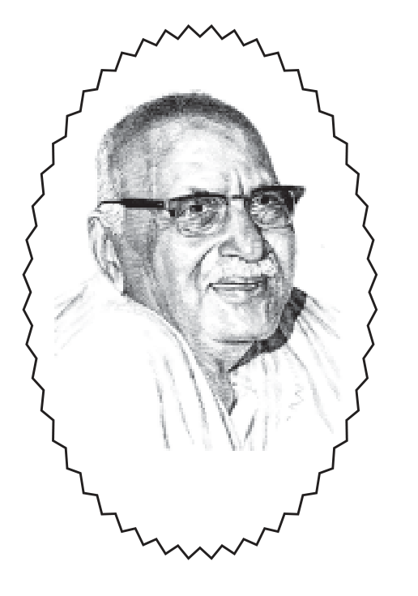

॥ श्रीहरिः ॥
प्रेम और प्रेमी

हनुमानप्रसाद पोद्दार
गीतावाटिका प्रकाशन, गीतावाटिका - गोरखपुर के मूल ग्रंथ
— सरल एवं सुगम पठन के लिए नवीन प्रस्तुति।
॥ ॐ श्रीपरमात्मने नमः ॥
नम्र निवेदन
भारतीय संस्कृतिके उन्नायकोंमें अनेक निःस्पृह संत, भक्त, जनसेवक, कवि, लेखक, देशभक्त, कर्मयोगी, ज्ञानी, संन्यासी और जीवन्मुक्त मनीषी हुए हैं, किन्तु ऐसे विरले पुरुष हुए हैं जिनमें ये सभी गुण एक साथ प्रादुर्भूत हुए हों। भाईजी श्रीहनुमानप्रसादजी पोद्दार ऐसे ही महापुरुष थे जिनके कार्योने भारतीय संस्कृतिके प्रवाहको दिशा दी और उसकी अमिट छाप युगोंतक रहेगी। वे गृहस्थ होकर भी अजातशत्रु रहे और उनका सारा जीवन, उनके विचार, उनके कर्म और आदर्श एक ऐसे जीवन्मुक्त संतके रहे हैं जिसने जीवनको लोकाराधन और अपने सर्वस्वको भगवान्में सर्वथा विलीन कर दिया तथा जिसका निजका कोई कर्तव्य शेष नहीं रहा। वे संन्यासीकी साधना, उसके गुण और मर्यादासे सम्पन्न होते हुए भी लोक कल्याणके साधक और साधन थे। उन्होंने अपनी लेखनी और अमृतवाणीसे भक्तिमार्ग और आध्यात्मिक जगत्की जो सेवा की है वह अतुलनीय है।
श्रीभाईजी साधनाको परमोच्च अवस्थाको प्राप्त थे। उनको मति, मन और इन्द्रिया अपने इष्ट श्रीराधा-माधवमें तदाकार हो गयी थीं। उनके बारेमें श्रीराधाबाबाने लिखा है-‘भाईजीका पाञ्चभौतिक शरीर (इन्द्रियगोलकों सहित) अर्थात् इन्द्रियगोलकों सहित जो पाञ्चभौतिक ढाँचा है, केवल इतना ही बचा हुआ है बाकी सबका-सब पूरा-पूरा राधाजीके रूपमें परिणित हो गया है। जिस प्रकारसे दो विरोधी गुण भगवान् श्रीकृष्णमें युगपत् रहते हैं, एककालीन मुग्धता और एककालीन सर्वज्ञता, जिस प्रकार एककालीन सर्वज्ञता एवं मुग्धता श्रीराधाजीमें रहती है, उसी प्रकार भाईजी एककालमें ही निरन्तर राधाभाविष्ट रहकर भी जगत्को हनुमानप्रसादका अभिमानी बनकर मोहित कर सकते हैं।’
लोक व्यवहारमें श्रीभाईजीको क्रियामें उनका कार्य दिखायी देता था परन्तु वस्तुतः उनके सारे कर्म ईश्वरीय क्रिया थी। इसीलिये उनको वाणी भगवदीयवाणी है। पूज्य स्वामी रामसुखदासजी लिखते हैं-‘भाईजी, क्या कहें बहुत ही मीठे लगते हैं। भाईजीके सत्संगमें एक प्रकारका हृदयमें प्रकाश-सा छा जाता है।’ श्रीभाईजीकी वाणीमें इतना ओज और आकर्षण है कि मन बरबस आकर्षित हो जाता है। उनके वाणी-संग्रहको लिपिबद्ध करनेका प्रयास गान् श्रीकष्पकी रहा है। अबतक वेणुगीत, यज्ञ पत्नियोंपर कृपा, भगवान् मधुर बाललीलाएँ, श्रीरासपञ्चाध्यायी, कालियनागपर कृपा और श्रीभरतचरित जैसे कथा प्रसंग और ब्रजभावकी उपासना, प्रभुको आत्मसमर्पण, रस और आनन्द तथा प्रेमका स्वरूप प्रवचन-संग्रह प्रकाशित हुए हो गये हैं जिन्हें पाठकवृन्दने हृदयसे स्वीकार किया है।
प्रस्तुत पुस्तकमें ‘भगवानके दिव्य श्रीविग्रहका दर्शन’ एवं ‘भगवान्के बाल स्वरूपका ध्यान’ लेख श्रीभाईजीके अनन्य सेवक गोलोकवासी श्रीगम्भीरचन्दजी दुजारीकी डायरीसे संकलित हैं और शेष लेख श्रीभाईजीके प्रवचनोंको श्रीव्रजदेवजी दूबे द्वारा लिपिबद्ध किया गया है। इस संग्रहमें व्यावहारिक बातोंसे लेकर साधन जगतके उच्चतम विषयोंका बहुत ही सरल, सरस एवं बोधगम्य भाषामें वर्णन है। हमें आशा एवं विश्वास है कि जो लोग इसका मनोयोगसे अनुशीलन करेंगे उन्हें लौकिक एवं पारलौकिक साधनामें अवश्य ही श्रेष्ठ मार्गदर्शन प्राप्त होगा। पुस्तकमें जो त्रुटियाँ दृष्टिगोचर होंगी वह हमारी अल्पज्ञतावश अपनी हैं जिनका ध्यानाकर्षण करनेपर सुधारनेकी चेष्टा की जायेगी।
— प्रकाशक
॥ ॐ श्रीपरमात्मने नमः ॥
१. शरणागति
शरणागतिमें इस बातका विचार नहीं किया जाता है कि शरणागत होनेवाला किस प्रकारका साधक है। उसमें तो केवल एक ही बात देखी जाती है कि वह भगवान्के शरणागत सम्पूर्णरूपसे होना चाहता है या नहीं। भगवान्की शरणागतिके लिये, भगवानके प्रति आत्मसमर्पणके लिये यह आवश्यक नहीं है कि उसमें अमुक-अमुक प्रकारके बाहरी गुण होने चाहिये। जिसमें बाहरी गुण हों केवल वही भगवान्की शरणागति प्रात कर सकता है--ऐसी बात नहीं है। कैसा भी हो, किसी श्रेणीका हो, किसी वर्गका हो, किसी वर्णका हो, किसी जाति-देशका हो, उसने पहले कुछ भी किया हो, उसकी अबतककी जीवनचर्या कैसी भी रही हो, इस समय--वर्तमानमें वह यदि सचमुच अपने दैन्यका अनुभव करता हुआ, अपनी दीनता, अपनी साधन-हीनता, अपने मनकी मलिनता, अपनी सब प्रकारकी अयोग्यता, अपनी आसक्ति-इन सबका अनुभव करता हुआ जो सर्वसमर्थ, परम सुहृद, अकारण स्नेह करनेवाले भगवान्के श्रीचरणोंमें अपनेको डाल देता है बिना किसी शर्तके, केवल भगवानको कृपाके भरोसे, अपने साधनके भरोसे नहीं तथा अपनी शक्ति और अपनी योग्यताके भरोसे नहीं, अपने किसी पुरुषार्थके बलके भरोसे नहीं, अपने किसी धर्म-कर्मके भरोसे नहीं केवल भगवानको कृपाके भरोसे, विश्वासपूर्वक उस कृपापर आस्था करके अपनेको जो भगवान्के श्रीचरणोंमें डाल देता है तब भगवान् यह नहीं देखते कि यह पहले कैसा था? यह किस जातिका है? किस धर्मका है? इसके अबतकके आचरण कैसे हैं? यह सब भगवान् नहीं देखते हैं। बस,
सनमुख होड़ जीव मोहि जबहीं। जन्म कोटि अघ नासहिं तबहीं।
कोटि बिप्र बध लागहिं जाहू। आएँ सरन तजडँ नहिं ताहू ॥
(रा०च०मा०/सु०/४४-२,१)
भगवान् कहते हैं कि जिसको करोड़ों ब्राह्मणोंकी हत्याका पाप लगा हो उसको भी, शरण आनेपर मैं त्याग नहीं करता-‘तजडेँ नहिं ताहू ।’ इसलिये, भगवानको शरणागतिके लिये केवल भगवान्को कृपापर विश्वास ही परम और चरम साधन है। भगवान्की कृपापर विश्वास और अपने दैन्यका ठीक परिचय। सब तरहसे--सब प्रकारसे अपनी दीनताका, अपनी हीनताका पूर्ण परिचय, पूर्ण ज्ञान और भगवानको अहैतुकी कृपामें पूर्ण विश्वास-बस, शरणागतिका यही साधन है।
इस प्रकार जो भगवान्के शरण जाते हैं फिर भगवान् उसको कुछ नहीं कहते हैं। वे अपनी शरणमें रखकरके पवित्र कर लेते हैं, पावन कर लेते हैं। अबतक जो बात हुई वह हम सरीखे लोगोंकी बात हुई जिनमें कोई बल नहीं है। परन्तु कुछ भक्तोंका बड़ा सुन्दर कहना है कि हम जिस धाममें भगवानको विराजित करना चाहते हैं, हम जिस मन्दिरमें भगवान्की प्रतिष्ठा करना चाहते हैं, हम जहाँ भगवानको बुलाकर बसाना चाहते हैं वह स्थान गन्दा क्यों रहे? यद्यपि गन्दगी वे साफ कर देते हैं; यह तो उनकी कृपा है। परन्तु क्या हम किसी गन्दी चीजको लेकर अपने परम प्रेमास्पद प्रियतम प्रभुको ग्रहण करनेके लिये उनसे कहें? यद्यपि वे इसे कृपापूर्वक ग्रहण कर लेंगे परन्तु यह उचित नहीं है। भगवान् जो परम मंगलमय हैं, परम कल्याणमय हैं, परम पवित्र हैं उन भगवान्के सामने जाकर हम उनसे कहें कि हम गन्दगीसे भरे हैं आप हमें ग्रहण कर लीजिये। यद्यपि वे ग्रहण कर लेंगे परन्तु यह उचित नहीं है। इसलिये क्या करें? भगवान्की कृपा यहाँ भी कार्य करती है। उनकी कृपाके बलपर हम अपनेको विशुद्ध करें। यह विशुद्धि भी शरणागतिका ही एक अंग है। यह विशुद्धि क्या है?
शरणागतिमें--शरणमें जानेवालोंके लिये तीन बातोंकी आवश्यकता होती है। प्रथम बात--शरण्य भगवानके अतिरिक्त दूसरे किसीमें भी शरण्यताका भाव न होना। किसी अन्य प्राणीमें, पदार्थमें, देवतामें, साधनमें अथवा किसी अन्यमें भी शरण्यताका भाव न होना। भगवान्के सिवाय और कहीं भी मुझे शरण मिल सकती है--इस प्रकारकी भावनाका न रहना। इसीका नाम है-भजते मामनन्यभाक् (गीता ९/३०)-माम् अनन्य भाक् भजते। दूसरेको हिस्सा न दे। ‘भगवान्के सिवाय दूसरा कोई शरण देनेवाला है’-इस प्रकारकी कल्पना मनमें न रहे। कोई साधन, कोई देवता, कोई इष्ट या अन्य कोई भी चीज मनमें न रहे । दूसरी बात--भगवान्की शरण्यतामें पूरा विश्वास हो कि भगवान् जब शरणमें ले लेंगे तब हमारे लिये कोई चिन्ता या कोई भय नहीं रह जायेगा। अगर मनमें यह चिन्ता और भय है कि शरण तो होते हैं परन्तु कुछ और करना पड़ेगा। बिना कुछ किये कैसे काम चलेगा तो इसका अर्थ है कि शरण्यमें विश्वास नहीं है। तीसरी बात--हम जिसके शरण होना चाहते हैं उसके सामने किसी प्रकारकी कोई भी अपनी माँग मत रखें। अपनी कोई माँग बिल्कुल न रहे।
ये तीन बातें शरणागत होनेवालेमें होनी चाहिये। यदि ये तीनों बातें हैं तब अन्तःकरणकी विशुद्धि हो जाती है। इनके आते ही जितने पाप हमसे बनते हैं वे दूर होने लगते हैं। यह बिल्कुल सैद्धान्तिक बात है कि जिस प्रकार एक और दो मिलकर तीन होते हैं, दो और दो मिलकर चार होते हैं उसी प्रकार जब हम भगवान्की शरणमें जाना चाहते हैं उसी समय हमारे जीवनमें रहनेवाले पाप भागना शुरू कर देते हैं। वे रह ही नहीं सकते। जब हमने निश्चय कर लिया कि ‘एकमात्र भगवान् ही हमारे शरण्य हैं और हम उनकी शरणमें जा रहे हैं तब जितने भी भोग पदार्थ हैं, जितने भी काम्य पदार्थ हैं उन सबका आश्रय मनसे हट गया और जहाँ वे हटे वहाँ सारा पाप हट गया, सारा दुराचार हट गया। यह सिद्धान्त है कि हमारे द्वारा जो कुछ भी, जब कुछ भी बुराई होती है, पाप होता है, और अनर्थ होता है तब उसका एकमात्र कारण है--भोग-कामना--भोगोंका आश्रय--भोगोंकी शरण्यतामें विधास। संसारके भोग हमें सुख दे देंगे’--इस प्रकारकी भ्रान्त धारणा। यह धारणा जबतक बनी है तबतक मनुष्य बच नहीं सकता अनर्थसे, बच नहीं सकता दुराचारसे और बच नहीं सकता है पापसे। जब इनकी शरण्यता मनसे दूर हो गयी और एकमात्र भगवानको शरण्य मानकर हम चले चलें उनकी ओर फिर ये हो नहीं सकते।
वल्लभ सम्प्रदायका एक बड़ा सुन्दर मन्त्र है-‘श्रीकृष्णः शरणं मम’। यह मन्त्र ही रह गया है। अब भाव बहुत कम लोगोंमें है। यह मन्त्र कितना सुन्दर है कि श्रीकृष्ण ही एकमात्र मेरे शरण्य हैं। वही एकमात्र मेरे आश्रय हैं, और कोई भी आश्रय नहीं । अन्याश्रयत्वका सर्वथा परित्याग इसमें है।
अन्य आश्रय-अन्य देवताका आश्रय, अन्य वस्तुका आश्रय, भोग वस्तुका आश्रय, किसी प्राणीका आश्रय, किसी स्थिति और अवस्थाका आश्रय-ये सारे के सारे अन्य आश्रय हैं, दूसरोंके आश्रय हैं। जबतक दूसरोंका आश्रय है, जबतक भोगाश्रय है, जबतक संसारके पदार्थों और प्राणियोंका आश्रय है तभीतक अन्तःकरण अशुद्ध है। तभीतक अन्तःकरणमें पाप और पापको भावनाएँ उत्पन्न हो सकती हैं। जब अन्याश्रयत्वका त्याग हो गया और एकमात्र भगवानका आश्रय हमारे मनमें आ गया फिर उसके बाद उसी समयसे ही ये जितने भी अनर्थ हैं-काम, क्रोध, मोह और लोभ आदि शत्रु ये सबके सब शत्रु चले जायेंगे, भाग जायेंगे। और, कहीं रहेंगे भी तो अनुगत होकर रहेंगे, सहायक होकर रहेंगे। फिर एकमात्र कामना मनमें होगी कि भगवान्की शरण हमें तुरन्त प्राप्त हो जाय। एकमात्र क्रोध मनमें होगा कि क्यों देर हो रही है? झुंझलाहट अपनेपर होगी। भगवान्के चिन्तनका लोभ होगा कि क्यों कम चिन्तन होता है, और होना चाहिये। भगवान्के सौन्दर्य-माधुर्यसे मोह होगा। उसके देखे बिना चैन नहीं पड़ेगा। भगवान्के सेवकत्वका मद होगा। इस प्रकार ये जितने भी अनर्थ हैं वे सब-के-सब हमारे सहायक बनकर भगवानको ओर जानेवाली हमारी गतिमें जोर--बल देनेवाले बन जायेंगे।
इसलिये अन्याश्रयत्वका त्याग--अन्तःकरणकी विशुद्धिमें परम सहायक है। काम-क्रोधादिका अलगसे नाश करनेकी आवश्यकता नहीं है। जबतक भोगाश्रय है तभीतक काम-क्रोध रहेंगे। जब भोगाश्रय ही नहीं है--भोगोंसे कुछ लेना-देना ही नहीं है तब भोगोंकी कामना कैसे रहेगी? जो लोग मांसाहारी नहीं हैं वे कभी मांसकी कामना करते हैं क्या? हिन्दू मात्र कभी गोमांस नहीं खाता है तो क्या कभी वह गोमांसकी कामना करता है? उसके लिये यह बुरी-से-बुरी चीज है। उसका नाम नहीं लेना चाहता, सुनना नहीं चाहता है और उसे देखना नहीं चाहता है। इसी प्रकार जब भोगाश्रय नहीं रहेगा तो भोग-कामना नहीं रहेगी। भोग-कामना नहीं रहेगी तब कामनाकी पूर्ति न होनेपर लगनेवाली चोटसे होनेवाला क्रोध नहीं होगा। क्रोध नहीं रहेगा तो कामनाकी पूर्तिसे होनेवाला लोभ नहीं आयेगा। काम, क्रोध और लोभ--ये तीन प्रबल खल हैं। ये नरकके दरवाजे हैं ये नहीं रहेंगे तब अन्तःकरण विशुद्ध हो जायगा। अन्तःकरणको विशुद्धिके लिये अलगसे कुछ करना नहीं पड़ेगा। फिर मनमें शरणागति हो गयी। यह एक भाव है।
दूसरा भाव है कि जो प्राप्त करनेकी वस्तु है इसीको लेकर सारा प्रपञ्च चलता है। प्राप्त होनेयोग्य वस्तु हमारी दृष्टिमें क्या है? संसारके भोग। और, साधककी दृष्टिमें प्राप्तव्य क्या है? भगवान्! चैतन्य महाप्रभुने अपने अष्टकमें कुल आठ शोक कहे हैं। एक-एक शोक एक-एक साधनका मन्त्र है। उन्होंने बहुत सुन्दर कहा है--
युगायितं निमेषेण चक्षुषा प्रावृषायितम्।
शून्यायितं जगत् सर्व गोविन्द विरहेण मे॥
(अष्टक ७)
इस आष्टकमें भगवानको प्राप्त करनेवालेकी चित्तवृत्ति कैसी होनी चाहिये? भगवान्के न आनेपर किस प्रकारका जीवनका भाव होना चाहिये, भगवानके विरहमें क्या स्थिति होनी चाहिये इसका संकेत है। वे कहते हैं-‘युगायितं निमेषेण’--एक-एक निमेष अर्थात् आँखकी पलक जितनी देरमें पड़े उतना समय एक निमेष, मेरे लिये एक-एक युग हो गया है और चक्षुषा प्रावृषायितम्’-मेरी आँखें, वर्षा ऋतु बन गयी हैं। निरन्तर बरसती रहती हैं तथा शून्यायितं जगत् सर्व’-सारा जगत् मेरे लिये सूना हो गया है। ‘गोविन्द विरहेण मे’-गोविन्दके विरहमें । गोविन्दके वियोगमें, भगवानके अमिलनमें, प्रेमास्पदको विरह व्यथामें क्या दशा होती है? एक-एक निमेष युगके समान व्यतीत होता है। एक निमेष भी सहन नहीं होता है। श्रीमद्भागवतके गोपीगीतमें श्रीगोपांगनाएँ कहती हैं--
अटति यद् भवानह्वि काननं त्रुटिर्युगायते त्वामपश्यताम् ॥
(१०/३१/१५)
जब श्यामसुन्दर वनसे लौटकर व्रजमें आते हैं उस समय हम उन्हें देखा करती हैं। परन्तु बीचमें पलकें पड़ जाती हैं । ब्रह्माने पलकें क्यों बना दी? विधाताने बड़ी गलती की जो पलकें बना दी। क्योंकि एक-एक पलक पड़नेका समय हमारे लिये एक युगके समान हो जाता है। पलकें पड़नेके समयका जो अदर्शन है प्रियतमका वह अदर्शन हमारे लिये युगके समान हो जाता है--न्रुटिर्युगायते।
इस प्रकार जब चित्तमें भगवानके अमिलनका उत्ताप-संत्ताप जाग उठता है उस समय अन्तःकरणमें क्या अशुद्ध चीज रह सकती है? उस समय क्या जगत्को वस्तुएँ, जगत्के प्राणी-पदार्थ, जगत्के भोग उसके चित्तको खींच सकते हैं?
चैतन्य महाप्रभु घरसे निकल गये। घरमें नवयुवती स्त्री थी जो उनका दूसरा विवाह था। परन्तु भगवान्के प्रति ऐसी पुकार कि हृदयमें आग जल उठी। वह आग अब कौन-सी दूसरी चीजको रहने देगी? अन्तःकरणमें भोग, भोगोंके दृश्य, भोगोंको प्राप्त करनेकी इच्छा-कामना और भोगोंकी प्रतीक्षा वहीं होती है जहाँ भोगाश्रय होता है। यहाँ तो हदयमें आग लग गयी गोविन्दको प्राप्त करनेके लिये। इस जलती हुई आगमें यदि कहीं कोई भोगका मनोरथ रहा होगा अथवा किसी प्रकारकी दूसरी भावना तो वह भस्म हो जायेगा। हम संसारमें देखते हैं कि जब किसी एक विषयमें हमारा मन अत्यन्त लग जाता है और उसको प्राप्त करनेमें मन अत्यन्त आतुर हो उठता है उस समय क्या मनमें कोई और चीज रहती है? हम सबका यह अनुभव है। जीवनमें जब कभी भी किसी वस्तुके लिये जो नाशवान् है, जो प्राप्त होनेपर रहेगी नहीं और जो अपूर्ण है; ऐसी वस्तुको प्राप्त करनेके लिये हमारे मनमें जब एकान्त लालसा जाग उठती है, हृदय व्याकुल हो उठता है उस समय क्या जगत्के अन्य पदार्थ याद रहते हैं? क्या जगत्का खेल-तमाशा हमें अपनी ओर खींच सकता है? क्या जगत्का सौन्दर्य-माधुर्य हमारे मनको अपनी ओर आकर्षित कर सकता है? कदापि नहीं। मन विशुद्ध हो जाता है एकमें लग करके ।
इसी प्रकार जब भगवानका विरह जाग उठता है तब अन्तःकरण विशुद्ध हो जाता है। विरह ही जगाना है साधनके द्वारा, और कुछ नहीं करना है। भगवान्की प्राप्ति दुर्लभ नहीं है। अपितु भगवान्की प्राप्तके लिये हृदयमें संतापका जाग जाना ही दुर्लभ है। यह संताप जब जाग गया, हृदयमें इस प्रकारको एक ज्वाला जब जग उठी, जो ज्वाला सारी कामनाओंको, सारी वासनाओंको, सारी स्पृहाओंको, सारी आकांक्षाओंको और सारी तृष्णाओंको सब प्रकारसे निरस्त कर देगी, खा जायेगी, जला देगी तब अन्तःकरण अशुद्ध कहाँ रहेगा? अन्तःकरणकी अशुद्धि कोई चीज नहीं है यदि उसमें भगवत्-विरहकी आग डाल दी जाय। कूड़ेमें आग डाल दी जाय तो कूड़ा कितनी देर रहेगा? वह कूड़ा आग बन जायेगा।
इसी तरह भगवत्प्रेम-प्राप्तिकी, भगवत्प्राप्तिकी हदयमें आग जला देनी चाहिये। यही परम साधन है। और, यह आग जल सकती है। कैसे? चैतन्य महाप्रभु जैसे, मीरा जैसी, अन्डाल जैसी, श्रीनरसी मेहता जैसी और श्रीगोपांगनाओं जैसी। इन महात्माओंके भावोंको समझकर और उनका पदानुसरण करनेसे अपने-आप यह चीज हृदयमें जाग उठेगी। और, जागते ही, जागते ही क्या इसका आभास आते ही ये मनके जितने भी पाप हैं वे तिलमिला उठेंगे। ये उस हदयमें रह ही नहीं सकते जिस हदयमें भगवान् आना चाहते हैं। उस हृदयसे ये पहले ही भाग खड़े होंगे। इनको निकालना नहीं पड़ेगा, ये अपने-आप निकल जायेंगे। परन्तु होनी चाहिये भगवानको, भगवत्प्रेमको प्राप्त करनेकी सच्ची और अदम्य लालसा। यदि उसमें कहीं गड़बड़ी हो, भगवान्के नामपर मनमें कहीं भोग हो, भगवान्के नामपर मनमें कहीं जगत् हो, भगवान्के नामपर यदि किसी प्रकारकी भौतिक सुख-लालसा हो तब मामला कठिन है। वहाँ चीज नहीं बनेगी ।
जब मनमें जगत्की ये चीजें नहीं हैं और भगवान्की लालसा जागी तब भगवान् क्या करते हैं? भगवान् उस हृदयको अपना निवास-स्थान बना लेते हैं। यह पता ही नहीं लगता है कि भगवान् है या नहीं । क्यों नहीं लगता है? इसलिये कि जिसको पता लगता है होनेका वह भगवानका बन जाता है। जो चित्त भगवानको अवस्थितिका अनुभव करता है वह चित्त ही अपने पास नहीं रहता है। वह चित्त भगवान्की सम्पत्ति बन जाता है। इसके बाद क्या होता है। उसका वर्णन कोई नहीं कर सकता है। जिसे ‘महाभाव’ कहते हैं वह यही अवस्था है। वैष्णवोंने जिसे ‘महाभाव’ कहा है वह यही है कि चित्तका सर्वथा और सर्वदा प्रेमास्पदके अधीन हो जाना। चित्त-सम्पत्ति अपनी नहीं रहती है। श्रीनारायण स्वामीने एक पद गाया है--
“तुम्हरे अक्षत गयो मन मेरो कहूँ तो थाह लगाओ!”
उन्होंने कहा-अरी आँखों ! तुम तो पहरेदार थी न! तुम दोनों पहरेपर बैठी हुई थीं और तुम्हारे देखते-देखते वह मेरे मनको चुरा ले गया। तुम्हें कुछ तो पता लगाना चाहिये था? अन्तमें बोले-
“नारायण मुझे वस्तु न चाहिये लेवनहार दिखाओ।”
उन्होंने आँखोंसे कहा-आँखों, सुनो! कोई बात नहीं है, ले गया सो ले गया। अब मुझे उस वस्तुको आवश्यकता नहीं है परन्तु कौन ले गया है उसे जरा दिखा दो।
चित्तका सर्वथा प्रेमास्पदके अधीन हो जाना, प्रेमास्पदको सम्पत्ति बन जाना--इस अवस्थामें चित्तका नाश नहीं होता है। चित्त अचित्त नहीं होता है, चित्त मरता नहीं है अपितु भगवत्-सम्पत्ति बन जाता है। फिर, उस चित्तमें भगवान् कार्य करते हैं। तब, वहाँपर क्या होता है? ये जितनी भी भगवान्की लीलायें हैं, जिन लीलाओंको देखकर, सुनकर, पढ़कर हम सुखी होते हैं, कहीं मोहित होते हैं और कहीं जरा संकोचमें पड़ जाते हैं कि हमारे भगवानको ऐसी बात, वे लीलाएँ प्रत्यक्ष हो जाती हैं।
आजकल बहुत अच्छे लोग जो देशका परमहित चाहते हैं और जो प्राचीन गौरवको बनाये रखना चाहते हैं, अच्छी नीयत रखते हैं वे लोग भी जब ऐसी बातको देखते हैं तो कहते हैं कि विदेशी क्या कहेंगे? इसलिये इस बातको क्षेपक बताते हैं। वे कहते हैं कि यह चीज तो नहीं थी, यह बादमें जोड़ी गयी है। ये हमारा नहीं है। हमारा तो परम पवित्र था। वे विश्वासपूर्वक यह नहीं कहते कि जो था वह है और यह पवित्र है तथा इसके पवित्र होनेका भाव यह है। किसीने मुझसे कहा कि शंकराचार्य आदिने पुराणोंको रूपक माना है। मैंने कहा-रूपक नहीं माना है। उन्होंने सिद्धान्तसे भले ही कह दिया हो कि ये व्यावहारिक सत्ताकी बातें हैं। परन्तु व्यावहारिक सत्तामें ये बातें न हुई हों यह कोई भी नहीं कहते हैं। ये रूपक नहीं हैं, ये सब सत्य हैं।
भगवान्की लीलाओंमें जो मिलन है--सखाओंसे भगवानका मिलन, माताओंसे भगवानका मिलन, सखियोंसे भगवानका मिलन और शत्रुओंसे भगवान्का मिलन। इसे कुछ लोग कहते हैं कि भगवान्के न माता हैं, न पिता हैं, न सखा हैं और न ही शत्रु हैं तो क्या भगवान् दम्भ करते हैं? लोगोंको दिखाते हैं? नहीं, इसे हम दम्भ नहीं कह सकते हैं। फिर, क्या यह झूठी बात है? यह झूठ भी नहीं है। फिर, यह क्या है? यह भगवान्को प्रेमाधीनता है। भगवानको भक्तवत्सलता है। भगवान्की लीलामयता है। भगवानका यह एक क्रीड़ा-सुख है और सत्य है, दम्भ नहीं है।
भगवानको लीला सखाओंके साथ होती है। छोटे बच्चोंके साथ बालकों जैसी। सखाओंसे गले मिलते हैं मित्रोंकी तरह। अर्जुनके लिये अग्नि और इन्द्रसे वरदान माँगते हैं कि हमारा प्रेम बढ़ता रहे। भला, यह भी कोई बात है कि भगवान् कह देते हैं कि पाण्डवोंके वैरी मेरे वैरी और पाण्डवोंके मित्र मेरे मित्र हैं। भगवान्में क्या राग-द्वेष आ गया? राग-द्वेष न हो तो क्या कोई ऐसी बात कह सकता है कि अमुक मेरा वैरी और अमुक मेरा मित्र है। यह क्या बात है? यह राग-द्वेष नहीं है। यह भगवान्की प्रेमाधीनता है। भगवानका यह बड़ा सुन्दर लीलाका भाव है। इस लीलामें विचित्र-विचित्र बातें होती हैं। उन बातोंको देख-सुनकर बहुत बार लोगोंको ऐसा सन्देह हो जाता है कि यह भगवान् नहीं हैं बल्कि कई बार अपने भगवान्की बात लोगोंसे कहनेमें शर्म मालूम होती है कि भगवान्के लिये ऐसी बात कैसे कहें? भगवान्ने गोपियोंके घरोंमें जाकर माखन चुराया--यह बात कैसे कहें? भगवान्में चोरीकी बात कैसे कहें? भगवान् सखाओंसे लड़ लिये और लड़कर रूठकर सो गये-यह बात कैसे कहें?
एक बारकी बात है कि भगवान् सखाओंके संग वनमें खेल रहे थे। बछडे अलग चर रहे थे और इधर सब ग्वाल-बाल खेल रहे थे। खेलमें दो बातोंका ध्यान रखा जाता था। यह समझनेकी बात है। श्रीकृष्णको सुख न हो-एऐसी कोई क्रिया सखा नहीं करता था, स्वाभाविक । यदि गाली भी देता था तो इसलिये कि उन्हें सुख होगा। रूठता भी इसलिये था कि इससे श्रीकृष्णको सुख होगा। धक्के भी देता था तो इसलिये कि इसे सुख होगा न कि अपने सुखके लिये। एक बार खेलते हुए इनके मनमें सोनेकी इच्छा हुई। सखाओंने पत्तेकी शैय्या बना दी और शैय्यापर भगवान् सो गये। श्रीदामने कहा-मेरी जाँघपर सिर रखकर सो जाओ। उन्होंने कहा--नहीं, पत्थरपर सिर रख लेते हैं। फिर, श्रीदामने कहा--नहीं, पत्थर कठोर हैं। मेरी जाँघपर सिर रखकर सो जाओ। उसने अपनी जाँघपर सिर रखकर सुला दिया। कुछ साथी बच्चे चरण दबाने लगे। कुछ पत्ते लेकर हवा करने लगे। कुछ ठंडा-ठंडा जल लाये और उसमें कपड़ा भिगोकर इस प्रकार करने लगे कि महीन-महीन ठंडी बूँदें श्यामसुन्दरके शरीरपर पड़ें और उनको ठंडा लगे। उस समय वहाँ गरमी थी, लू चल रही थी। इस प्रकार बड़ी सुन्दर सेवा हो रही है। यह सेवानन्द लेते हुए श्रीकृष्णके मनमें एक बात आयी कि इसमें तो बड़ा सुख मिला अब इसकी वामदिशामें--इन सखाओंको भी सुख मिलना चाहिये, तो हम इनसे लड़ लें। सेवा करनेवालेसे लड़ लें? खेल-खेलमें हम इनसे लड़ लें फिर ये रूठ जायेँगे। तब हम इनको मनायेंगे फिर इन्हें आनन्द आयेगा। यह संकल्प भगवान्ने किया। अब इसमें बुद्धिवादी लोग सोचेंगे कि ये कैसे भगवान् कि जो दार्शनिक बातें नहीं सोचते, सृष्टिको क्रिया नहीं सोचते, जगत् क्या है, ब्रह्म क्या है यह नहीं सोचते। जो अपने स्वरूपमें नित्य स्थित हैं, जो स्वरूपसे कभी विचलित नहीं होते वे भगवान् भला, ऐसी बात कैसे सोचेंगे? परन्तु इन्हीं बातोंमें तो भला है, आनन्द है, मजा है। वे तत्त्वकी बातें दूसरी हैं।
भगवान्के मनमें संकल्प आते ही क्रिया शुरू हो गयी। यहाँ उलटी चीज है। सेवा करनेवालेका उपकार मानना तो दूर रहा, सेवा करनेवालेको धन्यवाद देना तो दूर रहा उलटे उन्हींसे लड़ने लगे। बुद्धिवादी कहेंगे भगवान्में यह क्या है? यह कोई सीखनेवाली बात है। यह आदर्श नहीं है। यहाँ तो आदर्शकी बात ही नहीं है। यह लोकसंग्रही भगवान् जो हैं वह कुछ अलग हैं। यहाँ तो खेलनेवाले भगवान् हैं। फिर, इन्होंने क्या किया कि जिस श्रीदामने अपनी जाँघपर इनका सिर रखकर सुलाया था उससे पहले बिगड़े। उन्होंने रोषपूर्वक कहा--श्रीदाम! तुम्हारी जाँघ ऊँची है, मेरा सिर दुखने लगा। यहाँसे हटो। उसने कहा-भैया! मेरी जाँघ ऊँची नहीं है और बड़ी मुलायम है तुम थोड़ा सिर नीचे कर लो। श्रीकृष्णने कहा--नहीं-नहीं, तुम यहाँसे भागो। उसे भगा दिया। अब, जो बेचारा पंखा झल रहा था उससे कहा--यह तुम क्या कर रहे हो? यह जो पत्तोंसे पंखा झल रहे हो, ये पत्ते आकर मेरे शरीरमें लगते हैं। यह मुझे अच्छा नहीं लग रहा है। तुम यहाँसे जाओ। उसे भी भगा दिया। जो पैर दबा रहे थे उनसे कहा--तुम्हारे हाथ बड़े कठोर हैं इनसे मेरा चरण दबाते हो तो मुझे दर्द होता है। तुम भी भाग जाओ यहाँसे। और, पानीकी फुहारें डालनेवालोंसे कहा--यहाँ मैं आरामसे सो रहा हूँ, क्या तुम मुझे भिगोना चाहते हो? चले जाओ यहाँसे। अब चारों रूठ गये और बोले-हम तुमसे नहीं बोलेंगे। अबसे हमारी-तुम्हारी कुट्टी। वे अलग जाकर बैठ गये और शेष सखाओंको बुलाकर कहा--आजसे सभी श्रीकृष्णका बहिष्कार कर दें। हम लोगोंका अपना अलग दल रहेगा। यह तो सेवा करनेवालेके साथ उलटा व्यवहार करता है। सखा रूठ गये तो थोड़ी देरतक तो इन्होंने धैर्य रखा फिर उनसे रहा न जाय। अब मनायें कैसे? थोड़ा रुककर उनके सामने गये और बोले--भैया ! मुझसे भूल हो गयी उस समय मैं नींदसे उठा और गरमी लग रही थी। मुझसे भूल हो गयी, तुम सब मान जाओ। सबका मनुहार करने लगे लेकिन कोई माना नहीं। सब एकदम रूठ गये थे और तय कर लिया था कि आज इसको ठीक करना है। लेकिन श्रीकृष्णके मनमें था कि इन्हें दुःख न हो। दोनोंके मनमें एक ही चीज है कि इन्हें दुःख न हो, इन्हें सुख मिले--‘तत्सुखेसुखित्वम्’ (नारदभक्तिसूत्र/२४) । श्रीकृष्णने सखाओंको बहुत मनाया, बहुत मनाया। उनके पैर दबाये, हाथ दबाये और कहा--भैया! अब ऐसा नहीं करूँगा। परन्तु वे माननेके लिये तैयार नहीं हुए। जब वे नहीं माने तब श्रीकृष्णने उन्हें मनानेका दूसरा उपाय सोचा। वे उनसे अलग दूर जाकर लगे जोर-जोरसे रोने । बोले-अरे! बिच्छू काट लिया-बिच्छू काट लिया। अब, सभी सखा बोले-अरे ! श्रीकृष्णको बिच्छू काट लिया, दौड़ो। अब किसीके मनमें धैर्य नहीं रहा और सभी सखा दौड़कर श्रीकृष्णके पास पहुँचे । बोले--अरे, हम तो बड़े पापी हैं, दुरात्मा हैं। यह तो हमें मनाने आया था। यदि हम मान गये होते तब यह क्यों रूठता और फिर इसे बिच्छू क्यों काटता। यह हमारी ही नालायकी है। हे विष्णु भगवान्! हे नारायण!! हमारे कन्हैयाको जल्दी आराम दो। श्रीकृष्णने कहा--इस प्रकार नहीं। तुम सब आओ और आकर मेरे पैरपर हाथ फिराओ, जल छिड़को, हवाके लिये पंखा चलाओ और श्रीदाम आकर अपनी जाँघपर मुझे सुलाये तब आराम होगा। सभीने वैसा ही किया। वही पूर्वका दृश्य फिर उपस्थित हो गया, ज्यों-का-त्यों। उन्हें आराम तो होना ही था। इस लीलामें कोई दार्शनिक तत्त्व देखें, तत्त्ववेत्ता तत्त्व खोजे तो वह कहेगा कि व्यर्थका समय खोया। इससे क्या कोई लाभ हुआ? लेकिन यह लीलानन्द है।
एक होता है उपयोगितावाद। आजका युग उपयोगितावादी है। माता-पिता बूढ़े हो जायँ तो कहेंगे कि अब ये उपयोगी नहीं हैं। सर्वोच्च न्यायालयने गोहत्याकाण्डमें एक फैसला दिया है। उस निर्णयमें कहा गया है कि गोहत्या नहीं होनी चाहिये। गोहत्या करनेका मुसलमानोंका कोई अधिकार नहीं है। परन्तु जो अनुपयोगी पशु-बैल, साँड हैं उन्हें काटनेमें कोई हर्ज नहीं है। यह है उपयोगितावाद। यही बात आजके हमारे अर्थशास्त्री कहते हैं कि इतनी गायें जो सरप्लस (surplus) हैं, जो कामकी नहीं हैं, जो निकम्मी हैं उन्हें काट डालना चाहिये क्योंकि वे उपयोगी नहीं हैं ।
इसी प्रकार धर्ममें भी उपयोगितावाद होता है। लोग कहते हैं कि कौन-सा आदर्शवाद ठीक है उसे देखो। किससे लोकोपकार हो रहा है, वह देखो उसे अपनाओ, कौन-सी चीज चलने योग्य है, वह देखो। यह उपयोगितावाद है।
भगवान्की लीलामें किसी उपयोगितावादको स्थान नहीं है। वहाँ तो उपयोगी-अनुपयोगी कुछ नहीं है। जो लीला करें, जो खेल खेलें वह उपयोगी और जो न खेलें वह सब अनुपयोगी है। वहाँ तो एक ही चीज है। इसलिये जहाँपर खेलका, भगवानका साम्राज्य है वहाँ केवल लीलाकी प्रधानता है, आदर्शकी नहीं। और, लीलाका अनुकरण कोई कर नहीं सकता तथा करना भी नहीं चाहिये । क्योंकि यह आदर्श नहीं है। यह लीलानन्द है। महान् लीलाका एक परम पवित्र मधुर स्नोत है। जहाँ समस्त कामनाओं-वासनाओंका जड़ समेत दग्ध हो जाना होता है तब इन चीजोंका उद्भव होता है। फिर, यहाँ कुछ शेष नहीं रहता है इसलिये यह कामनावालोंके लिये आदर्श नहीं है।
जिस प्रकार श्रीकृष्ण सखाओंके साथ खेलमें कभी रूठ जाते हैं कभी उन्हें मनाते हैं, उनका मनुहार करते हैं उसी प्रकार निकुञ्जलीलामें यह क्रिया अनवरत चलती है। एकबार श्रीकृष्णके मनमें आया कि आज मेरा तिरस्कार हो तब आनन्द आये। फिर, ऐसी लीलाके लिये कुछ व्यवस्था हो गयी। श्रीराधिकाजीने निकुञ्जके द्वारपर सखियोंको बैठा दिया और कह दिया--खबरदार! आज यदि श्यामसुन्दर यहाँ आ गया तो तुमलोगोंकी खबर ली जायेगी। उसे यहाँ आते ही भगा दो ।
“सखि! श्याम न आने पाये।”
बस, पहरा बैठ गया। श्रीकृष्ण अन्दर निकुञ्जमें नहीं जा पाये। बहुत चिरौरी की, विनती की, खुशामद की तब कहीं मान भंग हुआ। यह क्या चीज है? यह क्या भगवानके पूजाको पद्धति है? या आराधना है? अथवा, कोई आदर्श है? तथा किसी भले आदमीका कार्य है? फिर, क्या है? यह लीलानन्द है।
इसलिये दो चीजोंको सामने रखना है। भगवानको लीलाओंमें यदि प्रवेश करें तो वहाँपर मनको विशुद्ध करके जायँ। लीलाको देखें, लीलाको समझें और लीलाको सुनें परन्तु नकल न करें। नकल करनी है आदर्शकी। भगवान्की लीलाओंकी नकल नहीं करनी है। लीला कभी आदर्श नहीं देती है। आदर्श देते हैं वचन। भगवानके वचनोंका पालन करें। भगवान् जहाँ-जहाँ जो कुछ वचन कहते हैं उनका पालन करना चाहिये। लीला तो आनन्दके लिये है। जिनके नेत्रोंमें भगवान्ने शुभ दृष्टि दे दी, जिनपर भगवान्ने कृपा कर दी, जिनके नेत्रोंमें प्रेमको दिव्य-दृष्टि आ गयी वे लीलाओंको देखेंगे, सुनेंगे, समझेंगे और आनन्द मनायेंगे। वे लीलारत होंगे। यह प्रत्येकके लिये नहीं है। लेकिन जहाँ आदर्श है वहाँपर सारी चीजोंको मानना है। और, आदर्श माननेकी अधिक आवश्यकता है।
श्रीकृष्णको श्रीमद्भागवतमें हम कई रूपोंमें देखते हैं। एक श्रीकृष्ण हैं जो सुबह तीन बजे उठते हैं और उठते ही ब्रह्मका ध्यान करते हैं, भगवानका ध्यान करते हैं। ध्यान करके शौच, स्नानादि करते हैं फिर संध्या करते हैं, अग्निहोत्र करते हैं, तर्पण करते हैं। पिता-माताको प्रणाम करते हैं। प्रतिदिन गोदान करते हैं। इस प्रकार अपने समस्त कर्मोसे निवृत्त होकर फिर राजसभामें जाकर राज्य-कार्य करते हैं । इस प्रकारका आदर्श भगवानका है। एक भगवान् वह हैं जो अर्जुनका रथ हाँकते हैं। एक भगवान् वे हैं जो अत्यन्त दरिद्र, समाजमें जिसका कोई मान नहीं है, जिसका शरीर जीर्ण-शीर्ण है, जिसकी हड्डियाँ-पसलियाँ बाहर निकली हुई हैं, जो मैला-कुचैला कपड़ा पहने हुए हैं, जिसके शरीरपर तमाम धूल पड़ी है, जिसके पैरोंमें बिवाइयाँ फटी हैं और काँटे चुभे हैं, इस प्रकारके दरिद्रको जब श्रीकृष्ण देखते हैं तो राजमार्गपर, घरके अन्दर नहीं, उसे हृदयसे लगा लेते हैं। यह भी श्रीकृष्णका एक स्वरूप है। एक श्रीकृष्ण सबसे ऊपर सिंहासनपर बैठ जाते हैं। महर्षि व्याससे भी ऊपर, पितामह भीष्म, सारे ऋषियों और उग्रसेन तथा वसुदेवसे भी ऊपर और ललकारकर कहते हैं--मेरी पूजा करो। और, कोई भी इस पूजामें दखल देनेवाला हो तो उठे। पाण्डव पूजा करते हैं। और कोई तो नहीं परन्तु शिशुपाल बोला, और शिशुपाल वहीं भगवानके चरणोंमें समा गया। एक भगवान् यह हैं।
भगवान्के अनेकों विचित्र रूप हैं। जहाँ जिस प्रकारका रूप वहाँ उसी प्रकारका भगवानका खेल है। कहीं परम आदर्श है। गीतामें भगवान्के दो रूप हैं। एक जगह भगवान् कहते हैं कि मैं स्वयं कर्म करता हूँ ।
“नानवाप्तमवाप्तव्यं वर्त एव च कर्मणि” (गीता/३/२२)
उन्होंने कहा-मुझे कुछ प्राप्त करना नहीं है फिर भी मैं कर्म करता हूँ। क्यों करता हूँ? इसलिये कि यदि मैं कर्म न करूँ तो ये सब मनुष्य नष्ट-भ्रष्ट हो जायँ और मैं संकरताका करनेवाला होऊँ तथा इस समस्त प्रजाको नष्ट करनेवाला बनूँ।
उत्सीदेयुरिमे लोका न कुर्या कर्म चेदहम्।
सङ्करस्य च कर्ता स्यामुपहन्यामिमाः प्रजाः॥
(गीता २/२४)
और, एक जगह कहते हैं--‘सर्वधर्मान्परित्यज्य’ (गीता १८/ ६६) यह क्या है? स्वयं तो कर्म करें और दूसरोंको कहें कि सब धर्म छोड़ दो। दो प्रकारका मंच (ऽ६a0|6) है। जिस मंचसे त्यागकी, सब प्रकारके आश्रयोंके त्यागकी बात है वह शरणागतिका मंच है। और, जहाँ सभी कर्मको विधिवत करनेकी बात है वहाँ लोक-संग्रहका मंच है। जैसा मंच और जैसा स्वाँग वैसा नाच।
“जस नाचिये तस काछिये काछा”
जिस प्रकारका नाच होगा उसी प्रकारका स्वाँग होगा। जहाँ प्रेमका स्वाँग भगवानका होता है-बव्रजका स्वाँग यह इसीलिये बड़ा मधुर होता है। इसमें आदर्शकी भावना नहीं है। इसमें लीलानन्दको भावना है। लीलानन्दकी भावनामें जब साधक भगवान्को प्राप्त कर लेता है तब वह लीलाबिहारी भगवान् होते हैं। लीलाबिहारी भगवान् दूसरे हैं। इसीलिये लीलाविहारके तारतम्यसे भगवानके स्वरूपमें अन्तरको भक्तोंने कल्पना की है। वस्तुतः स्वरूपमें कोई अन्तर नहीं पड़ता है। परन्तु कहते हैं कि जितना खुलकर ये व्रजमें खेले उतना मथुरामें नहीं खेले। और, जितना मथुरामें खेले उतना द्वारिकामें नहीं खेले। द्वारिकामें भगवान् दरबारके वेषमें हैं, बिल्कुल दरबारी हैं। मथुरामें दोनों हैं-मिले-जुले हैं। और, ब्रजमें केवल व्रजविहारी हैं--अरण्यविहारी हैं। वहाँपर राजदरबारी नहीं हैं। इसीलिये कहा है कि यहाँ जब खुलकर पूर्णरूपेण खेले तो यहाँ पूर्णतम हैं और जहाँ मध्यके खेल खेले वहाँ पूर्णतर तथा जहाँ समझकर खेले वहाँ पूर्ण हैं। अतएव यह पूर्णता, पूर्णतरता और पूर्णतमता कोई वास्तविक भेद नहीं है। यह लीलाके भेदसे इस प्रकारकी भक्तोंकी कल्पना है जो वास्तविक है।
भगवान्के साथ जिनको खेलना हो वे तो लीलाविहारी भगवानका ध्यान करें और भगवानके साथ जिनलोगोंको सब प्रकारका सुन्दर समुचित कर्म करते हुए आसक्तिरहित होकर जगत्की सेवा करनी हो वे ‘तोत्त्रवेत्रैकपाणये’-पार्थसारथि भगवानका स्मरण करें। वहाँ भगवान् कहते हैं-देखो, मैं भी कर्म करता हूँ, इसलिये अर्जुन! तुम भी कर्म करो। लड़ो परन्तु लड़ो मेरे लिये। युद्ध करो परन्तु करो मेरे लिये। और, जिनको भगवान्के त्यागी वेषका ध्यान करना है--भगवान््ने कई जगह तपस्या की है, वर्षोतक भगवान्ने तपस्या की है, वे तपोरूप भगवान्का ध्यान करें। भगवान् एक ही हैं परन्तु अपनी रुचिके अनुसार भिन्न-भिन्न प्रकारसे भगवानको उपासना, भगवान्का चिन्तन, भगवान्का आराधन और भगवान्का ध्यान होता है।
इसलिये जिस प्रकारका आराधन अपनेको इष्ट हो उसी प्रकारका भगवानका स्वरूप हो। स्वरूप अलग-अलग होनेपर भी एक है। सुतीक्ष्णजीके चरित्रमें देखिये । वे राजा रामका ध्यान करते हैं, वनवासी रामका नहीं। भगवान् शंकरको देखिये। उनके इष्ट बालक राम हैं। कागभुशुण्डिजीके इष्ट छोटे-से बालक राम हैं, इस प्रकार राम एक ही हैं। कागभुशुण्डिजीने यह कभी नहीं चाहा कि वे दरबारमें बैठे रामकी उपासना करें। उन्होंने कहा कि इसीमें बहुत आनन्द है। वे जब-जब बालरूप लीला करते हैं तब-तब मैं कौआ होकर पीछे-पीछे दौड़ता हूँ। वे मुझे पूआ दिखाते हैं और जब वे पास आते हैं तो मैं भाग जाता हूँ। यह बड़ा लीला-आनन्द है। बस, यही चाहिये। हमारे रामाजी महाराज जो डा० राजेन्द्रबाबूके गुरु थे वे राम-विवाहके आगेकी रामायण नहीं सुनते थे। वे दूल्हा रामसे आगे रामचरितमानस नहीं सुनते थे और न ही पढ़ते थे। वे कहते थे कि जो राम वनवासमें जायँ वह तो सहन नहीं होता है। रामका वनगमन उन्हें सहन नहीं होता था। यह उनका भाव था। उन्हें यदि कोई दूल्हा दिखायी देता तो वे उसमें राम-भावना करते। और, उसके पीछे दौड़ते तथा छत्र लेकर खड़े हो जाते, चँवर डुलाने लगते। रामाजी महाराज बहुत बड़े महात्मा थे। एक महात्माजी थे वे अपनेको जानकीजीका भाई मानते थे। वे अयोध्यामें पानी नहीं पीते थे। अयोध्यासे बाहर निकलकर पानी पीते कि बहनके घर कैसे पानी पियें? अपना-अपना भाव है। प्रयागदासजी अपनेको रामका साला कहते थे।
नीमके नीचे खाट बिछी है खाटके नीचे करवा।
प्रयागदास अलमस्ता सोये राम ललाके सरवा॥
इस प्रकारके महात्मा हुए हैं। इसलिये उनके साथ भगवान्का वही बर्ताव होता है। अतएव, जिस प्रकारका हमारा भाव उसी प्रकारके हमारे भगवान्। इसमें उनको आनन्द आता है, मजा आता है। भगवानके साथ कोई सम्बन्ध जोड़कर आप भक्ति करें तो उसमें एक विशेष आनन्द आयेगा नहीं तो साधारण भक्ति तो है ही। और, कोई यह न समझ ले कि उसमें सदाचारका कोई विरोध है। जहाँ भगवान्की भक्ति है वहाँ जगत्से अनुरक्ति है नहीं। और, जहाँ जगत्की अनुरक्ति नहीं है वहाँ कदाचार कहाँसे आयेगा। यह कदाचार, अनाचार, भ्रष्टाचार और व्यभिचार वहीं आते हैं जहाँ हदयमें भगवान् नहीं है। चाहे वह अपनेको कुछ भी माने। और, जब हृदयमें भगवान् आ गये उसके बाद ये अनाचार, कदाचार, भ्रष्टाचार, अत्याचार और व्यभिचार आ ही नहीं सकते। वहाँ तो केवल प्रेमाचार होगा। भगवदाचार होगा, शुद्धाचार होगा। वहाँ और कोई आचार नहीं आयेगा। वहाँ अचार-खटाई जैसी सड़ी चीज नहीं आयेगी। वहाँ तो बिल्कुल निखालिस माधुर्य आयेगा-विशुद्ध माधुर्य । विशुद्ध माधुर्यका अर्थ है काम-क्रोधादि जहरसे रहित परम पवित्र प्रेम।
जिस प्रेममें, जिस भक्तिमें, जिस ज्ञानमें और जिस कर्ममें भगवान् नहीं हैं और जिसमें कामका मिश्रण है वह कभी मधुर नहीं होगा। मधुरताकी यह परिभाषा याद रखें। जिस माधुर्यमें, जिस भगवत्प्रेममें कामका विष बिल्कुल नहीं है वह मधुर है। और, जहाँ कामका विष मिश्रित है वहाँ उसका नाम हम कितना ही मधुर रखें, उसका नाम हम कितना भी प्रेम रखें परन्तु वह प्रेम नहीं काम है। यह काम और प्रेमका महान् अन्तर है। कोई चाहते हैं कि हम प्रेम करें और मुझसे वे प्रेम करें और हम उनसे कुछ सुख चाहते हैं तो नाम चाहे प्रेम हो परन्तु वह काम हो गया। और, हम उनको सुख देना चाहते हैं-‘हमारे मनमें कामना है कि वह सुखी रहें और हम उनसे कुछ नहीं चाहते हैं’--यह भले ही इसका नाम काम हो परन्तु यह प्रेम है। ‘प्रेमैव गोपरामाणां काम इत्यगमत् प्रथाम’ (गौतमीय तन्त्र)
अर्थात् गोपियोंके प्रेमका नाम काम है। काम क्यों है? गोपीकी एक ही कामना है कि श्रीकृष्ण सुखी हों। बस, इसी कामसे गोपियोंका हृदय काममय है। उनका जीवन काममय है, कामशून्य नहीं है। परन्तु, वह काम क्या है? वह काम एक ही है--श्रीकृष्ण--भगवान--हमारे प्रेमास्पद नित्य सुखी रहें। चाहे हम किसी भी अवस्थामें रहें। यह जो प्रेमास्पदके सुखका काम है यही गोपी-जीवनका काम है। इस कामसे गोपी-जीवन काममय है यह काममयता ही वास्तविक माधुर्य है। और, यही उच्चसे उच्च उज्ज्वल प्रेम है। क्योंकि इसमें अपने सुखको चाह नहीं है। यह आत्मसुख नहीं है।
आप जगतमें देख लीजिये--भाइयोंमें, पड़ोसियोंमें, गाँवमें जहाँ अपने सुखकी चाह न करके उनके सुखकी कामना करेंगे तो प्रेम बढ़ जायगा, सुख बढ़ जायेगा। आपसमें एक दूसरेके प्रति प्यार आ जायेगा। और, जहाँ हम यह चाहेंगे कि हम उनसे लेते ही रहें, हम छीनते ही रहें, हमें मिलता रहे और इनको न मिले वह चाहे अमृत ही हो तब क्या होगा? द्वेष होगा, संघर्ष होगा तथा लड़ाई होगी। भरत और राम नहीं लड़े लेकिन कौरव और पाण्डव लड़े। लक्ष्मणजीको एक बार तैश आ गया था। वे श्रीरामसे बोले-महाराज! मुझे आज्ञा दीजिये। पिताजी भी बड़े स्त्रैण हैं और यह भरत भी नालायक है। अगर श्रीराम ‘हाँ’ कह दिये होते तो आज यह इतिहास नहीं रहता। श्रीराम-भरतके पवित्र इतिहासको पढ़कर आज भी हम सब पवित्र होते हैं कि कितना त्याग है। वह कहाँ रहता? परन्तु श्रीरामने कहा--नहीं-नहीं, पिताजीको ऐसा मत कहना। कैकेयी माताको दोष मत देना। और, भरतमें तो कोई दोष है ही नहीं। कल्पना करना भी पाप है। पिताजी भरतको राज्य दे गये हैं, भरत ही राज्य करेंगे। इससे बढ़कर मेरे लिये सुख क्या होगा? और भरत कहते हैं-‘मैं इतना बड़ा पापी हूँ कि कहीं मुझे राज्य देनेका नाम ले लोगे तो पृथ्वी रसातलमें चली जायेगी। मैं नराधम हूँ। राज्यका अनधिकारी हूँ।’ अब बताइये? दोनोंमें प्रेम रहा तो किस बातपर रहा? त्यागपर रहा।
प्रेममें सुख-कामना है परन्तु यह सुख-कामना अपने लिये नहीं है। यह जो असली प्रेम है उसे इस भाषामें कहें तो कहेंगे कि यह काममय है। परन्तु वह काम क्या है? अपना सुख नहीं। वह काम है-प्रेमास्पदका सुख। जिस प्रकार देशभक्त देश-हित-कामी होता है, गुरुभक्त गुरु-हित-कामी होता है और पितृभक्त पितृ-सुख-कामी होता है। इसमें कोई दोषकी बात नहीं है। कुछ लोग कहेंगे कि यह ‘कामना’ छोड़ दो। छोड़ देंगे। परन्तु, जहाँ वेद कहते हैं-‘मातृ देवो भव’, ‘पितृ देवो भव’ और ‘आचार्य देवो भव’ वहाँ यह कामना मनमें रहेगी ही कि हमारा प्रत्येक कार्य हमारे पिताको सुख पहुँचाये, हमारी प्रत्येक क्रिया हमारी माताका हित करनेवाली हो, हमारा प्रत्येक मानस संकल्प हमारे गुरुको सुख पहुँचानेवाला हो। फिर, यह कामना क्या ‘कामना’ है? यह कामना क्या काम है? यही कामना तो असली प्रेम है। यही कामना असली भक्ति है और यही कामना सच्चा समर्पण है। इसका नाम चाहे काम हो परन्तु यह प्रेम है। इस प्रेमको प्राप्तिका सरल साधन है--शरणागति।
शरणागतिके साधनमें शरण्यके अतिरिक्त किसी भी अन्यमें शरण्यताका भाव न होना, भगवानको शरण्यतामें पूरा विश्वास और शरण्यसे किसी भी प्रकारको कोई भी चाह न रखना--इन बातोंका साधक विशेष ध्यान रखते हुए उसकी इच्छा या आज्ञानुसार जीवन बनाये तो आगे चलकर ये भाव उसमें स्वाभाविक हो जायेंगे। और, ये भाव जितना-जितना बढ़े, साधक उतना ही भगवान्की शरणमें अग्रसर हो रहा है, ऐसा समझना चाहिये।
॥ ॐ श्रीपरमात्मने नमः ॥
२. भगवान्के दिव्य श्रीविग्रहके दर्शन
सूरदासजीके एक पदमें गोपिकाओंने मुरलीसे पूछा है कि तुमने ऐसा कौन सा पुण्य किया है जिससे तुम श्यामसुन्दरके ओष्टोंपर ही लगी रहती हो। उस मुरलीने उत्तर दिया कि मुझे तो कुछ मालूम नहीं । यह है सत्कर्मोको करके भूल जाना। उसके फलका त्याग नहीं, उन कर्मोको ही भूल जाना। इसके पहले मुरलीने कहा कि मैंने वर्षा, शीत, गर्मी सहन करके अपनेको ऐसा बना लिया कि जैसा श्यामसुन्दर स्वर भरते हैं वैसी ही बजती हूँ। इसमें बड़ा रहस्य है-‘इदं ते ना तपस्काय ना भक्ताय कदाचन।’ अतः इसे समझनेके लिये अधिकारको आवश्यकता है। तपस्याहीन अभक्त तो इसका अधिकारी ही नहीं है। तपस्वीजीवन हो भगवान्के लिये सर्वस्व अर्पण कर दिया हो, दूसरे किसी विषयके आभासका भी भाव न रहे। भगवानका जैसा संकल्प हो वैसा ही संकल्प अपना हो तभी भगवत्कृपाकी प्राप्ति हो सकती है। मुरलीने कहा--हृदयको सब प्रकारसे सर्वथा संस्कारशून्य करना होगा। विंधाना होगा, छिद्र करवाने होंगे तब कहीं जाकर श्यामसुन्दरका अधरामृत प्राप्त हो सकता है।
भगवान्के दिव्य मंगल विग्रहके सौन्दर्य, शोभाका वर्णन नहीं हो सकता और अंग कितने ही सुन्दर हों, किन्तु मुखारविन्द सुन्दर न हो तो सबके सब फीके पड़ जाते हैं और बात भी यह है कि सारे सौन्दर्यका प्रकाश मुखपर आकर प्रकट होता है। जैसे किसी चीजका कोई सार हो, उसके सारे-के-सारे सारका एक सार है वह सौन्दर्य जो मुख पर आ जाता है । इस मुखमें भी नेत्र, नासिका, कपोल, ओष्ट, चिबुक, अलकावली आदि जितने अंग हैं, जितने अवयव हैं, वे सबके सब ही सुन्दर बनानेवाले हैं। जगत्की सारी सुन्दरता जिस सुन्दरताके कणके समान भी न हो, उस सौन्दर्य स्वरूपका वर्णन हो ही कैसे सकता है--सारे सौन्दर्यका सार जहाँ आकर एकत्रित होते हैं उसकी कोई उपमा नहीं हो सकती । यों तो सब अंगोंमें मुख सुन्दर होता ही है, उसमें भी भगवान्का मुख । सारे अंगोंसे सुन्दरता, प्रकाश, लावण्य, कोमलता, चिक्करणता सब की सब आकर यहाँ मानों प्रकट हो गयी है। कोई उसको वदनकमल कहते हैं, कोई मुखचन्द्र कहते हैं, परन्तु यह उपमा भी ठीक नहीं है। देखिये चन्द्रमाको इस समय क्या दशा है। रात्रिमें इसका कैसा सौन्दर्य था, अब कैसा प्रभावहीन हो गया है। किन्तु भगवानका जो मुखचन्द्र है--चन्द्र इसलिये है कि उसमें अमृत भरा है। शरद पूर्णिमाके चन्द्रमाको भाँति उनका मुख गोलाकार है, किन्तु प्रकाशको उपमा चन्द्रमासे नहीं दी जा सकती । ऐसा कहना तो उनका अपमान करना है। चन्द्रमाका प्रकाश तो एक सूर्यके प्रकाशके सामने फीका पड़ जाता है और जिन श्रीभगवानके प्रकाशके कणकी बराबरी सूर्य भी नहीं कर सकता उसके सामने चन्द्रमाका प्रकाश किस गिनतीमें है।
श्रीभगवान्के एक-एक अंगसे जो अमृतका स्त्रोत बहता है उसके एक कणको लेकर ही चन्द्रमा अमृत बरसानेवाला कहा जाता है। उसके अमृत प्रवाहके एक कणके स्पर्शसे वह अमृत आता है जिससे सारे जगत्के पदार्थ जीवित रहते हैं। इस प्रकार जिनके नेत्र, नासिका आदि अवयव ही क्या रोम-रोमसे अमृत प्रवाह हो रहा है उनके सामने चन्द्रमाका अमृत प्रवाह किस गिनतीमें है। उस चन्द्रमाके गोलाकारकी उपमा भी उनके मुखारविन्दमें शोभा नहीं देती क्योंकि भगवानका मुख अरविन्द चन्द्र है-नीलकमलका जो नीलांश है उस नीलांशपर लाखों सूर्योकी किरणें पड़ती हैं--उससे वह कमल शोभायमान होता है। यह उपमा भी भगवान्के उपयुक्त नहीं है। गोलाकारमें कुछ ऊँचाई होनी चाहिये, क्योंकि एकदम गोल नहीं है। लेकिन वह इस प्रकारसे बना हुआ है कि वैसी शक्ल संसारमें कहीं है ही नहीं। उनके एक-एक अवयवकी शोभा ऐसी कमनीय है कि उसका वर्णन नहीं हो सकता। भगवान्को अलकावली, उनकी भौंहें, तिलक, ललाट, मुकुट, मुकुटके ऊपर मयूरपिच्छ, कान, कानमें कुंडल, ओष्ठ, अधर, दंत पंक्तियाँ, चिबुक, ठोड़ी। इस प्रकारसे ये जितने अंग हैं, सब ही एक से एक बढ़कर हैं-‘मधुराधिपतेरखिलं मधुरं, और’ पूर्णमदः पूर्णमादाय पूर्णमेवावशिष्यते -परफेक्टसे परफेक्शन अंग्रेजीमें कहते हैं। एक भृकुटिको देख लीजिये। सारा सौन्दर्य इसीमें समाया हुआ है। जिस तरफ भृकुटिसे देखा और उसने उस भृकुटिको तरफ देख लिया, बस वह बिक गया, क्योंकि वह ऐसी है कि हृदयको हर लेती है ‘रामबाण लाग्या जे जाण्या’। ध्रुव-प्रह्माद आदि अनेक भक्तोंको ये बाण लगे-नेत्रोंमें इन भृकुटियोंसे सारा काम होता है। कृष्णकी सारी की सारी आकर्षणी शक्ति यहाँ भूकुटिमें आकर समा गयी है।
एक कथा आती है कि कई ऋषि वनमें तप कर रहे थे। उनमेंसे एक ऋषि ऐसे थे कि पूर्वकालमें भगवान्के स्वरूपका ध्यान करते थे, किन्तु दूसरे संगमें आकर वह साधन छोड़कर दूसरे कार्य करने लगे। किन्तु उनको भगवान्की भृकुटिके बाण ऐसे लगे हुए थे कि वे ध्यान न करने पर भी जब निराकार ब्रह्मका ध्यान करने लगते तो वह भृकुटि उनके सामने आ जाती--तब वे रोने लगते । अन्य ऋषियोंने पूछा कि तुम रोते क्यों हो तब उन्हें कहनेमें शर्म लगती। क्योंकि अब तो यह छोटी बात हो गयी थी। उसे कहना नहीं चाहते थे, किन्तु एक दिन ऋषियोंने घेरकर पूछा। तब वे बोले कि जब-जब मैं ध्यान करने बैठता हूँ, तब-तब भगवान्को भृकुटिके बाण ऐसे लगते हैं कि उनका मुखारविन्द देखनेकी ऐसी विरह वेदना उत्पन्न होती है कि रोये बिना रहा नहीं जाता--लोग पहले तो हँसे, किन्तु जब उस ऋषिकी बात सामने आ ही गयी । तब उसने कहा कि किसी दिन तुम्हारे भी उस भृकुटिके बाण लग जायँ तब तुम्हें पता लगे कि उस बाणमें कैसी शक्ति है। वे लोग तपस्वी तो थे ही, एक दिन उन सब ऋषियोंको बरबस उस भृकुटिके बाण लगे तब सब रोने लगे। तब मुद्गल ऋषि पूछने लगे कि आपके नेत्रोंमें जल कैसे आ गया? भगवानको भृकुटि जब सृजन करनेवाली होती है तब जगत् उत्पन्न होता है। माताकी भाँति स्नेहभरी भृकुटि होनेसे जगतका पालन होता है और टेढ़ी भृकुटि होती है तब जगत्का नाश होता है। भक्तोंमें, प्रेमियोंके मध्यमें कभी वह भृकुटि दिखायी देती है। यह जो भृकुटि है वह अमृतका मध्य बिन्दु है। इसे रस या आनन्द और प्रेम कहते हैं। ये महाभाव और रसराज हैं-राधा और कृष्ण हैं। जो इनके सामने आते हैं उनको प्रेम और आनन्द प्रदान करते हैं ।
भगवान्के चरण और मुखारविन्द दोनों ही ऐसे हैं कि भक्त उन्हींमें लुब्ध हो जाते हैं। किसी गोपीने कहा कि तुम और सब अंग भले ही दिखाया करो, किन्तु यह भौंहें मत दिखाया करो, क्योंकि यह हृदयको बींध देती हैं। श्रृंगारमें एक ज्ञान है जिसको प्राप्त करनेकी इच्छा करते हैं संसारत्यागी विरक्त महात्मा। उदाहरणके लिये हम श्रीचैतन्य महाप्रभुका नाम ले सकते हैं। उनके त्यागका क्या कहना। किन्तु रासपंचाध्यायीका एक शुक उनके मनको क्षुब्ध कर देता था। उस श्रृंगारसे भगवान्को शोभा नहीं है, किन्तु भगवान्से उस श्रृंगारकी शोभा है। श्रृंगारकी बातोंको सुनकर घबड़ाइये नहीं । नेत्र-बाण जाकर कहाँ लगते हैं-कलेजेमें। इनका लक्ष्य ही कलेजा है सो उसको बींध डालते हैं । नेत्र-बाणोंमें तीर क्या है? यह भृकुटि ही तीर है। जो बड़े भाग्यवान होते हैं उन्हींके कलेजेमें लगते हैं। जो मोक्ष प्राप्तके योग्य हो गये हैं उनसे भी उनका भाग्य बहुत बड़ा है जिनका हृदय भगवान्के नेत्र बाणोंसे बिंध जाता है। वह तीर जाकर क्या करता है कि अन्तरमें बची हुई मोक्ष तककी वासनाको दग्ध कर देता है। यह स्त्रेहसे भरी हुई मोक्षकी वासना तो ऋषि-मुनि भी छोड़ना नहीं चाहते क्योंकि यह वासना जीवमात्रको रहती है । अज्ञानियोंके छिपी हुई रहती है। भगवत्प्रेमियोंमें मुक्तिकी वासना न रहनेसे कोई-कोई इन्हें मूर्ख कह देते हैं, किन्तु उनकी वासना दग्ध हो जाती है। अशुद्ध वासनाका तो प्रेमराज्यमें प्रवेश करनेके पहले ही नाश हो जाता है। अच्छी वासनाओंको यद्यपि अर्जन करना चाहिये, किन्तु जबतक बुरी वासनाएँ रहती हैं तभीतक। अच्छीकी जरूरत है नहीं । वास्तवमें वासना तो वासना ही है। नेत्र बाण लगनेके बाद हृदय कैसा रह जाता है? उस मुरलीके हृदयकी भाँति यह हृदय भी शून्य हो जाता है। केवल श्रीकृष्ण ही हृदयमें आ विराजते हैं । गोपिकाएँ उद्धवजीसे कहती हैं कि ‘योग कहाँ राखें यहाँ रोम-रोम श्याम है’-जगत् है ही नहीं । उनके तो केवल श्याम ही श्याम रह जाते हैं। भृकुटि यदि न हो तो ये नेत्रोंके बाण चल नहीं सकते। नेत्र हैं, वे भी अरविन्द हैं। इनके पलक ढक्कन हैं। वे अरविन्द हैं। ऊपरसे घोर श्याम हैं, अंदरसे लाल हैं । निर्मल, हल्की स्वच्छ ललाई है । अत्यन्त शुभ्र-शुक्ल रंगसे मिली हुई ललाई है । नेत्रोंकी आभा निकली हुई पड़ती है नील रंगपर-भृकुटि पर अरुणिमा-लालिमाका नीलिमा पर, नीलिमाकी लालिमापर आभा पड़ती है। वह बाहर निकलने वाली किरणधारा अलग चीज है और पलकोंपर पड़नेवाली किरण धारा अलग चीज है। यह एक अदभुत वर्ण उत्पन्न कर देती है-भगवान् जब कोप करते हैं तब यह ललाई कुछ घोर हो जाती है-नेत्रसे अधिक सौन्दर्य किसीमें नहीं है। कहनेमें भी सबसे बड़ी चीज आँख ही कही जाती है-नेत्रोंके द्वारा भगवान् दिखते हैं--नेत्रोंकी कई प्रकारकी दृष्टियाँ होती हैं। कोई पक्षी होता है कि नेत्रोंकी दृष्टिसे अपने बच्चोंका पालन करता है--माताकी दृष्टि बच्चोंके पालन करनेकी होती है। सारे अंगोंसे चीजें निकलती हैं--जब आदमीको क्रोध आता है तब उसके नेत्रोंमें क्रोध आता है--तब सब लोग देख लेते हैं । माताका वात्सल्य, स्नेह नेत्रोंके द्वारा बच्चोंका पालन करता है। माता हाथ फेरती है तो मानो सारा अमृत उन हाथोंमें आ गया। भगवान्ने भीष्मजीके सारे अंगोंपर अपना हाथ फेरा--उनके रोम-रोम बाणोंसे व्यथित हो रहे थे। भगवान्ने पहले तो नेत्रोंसे सारे बदनको देखा फिर सारे अंगपर हाथ फेर दिया। तत्काल सारी वेदना दूर हो गयी। यह बात याद रखनी चाहिये-किसीको क्रोधके नेत्रोंसे मत देखो--हमारा जहर बाहर निकलकर वहाँके सारे वायुको दूषित बना देता है। नेत्रोंके द्वारा युद्धमें अंगारे निकलते हैं। सृक्ष्मद्रष्टा उसे देख सकता है।
इसी प्रकार भगवान्के वृन्दावनका बालरूप प्रेमरूप है। उस रूपके नेत्रोंमेंसे प्रेमवर्षा होती है। जहाँ-जहाँ वह वर्षा पड़ती है, वहीं -वहीं शान्तिको स्थापित कर देती है। गोपियाँ कहती हैं नेत्रोके पलक बनानेवाले ब्रह्माको हम गालियाँ देती हैं कि जिन्होंने ये बनाये। यदि ये न होते तो हम अजस्त्र इस रूपसुधाका पान करती रहतीं ।
“न पारमेष्ट््यं न च सार्वभौमं -वह सिवा उन नेत्रोंके कुछ भी नहीं चाहता। ब्रह्मभूत होनेके पश्चात् भगवानको पानेकी आग उत्पन्न होती है तब “मदभक्तिं लभते परां”। भक्ति नहीं पराभक्तिके प्राप्त होनेके बाद गोपिकाओंकी भाँति भगवान्को प्राप्त होते हैं। भगवान्के नेत्र अति कोमल हैं, अति उज्ज्वल हैं, अत्युत्तम हैं; जैसे अन्तःकरणमें बुद्धि सर्वोत्तम है वैसे ही उनके स्वरूपमें नेत्र सर्वोत्तम है। जहाँ विराटका वर्णन होता है वहाँ चन्द्र और सूर्य भगवान्के नेत्र हैं ऐसा कहा जाता है। चन्द्र-सूर्य तो जगत्को प्रकाश देते हैं। आँख तो मुर्देके भी रहती है, अंधेके भी रहती है। वैसे ही सूर्य-चन्द्रके आँख रहती है, पर ज्योति तो भगवान्की ही है-सारे संसारको प्रकाश करनेवाली ये भगवान्की आँखें हैं । प्रेमियोंके लिये प्रेम है, सेवकोंके लिये आज्ञा है। वे आँखके इशारे पर नाचते हैं। जितने ऋषि-मुनि हैं वे आँखके इशारेपर सारे नाचनेवाले हैं, किन्तु भक्तोंका दर्जा कुछ अलग है। वह अधिकार गोपिकाओंको प्राप्त है-जिनके इशारेसे सारा जगत् नाचता है उनको गोपिकाओंके इशारेसे नाचना पड़ता था। वृन्दावनके कृष्ण, राधाके इशारेपर नाचते हैं, राधाके लिये नाचते हैं। भगवान्की आँखें प्रेमभरी हैं, मदभरी हैं। उनमें ऐसा नशा है कि उनके ध्यान करनेवालोंको, स्मरण करनेवालोंको वह नशा आ जाता है। नशा क्या करता है--उन्मत्तता उत्पन्न करता है। उसे पागल बना देता है। नशेमें सब कुछ भूल जाता है। इसलिये भगवान्की नशीली आँखोंका ध्यान करनेवाला जगत्के लिये उन्मत्त बन जाता है। वह प्रेम और आनन्दसे स्वयं भर जाता है और वह जगत्को प्रेम और आनन्द प्रदान करता है । भगवान्की आँखोंमें अलग-अलग सौन्दर्य है। उन आँखोंमें एक शर्म होती है। उसको गीताके १६ वें अध्यायमें लज्जाको दैवी संपत्ति बतलाया है । प्रेमियों और सेवकोंके सामने उनकी आँखें शर्मीली होती हैं । हनुमानजीसे ऐसे ही कहा है--सकृत प्रणाम करनेसे ही सकुचा जाते हैं। एक बार प्रणाम करनेवालेसे सकुचा जाते हैं और जो प्रेम करते हैं उनके लिये तो
अनुव्रजाम्यहं नित्यं पूयेयेत्यङ्घ्रिरेणुभिः॥
(श्रीमद्भा० ११/१४/१५ )
ओह ! कैसे भगवान् हैं । द्रौपदीके लिये कहा था, गोपियोंसे कहा था कि तुम्हारा कर्ज मैं उतार ही नहीं सकता। हनुमानजीसे कहा-
सुनु सुत तोहि उरिन मैं नाहीं। देखेउँ करि बिचार मन माही ॥
(रा०च०मा०/सु०का०/ ३१/७)
भगवान् मुक्ति दे देते हैं, भक्ति सहजमें नहीं देते, क्योंकि उसका ऋणी बनना पड़ता है । मुक्ति देनेवालेके ऋणी नहीं बनते, प्रेम देनेवालेके ऋणी बनना पड़ता है। भगवान्की आँखें शर्मीलीके साथ सकुचीली भी हैं। कहीं संकोचसे, कहीं शर्मसे आँख नहीं उठती। किसीसे कोई ऐसा काम बन जाता है जिससे वह नेत्र उठा नहीं सकता। और, संकोच भयसे भी होता है, स्वार्थसे भी होता है। भयसे शर्म नहीं होता। भगवान् माखनके लिये गोपीके घरमें जाते हैं। वहाँ भयसे संकोच करते हैं । इसमें शर्म नहीं है। जब वह माखन ले आये तब चोर कहलानेमें शमति हैं । भगवान्की आँखें बड़ी नुकीली होती हैं। वे कटाक्षबाण हैं सो आत्मा तकको बेध डालती हैं। उनके कान हैं, कुंडल हैं, नाक भी नुकीली है। चिबुक और उन्मत्त मस्तक है। क्या-क्या कहा जाय, उनके एक-एक अवयव ऐसे सौन्दर्यमय हैं कि उनका वर्णन हो ही नहीं सकता। वहाँ जो कुछ है वह सुसंगठित, सब ठीक जैसा होना चाहिये वैसा ही है। उन्होंने खजाना कर रव्खा है हम लोगोंको लुटानेके लिये। हम लोग ऐसे भिखारी नहीं हैं कि उस लूटका माल चाहें-जो कुछ भी सौन्दर्य दीखता है वह सब वहींसे आता है। माताका स्त्रेह, स्त्रीका प्रणय, गुरुका प्रेम, सूर्यका प्रकाश, पुष्पोंकी सुगंध आदि सब वहींसे तो आते हैं। एकसे एक विचित्र है। यह सब आया कहाँसे? सब वहींका तो माल है।
श्रीभगवान्के दिव्यातिदिव्य श्रीमुखके अवयवोंमें भ्रूयुगल और नेत्रोंपर दिव्यातिदिव्य भाव बताया नहीं जा सकता। किन्तु प्राकृत वाणीसे उसका गुणगान करनेसे वाणी पवित्र होती है और इसी वाणीके सहारे उसका गुण गाया जा सकता है। श्रीभगवान्की नासिकाकी उपमा तोतेकी चोंचसे दी जाती है, किन्तु उसका उससे मिलान नहीं हो सकता। नासिकाका जो वर्ण है वह नीलकमलके सदृश है। कुछ चिकनी है। उसके बीचमें एक मुक्ता लटक रही है। वह मुक्ता दिव्य है। भगवान्के सब ही आभूषण दिव्यातिदिव्य होते हैं । मुक्ता शुक्लवर्ण है। नासिकाका कुछ गहरा नीला रंग है, क्योंकि जैसे ऊपरसे बहता-बहता नीला रंग वहाँ आकर कुछ गहरा नीला हो गया है और भगवान्के सारे अंगोंमेंसे प्रकाश झरता है । मुक्तामेंसे शुक्ल किरणें और नासिकामेंसे नील किरणें, ओष्टोंमेंसे लाल किरणें झरती रहती हैं इसलिये यह स्थान अखिल सौन्दर्य-सार-का-सार है।
भगवान्के कपोलोंका वर्णन तो हो ही नहीं सकता। जैसे दूधका मक्खन होता है वैसे सारे सौन्दर्योका सार कपोलोंमें आकर खिलता है। यद्यपि चरणकमल भी भगवान्के अत्यन्त कोमल होते हैं। लक्ष्मीजी भी अपने हाथोंको कठोर कहती हैं किन्तु चरणकमलोंसे भी बहुत ज्यादा कोमल कपोल हैं और वे कपोल सुचिक्कण हैं जैसे कमलपर पानीकी बूँद नहीं ठहरती वैसे ही भगवानके सब अंग सुचिक्कण होते हुए भी कपोल अत्यन्त सुचिक्कण हैं । सारे लावण्योंकी निधि कपोल है। भगवानके कपोल न तो ज्यादा उभरे हुए हैं और न ज्यादा बैठे हुए ही हैं। सारे शरीरमें प्रधान है मुखमण्डल। उस मुखमण्डलके सारे-के-सारे अवयव अपनी-अपनी जगह अत्यन्त सुन्दर हैं, किन्तु नेत्र और कपोल तो सबसे अधिक सुन्दर हैं। कपोल नील श्यामोज्ज्वल हैं; और अंगोंकी वनिस्बत कपोलोंसे किरणें अधिक निकलती हैं। कपोल लावण्यनिधि हैं। एक कविने कहा है कि यशोदा और कौशल्याके समान कौन सौभाग्यशाली होगा कि जिन यशोदा और कौशल्याको उन कपोलोंको हाथसे स्पर्श करानेके लिये कोपके रूपमें अंगुलियोंसे स्पर्श होता है। उस समय उन अंगुलियोंमें अमृतका स्पर्श होकर माताको क्या सुख देता है, उसका वर्णन नहीं हो सकता । प्राकृत माताओंको अपने पुत्रके भी कपोलोंपर हाथ फेरनेसे जो सुख मिलता है वह भी अत्यधिक सुख होता है। उसी प्रकार माताकी भाँति कभी-कभी सखाओंको भी भगवान्के कपोलोंपर चपत लगानेका सौभाग्य प्राप्त होता है; किन्तु पीछेसे सकुचाते हैं कि इनको बड़ा कष्ट हुआ होगा। कृष्ण तो कष्टसे परे हैं इसलिये उनको कष्टका अनुभव नहीं होता । किन्तु सखा जब कृष्णके मुखको उदास देखते हैं तब उनके कष्टका ठिकाना नहीं रहता। वे भगवान् आनन्दके भण्डार हैं। उस भण्डारमेंसे आनन्दका प्रवाह निकलता है जिससे सखा धन्य हो जाते हैं और उन प्रेयसियोंको जो आनन्द प्राप्त होता है वह न तो माताको और न सखाओंको ही प्राप्त होता है।
श्रीभगवानके प्रेमी गोलोकसे उनके साथ आते हैं तो केवल उन आनन्दाम्बुधिको आनन्द देनेके लिये-रसनिधिको रस देनेके लिये। उन गोपिकाओंमें भी कई प्रकारकी थीं। कई तो नित्यसिद्धा थीं, कई श्रुतियोंकी ऋचाएँ थीं, कुछ दण्डकारण्यके महामुनि भगवान् रामके रूप लावण्यपर मुग्ध होकर यहाँ व्रजमें आकर प्रकट हुए थे। अतः गोपिकाओंका सुख अवर्णनीय है। यों तो भगवानके कपोल सबको आनन्द देनेवाले हैं, किन्तु जिन माताओंको वात्सल्य भावसे, जिन सखाओंको सख्य भावसे आनन्द देते थे उनका सुख कुछ निराला ही होता है। जब वे सखा वनमें भगवान्का शृंगार करते--व्रजकी मृत्तिका, फूल, मोर-पंखों आदिसे भगवानका श्रृंगार करते-कपोलोंपर भाँति-भाँतिके रंगकी टीकी लगानेसे जो सुख मिलता उसका वर्णन नहीं हो सकता। जिनको भगवान्के अंगोंका स्पर्श हो जाता है उनके आनन्दका कौन वर्णन कर सकता है। वे स्वयं आनन्दरूप बन जाते हैं। इसके बाद भगवानके अधर-ओष्ठोंके सौन्दर्यका तो कोई थाह ही नहीं पा सकता। अमृतका भण्डार ओष्ठोंमें रहता है। भगवान् तो स्वयं आनन्दके भण्डार हैं। उनके चरण स्पर्श की हुई धूलिके स्पर्श करने मात्रसे वह आनन्दमय बन जाता है-अमृतो भवति। उस सुधामें दो गुण होते हैं। जो उसे पी गया वह अमृत हो गया और दूसरा कभी विरस न होनेवाला अत्यन्त माधुर्य उससे कभी ऊबता नहीं। जिस अमृतके लिये देवासुर संग्राम होता है, भगवान् जिसके लिये मोहिनी बनते हैं, समुद्र मंथन होता है, वह अमृत प्राकृत है। उस भगवानके अमृतके सामने तुच्छातितुच्छ है । वह अमृत श्रीगोपीजनोंको प्राप्त है। उसका वर्णन करनेका हमें अधिकार ही नहीं है। हम तो उसे काम कहकर उसे दूषित करनेमें हेतु हो जाते हैं । शरीरमें जबतक रक्त है तबतक जीवन रहता है। अमृत भी जीवन है । उस अमृतकी लाली अधरोंपर रहती है। वह ललाई गहरी है और शरीरमें अधर अति कोमल हैं । सुन्दर श्वेत दंतपंक्ति है मानो वह हीरक पंक्ति हो, किन्तु हीरा भी उतना सफेद नहीं होता। इसलिये कवियोंने बगुलोंके समान सफेद उपमा दी है, किन्तु वह भी ठीक नहीं । वह अनन्त सूर्योंके. प्रकाशको भाँति शुक्ल है। जो अधरोंकी लालीको पानेका अधिकारी हो जाता है वह धन्य हो जाता है। हमारी भाँति उन ओष्टोंमें रेखा नहीं होती। वे कभी सूखते नहीं । यों तो सौन्दर्य, कोमलता, सुचिक्कणता, सरसता, सुगन्धि भगवान्के सारे अंगोंमें है, किन्तु उन ओष्ठोंसे जो सुगन्ध निकलती है उसका वर्णन नहीं हो सकता। उनमें दिव्य कस्तूरी, लवंग आदिसे मिश्रित मसालोंसे बना हुआ दिव्य ताम्बूलसे मिला हुआ गंध अधर-ओष्टोंसे मिलकर बाहर आता है । वह अत्यन्त मधुर होता है। वह मसाले यहाँकी भाँति नहीं। वे दिव्य हैं। वह असली है, यहाँ लिमिटेशन है। यह मुख गह्वरद्वार है। जहाँ चरण नख ज्योतिका इतना प्रकाश है वहाँ दंतपक्तिकी ज्योतिके प्रकाशका तो कहना ही क्या है। सारे अंगमें सबसे अधिक सफेदी कहीं है तो वह दाँतोंमें है। उन दाँतोंमें और मुखगह्वरमें हमलोगोंकी भाँति कभी दुर्गन्धि पैदा नहीं होती क्योंकि वह दिव्य और नित्य है। हमलोगोंकी भाँति पार्थिव और प्राकृतिक नहीं है। जहाँ योगमें केवल नाड़ी शुद्ध हो जानेसे दुर्गंध रह नहीं सकती उससे आगे हठयोगी भूतदेह सिद्ध कर लेता है। आकाश, पृथ्वी, वायु आदि पर जय कर लेता है। पृथ्वी जय होते ही वह उत्तम से उत्तम गंध अपने शरीरें प्राप्त कर सकता है। वह हठयोगी भगवत्प्रा्त योगी नहीं है। इन सब फूलोंमें गंध आनेका मूल स्रोत तो भगवान् हैं, किन्तु ऐसी सब गंध पृथ्वीसे निकलती है। जब एक हठयोगीकी यह बात हुई तब जो योगेश्वरेश्वर हैं उनका तो कहना ही क्या। जो योगमें सफलता प्राप्त करता है उसका नाम है योगी और उन योगियोंके आचार्य योगेश्वर हैं, किन्तु श्रीभगवान योगेश्वरेश्वर हैं। रासपंचाध्यायीमें कहा है उन योगेश्वरेश्वरने आत्मरमण किया। उनमें हम कामकी कल्पना करें तो हम अंधे हैं। दाँतोंपर पानका जो रंग लगता है उसमें उन चीजोंका गुण भी रहता है। भगवान्के दाँतोंसे एक स्वाभाविक गंध निकलती है। उनकी बाँसुरी, हाथमें लेनेवाले पत्थर आदि सब चीजोंमें दिव्य गंध रहती है। जिन भगवान्के भ्रूविलाससे यह सृष्टि बन जाती है उनके द्वारा दिव्य गंध झरती रहे तो यह कुछ आश्चर्यको बात नहीं। भगवानको जिह्वा सारे विश्वको रस देती है और वही जिह्वा कालीरूपमें सब विश्वको ग्रस लेती है। भक्तोंके द्वारा दिया हुआ प्रसाद अमृत हो जाता है। रसका प्रवाह बहानेवाली कोई चीज है तो वह जिह्वा है। जूठनका भी बड़ा प्रभाव इसीलिये है कि भगवान्ने जो कुछ प्रसाद लिया उसमें पहिले अधरोंका स्पर्श हुआ फिर दाँतों और जिह्लाका स्पर्श हुआ। उस मुखमें अमृतका भण्डार रहता है । उसके रहनेका मुख्य स्थान है जिह्ला। इसीलिये वैद्य लोग कहते हैं कि उसका अमृत भीतर जानेसे सब रसको पचा देगी। उनके शब्दोंमें इतना माधुर्य है कि जरासे उनके वचन किसीको सुननेको मिल जायँ तो वह धन्य हो जाता है।
जब वे बोलते हैं तब वाणी सरस होती है। वे मित्रोंके साथ बैठकर भोजन करते थे। लोग इसे अनाचार कह सकते हैं किन्तु वे इन आचारोंसे ऊँचे उठे हुए थे। उनका आचार दिव्य है। वे सबेरे माखन आदि खाकर निकलते थे। तब वनमें खानेके लिये कलेवा साथ ले जाते थे। उसे कोई लकुट या बछड़ोंके गलेमें बाँध देते। वहाँ जाकर वृक्षों आदिमें टाँग देते। जब भोजनका समय होता तब भगवान्की वंशी बजती और सब बालक वहाँ आकर एकत्रित हो जाते। सब कोई भगवान्को अपनी तरफ मुख किये हुए देखते, क्योंकि ‘सर्वतः पाणिपादं ....’ वे गोप बालक भगवान्को खिलानेके लिये अपने घरोंसे लाते। वे भगवान्के लिये बने थे। वहाँपर कोई कुछ लाता, कोई कुछ। प्रकृतिने देखा कि हमारा जीवन साफल्य तो आज ही है। वह सर्वत्र विकसित हुई रहती है। पृथ्वी कोमल हो जाती है। नदीका जल अमृत बन जाता है । प्रकृति पुष्पाञ्जलि लिये तैयार रहती है। सर्व प्रकारसे सेवा करनेके लिये जैसे किसी पतिव्रता स्त्रीका पति बहुत दिनोंके बाद विदेशसे आता है तब वह स्त्री किसी सेवाके लिये जैसे उत्साहित रहती है उसी प्रकार प्रकृति भगवान्के अवतार लेनेके समय सब प्रकारसे भगवान्की सेवा करके अपनेको सौभाग्यवती समझती है।
सखाओंमेंसे कोई कुछ लाता है, कोई कुछ। उन्हें देखकर भगवान् बड़े प्रेमसे खाते हैं। दूसरे दिन दूसरे-दूसरे सब अपनी-अपनी माताओंसे वैसी ही चीजें बनवाकर लाते हैं। किसीको गीताके यत्करोषि यदश्चासि भाव देखना हो तो उन गोपसखाओंके दृश्यको देखें। वे भगवान्के लिये ही बनवाते हैं, उन्हें ही खिलाते हैं। वे बालक भगवानके हाथ, ओष्ठ, दंत और जिह्वासे स्पर्श की हुई, उसमेंसे बची हुई जूठनको खाते हैं और उन्हें खिलाते हैं। यह अनाचार नहीं है। सारे सदाचारोंका, सारे नियमोंका पालन हो चुकनेपर वे जब स्वयं उन्हें छोड़ देते हैं तब वह प्रेमराज्यमें प्रवेश करता है। वहाँ किसी प्रकारका नियम नहीं, किन्तु जिनका मन कामकालिमासे कलंकित है उन्हें नियमोंके बंधनमें ही रहना चाहिये। भगवत्-प्रसाद, भगवान्की जूठन यह वैदिक कर्म है। यज्ञमें सबसे प्रथम भगवान् अग्रिके भोग लगाते हैं। उसके बाद अन्य सभी ग्रहण करते हैं, क्योंकि भगवान् कहते हैं-भोक्तारं यज्ञतपसां .... अहं वैश्वानरो भूत्वा .... इसलिये जब भगवान् हमारे सामने आकर खाते हैं और उनकी जूठन जब हमें प्राप्त होती है तब उस आनन्दको क्या सीमा है।
चैतन्य महाप्रभुके प्रेमी रघुनाथदास गोस्वामी जब पुरीमें रहते थे तब सब वस्तुओंको छोड़कर नालियोंमें फेंका हुआ भगवत्प्रसाद बटोरकर खाते थे । तब एक दिन महाप्रभु चुपकेसे आकर उसमेंसे रघुनाथकी जूठन खाने लगे और बड़े मुग्ध हो गये।
यह भगवान्के जिह्लाकी महिमा है कि जिसके स्पर्श की हुई कोई वस्तु मिल जाय तो इससे बढ़कर क्या सौभाग्य होगा।
इसके बाद अभी तो बहुत अंग बाकी हैं। ललाट, चिबुक, कान, मस्तक, कंठ, कंठके गहने, वक्षस्थल, भुजाएँ, उनके गहने, नाभि है, कटिप्रदेश है, अलकावली है। सभी अदभुत हैं। सभीकी महिमा विलक्षण है।
श्रीभगवान्के अधर ओष्टोंके सम्बन्धमें कहा गया था। भगवान्के तीन हास्य होते हैं-१. अट्टहास, २. मृदुहास, ३.मध्यहास। किसी आदमीको दुःखी देखकर जो हँसी आती है वह विषप्रदायिनी है। जो किसी आदमीको देखकर जोर-जोरसे हँसता है वह मध्य हास्य विषभरा है और जो किसीको मारकर खिलखिलाकर हँसता है वह अट्टहास विषभरा है। परन्तु भगवानका हास्य कुछ विलक्षण ही है। भगवानका किसीको दुखी देखकर हँसना वैसा ही है जिस प्रकार किसी बच्चेकी माता अपने पुत्रको मारकर हँसती है। जैसे माता उसको अनिष्टसे बचानेके लिये उसको चपत लगा देती है तो भगवान् किसीके हितके लिये उसे दुःख देकर हँसते हैं। भगवान् किसीको मारकर हँसते हैं तो वह भी उनका हितभरा हास्य ही है जैसे कोई डाक्टर किसीके चीरा लगाता है तो इसमें उसका हित ही रहता है।
मृदु, मध्य और अट्ट तीनों ही हास्योंमें भगवान् दुःख देकर भी हँसते हैं और सुख देकर भी, सो यहाँ तो भगवानके सौन्दर्यका वर्णन है। इसलिये इसमें तो सुखभरा ही हास्य होता है। जब कभी सखाओंको हराकर हँसते हैं तो उसको अट्टहास्य कहते हैं । यह बहुत कम होता है। मृदु हास्यको मंद हँसी कहते हैं । मंद-मृदु-मुस्क्यान भगवान्के नित्य बनी रहती है--‘लखी जिन लाल की मुस्क्यान।’ जो उनकी मुस्क्यानको देख लेता है वह--‘स लोकान्नुन्मूलयति वेदानुन्मूलयति ....’ वह लोक-वेद दोनोंकी लाज नहीं रखता। यह समस्त क्रियाओंका परम फल है। जो लालकी मुस्क्यानको निरखता है, उसे प्राप्त कर चुका है-जहाँ मंद मुस्क्यान देखनेका अवसर मिला तो परम फल मिल गया। जहाँ वह मुस्क्यान आँखोंके सामने आई कि उसके सारे बंधन टूट जाते हैं। मंद मुस्क्यानमें भगवानके ओष्ठ थोड़े-थोड़े कुछ-कुछ दिखते हैं। उसमेंसे दाँतोंकी पंक्तिकी जो आभा उस लाल रंगके ओष्टोंपर पड़ती है वह बड़ी सुन्दर होती है। कुन्दकलीसे भगवानके दाँतोंकी उपमा है-‘कुन्द इन्दु सम देह’। कुन्द एक श्रेत पुष्प होता है, किन्तु कुन्दमें कुछ लालिमा होती है। हीरेमें लालिमा नहीं होती। होठोंकी लालिमाका प्रतिबिंब दाँतोंकी पंक्तिपर पड़ता है। जब भगवान् हँसते हैं तब दाँतोंका प्रतिबिंब ओष्ठोंपर पड़कर फिर उसका प्रतिबिंब वक्षस्थलपर पड़ता है वह हार हास्य कहलाता है । दाँतोंके प्रतिबिंबका हार भगवान्को बड़ा शोभायमान लगता है। वह अरुणिमायुक्त उज्ज्वल कुन्दकलियोंका हार बड़ा झलमलाता हुआ चमकता है। जिस समय भगवान् हँसते हैं उस समय सारी प्रकृति खिल उठती है-भगवान् कहीं हँसना बंद कर दें तो प्रलय हो जाय। जैसे कोई बहुत सुन्दर माधुर्यमय पुरुष हमारे बीचमें बैठा हो-वह कभी हँसे तो उसके आस-पास बैठनेवाले सब हँस पड़ते हैं वैसे ही वृन्दावनमें भगवान् निरन्तर हँसते हैं। तब व्रजके पशु-पक्षी-गुल्म-लता-पता-नक्षत्र आदि सब ही हँसते थे। यह भगवान्को दूसरी हँसी है। एक बार भगवान् हँसे गोवर्धन धारणके द्वारा इन्द्रका मान मर्दन करके। एक बार कालियदमन कर हँसे। उस समयके हँसनेको अट्टहास कहते हैं। कालियमर्दनके समय उसके जो कष्ट होता था वह भगवान्की हँसीसे दूर हो जाता था क्योंकि उस हँसीमें अमृत भरा है। उस हँसीमें सौन्दर्य तो इतना है कि सारे सौन्दर्यसारका सागर मानो उमड़ पड़ा है। अट्टहासमें तो थोड़ा रस आ जाता है किन्तु मंदहास्य बड़ा ही सौन्दर्यमय है। भगवानका मुखकमल विकसित है। वह कली नहीं है। वह नित्य खिला हुआ है। मुखपर हँसी न होनेसे दूसरोंके प्रेम-आनन्द उत्पन्न नहीं कर सकता परन्तु भगवान्का हास्य उनके सौन्दर्यकी शोभा है भगवान्के मुखकमलपर। यह हर समय मंदहास्य रहता है। भगवान्के मृदुहास्यको देखकर खर-दूषण बाण-वर्षा करनेसे रुक गये । तमाम व्रजको इस हास्यने मोह लिया। नंदबाबाने बड़े-बड़े विद्वानोंकी परम्परासे चली आयी इन्द्रके लिये यज्ञकी प्रथाको एक छोटे-से बालकके कहनेपर बन्द करके गोवर्द्धन पूजा की क्योंकि भगवान्के वचनको कौन टाल सकता है।
भगवान्के जो कान हैं यही श्रुति है, यही वेद है। कान ऐसे होने चाहिये मुँहके अनुरूप हो। सो भगवानके प्रत्येक अंगपर कोटि कन्दर्पको वार दिया जाता है। कानोंके अन्दर गहरी नीलिमा है। कानोंके अन्दरसे एक विशेष प्रकारकी सुगंध आती है। वे योगेश्वर हैं--उनके कानोंके अन्दर भी मल रहता है, किन्तु हमारे जैसा नहीं, वह कस्तूरीके रसकी भाँति होता है। भगवान्की एक-एक वस्तु दिव्य होती है। फूलों में किसीमें मधुर गंध होती है, किसीमें दुर्गन्ध । किन्तु भगवान्के प्रत्येक अंगमें, उनके उस कानोंके मैलमें भी बड़ी गंध होती है।
भगवान्के बाल घुँघराले हैं। वह एक प्रकारकी लें हैं। वे बड़ी चिकनी, कोमल और अत्यन्त चमकदार होती हैं--बालोंकी आभा अत्यन्त काली-‘अलकनकी छबि अलिकुल गावे’-भौरे उस कृष्ण रंगको देखकर मोहित होकर उनका गुन गाते हैं। कानोंमें अलंकार भी हैं। वे बड़े विलक्षण हैं। यद्यपि आजकलका शृंगार बड़ा हानिकर है, किन्तु भगवान्के श्ृंगारमें बड़ा रहस्य है। प्रत्येक फूलमें गुण, रंग और सुगन्ध अलग-अलग होते हैं। सब पदार्थोंकी ऐसी ही बात है--पुष्प, पत्र, रत्न, धातु, पत्थर आदिमें अलग-अलग गुण होते हैं। वे औषधके काममें आते हैं।
चन्द्रमण्डलसे कुमुदिनी खिल उठती है । सूर्यसे कमल खिल जाता है। अमुक ग्रहकी दशापर अमुक रत्न पहननेकी ज्योतिषमें आज्ञा है। इसी प्रकार वैद्यकमें भी रोगोंपर अनेक रत्नोंका प्रयोग होता है। जैसे किसी क्षारकी कमीको पूरा कर देनेसे वह रोग मिट जाता है। ग्रहोंके अलग-अलग दान हैं। भगवान् शिवपर तुलसी नहीं चढ़ती। धतूरेके पुष्प बिना शिवजीको पूजा नहीं होती। किन्तु विष्णु भगवान्पर धतूरेके पुष्प और बिल्वपत्र नहीं चढ़ते। आभूषण धारण इसीलिये होते थे कि सौन्दर्यके साथ-साथ उनके गुणोंसे शरीर रक्षा भी हो। पैरोंके अँगूठोंमें चाँदीके छल्ले पहन लिये जायँ तो हाइड्रोसील रोग नहीं होता। हर एक गहनेका हर एक स्थानपर उपयोग है । स्त्रियोंका अंग कोमल होता है, इसीलिये भगवान्से भी अधिक गहने लक्ष्मीजी, सीताजी पहनती थीं। जाड़ेमें हीने सूँघनेसे सरदी मिटकर गरमी आ जाती है। मेरे कहनेका यह मतलब नहीं कि सबको गहने पहनना चाहिये किन्तु जो कोई कहे कि भगवानको गहनोंकी क्या जरूरत है सो यह बात नहीं है। सबमें रहस्य भरा पड़ा है। वर्णमें, सुगन्धिमें गुण है। भगवान् जो पुष्पोंकी माला और नाना प्रकारके आभूषण पहनते हैं--सब उपयोगी हैं-भगवान् हम लोगोंकी भाँति गहने नहीं पहनते । आवश्यकतानुसार यथायोग्य सब चीजोंका उपयोग है।
भगवान्के कानोंमें कुण्डल है। उसकी मकराकृति है। भगवान्की हँसी शोकके सागरको सोख लेती है। कुण्डलकी झलकती आभा केशोंपर पड़ती है। वह चटकदार अलकावलीके बीच-बीचमें सघन श्याम अंगका रंग भी दीखता है। भगवानके नील अंगसे निकली हुई आभा कानोंके पास काले केशोंपर पड़ती है।
उनके गहने क्या हैं वे स्वयं आप ही हैं । स्वर्ण कुंडलोंपर रत्न जड़े हुए हैं। वे मकराकृत हैं। भगवान्के नाकमें मोती लटक रहा है--कानोंमें तीन मोतियोंका भँवरिया है। दो गोल और एक लम्बा है-केश घनश्याम नहीं घनकाले हैं। कोई-कोई तो भगवान्के बालोंको ही देखा करते हैं ।
शीर्ष (सिर) सबसे उत्तम स्थान माना गया है । यहाँ अमृत रहता है। लाखों बालोंके बीचमें प्रत्येक अवकाशमेंसे बिजली निकलती है। भगवान्के मुकुटकी शोभा वैसी ही है जैसे रथमें ध्वज होता है। शरीररूपी रथमें मुकुट ध्वज है--भगवान्के मुकुट अनेकों प्रकारके होते हैं। शिवजीका वेश भी बड़ा अदभुत है। भगवान् यदि सर्प लगा लें तो फिर मोरपंख कहाँ रहे। सभी श्रेष्ठ है-सबका प्रयोग अलग-अलग रहता है। भगवान् श्रीकृष्णका मुकुट मोर मुकुट है, किन्तु केवल मोरोंके पँखोंके ही नहीं है। वह रत्नोंसे जड़ा हुआ है। किसकी उपमा दी जाय? वैसी कोई वस्तु तो हमारे सामने है नहीं। भगवानको सब मणियाँ दिव्य और प्रकाशमय हैं। वहाँकी सभी वस्तुएँ सरस हैं, सुगंधित हैं और प्रकाशयुक्त हैं। किरण आभा सब अंगसे निकलनेपर भी मुखमण्डलसे विशेष निकलती है, उसमें भी सिरमेंसे अधिक प्रकाश निकलता है। चार भिन्न-भिन्न प्रकारके प्रकाश यहाँ मिल जाते हैं। चन्द्रमाओंका बना हुआ हो शरीर उसमें सूर्य हो मुखमण्डल--यद्यपि भगवान्के उपयुक्त यह उपमा नहीं है-ललाट जितना उन्नत और लंबा होता है कनिष्ठिका अंगुलीके अग्रभागसे लेकर अंगुष्ठके अग्रभाग तक विस्तृत ललाट हुआ करता है। ब्रह्मचारियोंका उन्नत ललाट होता है। उससे अधिक महापुरुषोंका ललाट होता है और भगवान्के ललाटकी महिमा तो कुछ विलक्षण ही है। उस ललाट पर वल्लभ सम्प्रदायका तिलक है--वह सौन्दर्यको सीमा है। अब रह गया चिबुक (ठोढी) सो भगवान्के चिबुकपर केश नहीं रहता। उनके मस्तकके सिवाय किसी जगह केश नहीं रहता। भगवानको अवस्था वैसे तो कोई कह नहीं सकता, किन्तु उनकी अवस्था १५ वर्षसे २० वर्षके बीचको अवस्था रहती है। वे तो नित्य नवकिशोर हैं--वे नित्य नये ही किशोर रहते हैं--खिलता हुआ यौवन है।
भगवानका कंबु कंठ है। कहीं-कहीं श्याम नीलिमा, अधिक नीलिमा, उज्ज्वल नीलिमा है। श्रीभगवानके कंठको कंबुग्रीव कहते हैं। शंखके समान आकारवाला है वह। शंखके समान सफेद नहीं किन्तु नीला है और हारोंसे चमक रहा है। भगवानका वक्षःस्थल बहुत विशाल है। भगवान्की तो बात ही क्या है महापुरुषोंका भी हदय विशाल, चौड़ा होता है। दोनों प्रकारसे विशाल है। भगवानमें इतनी अधिक क्षमा है कि पृथ्वीपर लोग कितना अनाचार करते हैं, किन्तु पृथ्वी सबको स्थान देती है । पृथ्वी विशाल होनेपर भी कोमल नहीं है, किन्तु भगवानका वक्षःस्थल हृदय विशाल और अत्यन्त कोमल है। इसीलिये उन्होंने भृगुलताका चिहव अपने वक्षःस्थलपर धारण किया। हमारे द्वारा दिनभर न जाने कितने अपराध होते हैं किन्तु भगवान् उनको गिनते ही नहीं। एक बार जो भगवान्के शरण हो जाता है, पीछे तो भगवान् उसे अपना ही लेते हैं।
पुरुस नपुंसक नारि वा जीव चराचर कोइ।
सर्ब भाव भज कपट तजि मोहि परम प्रिय सोड ॥
(रा०च०मा०/उत्त८७ क)
भगवान्के हार प्राकृत पुष्प, रत्न, गुञ्जाओंके नहीं हैं। कोटि-कोटि वर्ष तपस्या करके ऋषि-मुनि लोग भगवान्के वक्षःस्थलपर रहनेवाले पुष्प-रत्न आदि बनते हैं । श्रीलक्ष्मीजी और उनके भकत दोनों ही भगवान्के वक्षःस्थलपर विराजते हैं। भागवतमें श्रीरुक्मिणीजीको भगवान् कहते हैं कि ‘तूने मेरे साथ विवाह क्यों कर लिया। मैं तो साधारण ग्वाल बालक हूँ आदि-आदि।’ यह बातें सुनकर रुक्मिणीजी मूर्छित होकर गिर पड़ीं और उनकी अनेक प्रकारसे स्तुति की। भगवान्के हृदयमें भक्तके लिये स्थान हो उसमें तो कहना ही क्या, किन्तु जो लात मारता है उसके पद्चिह्न भी अपने हृदयपर धारण करते हैं और उनके हृदयका रंग नीलश्याम-सा है। बायें ओर भृगुलताका और दाहिनी ओर लक्ष्मीजी हैं। यह चिह्न प्रत्यक्ष दीखता है कि भृगुलताका चिह्न और लक्ष्मीजी कहाँ हैं।
“उमा संत कड़ इहड़ बड़ाई। मंद करत जो करइ भलाई ।”
(रा०च०मा०/सु०/४१/७ )
जो बुरा करनेवालेका भला करते हैं वह संत हैं। कुल्हाड़ी चंदनको काटती है और छोटा चंदनका टुकड़ा बना देती है किन्तु चन्दन अपनी सुगंध उसमें भर देता है । भगवान् इतने क्षमाशील हैं कि रावण, शिशुपाल, कंस आदिके इतने अपराध करनेपर भी उन्हें अपना धाम दिया। दो कारणसे भगवानका अवतार होता है। एक तो ऐसे विकट शत्रु होते हैं जो दूसरोंके हाथसे मरते ही नहीं-उनके लिये और दूसरा भक्तोंके लिये।
भगवान् श्रीकृष्णके चार हार मुख्य माने जाते हैं। १-मुक्ताहार वक्षःस्थल तक, २-रत्नहार नाभितक, ३-गुंजाहार उसके बीचतक, ४-पुष्पहार घुटनोंतक। यद्यपि उनके पुष्प कभी मुरझाने वाले नहीं, किन्तु उनके सखा और सखियाँ भगवानका नित्य नये हारोंसे श्रृंगार करते हैं। तुलसीजीसे कभी-कभी लक्ष्मीजी ईर्ष्या करती हैं कि वक्षःस्थलपर तो हमारा अधिकार है, तुम क्यों यहाँ रहती हो। गुंजोंके बड़े-बड़े ..... चमकीला लाल रंग और मुख घनकाला--नीलकमल सदृश कोमल अंग। नीलमणिकी भाँति चमकीला अंग है जिसका प्रकाश रत्नोंपर पड़ता है। अत्यन्त शोभा हो रही है।
इसके नीचे उतरकर नाभि घनश्याम है। भ्रमर आकृति है। यमुनाजीका स्मरण दिला रहा है। नाभि--यह संसारकी मूलभूता प्रकृति है। इसीमेंसे कमलनाल निकलती है और उसमेंसे ब्रह्माजी उत्पन्न होते हैं। इसमें कल्पना नहीं है। भगवान्की नित्यलीलाओंका आध्यात्मिक रूपक भी हो सकता है, क्योंकि वे अध्यात्मरूप हैं। किन्तु ये लीलाएँ नित्य हुई थीं और हुआ करती हैं।
भगवान्के विशाल बाहु है-‘केहरि कंधर बाहु विशाला’ इसको सिंहकी महिमा दी जाती है। आजानुबाहु--जानुतक लंबी है और ठीक गोल है। न तो पहलवानोंकी भाँति मांस बाहर निकला है और न पतली है। किन्तु सुन्दर, सुडौल, चिकनी और सुगन्धित है। भगवानके तमाम बाहुओं पर भी चंदन चर्चित है। गहने क्यों हैं, इनमें भी वैज्ञानिक तत्त्व है। भुजाओंमें बाजूबंद और कड़े हैं। करारविन्दकी शोभा तो अतुलनीय है। वे अत्यन्त कठोर होते हुए भी अत्यन्त कोमल हैं। उनमें परस्पर विरोधी बातें इकट्ठी रहती हैं। यह भगवान्की विशेषता है। भगवान्की हस्तस्थली लाल होती है। कभी आपने रक्त कमल देखा हो। उसमें जरा सफेदी रहती है, किन्तु भगवानको अंगुली नीली है और हस्तस्थली लाल है। इनके बीचमें दोनोंका अरुणप्रकाश पड़ रहा है। भगवानके हाथोंकी महिमा क्या कही जाय।
भीष्म और सुग्रीवके बदनपर भगवानके हाथका स्पर्श हुआ कि तमाम वेदना जाती रही, जिसके सिरपर भगवान्के हाथकी छाया आ गयी वह सदाके लिये निर्भय हो जाता है। इन हाथोंने क्या-क्या काम किये हैं। कुछ ठिकाना है? तमाम दुष्टोंके उद्धारका कार्य, तमाम भक्तोंके रक्षाका काम इन हाथोंने किया और प्रेयसियोंके सौभाग्यका तो कहना ही क्या कि उनके वक्षःस्थलपर भगवानका वह कोमल हाथ रहता है। क्रोधकी लीलामें दुष्टोंके संहारका काम इन्हीं हाथोंसे होता है। किन्तु शिशुपालके मरते समय उसमेंसे तेज निकलकर भगवान्में मिल गया। इसका हेतु है भगवान्का स्पर्श किया हुआ चक्र उसको लगा था। हाथोंकी अंगुलियाँ मुरलीके छिद्रोपर पड़ती हैं तो उसमेंसे विलक्षण मोहक स्वर निकलता है। अंगुलियोंके नखोंकी महिमा और भी विलक्षण है। वे चमकीले हैं। कनिष्ठिका, तर्जनी और अनामिका तीनोंमें अँगूठी है-पाँचों अंगुलियोंमें चक्र है। उस हाथसे मुरली बजाते हैं।
भागवतमें बड़ी सावधानीसे वर्णन किया है। एक-दो श्लोकोंमें कुछ श्रृंगारका वर्णन करके तत्काल ब्रह्मका वर्णन किया। जहाँ रमणका नाम आया तो साथ ही योगेश्वरेश्वर नाम दिया। आत्मरमण किया। भागवत भी सबके सामने वर्णन करनेकी वस्तु नहीं। शुकदेवजी सदृश वक्ता और परीक्षित सदृश श्रोताके सामने ही कही जा सकती है। जब गीता भी हरेकके सामने कहनेकी वस्तु नहीं तब भागवत तो और भी गोपनीय वस्तु है । हमलोग तो बाल विग्रहके सुनने और कहनेके अधिकारी ही नहीं हैं। यह तो साधनाकी वस्तु है। एकान्तमें बैठकर ही करने की है। वृत्तिको बहिरंग रखनी पड़ती है। इससे अब तो याद ही नहीं आती ।
जो लोग ये समझते हैं कि यह मायिक रूप है। कवियोंकी वस्तु है। मन्द अधिकारियोंके लिये है। श्रृंगारकी वस्तु है। उन लोगोंके सामने कहनेकी वस्तु नहीं है। जो सबसे ऊँचा इन्हें मानता है उसीके सामने कहनेकी वस्तु है। राम, विष्णु, शिव, ब्रह्मा, कृष्ण सब एक ही वस्तु है। कोई ऊँचा-नीचा नहीं है। मधुसूदन स्वामीने कहा कि कृष्णसे परे कोई हो, किन्तु हम नहीं जानते। हमारे लिये तो कृष्णात्परं किमपितत्वमहं न जाने-उन्होंने कहा है।
ध्यानाभ्यासवशीकृ तेन मनसा तन्निर्गुणं निष्क्रियं,
ज्योतिःकिञ्चन योगिनो यदि परं पश्यन्ति पश्यन्तु ते।
अस्माकं तु तदेव लोचनचमत्काराय भूयाच्चिरं
कालिन्दीपुलिनेषु यत्किमपि तन्नीलं महो धावति।
वे वेदान्त के दिग्गज पंडित थे, किन्तु उन्होंने कहा है कि
अद्वैतवीथीपथिकैरूपस्या स्वाराज्य सिंहासनलब्ध दीक्षाः।
शठेन केनापि वयं हठेन दासीकृता गोपवधूविटेन॥
गीताकी टीकाके १४ वें अध्यायके अंतमें उन्होंने कहा है--
वंशीविभूषित करान्नवनीरदाभात् पीताम्बरादरुणबिम्ब फलाधरोष्ठात्।
पूर्णेन्दुसुन्दर मुखादरविन्दनेत्रात् कृष्णात्परं किमपितत्त्वमहं न जाने ॥
यह सबसे ऊँची वस्तु है। शंकराचार्यजीने तो कहा है कि हे कृष्णरूप माँ तू मुझे छोड़कर कहाँ चली गयी। उन्होंने कहा है सच्चिन्मयी नीलिमा है। उन्होंने प्रबोध सुधाकरमें सखाओंके साथ भोजन करनेके ध्यानका बड़ा सुन्दर वर्णन किया है। अभी भी शंकराचार्यजीके अनुयायी कृष्णका ध्यान करते हैं।
भगवान्का जो दिव्य मंगलविग्रह है वह मायिक नहीं है। उसे तर्क या शंका न करनेवालोंके सामने कहनेकी बात है। बहुत साधन करनेके बाद भगवान्की कृपासे ही इसका अधिकार मिलता है। कर-सरोज, कर-कमल इस प्रकारके हैं कि ‘निसि वासर तेहि कर सरोज की चाहत तुलसिदास छाया।’ (विनय पत्रिका)
उनकी छाया मिलनेसे पाप-ताप-संताप यह तीनों मिट जाते हैं । आध्यात्मिक दृष्टिसे और हाथोंकी दृष्टिसे भी भगवान्के हाथ बड़े ही श्रेष्ठ हैं। जो सब कुछ साधन कर चुकनेके बाद उनके हाथोंमें अपनेको सर्वप्रकारसे छोड़ दे जैसे अर्जुनने युद्धमें भगवानके भरोसे अपनेको छोड़ दिया। इसी प्रकार जीवनको लगामको उनके हाथमें दे देना चाहिये। जो अपना जीवन भगवान्के हाथोंमें सौंप देता है उसका जीवन सर्वदा सर्वथा सुरक्षित रहता है और उसके दैवी संपत्तिकी वृद्धि होती है। काम, क्रोध और लोभ यह तीनों तो नरकके द्वार हैं। इन्हें छोड़कर भगवान्के अभिमुखी जीवन बनाना चाहिये।
तिन्ह तें खर, शूकर, स्वान भले, जड़ता वश ते न कहें कछु वै।
तुलसी जेहि रामसों नेहु नहीं सो सही पसु पूँछ, विषान न द्वै॥
जननी कत भार मुई दस मास, भई किन बाँझ, गई किन च्वै।
जरि जाउ सो जीवनु, जानकीनाथ! जियै जगमें तुम्हरो बिनु ह्वै॥
(कवितावली/उत्तर/४०)
जो मनुष्य अपनेको बुद्धिमान् मानता है और भगवानका स्मरण नहीं करता, वह बुद्धि किस कामकी--
जरउ सो संपति सदन सुख सुहृद् मातु पितु भाई।
सन्मुख होत जो रामपद करड़ न सहस सहाइ॥
और,
“जाके प्रिय न राम बैदेही।”
इन सबका मतलब यह है कि हमारा जीवन यदि ईश्वराभिमुखी है तो श्रेष्ठ है नहीं तो किसी कामका नहीं। जो अपने हाथसे अपने जीवनको बिगाड़ देते हैं उनके समान कौन मंद होगा। हम लोगोंको बुद्धि मंद है इसीलिये भगवानको छोड़कर अन्य वस्तुएँ माँगते हैं दुर्योधनकी भाति किन्तु अर्जुनने भगवानको ही चाहा था। हम अपनी उन्नति ऐश्वर्यमें मानते हैं यह द भूल है। जो अपने जीवनको भगवानके हाथोंमें सौंप चुके वे सफल जीवन हैं।
भगवान्के करपल्लवके सौन्दर्यकी बातमें उनके हाथकी पीठ बहुत चमकदार नीलिमायुक्त है और हथेली लाल चमकदार है। इनके हाथोंसे जो विद्युत प्रवाह निरंतर निकलता है उन अंगुलियोंके स्पर्शसे अमृत हो जाता है, क्योंकि भगवानके नेत्रोंसे और हाथोंसे अमृत वृष्टि होती रहती है। उनकी जहाँ दृष्टि पड़ी, जहाँ उन्होंने हाथ फेरा कि सब दुःख मिट जाते हैं। भगवान् अमृतमय, कल्याणमय हैं इसलिये जिनको भगवानको अंगुलियोंका स्पर्श हो जाता है वह धन्य हो जाता है। कर-अंगुलियोंके अग्रभागसे निकलनेवाला प्रकाश, नखसे निकलनेवाला विद्युतप्रकाश, शुक्लमें हलका रक्तवर्ण भगवानको वरद मुद्राका प्रकाश बड़ा दुर्लभ है। भगवानको तीन अंगुलियोंमें तीन अंगूठियाँ हैं। वहाँकी सब चीजें दिव्य, सरस हैं। उन अंगूठियोंके जो रल हैं वे स्थूल रोग और भव रोगको नष्ट करनेवाले हैं । भगवान्के प्रत्येक अंगका एक आभूषण है। उनके स्पर्शमात्रसे भवरोग मिट जाता है। आजकलका सौन्दर्य केवल शौकके लिये है। उनका सौन्दर्य विज्ञानसे भरा हुआ है । करोंमें चिह्न भी अनेक हैं। कोई १६,२८, ५६ आदि हैं। जिसने जितने देखे हैं उनका उसने सत्य वर्णन किया है। पाँचों अंगुलियोंमें चक्र हैं। शंख नहीं है, सीप नहीं है। नखाग्रॉंमें एक ज्योतिर्मयी रेखा है। भगवान्के रोमकूप तो हैं, किन्तु सिरको छोड़कर किसी जगह केश नहीं निकलते, क्योंकि उनके अन्दर मल नहीं है। इसलिये उनके प्रत्येक रोममेंसे प्रकाश निकलता है। जो सत्यवादी महात्मा हैं वे कहते हैं सो सब सत्य है। इसमें तर्क-शंका करनेकी जरूरत नहीं है। श्रद्धालुओंको विश्वास करके अग्रसर होना चाहिये जिससे उनको भगवान्के प्रत्यक्ष दर्शन हो सकते हैं । इसमें किंचित् भी संदेह नहीं है-वहाँ तो ‘मधुराधिपतेरखिलं मधुरं’ है। *
॥ ॐ श्रीपरमात्मने नमः ॥
३. भगवान्के बालस्वरूपका ध्यान
सब लोग सावधानीके साथ भगवान्का स्मरण करिये। मन ही मन ऐसा विश्वास करिये कि हमारे समीपमें श्यामसुन्दर भगवान् विराजमान हैं। ९ व्यक्ति तो हम बैठे हुए हैं। दशवें भगवान् हैं। भगवान् हम सबके बीचमें हैं। अब भगवान् पूर्वको ओर जाकर पश्चिम तरफको मुँह करके खड़े हो गये हैं। और हम सबकी तरफ नेत्र घुमा-घुमाकर देख रहे हैं। जिससे हम कृतार्थ हो गये। भगवान् कमलपर खड़े हुए हैं, चरणारविन्द बड़े ही कोमल हैं, दाहिना चरण सीधा है बायाँ चरण, घुमाकर तिरछा किया हुआ है। पैरोंमें सुवर्णकी पैंजनी है, पीताम्बरकी जगह जाँघियाँ घुटनोंके ऊपर तक पहिने हुए हैं। ... सोनेकी तागड़ी है, पीताम्बर ओढ़नेकी जगह भगवान् आज पीले रंगका महीन कपड़ेका कुर्ता पहिना हुए हैं, जो जंघाओं तक नीचा है। उसके भीतरसे भगवानका चमकीला अंग प्रकाशित हो रहा है, गलेमें भगवानको गुँथी हुई पुष्पोंकी एक माला है। रत्नोंका एक हार पहिने हुए हैं, भगवानका शरीर स्थूल (मोटा) है। जो बड़ा ही लुभाने वाला है। भगवान्के कानोंमें सुवर्णके कुंडल हैं, नासिकामें लालमणि लटक रही है, भगवान् बड़े हास्य मुखसे मुस्करा रहे हैं, लाल लाल होंठ बड़े ही सुन्दर हैं, ललाट पर वल्लभ सम्प्रदायका तिलक है, मस्तक पर मुकुटकी जगह आज टोपी है, जिसमें मोरपंखका चंदवा लगा हुआ बड़ा शोभा दे रहा है। भगवानके दोनों हाथोंमें बाँसुरी है, जो मुखसे लगी हुई मनको बड़ी मोहित कर रही है। भगवान् बार-बार हम सबकी तरफ देखकर मन्द-मन्द मुसकरा रहे हैं, कैसा सुन्दर भगवानका स्वरूप है। (जबसे भाईजीने स्वरूपका वर्णन करना प्रारम्भ किया। तबसे लेकर मानसिक पूजा करानेके पूर्वतक श्रीसुखदेवजी भी बड़े जोर-जोरसे हँसते तथा उछलते रहे। दुजारीजीके कुछ-कुछ करुण भाव हुआ, जिसे वह प्रकटमें न लानेकी चेष्टा करते रहे ।)
स्वरूपका वर्णन करनेके बाद कुछ देर तक भाईजी रुक गये, फिर बोले-अब भगवान्की मानसिक पूजा करनी चाहिये। भगवान्के सखा पूजाको सामग्री ला रहे हैं, एक टोकरी पुष्पोंसे भरी हुई, गोस्वामीजी और शुकदेवजीके बीचमें, डागाजी और स्वामीजीके आगे लाकर धीरे ...से रखकर अब दूर जाकर एक किनारे खड़े हो गये हैं।
दूसरे सखा एक थालमें कुंकुम, केशर, कपूर आदि लाकर गोस्वामीजीके आगे रख गये हैं, (इसके बाद भाईजी कुछ रुक गये, मानों ध्यान करते-करते मुग्ध से हो गये हों) उसके पासमें दूसरे सखाने धूपियेमें अग्नि लाकर उसमें धूप डाल दिया है, और जला हुआ दीपक लाकर रख दिया है, तथा एक थालमें साफ किये हुए आम, तरबूजे तथा केले ले आये हैं, एक छन्नीमें बहुत बढ़िया मथुराजीके पेड़े नैवेद्यके लिये लाकर रखे गये हैं, एक छन्नीमें लगाये हुए कुछ पान भी हैं। इसके बाद कुछ कुछ रुककर बोले कि सबको अलग-अलग मानसिक पूजा रखनी चाहिये, फिर बोले जलके पात्रसे हाथ धोकर पहिले भगवानके सुन्दर चरणोंमें पाद्य देवे, फिर एक जलपात्रसे भगवानके हाथमें अर्घ्य देवे, फिर पंचपात्र, आचमनी भगवान्के समीप कर दें, जिससे भगवान् स्वयं आचमन कर लें। फिर सुगंधित गंध भगवानके आगे कर दें, जिससे भगवान् स्वयं अपने हाथसे वल्लभ संप्रदायी तिलक कर लें । इसके बाद पुष्पोंकी टोकरीमेंसे अंजलीमें पुष्प लेकर भगवान्के आगे छोड़ दें। तथा एक गुँथी हुई पुष्पोंकी माला है, उसे भगवान्के गलेमें पहिना दें, धूप, दीप तो हो ही रहा है, फिर भगवान्के नैवेद्यके लिये पेड़ोंकी छन्नी आगे करे, उसे भगवान् अपने हाथोंमें की वंशीको पहिले दाहिनी तरफ फिर बायें तरफ कमरमें खोंसकर अपने हाथोंसे धीरे-धीरे नैवेद्यको खाये। अहा! कैसे सौभाग्यकी बात है, कि हम भगवान्के इस प्रकारके सुन्दर मुखारविन्दको देख रहे हैं, और भगवान् मंद-मंद मुस्कराते हुए हमारी ओर देख रहे हैं। भोजनके बाद आचमन कराये, फिर भगवानके आगे फलकी थाली कर देवे, जिसे भी भगवान् अपने हाथसे धीरे-धीरे खा रहे हैं, फिर आचमन कराके पानको बीड़ी भगवानके हाथमें दे, जिसे भगवान् चबाकर खा रहे हैं। उसकी लाली भगवान्के दाँतोंपर बड़ी ही शोभायमान हो रही है। अहा! भगवानका सुन्दर स्वरूप मनको मोहित कर रहा है, फिर भगवानको आचमन कराके, कर्पूरको थालीमें रखकर भगवानको आरती करे, तथा उसके बाद हाथमें पुष्प लेकर पुष्पांजलि भगवान्के ऊपर आकाशमें छोड़ देवे।
त्वमेव माता च पिता त्वमेव--इस मंत्रको बोलकर फिर भगवानको स्तुति करे कि हे श्यामसुन्दर! ब्रह्मा, विष्णु, महेश आदि जो कुछ हैं, सो सब तुम्हीं हो, इत्यादि कहकर फिर बोले-आज भगवान्को कैसी अद्भुत मूर्ति है, हमेशासे आज विलक्षण है आज गुंजाओंके गहने न होकर सुवर्णके कुंडल, पैंजनी, तागड़ी आदि हैं, पीताम्बरकी जगह चोला और जांघियाँ है। भगवानका शरीर भी आज स्थूल है, इत्यादि बातें कहकर फिर बोले-अब भगवान् पश्चिमको तरफ धीरे-धीरे जा रहे हैं, अब भगवान् अन्तर्ध्यान हो गये। फिर जिस जगह भगवान् खड़े थे, उस जगहको हाथसे पोंछकर अपने मस्तकपर लगाया और बोले-इस जगह भगवान् खड़े थे।
१-भगवद्दर्शनका ही केवल मनोरथ रहे और कोई संकल्प ही न रहे। २-उसके लिये अन्तरके आर्तभावसे पुकार हो।
३-भगवान्की कृपापर दूढ़ विश्वास हो, और उसीका अवलंबन हो।
४-भगवान् आ रहे हैं, यह जानकर उनके नूपुर ध्वनि, चरणोंकी आहट, वंशी ध्वनि, दिव्य गंध और प्रकाशका अनुभव करें ।
५-मनमें यह निश्चय रखें कि हमारा काम जरूर हो जायेगा।
इन पाँच बातोंके लिये जोर देकर बोले कि अपने यहाँ ६ आदमी हैं, उन सबका एक ही मन होकर केवल एक अभिलाषा रह जायेगी तो भगवान् प्रकट होकर दर्शन दे सकते हैं। फिर स्तुतिपूर्वक ध्यान प्रारंभ कराया।
सबसे पहिले भाईजीने बड़े ही आर्त शब्दोंमें भगवान्से प्रार्थना की कि हे नाथ! हे दीनबन्धु! पहिले तो यह कृपा होनी चाहिये कि हमारे अन्दर केवल आपको प्राप्त करनेका ही एक मनोरथ रहे और आपको प्राप्त करनेकी हृदयमें जलन पैदा हो, आपके दर्शन बिना हमसे रहा न जाय, इत्यादि बहुतसे विनयपूर्ण करुणा भावसे हार्दिक प्रार्थना की। उसके बाद नूपुर ध्वनि तथा गंधकी तरफ लक्ष्य कराया और कहा कि महान् प्रकाशका पुंज सामनेकी ओरसे आ रहा है और क्रमशः सर्वत्र फैल गया, उस प्रकाशमेंसे भगवान् प्रकट हुए, अहा! कैसी सुहावनी छवि है। भगवान् आज अनोखा ही वेश धारण कर पधारे हैं। मुकुटकी जगह पीताम्बरको साफेकी तरह बाँधे हुए हैं, जिससे घुँघराले बाल ढक गये। पीताम्बर पहने हुए हैं, तिरछे चरण रखे हुए हैं, इत्यादि स्वरूपका वर्णन करके बोले-देखिये, कुछ जोशीले शब्द कहकर कुछ देर तक मौन एवं मुग्ध भावसे बैठे रहे। इसके बाद लड़खड़ाती हुई वाणीसे अटक-अटककर ऐसे शब्द उच्चारण करने लगे, जिससे पता लगता था कि अब उनका बाह्य ज्ञान लुप्त हो गया है और वे आवेशमें होकर इस प्रकार कहने लगे--भगवान्ूको सब पाप-पुण्य अर्पण कर दीजिये ।
‘श्रीकृष्णाय नमः’ इस मंत्रकी ५० माला नित्य प्रति एक मास तक फेरिये, यह साधन पालन हो जानेसे प्रेम प्राप्त हो जायेगा। रात-दिन, उठते-बैठते, खाते-पीते इसी बातका ध्यान रखना चाहिये कि हमें भगवानके प्रेमको प्राप्ति अवश्य होगी।
भगवान्ने हमें अपना लिया है। भगवान् ही सब जगह हैं, भगवान् ही सब कुछ हैं, सर्वत्र उन्हींकी लीला हो रही है, इत्यादि। साथ ही भगवानका इस प्रकार ध्यान करना चाहिये। भगवान् पीताम्बर पहने हुए हैं, एक हाथमें मुरली और दूसरेमें सींग धारण किये हुए हैं । गोपी चन्दनका तिलक अंगमें तथा मुँहपर किये हुए हैं, चन्दन मुँहमें लगा हुआ है, गुंजाकी माला पहिने हुए हैं, माथेपर ... मोरपंख लगे हुए हैं, भगवान् मन्द-मन्द मुसकरा रहे हैं, चारों तरफ गोप बालक एवं गायोंसे वेष्टित हैं, बछड़े इधर-उधर कूद रहे हैं, और भगवान्की १० वर्षको अवस्था है तथा भगवान्की बाल-लीला बड़ी मधुर है, (यह लीला गोलोक की है और भगवान् ईश्वर रूप उसका आभास मात्र है) एवं अन्य सब लीलाओंसे अधिक आनन्दप्रद है, इसलिये इन्हींका ध्यान करना चाहिये ।
भगवानकी लीलाके सम्बन्धमें किसी प्रकारकी शंका और अविश्वास नहीं करना चाहिये। भगवानका गोपियोंके साथ अंग-संग हुआ या नहीं, इसकी मीमांसा करनेकी आवश्यकता नहीं। यदि हुआ तो भी कोई हर्ज नहीं, क्योंकि वे सबके पति हैं।
भगवान्के अन्दर उपपत्यकी संभावना नहीं हो सकती क्योंकि वे ही सबके पति और सबकी आत्मा हैं।
इन लीलाओंका नन्ददासजीने कुछ सूरदासजीने, थोड़ा नरसीजीने तथा अन्य कई भक्तोंने रसास्वादन किया है।
अर्जुनको भगवानको शरण हो जानेके बाद जब उसे प्रभास क्षेत्र ले गये तो वहाँ उसको गोपिकाओंसे दीक्षा दिलाई, उसके बाद उसे दिव्य प्रेमको प्राप्ति हुई और तभीसे वह भगवानको गुह्य लीलाओंमें सम्मिलित होने लगा। इससे पहिले अर्जुनने भगवानके जिस विश्वरूपका दर्शन आदि किया था, वे सब बाह्य लीलाएं थीं।
इसके बाद भाईजी कुछ मुसकराते हुए बोले कि, भगवान् बड़े जादूगर हैं, उनका जादू ब्रह्मा, शंकर, नारद, व्यास, शुकदेव, भीष्म आदि पर कर गया है। उनके मुखारविन्दमें, बालोंमें, वंशीमें, नूपुरमें, प्रकाशमें, प्रत्येकमें ऐसा जादू भरा है कि इनको देखते ही बेसुध हो जाते हैं।
इसपर गोस्वामीजीने कहा कि हमारे पर जादू क्यों नहीं करते तब भाईजी बोले--करते क्यों नहीं, सबपर जादू कर रखा है। इसके बाद कुछ रुककर बोले, शनिवार-ना-बहुत दूर है पर सेवाकुंज भी तो बहुत दूर है। किसीके दोष मत देखो, अविश्वास मत करो, अविश्वास करोगे तो डरोगे, डरोगे तो भूत दिखेगा। डरो मत, अविश्वास मत करो, दंभ न करो, ऐसे बार-बार कई बार बोले।
भगवान्के साथ ही काम, क्रोध, लोभ, द्वेष, अभिमान आदि करने चाहिये। संसारसे न राग रखना चाहिये और न द्वेष। भगवानके साथ खानेमें, उनके साथ चलनेमें, खेलनेमें, कूदनेमें क्या आपत्ति है। चलो हम लोग साथ चलें, उनकी सबपर अपार कृपा है, हम लोग उनकी कृपाके पात्र हैं, उनकी सभीपर असीम कृपा हो रही है। इसपर गोस्वामीजी बोले कि वे मेरे पर कृपा क्यों नहीं करते? तब भाईजी बोले-ऐसा कभी नहीं कहना चाहिये। उपस्थित लोगोंमें भी किसीको भी ऐसा नहीं कहना चाहिये।
फिर गोस्वामीजी बोले कि आपका और भगवानका तो एक ही वर्ग है। उन्होंने कहा-वर्गसे क्या मतलब? तब हँसकर बोले कि आपका भी साँवला रंग है और उनका भी सांवला रंग है ....
भगवान् श्रीकृष्ण ही परम ब्रह्म हैं, वे ही परात्पर हैं, उनसे बढ़कर कोई नहीं है... राधा ही कृष्ण हैं, और कृष्ण ही राधा हैं, ऐसे तीन बार कहा, फिर सबसे कहा कि सब लोग श्रीकृष्ण, श्रीकृष्ण कहो, तब सबने कुछ देर तक श्रीकृष्ण नामका उच्चारण किया, भाईजी भी जपते रहे, फिर बोले, देखो श्रीकृष्ण आ गये, श्रीकृष्ण आ गये, श्रीकृष्णजीको रातको ९ बजे देखा .... इत्यादि बहुत सी बातें अचेतन अवस्थामें करीब एक घंटेके लगभग करते रहे। इसके बाद उनका शरीर बाह्य ज्ञान शून्य होनेसे लुढ़कने लगा।
॥ ॐ श्रीपरमात्मने नमः ॥
४. श्रीराधाष्टमी-विदाई-संदेश
(सं० २०२४ वि० के श्रीराधाग्रमी-महोत्सवके दूसरे दिनु दिनांक १२ सितम्बर १९६७ को गीतावाटिका] गोरखपुरमें दधि-कर्दयोपरान्त पूज्य भाईजी श्रीहनुमानप्रसादजी पोद्दार द्वारा दिया गया विदाई-संदेश,)
मूकं करोति वाचालं पंगु लङ्घयते गिरि।
यत्कृपा तमहं वंदे परमानन्दमाधवम्॥
अभी पदगानका बहुत-सा कार्यक्रम अवशेष है। रस बरसानेवाले ये लोग, जो बरसानेके वास्ते ही आये हैं, बैठे हुए हैं और आप लोगोंको आनन्द मिलेगा। मैं तो बीचमें विघ्न रूपसे कुछ बोल रहा हूँ। मेरे बोलनेके बाद आप लोग बैठियेगा, सुनियेगा और ये लोग गायेंगे ।
अब आज यह समारोह सम्पन्न हो रहा है। अभी आप लोगोंने देखा होगा कि इन लोगोंने उद्दाम संकीर्तन किया। इनके सिवाय अन्य लोगोंने देखा होगा कि किस प्रकारसे सब लोग आनन्दोन्मत्त थे। दुनिया सारी उन्मत्त है और सारा जगत् नाच रहा है। पर वह उन्मत्तता और वह नाच दूसरा और यह उन्मत्तता और नाच दूसरा।
मोहमयी प्रमादकी मदिराको पीकर, विषय-मदको पीकर सारा जगत् उन्मत्त हो रहा है और सब लोग माया-नटीके द्वारा नचाये हुए नाच रहे हैं। पर उनकी वह उन्मत्तता और उनका वह नृत्य विश्वके लिये, उनकी अपनी आत्माके लिये अमंगलकर है, अकल्याणकर है। उनके नृत्यके प्रत्येक पादक्षेपमें अमंगलका निक्षेप होता है, अमंगलका विस्तार होता है। उनकी उन्मत्ततामें जितनी कुछ क्रियायें होती हैं, वे सारी क्रियाये उनको और जगत्को अघःपातमें ले जानेवाली होती हैं। और, दूसरी यह उन्मत्तता है, जो भगवद्रसका पान करनेसे आती है।
वाग्गदगदा द्रवते यस्य चित्तं रुदत्यभीक्ष्णं हसति क्वचिच्च।
विलज्ज उद्गायति नृत्यते च मदभक्तियुक्तो भुवनं पुनाति ॥
(श्रीमद्भा० ११/१४/२४)
नारदजीने कहा-‘यज्ज्ञात्वा मत्तो भवति स्तब्धो भवति आत्मारामो
भवति’। यह उन्मत्तता सारे जगतको भुला देने वाली और एकमात्र भगवान्को स्मृतिमें ही लगा देने वाली है। ऐसी उन्मत्तता पवित्र है और सारे जगत्को पवित्र करनेवाली है। मद्भक्तियुक्तो भुवनं पुनाति।
भगवान् कहते हैं कि मेरे ऐसे भक्तके द्वार, एक-दो आदमियोंकी बात नहीं, त्रिभुवन पावन होता है। हमारा भाव चाहे ऐसा न हुआ हो पर यह सत्य है।
इस समय जितने दधिकर्दमके बाद नृत्य कर रहे थे और भगवती श्रीराधाके प्रिय नामका गान कर रहे थे, उनको दूसरे लोगोंने देखा होगा। उनको तो क्यों याद रहे? आबाल-वृद्ध सभी नृत्य कर रहे थे। अभी मैंने देखा कि हमारे लक्ष्मीनारायणजी बूढ़े वैद्य, जिनके यकृतकी बीमारी है, उछल-उछलकर नाच रहे थे, उछल-उछलकर। बड़े स्थूलकाय हमारे ये प्रहरी भी उछल-उछलकर नाच रहे थे और ये अत्यन्त क्षुद्रकाय श्यामवर्ण सरीखे अस्थिपंजरवाले भी उन्मत्त हुए नाच रहे थे। न धनी-गरीबका भेद, न ब्राह्मण-शूद्रका भेद, न मालिक-नौकरका भेद, न सुखी-असुखीका भेद, न पढ़े-लिखे और बेपढ़े-लिखेका भेद। इसमें जजकोटिके लोग भी थे और थे वकील भी, इंजीनियर भी, प्रोफेसर भी, विद्यार्थी भी, व्यापारी भी, ऊँचा स्थान रखनेवाले लोग भी और मामूली घरकी नौकरी करनेवाले भी। ये सब लोग थे और जिस उन्मत्ततामें आनन्दोन्मत्त होकर सब नाच रहे थे, यह इनके बड़े सौभाग्यको बात है। यह नृत्य, इस प्रकारको उन्मत्तता वांछनीय और आदर्श है और यह उन्मत्तता होनी चाहिये। जितनी हो सके, उतना अच्छा है। किसीको तो इस नाचसे लाज आती होगी, परन्तु दिन भर नाचते हैं ।
अब हौं नाच्यौ बहुत गोपाल।
सूरदासजी गाते हैं कि लोग विषयका चोला पहनकर रात-दिन नाचा करते हैं और वे लोग उन्मत्त रहते हैं। उन्मत्तताके नशेमें आदमी कहता है-‘मैं बड़ा राजी हूँ, मैं बड़ा प्रसन्न हूँ।’ पर वह उसका उन्माद है। परन्तु यह उन्माद उस सारे उन्मादको खा जानेवाला है। उसको आत्मसात् करनेके बाद यह उन्माद पैदा होता है। अभी मैं यह नहीं कहता कि हमारा यह उन्माद उस कोटिपर पहुँच गया है जो जगत्को पावन कर दे। यह सन्तोषकी बात नहीं है और कोई भी ऐसा अभिमान न करे, परन्तु जितना और जैसा हुआ, यह सौभाग्यको बात है। यही वह मार्ग है, यही वह पथ है, जो वहाँ तक ले जाता है। अगर राधारानीकी कृपा रहे और इसी पथपर चलते रहें, तभी वह उन्माद पैदा होगा।
अभी तो किसी-किसीके मनमें यह भी आना संभव है कि ‘लोग हमारे कीर्तनको देखकर कितने प्रसन्न होंगे? अगर लोग प्रसन्न न होते हों, तो हम कीर्तन क्यों करें? मेरे कीर्तनको देखनेवाली (audience ) आडियन्स अर्थात् दर्शक हैं कि नहीं, गैदरिंग (४ath-ering) अर्थात् समुदाय है कि नहीं, सुननेवाले हैं कि नहीं?’ पर मैंने देखा कि अभी इस नृत्यमें जो ढंग था उसमें न यह भाव था और न उनका जगत्को तरफ ख्याल था। यह उन्मत्तता जगत्को और सारे विषयोंको भुला देनेवाली है। काम-क्रोध-लोभ-मोह-मद-मत्सर ये अभी किसीको याद थे क्या? एक तो काम-क्रोध-लोभके वशमें होकर नाचते हैं और एक काम-क्रोध-लोभ-मोह-मद-मत्सरको परित्याग करके नाचते हैं। यह नृत्य वह नाचना है, वह आनन्द-नृत्य है, वह उन्मत्तता है, जहाँ काम-क्रोधादिका परित्याग है। यह बड़ी अच्छी उन्मत्तता है और यह उन्मत्तता सबमें आवे, सब लोग इसको प्राप्त हों। वे स्वयं पवित्र बनें और जगत्को पवित्र बनावें। जगतको अभिमानपूर्वक पवित्र नहीं बनाना है, उनकी क्रिया जगत्को आप पवित्र बनावेगी। जहाँ अग्नि होगी, वहाँपर गरमी होगी ही, जहाँ बर्फ होगी, वहाँ शीतलता होगी ही। इसी प्रकार जहाँपर प्रेमी लोग रहेंगे वहाँसे प्रेमका विस्तार अपने आप होगा। मैंने अभी देखा कि यहाँ ऐसे लोग भी नाच रहे थे, जिन्हें अगर कहीं अलग नाचनेके लिये कहा जाय तो शरमके मारे उठें नहीं। उस प्रकार यहाँ न कोई भेद है और न कोई बात है और यह बड़ा अच्छा प्रसंग है।
अब दो-एक बात और कहनी है। अभी थोड़ी देर पहले मुझसे किसीने कहा कि इस उत्सवके संबंधमें स्पष्टीकरण कर देना चाहिये। स्पष्टीकरण तो कुछ करना नहीं था और होगा भी नहीं। इस साल मैं उत्सव मनानेका विरोधी था और हूँ। मैंने अपने नामसे लोगोंको पत्र लिखे, जिसकी भाषा यह थी कि इस बार उत्सव नहीं होगा, सबको उत्सव नहीं होनेकी सूचना देना आवश्यक था जिससे कि लोग न आवें। ऐसा तो शायद मैंने किसीको नहीं लिखा होगा कि ‘तुम मत आवो, लेकिन उत्सव न होनेकी सूचनाकी बात सबको लिखी थी। मैं जानता था कि जिनके नियम हैं, वे लोग आयेंगे मैं उनसे कैसे कहूँ कि “न आओ।” और मेरा मन नहीं तो कैसे कहूँ कि आ जाओ। परन्तु मैं जिस रूपमें उत्सवको न करना चाहता था, वह मेरी बात सत्य है, झूठ नहीं है। वह उत्सव नहीं हुआ। जो उत्सव मैं नहीं करना चाहता था, वह नहीं हुआ। पर जो हुआ, यह परम मंगलमय, परम कल्याणमय, परम रसमय, परम आनन्दमय हुआ। जो लोग आये, वे लोग बड़े भाग्यवान हैं। उन लोगोंने आ करके रस लिया और रस-प्रदान किया। और एक बात, जो मुझे कहनी नहीं चाहिये, यह है कि जो लोग मेरी बात मानकर नहीं आये हैं, वे आनेवालोंकी अपेक्षा अधिक लाभमें रहेंगे, यह मैं प्रत्यक्ष देख रहा हूँ। पर आनेवालोंसे मैं बड़ा प्रसन्न हूँ, वस्तुतः बड़ा प्रसन्न हूँ, मेरी प्रसन्नता आनेवालोंके प्रति बहुत अधिक है। मैं चाहता हूँ कि वे आवें ही। ये परस्पर विरोधी बातें हैं, पर दोनों ही ठीक हैं।
आनेवालोंके कई भाव होते हैं और न आनेवालोंके भी कई भाव होते हैं। इन न आनेवालोंमें कई ऐसे लोग हैं जिन बेचारोंके पास पैसा नहीं है, रेल-भाड़ा नहीं है, पर वे आना चाहते हैं। वे आना चाहते हैं, प्रेमको लेकर, रसको लेकर, दिखानेके लिये नहीं। उनका आनेका भाव कितना ऊँचा है? वे कितने अच्छे हैं?
मैं तो समझता हूँ कि जितने लोग आते हैं, ये हमलोगोंको कुछ देने आते हैं, लेने नहीं आते। अगर उनका भाव है तो उनको मिलता जरूर है, वे जरूर ले जाते हैं और वे भावानुसार ही लेते हैं पर हमको तो सब देकर ही जाते हैं। यहाँ विभिन्न भावोंके लोग आते हैं। ऐसे लोग भी आते हैं जो यह देखनेके कौतूहलसे आते हैं कि किस प्रकारका उत्सव होता है, चलो देखें। इस प्रकारके लोग भी आते हैं जिनको यह बात सुनकर आनन्द होता है। जिनके आनेमें कुछ दूसरा अभिप्राय होता है, इस प्रकारके लोग भी आते हैं और इस प्रकारके लोग भी आते हैं, जिनकी केवल साधना-बुद्धि है, दूसरी कोई बुद्धि ही नहीं है। वे केवल राधा-माधवके प्रेमकी साधनाके रूपमें तन्मय हुए ही आते हैं। ये विभिन्न प्रकारकी भावनाके लोग हैं और अपनी-अपनी भावनाके अनुसार सभीको लाभ होता है। हानि किसीको नहीं होती। जो लोग दुरभिसन्धि लेकर आते हों, यदि उस भावसे आते हों तो मैं नहीं जानता और शायद नहीं आते होंगे पर दुरभिसन्धिको लेकर अगर कोई आते हों, तो उनको भी हानि नहीं होगी, अपितु उनको भी लाभ होगा, यह मेरा विश्वास है।
अब उत्सव न मनानेका मेरा अभिप्राय क्या है? उत्सवका जो बाहरी रूप है, वह रहना चाहिये पर यह गौण होना चाहिये। बाबाने एक दिन कहा कि इतने वर्षोंमें मुझे मेरे मनके अनुसार चलनेवाला प्रेमका कोई साधक नहीं मिला। अब इनके मनकी बात ये जानते होंगे कि कैसा ये माँनते होंगे। पर कहनेका तात्पर्य यह है कि जिस दिनसे राधाकी आराधनाका प्रारम्भ हुआ और जिस दिनसे राधाजीने प्रेरणाको, यह बात मनमें आयी कि जगत् इस राधा-भावको किसी प्रकारसे समझे ।
मुझे यह कहना नहीं चाहिये, परन्तु जो बहुत-सी न कहने लायक बात है, उनमेंसे, जो बहुत मोटी बात है और जिसके कहनेमें बहुत हर्ज नहीं है, यदि हो तो थोड़ा-बहुत शायद हर्ज हो, वह बात मैं कह रहा हूँ। तीस वर्ष, तीस क्या लगभग चालीस वर्ष पूर्व, किसी सूत्रसे भाव बदला। उस भावमें पहले श्यामसुन्दर आये। उसके बाद राधा-माधव दोनों आये। बाबामें यह चीज पहलेसे थी। जिस समय बाबा यहाँ आये, उस समय वेदान्ती थे और कृष्णका मखौल करते थे। पर बाबा अपनी उस चीजको लेकर आये जो पहलेसे उनमें थी। वह चीज उद्बुध तो पहलेसे थी ही। बीचमें जो रूप आया था, वह तिरोहित हो गया। वह तिरोहित होना ही चाहिये था और इनका जो पूर्व रूप था वही फिर प्रकट हो गया, विकसित हो गया। यह सारा-का-सारा विधान किसीने किया-कराया नहीं। कोई अभिमान करे-हमने किया, या यहाँ आनेसे हो गया या वहाँ करनेसे हो गया, यह सब कुछ नहीं। यह सारा मंगल विधान, जहाँका रचा हुआ है, वहींसे हुआ। उन्हींने किसीको भेजा और किसीको बुलाया। किसीको क्या किया यह सब वे ही करते हैं।
यह साधनाकी बात थी और यह भी है कि राधा-भावको, ब्रजके प्रेमके इस भावको किसी प्रकारसे जगत् समझे। यह नहीं कहता कि किसीने नहीं समझा है। समझनेवाले बहुत ऊँचे-ऊँचे हुए हैं, और अभी होंगे। कोई अभाव नहीं है। पर राधा-भावकी, गोपी-भावकी परम पवित्रता, परम दिव्यता जल्दी समझमें आती नहीं। कहीं तो हम केवल इस भावमें रहते हैं कि राधा-कृष्णकी केवल आराधना करनेवाली ही है और कहीं इस भावका प्राबल्य है कि राधा आराध्या है। अबकी बार ऋषिकेशमें मेरे पास एक बड़े आचार्य आये। उन्होंने कहा--‘उल्टी चाल क्यों चलाते हो।’ मैंने कहा- महाराज! मेरी तो उल्टी-सीधी क्या, कोई चाल ही नहीं है। चाल चलाई जाय, तब न चालकी कोई बात हो? चाल है ही नहीं।’ फिर मैंने पूछा-‘क्या?’ उन्होंने कहा कि हमारे वृन्दावनमें अधिक लोग श्रीकृष्णको राधाका आराधक मानते हैं। राधा वहाँ आराधिका नहीं हैं। राधा आराध्या हैं। आप दोनोंको समान कैसे कहते हैं? आप कहते हैं कि राधा आराध्या भी हैं और राधा आराधिका भी हैं। श्रीकृष्ण आराध्य भी हैं और श्रीकृष्ण आराधक भी हैं। दोनों बात कैसे कहते हैं?’ उन्हें मैं कुछ उत्तर नहीं दे सका। उत्तर मेरे पास था भी नहीं, पर जो कुछ दिया, उससे वे संतुष्ट हुए। नई चीज कुछ नहीं है। सारे भाव वही हैं जो थे, जो हैं, जो सत् है। सत्का अपलाप नहीं होता असत् ठहरता नहीं। इस प्रेम-राज्यमें, राधा-भावमें, गोपी-भावमें जो एक पर्दा आ गया है, वह अब तक पूरा उतरा नहीं है। यह पता नहीं मैं कैसे कह रहा हूँ परन्तु इस पर्देमें तीन चीजें हुई हैं। एक चीज यह हुई कि राधा और गोपी, इनको हम काम-राज्यमें ले आये। यह बड़ी दूषित चीज हुई। दूसरी चीज यह हुई कि किसीने भगवान् कृष्णको नीचा बता दिया और किसीने राधाको नीचा बता दिया। जो एक तत्व है जो एक दूसरेकी निन्दा सुनना सहन नहीं कर सकते, उनकी निन्दासे उनका अपना ही अंग कटता है। राधा और माधव दोनों नित्य एक हैं, और नित्य एक रहेंगे। इन दोनोंमेंसे अगर हम एक दूसरेकी निन्दा करते हैं तो हम एक दूसरे पर, उनपर आघात करते हैं। इस दूसरी चीजके अतिरिक्त तीसरी चीज यह आ गयी (यह सबमें नहीं आयी) कि राधाकी उपासनामें नारी-शरीर आवश्यक है। यह बड़े-बड़े लोगोंमें आयी। बात यह है कि राधा-भाव और गोपी भाव बड़ा पवित्र है और इस भावका प्रकाश किसी मानवकी बुद्धिसे नहीं हो सकता। मनुष्यकी बुद्धि वहाँतक भी नहीं पहुँचती, जहाँसे राधा-भावका प्रारम्भ होता है। हमारी बुद्धि जहाँतक पहुँचेगी वह अधिक-से अधिक सारे भूतोंकी एक आत्मातक जायेगी। इसके आगे नहीं जाती, बड़े-बड़े ब्रह्मविज्ञानियोंकी भी नहीं जाती। अब यह राधा-भाव बड़ा विलक्षण तत्त्व है। इसका ब्रह्मज्ञानसे विरोध नहीं है ब्रह्मज्ञानके साथ मतैक्य नहीं है। ब्रह्मज्ञानके तत्त्वमें और प्रेमके तत्वमें भेद नहीं है, परन्तु प्रेमका वह तत्व है, जिसको बहुत-से ब्रह्मज्ञानी नहीं समझते । वे ब्रह्मको समझते हैं और मुक्त हैं, यह मान लिया कि वे मोक्ष-प्राप्त होंगे और उनका पुनर्जन्म नहीं होगा पर वे भगवानके उन गुणोंपर आकृष्ट नहीं हुए, जहाँ पहुँचनेपर उन्हें प्रेम करनेके लिये बाध्य होना पड़ता है।
आत्मारामाश्च मुनयो निर्ग्रन्था अप्युरुक्रमे,
कुर्वन्त्यहैतुकीं भक्तिमित्थम्भूतगुणो हरिः॥
(श्रीमद्भा० १/७/१०)
पर ऐसा कहते हुए हम यह न मान लें कि हम आत्मज्ञानियोंसे आगे बढ़े हुए हैं। हमारे अन्दर तो अबतक विषय विराग नहीं है। विषय विराग हुए बिना दैवी सम्पत्ति नहीं आती। दैवी सम्पत्तिके बिना मोक्षको इच्छा नहीं होती। मोक्षका परित्याग मोक्ष मिलनेपर ही होता है, यह दूरकी बात है। यों तो हम सारे लोग ही मोक्ष परित्यागी हैं। किसको मोक्ष चाहिये? पर वे प्रेमीजन मोक्ष सामने रहनेपर भी मोक्ष नहीं चाहते। वे मोक्षका तिरस्कार नहीं करते अपितु वे मोक्षसे अधिक किसी ऐसी स्थितिपर पहुँच गये हैं, किसी ऐसी वस्तुको पा गये हैं, जिसके अन्तर्गत मोक्ष अपने आप ही आ गया। मुक्ति उससे बिलग रह नहीं सकती। जहाँ यह प्रेम तत्त्व है, मोक्ष उसे छोड़ कर नहीं रह सकता। इसलिये हम लोग यह न मान लें कि प्रेम ऊँचा है और हम लोग प्रेमी हैं, अतः हमलोग ज्ञानियोंकी, निष्काम कर्मियोंकी, योगियोंकी उपेक्षा करें। सच पूछिये तो हम लोग प्रेमी नहीं हैं। हम लोग तो अभी प्रेमके पाठका ककहरा भी नहीं सीखे हैं।
प्रेमके पाठमें अर्थात् भक्ति-रसमें सबसे पहला शान्त-रस है। शान्तके बाद दास्य, सख्य, वात्सल्य और मधुर है। मधुरमें फिर भावका उत्कर्ष होते-होते महाभाव तक, राधा-भावतक आदमी आता है। राधा-भावमें जो और उत्कर्ष है वह राधामें ही है, उसकी कोई भाषा नहीं है, उसका कोई वर्णन नहीं है। उस स्थितिका कोई चिन्तन-मनन नहीं कर सकता। इस प्रेमके राज्यमें प्रवेशका द्वार है-शान्त-रस। शान्त-रसका अर्थ है कि इन्द्रियोंका, मनका, बुद्धिका, भगवानको ओर अपने-आप ही लग जाना। भगवानको छोड़कर मन-बुद्धि-इन्द्रियाँ दूसरी ओर लगना इन्कार कर दें, यह शान्त-रस है। शान्त-रसमें भगवानके साथ कोई संबंध नहीं है, न दास्यका, न सख्यका, न वात्सल्यका और न मधुरका। वे भगवान् अखिलेधर सर्वलोकमहेश्वर हैं और हम उन भगवान्के वैसे ही हैं जैसे राजाको प्रजा होती है, एक सच्चे राज-भक्तके समान हमारे सारे साधन उन सर्वलोकमहेश्वर भगवान्के लिये तन-मन-धन देनेवाले हो जायेँ, हमारी इन्द्रिया, हमारा मन, हमारी बुद्धि हमारा सारा व्यापार भगवान्के साथ जुड़ जाये, जगत् उसको खींच न सके। इस प्रकारकी साधनाका जहाँ प्रारंभ हो, वह शान्त-रसका प्रारम्भ है।
इस राधा भावकी उपासनाकी इतनी बात इसीलिये होती है कि जगत्में जब लोग राधाभावको समझेंगे तब महान् परिवर्तन हो जायेगा। आज तो जगत्में आत्मभाव नहीं है। बहुत आगे बढ़नेपर आजकी दुनियाके बहुत बड़े विचारके लोग यह कहते हैं कि सारे संसारके मानवोंमें भ्रातृत्व, विश्व बन्धुत्वकी स्थापना हो, आत्मत्वकी नहीं । हमारे शास्त्र कहते हैं कि केवल मनुष्यमें ही भगवानको मत देखो, अपनी आत्माको मत देखो, अपितु चराचर, सारे भू-मात्र सबके सब हम हैं, सब हममें हैं अथवा इन सबमें भगवान् हैं और ये सब जड़-चेतन भगवानमें हैं ।
श्रीमदभागवतमें तो नाम तक गिना दिये :-
खं वायुमग्निं सलिलं महीं च ज्योतींषि सत्त्वानि दिशो द्रुमादीन्।
सरित्समुद्रांश्च हरेः शरीरं यत्किंच भूतं प्रणमेदनन्यः॥
(११/२/४१)
जगत्में जब यह भाव आवेगा, तब जगत् शान्तिका आनन्द लेगा। पर इससे भी ऊँचा यह राधा-भाव है। राधा भाव बड़ा मननीय विषय है। राधाभावमें केवल एक बात रहती है कि हमारा प्रेमास्पद सुखी हो। हम वे दोनों एक हैं कि नहीं? अतः वह सुखी हो और हमारा वह प्रेमास्पद कण-कणमें है, चप्पे-चप्पेमें है, प्राणिमात्रमें है, पत्ते-पत्तेमें है, एक-एक वस्तुमें है। उस अवस्थामें राधा-भावको प्राप्त प्राणी सबमें श्यामसुन्दरको देखकर सबको सुख पहुँचाना चाहेगा। यह स्वप्न, यह कल्पना यदि कभी सत्य हो जाय तो जगतका मंगल इससे बढ़कर कुछ होगा नहीं। फिर जगत्को मुक्त होनेमें देर नहीं लगेगी । शायद देवतालोग बाधा करते होंगे, या सृष्टिकर्त्ता ईश्वर, पता नहीं क्या चाहते होंगे? सब लोग प्रेमी बन जायें और उनकी सृष्टि ही मिट जाय अतः स्वीकार नहीं। पता नहीं क्या बात है। अब तो इच्छा-विच्छा नहीं रही पर बहुत पहले यह इच्छा थी कि राधा-भावका प्रचार हो, लोग उसको समझें कि उसमें केवल प्रियतमका सुख ही अपना सुख है, इस भावनाके सिवा और किसी भावनाको राधा-भावमें स्थान नहीं । श्रीकृष्णका सुख ही अपना सुख है, ऐसा हृदयंगम करके अपनी सब अखिलाचारिता सौंप दी जाय। वे श्रीकृष्ण कहाँ हैं? राधाकी वह आँख, गोपीकी वह आँख, जैसे प्रत्येक वस्तुमें, प्रत्येक विचारमें, प्रत्येक सूक्ष्म-से-सूक्ष्म परमाणुमें, अणुमें श्रीकृष्णका अनुभव करती है, केवल अनुभव नहीं करती बल्कि देखती है कि वे हैं, उनके सिवा कुछ है नहीं। वैसी आँख हमारी भी हो जाय। भगवान् स्वयं अपनी भाषामें कहते हैं-मेरे सिवा कुछ है ही नहीं। मत्तः परतरं नान्यत् किंचिदस्ति धनंजयः। जिस दिन जगत् यह देखेगा और जिस दिन जगत् सुख पानेकी नहीं, सुख देनेकी उपासना करेगा, उस दिन सब सुखी होंगे। यह तो जगत्का भौतिक लाभ होगा। इसके साथ-साथ सारा जगत् जब प्रेमके भावको प्राप्त करनेमें लगेगा, तब आत्मज्ञानको बुलाना नहीं पड़ेगा, स्वतः पीछे दौड़ा-दौड़ा आवेगा। वैराग्य अपने-आप आवेगा। विषयोंकी तरफ वृत्ति जायेगी नहीं । संसारमें आत्मज्ञानी लोग बढ़ जायेंगे और भगवान्का प्रेम प्राप्त करके प्रेम स्वरूप हो जायेंगे, तभी असली रासका प्रादुर्भाव जगत्में होगा। वही रास भगवान्का नित्य रास है।
उस उद्देश्यको लेकर यह राधा-भावना शुरू हुई। पर वह उद्देश्य सफल नहीं हुआ। यह सत्य बात कहनी है। बाबाने तो कहा और बड़ी सच्ची बात थी कि वह नाट्य-मंच ही नहीं बना जहाँ प्रेमका नाटक हो। नाट्य मंचके बन जानेपर ही तो उसपर नाचनेवाले आवें । इस प्रेमके नाटकका नाट्य-मंच कैसा होना चाहिये, जहाँपर प्रेमके वे पात्र अभिनेता आवें और सिखावें, उस नाट्य-मंचका निर्माण नहीं हो सका। पर निराशाकी बात नहीं । नहीं हो सका, यह भी उनकी मर्जीसे ही, पर यह सत्य है कि हुआ नहीं। यहाँपर भी कुछ ऐसी बातें होने लगीं, जिनका बाह्य रूप अधिक महत्त्व लेने लगा। गये साल भी और इस साल भी तीन चार महीने पहले मेरे मनमें यह प्रेरणा हुई, यह कैसे हुई, क्या हुई, मैं नहीं जानता पर हुई कि इसका परिवर्तन करना है। उत्सव बन्द नहीं करना है, पर उत्सव करना है। जो उत्सव हो रहा है, वह उत्सव ठीक उत्सव नहीं है। है जरूर और बड़ा अच्छा, पर इसको ठीक उत्सव बनाना है। मैं चाहता था। पर मैं नहीं बना सका। बाबा मौन हो गये। यह बनेगा कि नहीं, यह पता नहीं पर यह प्रयास हुआ था और यह प्रयास है कि यह ‘उत्सव’ बने। क्या अच्छा हो यदि नित्य भगवानका उत्सव हमारे हृदयमें होता रहे, नित्य राधा हमारे हृदयमें विराजित रहें और नित्य श्यामसुन्दर राधाके साथ हमारे हदय-देशमें क्रीड़ा करते रहें। असलमें उत्सव यही है कि राधा माधवको लेकर हमारे हृदयमें आ जायँ। शायद किसी-किसीके आती होंगी, पर माधव सहित राधा आने लगें तब समझना चाहिये कि हमारा उत्सव सुसम्पन्न हो रहा है और सफलताको प्राप्त कर रहा है। परन्तु निराश नहीं होना है। आप लोग लगे रहिये। राधाकी कृपापर निर्भर रहिये। राधाको प्रसन्न करनेका तरीका है श्रीकृष्णको प्रसन्न करना और श्रीकृष्णको प्रसन्न करनेका तरीका है राधाको प्रसन्न करना। इस प्रकार राधा-माधवकी सेवामें लगे रहिये। उनकी कृपा है, कृपा होगी नहीं, कृपा है ही, इस कृपाको हम लोग ग्रहण नहीं कर रहे हैं, यही हमारा दोष है। कृपा न होती तो इस प्रकारके उत्सवोंका आयोजन न होता। यह गुप्त बात है पर सच्ची बात है कि इसके आयोजनमें कोई एक दैवी प्रेरणा थी और है। पर वह उत्सव सफल नहीं हो सका। लोग विषयोंकी ओर बह चले। हमारा बगीचा विषयाकार हो गया। सच्ची बात कहता हूँ कि यह मनमें जो आदर्श सामने रहे जिसको लेकर मैंने बम्बई छोड़ा था, वह आदर्श नहीं रहा। हमारी बुद्धि विषयोंकी ओर प्रलुब्ध होती है, विषयी लोगोंकी ओर देखकर उनकी ओर चित्त चलता है, उनके जैसा बननेकी इच्छा होती है, उनमें गौरव बुद्धि होती है, सब विषयोंके प्रति आसक्तिका प्रत्यक्ष उदाहरण है। यह हमारी दशा है। सच्ची बात कहनेमें कोई आपत्ति नहीं। पता नहीं, कबतक शरीर रहे और कब चला जाय? मेरे मनमें आज ये बातें आ गयीं । पूरी बात तो कह सका नहीं, कह सकूँगा नहीं और कहनेकी है भी नहीं। लेकिन संक्षेपमें कह रहा हूँ कि जिस उद्देश्यसे यह काम हुआ, वह उद्देश्य अभी तक पूरा नहीं हुआ। होगा कि नहीं भगवान् जानें ।
आप लोग सब लगे रहिये, आप सब लोगोंका मंगल होगा। आशीर्वाद देनेकी मुझमें ताकत नहीं, आशीर्वाद देनेका अधिकार नहीं, आशीर्वाद देनेकी योग्यता नहीं, आशीर्वाद देता नहीं, दूँगा नहीं, लेकिन मेरी सदभावना है और मैं आप सबका कल्याण चाहता हूँ। आप सबको राधा-माधवकी प्रीति प्राप्त हो, यह मेरी राधा-माधवसे प्रार्थना है। आगे वे राधा-माधव जानें। ये करेंगे सो होगा, मेरे हाथकी बात नहीं। पर आप लोग लगे रहिये। उनकी कृपासे उत्कर्ष होगा। पर सावधान रहिये। यह विषयका प्रवाह बड़ा प्रलुब्ध करनेवाला है। विषय-प्रवणताका परिणाम बुरा होगा। जो लोग विषयोंमें प्रवृत्त होकर इस समय भगवान्को भूले हैं, भगवान् उनका मंगल करें, उनका कल्याण करें, उनको शाप देनेकी कल्पना करना पाप है, पर लक्षण यह है कि अगर वे न बदले, वे इसी प्रकार विषय-प्रवण रहे और उनके चित्तकी वृत्तिका प्रवाह विषयोंकी ओर जाता रहा तो उनका भविष्य अन्धकारपूर्ण है, अमंगलमय है। भगवान् उनका मंगल करें, उनका भला करें, उन सबका कल्याण करें, यह मैं हृदयसे चाहता हूँ। यह साधना सामूहिक बात नहीं है, एक व्यक्तिगत चीज है। जिसको चेतना हो, वह चेते- जिसको लगना हो वह लगे, जिसके समझमें बात आ जाय, वह जल्दीसे लग जाय। समय कम है, कौन जानता है श्वास आया कि न आया। हमारा मोहन कितना अच्छा लड़का? उसमें बहुतसे गुण थे, जिसको पास रहनेवाले, आप लोग नहीं जानते पर मैं जानता हूँ। मेरा तो वह आज्ञाकारी पुत्र था। वह श्रीजयदयालजी गोयन्दकाका भाई था, पर मैंने उसको पुत्र माना और उसने मुझको पिता माना। जयदयालजीकी बात जब वह नहीं मानता, जयदयालजीको मुझसे कहना पड़ता कि तुम मोहनको यह बात कह दो। मैं मोहनसे पूछता नहीं और मेरे मनमें जो बात आती, वह मैं मोहनके लिये आदेश दे देता, इसीलिये कि मैं यह जानता था कि मोहनको वह आदेश मान्य होगा। बड़ा सरल हृदय था पर वह गया न। अब उसका यहाँ क्या रह गया? उसका मकान, उसकी जमीन, उसके घरवाले क्या उसके साथ रहे हैं आज? कोई उसका सहायक है आज? यही दशा हमारी होनेवाली है। कुछ पता नहीं, कब हो जाय!
इसलिये शरीर रहते-रहते, यह दम रहते-रहते जिनको लगना हो वे लगें, जल्दी लगें। ये सब बातें मैं बड़ी सीरियसली कह रहा हूँ, बड़ी गम्भीरतासे कह रहा हूँ। यह व्याख्यान नहीं है बल्कि हृदयको बातें हैं, क्या है यदि पैसा ज्यादा हो गया, उसे छोड़ कर मरेंगे। पैसा न होनेपर यही तो होगा कि दरिद्रताका नाम लेकर मरेंगे। आत्माका दारिद्रयमें, अपमानमें, निन्दामें, किसीके द्वारा नहीं माने जानेमें कुछ नहीं बिगड़ता। सम्मानमें, बड़ाईमें, धनमें आत्माको कुछ नहीं मिलता, बल्कि अभिमान बढ़ता है। यहाँ उनके न होनेपर अज्ञानसे दुःख बढ़ता है। यह दुःख भी नकली और वह अभिमान भी नकली और दोनों गिरानेवाले हैं। अपनी आत्माका संबंध इस शरीरसे नहीं है, नहीं था और नहीं रहना चाहिये। अब हमारा संबंध तो उससे है जो हमारी आत्माका आत्मा है, जो भगवान् है, जो राधा-माधव है। उससे हमारा संबंध बना रहे, जुड़ा रहे-यही हमारे जीवनको सार्थकता है। नहीं तो जीवन व्यर्थ जा रहा है और जायेगा। मेरी आप सबसे प्रार्थना है, उसे मानना, न मानना, कर सकना, न कर सकना--यह अपनी-अपनी स्थितिपर निर्भर है, किसकी क्या स्थिति है यह मैं नहीं जानता। पर सब लोगोंसे मेरी यह प्रार्थना है कि आप सब लोग स्वयं चेतें, अपने आपको भगवानके साथ जोड़ दें और मनसे जगत्का संबंध तोड़ दें।
अन्तहि तोहि तजेंगे पामर, तू न तजे अबही तें।
यह जगत् छोड़ना पड़ेगा, छूटेगा ही और हम श्मशानमें जायेंगे। इस देहकी भस्म बनेगी या विष्टा बनेगी या इसमें कीड़े पड़ेंगे। यह शरीर कुछ ही दिन चलेगा, अतः यह देह रहते जो कुछ कर सकना हो वह कर लीजिये, इतनी मेरी प्रार्थना है। उत्सव तो चला है और चलता रहेगा। भगवानका उत्सव कभी बन्द नहीं होता।
भगवान् कभी नहीं हटते। उनके आनन्दमें कभी बाधा आती नहीं। हम लोग उनसे दूर रहकर अपने दुर्भाग्यको निमंत्रण दे रहे हैं, उसको घरमें बसा रहे हैं, बुला रहे हैं। इसको छोड़ें और सौभाग्यवान बन जायँ, भाग्यशाली बन जायँ, बस इतनी ही बात कहनी है।
॥ ॐ श्रीपरमात्मने नमः ॥
५. सच्चा प्रेम त्यागमें है
एक प्रश्न है कि किसीके शरीरमें बड़ी पीड़ा हो रही है। उसे बिच्छू काट लिया है या अन्य प्रकारको कोई वेदना है। उस वेदनामें भगवानका मंगलमय विधान है और उसमें भगवानको सुख होता है। इसे हम सुख मानें, यह कैसे समझा जाय? इसीपर कुछ विचार-विनिमय करना है। यह सारा जगत् स्थिर है मनपर और मनमें जिसके जैसा भाव है उसी प्रकारकी उसको अनुभूति होती है। यह समझनेकी बात है।
भीष्म पितामह शर-शैय्यापर पड़े हैं। उनके रोम-रोममें बाण विद्ध है। उनके शरीरमें दो अंगुल भी जगह नहीं बची है जहाँ बाण न विधा हो। शरीरको बेधकर बाण नीचे जमीनपर टिक गये। परन्तु सिरमें बाण नहीं लगे थे। उन्हीं बाणोंकी शैय्यापर भीष्मजी सो रहे हैं। उनका सिर लटक रहा है। भीष्मजीने कहा-अरे ! सिर तकलीफ पा रहा है। तकिया दो। वहाँपर कौरव और पाण्डव सभी थे, जो बचे हुए थे। अन्य लोग भी थे। सभी दौड़े कि दादाजीको तकिया दें। कोई बड़ा तकिया लाये, कोई छोटा तकिया लाये, कोई लम्बा तकिया लाये और कोई मसनद लाये। इसपर पितामहने कहा-‘मूर्खो! यहाँसे जाओ। अर्जुनको बुलाओ।’ जब अर्जुन आये तो उन्होंने कहा--बेटा! तकिया दो। फिर अर्जुनने अपने तरकशसे बाण निकाले । वहाँ देखनेवाले लोग आश्चर्य करने लगे कि दादाजी तकिया माँग रहे हैं और यह बाण निकाल रहा है। यहाँपर कोई लड़ाई थोड़े हो रही है। अर्जुनने तीन बाण निकाले और पितामहके मस्तकपर मारा। बाण सिरसे निकलकर जमीनपर टिक गये। सिरका तकिया हो गया। इसपर पितामह भीष्मने कहा-‘बेटा! मैं आशीर्वाद देता हूँ। तेरा कल्याण हो।’ अब भला, कोई आदमी घावोंसे कराह रहा हो और कोई उसे नया घाव और कर दे तथा वह आशीर्वाद दे। यह कोई सुसंगत बात है क्या? परन्तु इस समय भीष्मजीका मन जो है वह दूसरे तरहका है। उस समय वहाँ जो जर्राह थे जिन्हें दुर्योधनने मरहम-पट्टीके लिये बुलाया उन सबको वहाँसे हटा देनेके लिये भीष्मजीने कहा। उन्होंने कहा-मेरा गौरव इन बाणोंकी नोकपर पड़े रहनेमें है। घाव मेरे हैं, ये हरे रहें। मैं नहीं कराहता। यह उनका मन था। इस मनमें उन घावोंकी तकलीफ थी क्या? यद्यपि उन्हें महान तकलीफ थी। श्रीकृष्णने जब धर्मराज युधिष्टिसे कहा कि देखो, भैया! धर्मका सूर्य अस्त होनेको है। भीष्मजी धर्मके सूर्य हैं। वे मरने जा रहे हैं। यह सूर्यास्त हो जानेके बाद धर्मका प्रकाश नहीं रहेगा। कुछ प्रकाश लेना हो तो ले लो। जब धर्मराजके साथ श्रीकृष्ण शेष पाण्डव व अन्यके साथ भीष्म पितामहके पास पहुँचे और उनसे कहा कि आप आदेश दें। तब भीष्मजीने कहा--महाराज! रोम-रोममें पीड़ा हो रही है। इतनी भयानक पीड़ा है कि मुझसे बोला नहीं जा रहा है। तब भगवान्ने उन्हें अमृतभरी दृष्टिसे देखा और आशीर्वादात्मक हाथ किया। उनकी सारी पीड़ा शान्त हो गयी। पीड़ा तो उन्हें महान् थी फिर भी उस पीड़ामें भीष्मजीने माँगा क्या? तकियेके रूपमें तीन बाण माँगे। यदि उनके मनमें कायरता होती तब ऐसा नहीं होता।
पीड़ाकी अनुभूतिको मिटानेके दो तरीके हैं। यह बहुत सुन्दर समझनेकी चीज है। इसमें एक प्रक्रिया है अद्वैतज्ञामको और दूसरी प्रक्रिया है-भक्तिकी। यदि दर्द हो रहा है और यह मान लें कि वह दर्द मुझको हो रहा है--हाय-हाय! में मरा जा रहा हूँ। यदि यह दर्द कहीं अधिक बढ़ गया और मैं मर न जाऊँ। तब यह दर्द और बढ़ जायेगा। यह सब करके देख लीजिये। यह बिल्कुल तात्त्विक चीज है, मनोवैज्ञानिक चीज है और यदि मनमें यह आ जाय कि मैं द्रष्टा हूँ। इस हाथमें पीड़ा है, मुझमें नहीं। मैं इसको देखनेवाला हूँ। जहाँ आप भोगनेवालेसे देखनेवाले बने तो तुरन्त पीड़ाकी मात्रा कम हो जायेगी। और साथ ही साथ मानसिक क्लेश तो रहेगा ही नहीं। इसे करके देखिये। द्रष्टा बनिये। पीड़ा उसी समय कम हो जायेगी। जो मन पीड़ासे डर रहा था, वह मन अब न आ सकेगा। अब द्रष्टा बन गये। इस तरीकेसे बड़ी-से-बड़ी पीड़ामें मनुष्य शान्त रह सकता है, सुखी रह सकता है। दूसरा तरीका है--यह कहा कि मेरे प्रेमास्पद, प्राणाराम, प्रियतम श्रीकृष्ण देखो न! हँस रहे हैं। उनको सुख हो रहा है। यह पीड़ा उनको सुखदायिनी है। चूँकि, उनको सुखदायिनी है इसलिये यह पीड़ा बनी रहे। यह भावना मनमें होगी तब पीड़ाका दुःख नहीं होगा। यह दो तरीके हैं। इन दोनोंको करके देखिये ।
यदि हाथमें पीड़ा हो रही है और उस पीड़ाके समय यदि यह धारणा हो कि मुझे पीड़ा हो रही है, सहा नहीं जाता, कहीं पीड़ा और न बढ़ जाय तब यह भावना करें कि मैं उस पीड़ाको देखनेवाला हूँ, पीड़ाको भोगनेवाला नहीं। यह धारणा जहाँ बद्धमूल हुई उसी समय देखेंगे कि पीड़ा घटने लगी। जो आपका मन आअपनेमें पीड़ाका अनुभव करके पीड़ा बढ़ा रहा था, वह मन अब नहीं रहा। पीड़ा मुझमें नहीं है, मैं पीड़ाको देखनेवाला--द्रष्टा हूँ। पीड़ा मेरे हाथमें है। यह बात जहाँ बद्धमूल हुई तो स्वाभाविक ही पीड़ा घटने लगेगी। जो मन पीड़ाको बढ़ा रहा था वह नहीं रहा और जो मानसिक क्लेश था वह नष्ट हो जायेगा। इस प्रकारसे व्यक्ति पीडाको कम कर सकता है। दूसरी, जो प्रेमकी प्रक्रिया है वह और अच्छी है। उसमें यदि पीड़ा हो रही है और हमारे मनमें आया कि इस पीड़ासे हमारे प्रियतम हँस रहे हैं। इस पीड़ासे उनको सुख हो रहा है। इसलिये यह बनी रहे। यह पीड़ा मिटे नहीं क्योंकि यह उनके सुखकी सामग्री है। फिर, पीड़ा जो यातना है वह चूँकि प्रियतमके सुखको बढ़ानेवाला है इसलिये वह दर्द, दर्द रहते हुए भी सुखको सामग्री बन जायेगा। दर्द कम हो जायेगा। इन दोनों प्रक्रियाओंको करके देखिये। मुझे यह कहना नहीं चाहिये लेकिन बता दें कि मैंने इन दोनों चीजोंको करके देखा है।
अब मैं प्रेमवाली बात बताता हूँ। मैं बीमार था। डाक्टरोंने मुझसे कह दिया कि आप अलग रहा करो। किसीसे बातचीत नहीं करना है। मुझे एकान्त कमरेमें रखा गया। आने-जानेवालोंसे कह दिया गया कि इनसे बोलना नहीं है। जब डाक्टर आते-देखते थे, इंजेक्शन देते थे उस समय मैं बीमार रहता था और डाक्टर गये, किवाड़ बन्द हुआ फिर मैं बीमार नहीं। इस तरहकी बात कई बार हुई। यह बात मुझे कहनी नहीं चाहिये परन्तु यह बिल्कुल प्रयोगात्मक चीज है। आप सबके लाभके लिये बताया कि आप सबसे यह हो सकती है। आप सभी कर सकते हैं। यह केवल मनपर निर्भर है।
एक क्रान्तियुगकी बात है। अलीपुर बमकाण्ड हुआ। मानिकतल्लामें श्री अरविन्द आदि गिरफ्तार हुए। यह शायद १९०८ की बात है। अभियुक्तोंमे एक व्यक्ति थानरेन्द्रनाथ गोस्वामी । वह आ तो गया था क्रांतिकारी दलमें परन्तु वह था असहिष्णु--सहन नहीं कर सकता था। उसको पीड़ा सहन नहीं हुई। उसने कहा कि में सरकारी गवाह बन जाता हूँ। वह सरकारी गवाह बन गया। उसको यूरोपियन वार्डमें रखा गया। इन्हींका एक साथी था--कन्हाईलाल दत्त। कन्हाईलाल दत्तने तय किया कि नरेन्द्रको मार देना है। अगर नरेन्द्र नहीं मरता है तो उसका बयान सेशनकोर्टमें सत्य माना जायेगा और अरविन्द इत्यादिपर अभियोग लग जायेगा। नरेन्द्र यदि मर गया तो उसका बयान ही नहीं हो पायेगा। दूसरा कोई डर है नहीं। इसलिये नरेन्द्रको मार डालना है। योजना बन गयी। बाहरसे एक कटहलमें छः गोलियाँ भरी हुई एक पिस्तौल भेज दिया गया। उस समय कन्हाईलाल अस्पतालमें था उसको १०४ डिग्री बुखार था। जब कटहल पहुँचा तब कन्हाईलालने जेलरको बुलाया और कहा मैं भी सरकारी गवाह बनना चाहता हूँ। आप मुझे एकबार नरेन्द्रसे मिला दें। आप मेरा ज्वर देख लें। अब मैं सहन नहीं कर सकता। उसको उस वार्डमें भेज दिया गया। पिस्तौल उसकी जेबमें थी। वहाँसे सब हट गये थे। उसने गोली चलानी शुरू कर दी। नरेन्द्रनाथ भागा। पीछे-पीछे यह दौड़ा। छः गोली समाप्त हो गयी। नरेन्द्र गोस्वामी गिर पड़ा। उसका प्राणान्त हो गया। प्रमाण था ही, सब गवाह थे और उसने स्वीकार कर लिया कि मैंने मारा है। उसको फाँसीकी सजा हुई। सजा होनेके बाद वह तेईस दिनतक जीवित रहा। इन दिनोंमें उसका वजन बारह पौण्ड बढ़ गया। यह आश्चर्यजनक बात है या नहीं? जिसको फाँसी होनेवाली हो, मरनेके नामपर लोग सिहर उठते हैं, काँप जाते हैं कि मरण न हो जाय। परन्तु कन्हाईलालका मन निश्चिन्त हो गया। इसलिये प्रतिदिन उसका वजन बढ़ा। यह कोई मामूली बात है? परन्तु उसके मनमें इतनी प्रसन्नता थी कि मैंने अपना कार्य कर दिया। यह पाप हो या पुण्य--यह अलग बात है।
इसी प्रकार रणमें योद्धा लोग मरने जाते थे। उनका मन ही था न! उनको क्या बाण लगनेपर, गोली लगनेपर दर्द नहीं होता था? होता था परन्तु उनके मनमें यह बात थी कि हम देशके लिये, धर्मके लिये, जातिके लिये मर रहे हैं। हम अपनी शानसे मर रहे हैं।
देवी कुन्तीने श्रीकृष्णसे कहलवाया कि ये क्षत्राणियाँ इसलिये बच्चोंको नहीं पैदा करतीं कि ये भीख माँगते फिरें और अपना हक न लें। तुम पाँचों युद्धमें मर जाओ या विजय प्राप्त करो। जब महाभारत युद्ध समाप्त हो गया और पाण्डवोंको राज्य मिल गया तब देवी कुन्ती अपने जेठ-जेठानीके साथ वनको चली गयी। यह क्या चीज है? जब वे वन जाने लगीं तब भीमने कहा-माँ! यह क्या कर रही हो? हम लोगोंको संदेश भेजा था युद्ध करनेके लिये और विजय प्राप्त करनेके बाद तुम वन जा रही हो। अब तो तुम्हारे सुख भोगनेके दिन हैं। कुन्तीने कहा-मैंने सुख भोगनेके लिये संदेश नहीं भेजा था। मैं तो क्षत्राणी हूँ। तुमलोग अपने कर्तव्यसे चूक रहे थे। संदेश मेरा कर्तव्य करनेके लिये था। राज्यके लिये और सुखके लिये नहीं था। ऐसी थीं देवी कुन्ती। जहाँ हमारे मनमें अमुक वस्तु अनुकूल होती है, वह चाहे मृत्यु ही क्यों न हो उसमें सुख होता है। पीड़ाकी तो बात ही क्या लोग मरणको वरण कर लेते हैं आनन्दपूर्वक, सुखपूर्वक और चाहते हैं कि रणमें हमारी मृत्यु हो जाय। यह उत्साहपूर्वक क्यों चाहते हैं? इसलिये कि उस मरणमें उनके मनमें गौरवबुद्धि है। जब अभिमन्युको मृत्यु हुई तो सुभद्रा रोने लगीं। भगवान् श्रीकृष्णकी बहन थीं। उन्होंने श्रीकृष्णसे कहा--तुम्हारे रहते हुए अभिमन्यु मारा गया। भगवान् रोये नहीं बल्कि सुभद्राको समझाया। बोले--बहन! यह गौरवको मृत्यु है और तुम रो रही हो? मैं तो चाहता हूँ कि ऐसी मृत्यु हम सबको मिले। इस गौरवपूर्ण मृत्युस अभिमन्यु अमर हो गया, मरा नहीं । सात-सात महारथियोंसे जूझता हुआ, उनको परास्त करता हुआ, उनको मूर्छित करता हुआ अभिमन्यु वीरगतिको प्राप्त हुआ है। मानव-जीवनमें और क्या करना है? यही तो करना है।
जहाँ मनुष्यके मनमें किसी वस्तुमें, किसी परिस्थितिमें अनुकूलता होती है वहाँ पीड़ा नहीं होती है। पीड़ा मिट जाती है। बल्कि पीड़ाका वरण होता है। एक बँगला पुस्तक जो एक भक्तको लिखी हुई है उसमें एक गाथा लिखी है। उसमें लिखा है कि श्रीगोपांगनाओंमें बड़ा प्रेम था। श्रीकृष्ण किसी एक गोपीसे प्रेम करते थे। उसके प्रति इनके मनमें सद्भाव था। परन्तु उसके मनमें द्वेष था श्रीराधासे। उसके मनमें आया कि राधा यदि श्रीकृष्णको प्रेमपात्रा है तो मैं श्रीकृष्णके प्रेमको ठुकरा दूँगी। राधाने उसके पास दूतसे सन्देश भेजा। उसमें राधाने कहा कि यदि श्रीकृष्ण मेरे कारणसे इससे वंचित रहते हैं। यदि यह गोपी मेरे कारणसे श्रीकृष्णसे प्रेम नहीं करती है तो में हमेशाके लिये श्रीकृष्णको छोड़ देती हूँ। उनको छोड़नेमें मुझे बड़ा दुःख है परन्तु चूँकि प्रियतमको सुख होगा इसलिये मुझे अपने सुखकी कोई परवाह नहीं है। इस प्रसंगपर बड़ी सुन्दर एक लम्बी कविता है। यह मन ही है न!
भीष्मजीने क्या किया था दूसरेके सुखके लिये? उनका पहलेका नाम देवव्रत था। संसारमें प्राणियोंको दो चीज बड़ी प्रिय होती है। एक राज्य और दूसरा स्त्री। उन दोनोंको संसारके मनुष्य चाहते हैं। उन्होंने कहा मैं राजगद्दीपर नहीं बैटूँगा। उसने कहा--तुम नहीं बैठोगे तो तुम्हारे बच्चे बैठ जायेंगे। भीष्मजीने कहा--मैं विवाह नहीं करूँगा। जहाँपर प्रेम होता है वहींपर स्वाभाविक त्याग होता है। और उस त्यागकी पीड़ामें यदि अनुकूलताका बोध होता है तो वह पीड़ा सुखदायिनी हो जाती है, दुःखदायी नहीं होती है। श्रीकृष्णका परित्याग राधाके लिये बड़े दुःखको चीज है। इससे बड़ा कोई दुःख है नहीं राधाके लिये परन्तु यदि श्रीकृष्णको उसमें सुख है तो यह बड़ी प्रतिकूलता राधाके लिये सुखको चीज है। क्यों? इसलिये कि श्रीकृष्णको सुख है। जहाँ मनमें अनुकूलता होती है वहाँ बड़ीसे बड़ी विपत्ति भी दुःखदायी नहीं होती है।
हमलोग जो भक्त नरसीका मायरा सुनते हैं बड़े प्रेमसे, यह केवल कामनाकी नहीं है। इस मायरेमें तो कुछ गड़बड़ की है इसके लेखकने। उन्होंने नरसीजीको बहुत नीचे उतार दिया। हमलोग सुनते हैं परन्तु ऊँचा भाव नहीं है। लेकिन नरसीजीका भाव क्या है? नरसीजीके नौजवान एकमात्र लड़केकी मृत्यु हो गयी। उसके मरनेपर नरसीजीके मनमें अनुकूलता आती है। बेटा मरनेसे सुख नहीं है। बेटा बड़ा प्रिय था। बेटेका मरना चाहते नहीं थे परन्तु मर गया। लड़केके मरनेके बाद उनका चित्त बदला। चित्तमें अनुकूलता आयी। चित्तने कहा-बड़ा अच्छा हुआ। पुत्रमें ममता थी, पुत्रमें स्नेह था, पुत्रमें आसक्ति थी। यह भगवानके भजनमें बाधक है। उन्होंने कहा-‘भले छयों भागी
जंजाल, सुखे भजी श्रीगोपाल”
-अच्छा हुआ जंजाल मिट गया। अब सुखसे भगवानका भजन करूँगा। पीड़ा तो नष्ट हो ही जायेगी और शारीरिक पीड़ा भी जितनी अधिक प्रतीत होती थी उतनी नहीं होगी। परन्तु यह छिपा है मनुष्यके मनमें ।
भगवत्प्रेममें भी, प्रेमके क्षेत्रमं भी मनुष्यके मनमें एक छिपी हुई वासना रहती है जो भगवानको अपने अनुकूल बनाना चाहती है। वह कभी-कभी भगवान्पर भी नाराज हो जाती है कि भगवान्ने ऐसा क्यों किया? ऐसा क्यों नहीं किया? अरे, यही तो तुम्हारे लिये एक कसौटी है। भगवान्ने जो किया वह ठीक किया। बाध्यतामूलक जो वृत्ति है वह ठीक नहीं कि क्या करें और क्या नहीं। जहाँ भगवानसे किसी प्रकारके फल प्राप्त होनेपर जो हम कह देते हैं कि क्या करें, उनके आगे झुकना पड़ता है। भगवान्के आगे तो अपना जोर है नहीं । हुआ तो बहुत बुरा परन्तु भगवानके सामने अपना कोई वश नहीं है। वे जो करें सो करें। अब क्या करें? संतोष करना है। यह संतोष नहीं है, यह तो मजबूरी है। हम अगर कर पाते तो दूसरी चीज करते। चूँकि कर नहीं पाते हैं, इसलिये मजबूरीका संतोष है। यह ठीक नहीं है। यह हो कि भगवान्ने जो यह किया इसीमें हमारा मंगल है। बड़ा अच्छा हुआ। यह विश्वास है परन्तु यह भी प्रेम नहीं है। प्रेम तो वह कि मंगल-अमंगल कुछ नहीं। मंगल होगा या अमंगल होगा इसकी कल्पना ही नहीं है। हमारे प्रियतम प्रसन्न रहें, बस। उनकी प्रसन्नताके लिये सुख भोगना स्वीकार। उनकी प्रसन्नताके लिये दुःख भोगना स्वीकार। उनकी प्रसन्नताके लिये उनका वियोग स्वीकार । उनकी प्रसन्नताके लिये उनका संयोग स्वीकार। उनकी प्रसन्नताके लिये नरकमें जाना स्वीकार। उनकी प्रसन्नताके लिये नित्य उनके पास वैकुण्ठमें रहना स्वीकार। हमें जीवनमें चाहिये केवल उनकी प्रसन्नता। यहाँ प्रतिकूलता आई ही नहीं। केवल सुख है। केवल आनन्द है। और, वह आनन्द है केवल इसी बातको लेकर कि हमारे प्रेमास्पद-प्रियतम सुखी हों।
विपदः सन्तु नः शश्वत् तत्र तत्र जगद्गुरो।
भवतो दर्शनं यत्स्यादपुनर्भवदर्शनम्॥
( श्रीमद्भा० १/८/२५)
कुन्तीजी भगवान्से प्रार्थना करती हैं-हे जगदूगुरो! हमपर जहाँ-तहाँ सदा विपत्तियाँ ही आती रहें; क्योंकि विपत्तियोंमें ही आपके दर्शन होते हैं और आपके दर्शन होनेपर फिर इस संसारके दर्शन नहीं होते, अर्थात् जन्म-मृत्युसे छुटकारा मिल जाता है।
श्रीकृष्ण जो सुखके समुद्र हैं उनसे मुँह माँगा वरदान देनेकी बात सुनकर देवी कुन्तीने माँगा विपत्ति-पीड़ा कि तुम सब जगह हमें पीड़ा ही पीड़ा देते रहो। यह भी कोई वरदान माँगना है? पीड़ासे क्या होगा? पीड़ामें श्रीकृष्ण तुम्हारा दर्शन होगा-‘भवतो दर्शनं यत्। जो पीड़ा तुम्हारा दर्शन करा दे, संसारका दुःख भगवान्को मिला दे और हमारा जो दुःख भगवान्को हँसा दे, हमारे लिये स्वागतकी वस्तु है। नित्य ग्रहण किये रखनेकी वस्तु है। क्योंकि प्रियतम श्रीकृष्ण, परमात्मा, प्रेमास्पद हमारे भगवान् उससे प्रसन्न हैं। इसलिये यह प्रयोग करके देखिये। जब किसी कारणवश पीड़ा हो रही हो उस समय यह प्रयोग करिये। द्रष्टा बन जाइये अथवा भगवान्के सामने दीन बन जाइये । तुरन्त देखियेगा कि मानस-क्लेशका नाश तो हो ही गया।
जब मैं बम्बईमें रहता था उस समयको एक सच्ची घटना है। मेरे एक मित्र थे। वे बड़े भारी वेदान्ती थे। वे कहते थे कि जगत् है ही नहीं। वे अजातवादी थे। एकबार उनके पेटमें बड़ा दर्द हुआ। बड़ी वेदना थी। वे छटपटा रहे थे। मैं भी उनके पास मिलने गया। वहाँपर डॉक्टर बैठे थे। मैंने उनको नाम लेकर कहा--भाई! तुम तो कहा करते थे कि जगत् है ही नहीं। जब उन आरामके क्षणोंमें जगत् नहीं था तब क्या आज इस समय जगत् है? मैंने गम्भीरतापूर्वक कहा। वे इसे सुनकर गम्भीर हो गये। बोले-फिर कहो। मैंने पुनः कहा--जगत् है क्या? अगर जगत् नहीं है फिर दर्द कहाँ है? वे बोले--आप ठीक कह रहे हैं। जगत् नहीं है। मुझे पीड़ा नहीं है। वहाँ कुछ बदला नहीं था। पीड़ा ज्यों-की-त्यों थी परन्तु बोले-पीड़ा नहीं है। अब जो जँचे सो करो। उनका जो मानस-क्लेश था, वह मिट गया। मन जहाँ जिसकी सत्तामें विश्वास करता है वहाँपर मन उस चीजको बढ़ाता रहता है। और मनने जहाँ सत्ताको अस्वीकार किया, इंकार किया वहाँ वह वृत्तिसे मिटने लगता है। आप दुःखोंको अस्वीकार कर दीजिये तो आपके पास दुःख नहीं आयेंगे।
किसीने मुझे गाली दी। बोले--यह हनुमान बड़ा नालायक है। सुनते ही गुस्सा आ जायेगा। फिर पूछा-क्या मुझे कहे हो? वह बोला--नहीं, वह जो हनुमान जा रहा है, उसको कहा हूँ। फिर भाव आयेगा-अच्छा, उसको कहा है तब तो कोई बात नहीं है। अभी-अभी क्रोध आ गया था, लड़नेको तैयार हो गया था और तुरन्त हँसने लगा। क्यों? गाली उसने ले ली थी और फिर वापस कर दी। गाली लेनेसे लगती है। आप गाली लेनेसे इंकार कर दीजिये। अपमानको इंकार कर दीजिये। अपमान आपका कुछ नहीं बिगाड़ेगा और अपमानको स्वीकार करिये, निन्दाको स्वीकार करिये, गालीको स्वीकार करिये तो आप रोने लगेंगे यदि असमर्थ हैं और लड़ने लगेंगे, उसे मारने दौड़ेंगे यदि आप समर्थ हैं। लेकिन यदि आपने इंकार कर दिया तो आपका कुछ भी नहीं बिगड़ेगा।
भगवान् बुद्धके पास एक व्यक्ति आया। उसने उन्हें चार-पाँच सौ गालियाँ दीं। वे सुनते रहे, हँसते रहे। अन्ततः जब वह गाली देते-देते थक गया तब भगवान् बुद्धने पूछा--महाराज! और कुछ कहना है? वह बोला--और क्या, कुछ नहीं कहना है। बुद्धने कहा--अच्छा, एक बात आपसे पूछता हूँ। आप किसीको कोई चीज दें और यदि वह न ले तब आप क्या करेंगे? उसने कहा-इसमें पूछनेकी क्या बात है? वह चीज मेरे पास रही। बुद्धने कहा--आपने गाली दी परन्तु मैंने ली ही नहीं तो वह आपके ही पास रह गयी। भगवान्ने कहा--‘मानापमानयोस्तुल्यस्तुल्यो मित्रारिपक्षयोः’ (गीता १४/२५)
‘मान और अपमानमें सम रहे और मित्र तथा वैरीके पक्षमें भी सम रहे’ यह है क्या चीज? वह शत्रु तो अपनी जानमें शत्रु रहता ही है। अपमानके शब्द तो उसने कहे ही परन्तु यदि उसे ग्रहण कर लिया तो लग गयी और यदि नहीं ग्रहण किया तो उसके पास रह गयी ।
एकबार इलाहाबादमें एक अंग्रेज प्रोफेसर आये। वे अंग्रेजी जानते थे। हिन्दी जानते ही नहीं थे। कुछ लड़कोंने उन्हें बेवकूफ बनाया। उन सबने प्रोफेसर साहबको हिन्दीकी कुछ गन्दी गालियाँ सिखा दिया और कहा कि ये बड़े अच्छे शब्द हैं, सम्मानसूचक शब्द हैं। उन्होंने सीख लिया। एक दिन एक पार्टीका आयोजन था। उस पार्टमिं प्रोफेसर साहब भी गये। वे जिसके सामने जायँ तो वही एक शब्द कहें, गालियाँ दें। यह सुनकर लोग भड़क उठे। लोगोंने कहा-प्रोफेसर! यह क्या कह रहे हो? उन्होंने कहा-मैं तो सम्मान कर रहा हूँ, स्वागत कर रहा हूँ। तब लोगोंने उन्हें बताया कि यह गाली है। उन्होंने आश्चर्यपूर्वक कहा--यह गाली है? मुझे तो उन बच्चोंने बताया है। अब उनको महान् दुःख हो गया। कोई अंग्रेजीमें हमें गाली दे और हम न समझें तो दुःख होगा क्या? नहीं, क्योंकि हमने उसे ली नहीं । उसने तो गाली दी ही परन्तु हमें लगी नहीं क्योंकि हमने उसे ली नहीं। यदि ले लेते तो लग जाती ।
जिस प्रकार हम शब्दोंको इंकार करके सुखी हो सकते हैं, जैसे हम भावोंको इंकार करके सुखी हो सकते हैं उसी प्रकार शारीरिक पीड़ाका भी इंकार किया जा सकता है। बस, समर्थ मन होना चाहिये। मनमें विशेष ताकत हो तो शारीरिक क्लेश टाला जा सकता है। इसे मैंने देखा है। मेरे एक मित्र थे-जमनालालजी। एक दुर्घटनामें वे घायल हो गये। उनका चार इंच लम्बा, तीन इंच गहरा ऑपरेशन हुआ बिना क्लोरोफार्मके। उन्होंने धीरजके साथ अपनी टाँग सामने कर दी ऑपरेशनके लिये । आध्यात्मिकतासे आनन्दपूर्वक सह सकते हैं। उनकी सहनशक्ति ही थी कि वे दर्द सहन कर लिये अन्यथा कराहते रहते। इसलिये जितना-जितना हमारे अन्दर सुख होगा, दुःख जाता रहेगा। और, जहाँ-जहाँ प्रतिकूलताका अनुभव होगा वहाँ सुख भी दुःख प्रतीत होगा।
कलकत्तामें मुझसे एक बड़े व्यक्ति एक कार्यालयमें मिले। वे मुझको दूर अलग ले जाकर बोले-भाईजी ! मेरे समान संसारमें कोई दुःखी है ही नहीं। मैं बहुत दुःखी हूँ। उनके पास मोटरें हैं, कारखाने हैं, सैकड़ों नौकर हैं, परिवार हैं और उन्होंने कहा कि मैं बहुत दुःखी हूँ। मैंने पूछा-क्या दुःख है? उन्होंने कहा-मेरे दुःखका पार ही नहीं है। उनका दुःख क्या है? उन्होंने अपने मनमें प्रतिकूलताकी कई कल्पनाएँ कर रखी हैं। यह प्रतिकूल-वह प्रतिकूल। अब इससे उन्हें दुःख ही दुःख है। एक दूसरी बात देखें-प्रहलादने एक अवधूतसे पूछा--तुम बड़े अच्छे मुस्टंडे बने हो इसका रहस्य क्या है? उसने उत्तर दिया--भैया! मैं हमेशा सुखी रहता हूँ। कभी कुछ खानेको मिल जाता है। कभी भूखे रह जाते हैं। कभी मखमलके गद्देपर सोता हूँ तो कभी कंकड़ोंमें पड़े रहते हैं। मुझे कोई दुःख नहीं होता है। मैं बहुत सुखी हूँ। अब दोनों बातोंको देखिये। भोगोंमें या पदार्थोमें सुख होता है क्या? ‘सुख अनुकूलतामें है और दुःख प्रतिकूलतामें है’--यह नियम है।
जो सचमुच भगवत्प्रेमी लोग हैं उनकी प्रतिकूलता मर जाती है। वे तो प्रत्येक जगह, प्रत्येक समय, प्रत्येक अवस्थामें भगवान्के मुस्कुराते हुए मुखको देखना चाहते हैं। उनका मुस्कुराता हुआ मुख दीख पड़ा फिर चाहे महाप्रलय होता हो फिर हँसते हुए दीखेंगे। यह कल्पना नहीं है। थोड़ा-थोड़ा आप सभी करके देखिये। कुछ-कुछ अनुमान होगा। जो चीज होती है वह थोड़ी कहीं भी हो सकती है और पूरी भी हो सकती है। इसलिये करके देखिये। जहाँ-जहाँ विपत्ति आवे उस विपत्तिमें वहाँ-वहाँ भगवान्की प्रसन्नताका अनुभव करके प्रसन्न होइये। आपका मन पलट जायेगा। रणमें जाकर मरनेवालेका क्या है? उसका मन ही तो पलटा है। सती स्त्री पतिके साथ जल जाती है। उसका मन ही तो पलटा है। देशके लिये बलिदान होनेवालेका मन ही तो पलटा है। मरना तो हुआ ही परन्तु मन पलटा तो प्रसन्नता हो गयी। यदि मन नहीं पलया तब प्रतिकूलता दीखी और डरकर भाग गये।
एक पुरानी बात है-रूस और जापानके युद्धको । एक बुढ़िया माताजी थीं। उनके एक ही पुत्र था। चूँकि उस बुढ़ियाका अन्य कोई परवरिश करनेवाला नहीं था इसलिये उसका पुत्र देशके लिये मरनेवालोंकी सेनामें भर्ती नहीं हो पा रहा था। यह अच्छी बात है अथवा बुरी बात है यह अलग बात है। माँने आत्महत्या कर ली और कमाण्डरको चिठ्ठी लिख दिया कि मैं इसलिये मर रही हूँ कि मेरा बेटा देशके लिये मर सके। मैं उसकी मृत्युमें बाधक थी। अब बताइये, स्वयं मरे और बेटेको मरनेके लिये भेज दे। यह कोई माँका काम है? परन्तु, यही तो माँका काम है। उसने अपने मरणमें अनुकूलता देखी।
लक्ष्मणको वनमें भेज दिया और भरतके लिये माँने कितना षडयन्त्र रचा। भाव ही तो है। एक बड़ी सुन्दर बात ‘गीतावली में आयी है। भरतने देखा कि ऊपर तीव्र गतिसे कोई चीज जा रही है। उन्होंने देखा कि पहाड़ लेकर कोई जा रहा है। उन्होंने सोचा कि कोई राक्षस होगा। उन्होंने बाण संधान किया, मारा। पर्वत धराशायी हो गया। उसके साथ हनुमानजी खड़े हो गये। उन्होंने हनुमानजीको देखा और पास जाकर पूछा--आप कौन हैं? हनुमानजीने पूरा वृत्तान्त बताया। कहा--इस प्रकारसे लक्ष्मणजीको शक्ति लग गयी है। मैं इस पर्वतको लेकर जा रहा हूँ। इसपर संजीवनी औषधि है। रात्रि व्यतीत होनेसे पूर्व मुझे वहाँपर पहुँचना है। अब भरतजीके दुःखका पार नहीं। उन्होंने सोचा कि मैं कितना बड़ा नालायक हूँ। रामको वन भेजनेका कारण था ही, अब लक्ष्मणको बचानेके लिये जो साधन हो रहा था उसमें भी मैं बाधक बन गया। भरतजीने कहा--हनुमानजी ! आप इसपर सवार हो जाइये; मैं आपको बाणसे भेजता हूँ। हनुमानजीने कहा--इसकी आवश्यकता नहीं है। आपके आशीर्वादसे थोड़ी ही देरमें मैं इसे लेकर पहुँच जाऊँगा। उस दिन वहाँपर शत्रुघ्नजी और माता सुमित्रा भी आयी हुई थीं। सूरदासजीने इस प्रसंगपर बहुत लिखा है। जब माता सुमित्राने सुना कि लक्ष्मण रामके काम आ गया तब उन्हें बड़ी प्रसन्नता हुई। वे प्रसन्नचित्तसे बोलीं--आज मेरी कोख सफल हो गयी। मेरा बेटा आज रामके काम आ गया। उसका जीवन सफल हो गया। मैं धन्य हो गयी। वे शत्रुघ्नसे बोलीं-बेटा! अब तुम्हारी बारी है। लक्ष्मणने तो अपना जीवन सफल कर लिया। अब तुम हनुमानजीके साथ जाओ और अपना जीवन धन्य करो। रामके लिये अपना जीवन बलिदान करो। वहाँपर कौशल्याजी भी आयी हुई थीं। कौशल्याजीने कहा--हनुमान! रामसे कह देना कि लक्ष्मणको साथ लेकर गया था, साथ लेकर ही आये नहीं तो अयोध्यामें मत आये। ऐसी थीं दोनों माताएँ। हनुमानजीने कहा--न तो शत्रुघ्नको जानेकी आवश्यकता है और न राम ही अकेले आयेंगे। राम तो सीता सहित लक्ष्मणको साथ लेकर हमलोगोंके साथ आयेंगे। माता! आपलोग आशीर्वाद दें। अब यहाँपर सुमित्राको लक्ष्मणके मरनेमें सुख और शत्रुश्नको मरने भेजनेमें सुख तथा रामको बिना लक्ष्मणके जीवित न आनेकी बात कहते हुए कौशल्याको सुख है। यह क्या चीज है? यह त्याग है। और, यह प्रतिकूलतामें अनुकूलताका अनुभव है। यही प्रेम है।
यह बहुत समझनेकी बात है। जहाँ प्रेम होता है वहाँ त्याग होता ही है। प्रेम-प्रेम हम नाम सुनते हैं और प्रेमके नामपर भोग ले लेते हैं। प्रेम तो खिलता है त्यागमें। प्रेमका वृक्ष लहलहाता है जिसमें त्यागरूपी बीज होता है। अगर त्याग नहीं है तो प्रेम कोई वस्तु नहीं है। और, यदि त्याग है तो कहीं प्रतिकूलता है ही नहीं । इसलिये जो भगवत्प्रेमी होते हैं वे नित्य हँसते हैं। यदि कभी रोते हैं तो उस रोनेमें भी हँसना है। वह रोता कभी नहीं है। वह निरन्तर अपने-अपने प्रभुको हँसते हुए देखता है, हँसता रहता है। उस हँसनेमें यदि अपना रोना कारण हो तो भी। यह बड़ी विचित्र बात है। रोता है परन्तु हँसता है यदि उसके रोनेमें प्रेमास्पद प्रसन्न हैं। वह बड़ी पीड़ाका अनुभव करता है प्रेमास्पदके वियोगमें। अगर प्रेमास्पद उस पीड़ामें सुखी हैं, प्रसन्न हैं, हँसते हैं तो वह पीड़ाको मान लेता है--मान नहीं लेता है, दीखता है, उसे अनुभव होता है कि यह ब्रह्मानन्दसे बढ़कर सुखकर है क्योंकि यह प्यारेको सुख देनेवाला है।
यह चीज हम संसारमें प्रयोग करके देख सकते हैं। आप घरमें अपने भाईके लिये, मुहल्लेमं अपने पड़ोसीके लिये, गाँवमें अपने गाँववालोंके लिये त्याग करके देखिये। उनके सुखके लिये अपने सुखोंका बलिदान कीजिये। उनके दुःखोंको अपना दुःख बनाकर ले लीजिये। तब देखिये प्रेम-सुख बढ़ता है या नहीं। आज जगत्में यह छीना-झपटीका संघर्ष क्यों है? इसलिये कि अपना सुख चाहते हैं चाहे पड़ोसी, देशवासी, राष्ट्रवासी, विश्वासी मर जायँ। इससे सब दुःखी होंगे, सुख कहीं नहीं रहेगा। और, यदि यह चाहें कि हमारा सुख दुःखियोंकी सम्पत्ति बन जाय, हमारा त्याग उनके सुखका साधन बन जाय तब प्रेम ही होगा। जगतमें प्रेमकी नदी बहेगी। इस लौकिक जगतमें भी। किन्हीं ‘वाद’ से काम नहीं होगा। रूसमें ‘वाद’ है--कम्यूनिज्म। परन्तु क्या कोई सरकार रह सकी है। लेनिनको उन्होंने गालियाँ दीं, बोस्कीको मार डाला गया, स्टेलिनके मरनेके बाद उसको लोगोंने गालियाँ दीं और जो उनके खास लोग थे उनको जेलमें डाल दिया गया। मोलोटोवके लिये कहा जा रहा कि शायद मरवा दिया गया। यह क्या चीज है? जहाँपर राग-द्वेष है, जहाँ अपने छिपानेकी इच्छा है वहाँ उस ‘वाद’ का नाम चाहे प्रेमवाद रखें, ब्रह्मवाद रखें, साम्यवाद रखें अथवा समाजवाद रखें--वह वाद होगा। और, वाद होगा पीड़ा देनेवाला, विनाश करनेवाला। असली वाद जो है वह है-सच्चा प्रेम । भगवानके लिये त्याग करनेका प्रेम। वह प्रेम जिस दिन विश्वमें खिलेगा उस दिन विश्व सुखी होगा नहीं तो वाद पलटते रहेंगे। नये-नये ‘वाद’ आयेंगे और इन ‘वादों में जगत् जलता रहेगा। कुछ भला नहीं होगा।
भगवत्प्रेमको सामने रखकर, भगवानको सामने रखकर अपने जीवनमें नित्य-निरन्तर अनुकूलताका अनुभव कीजिये। नित्य-निरन्तर त्यागके द्वारा भगवान्के प्रेमका अर्जन करते रहिये। अपना सारा सुख केवल भगवान्को प्रसन्नतामें विलीन कर दीजिये। भगवान्को प्रसन्नता ही सुख है। इसके सिवाय कोई सुख नहीं है। यही हमारा उद्देश्य हो, यही ध्येय हो। जीवनमें करना क्या है? केवल भगवान्को प्रसन्न करना है। सारे कार्य भगवत्प्रीत्यर्थ हों, अपना कार्य रहे ही नहीं। भगवान्ने पाँच बातें कही हैं-
मत्कर्मकृन्मत्पमो मदभक्तः सङ्गवर्जितः।
निर्वैरः सर्वभूतेषु यः स मामेति पाण्डव ॥
(गीता ११/५५)
कोई अपना कार्य रहे ही नहीं । इन्द्रियोंसे, मनसे, बुद्धिसे सारा भगवान्का काम होता रहे--मत्कर्मकृत और भगवान्ूकी परायणता हो तथा भगवान्की भक्ति हो। जगत्में मन कहीं फँसा न रहे, आसक्ति न रहे। और, निर्वेर रहे--जगत्में जब सबमें भगवान् हैं तो वैरी कौन? सारे भूतोंमें निर्वेरता आ जाय। यह अनन्य भक्तिका स्वरूप भगवान्ने बताया और कहा कि जो ऐसा भक्त है वह मुझको ही पाता है। वह तो प्राप्त है ही।
हमारा कोई कर्म जबतक हम अपने किसी भौतिक सुख या अन्य सुखके लिये करते हैं तबतक अनुकूलता-प्रतिकूलताका बोध होता है। हमारी सभी प्रतिकूलता आज अभी मिट सकती है यदि हम भगवान्की अनुकूलताके अनुकूल हो जायँ। होगा वही और होता वही है, हमारे चाहनेसे भाग्य पलटता नहीं है। हमारे चाहनेसे दुःख मिटता नहीं है। कौन मरना चाहता है? कौन बीमार होना चाहता है? कौन निर्धन बनना चाहता है? कौन अधिकारशून्य रहना चाहता है? परन्तु क्या सबको मिलता है? होगा वही जो भगवान्ने रच रखा है। चाहे रोकर भोग लो, सहन करके भोग लो, भाग्य मानकर भोग लो, माया मानकर उसको अलग कर दो अथवा भगवान्की प्रसन्नता देखकर उसमें प्रसन्न होते हुए उसे सिर चढ़ा लो। सर्वोत्तम बात है--भगवान्की प्रसन्नता मानकर उसको सिर चढ़ाओ। मौत आये तो धारणा करें-भगवन्! आप मौतके रूपमें आये हैं या आपने मौत भेजी है, बड़ा अच्छा, हम आपका आलिंगन करेंगे।
“मृत्युः सर्वहरश्चाहम्” (गीता १०/३४)
भगवान्ने कहा-मृत्यु मैं हूँ। मौत बनकर भगवान् आये। हम आलिंगन करेंगे। आपको हृदयसे लिपटा लेंगे। आप मौतके रूपमें आकर क्या करेंगे? हमें नया जीवन देंगे। अपने धाममें ले जायेंगे। अपने पास रखनेके लिये आप इस मौतरूपी संदेशको लेकर आये हैं। इस रूपको आप पलट देनेके लिये आये हैं और वह रूप देंगे जो आपके चरणोंमें रह सकता है। बड़ा सौभाग्य है मेरा। भगवन्! आपकी बड़ी कृपा है कि आप अपने पास रखना चाहते हैं। यदि मृत्युके समय उपरोक्त भाव कर लें तो आप अवश्य-अवश्य भगवानके पास पहुँच जायेंगे। भगवान् आपको अपने पार्षदोंमें रखेंगे। यह बिल्कुल सत्य बात है ।
मृत्युके समय यदि यह बात मनमें आ जाय कि भगवान् मुझे लेने आ रहे हैं। अपने पास ले जा रहे हैं और अपने सेवकोंमें स्थान देंगे। अब उन्होंने मुझे अपना लिया है तो निश्चित मानिये कि आप भगवान्के साथ जायेंगे और भगवान्के पार्षद बन जायेंगे। बृहदारण्यक उपनिषद्में आया है कि अगर कोई मृत्युको निर्वाण मान ले तो उसकी मुक्ति हो जाती है। और, यदि कोई रोगको तप मान ले तो उसको तपका फल मिलता है। यह सिद्धान्त है कि मरनेके समय जहाँ मन रहता है उसीके अनुसार गति होती है। इसलिये जब मौत आये तब उसे भगवान् समझिये। दुःख आये तो उसे भगवान् मानिये। पीड़ा आये तो उसे भगवानका मंगलमय विधान या भगवान्के प्रेमको वस्तु मानिये। जितनी-जितनी भी संसारके दुःखकी स्थितियाँ हैं जिनका नाम हमने दुःख रख छोड़ा है वे दुःख नहीं हैं। उसीको यदि हम त्यागके रूपमें लें तो सुखी हो जायेंगे।
एक व्यक्ति जो सबकुछ त्याग दिया और एक जिसे लूट लिया गया वे दोनों एकसे हैं। जिसका लुटा वह रोता है और जिसने त्याग दिया वह हँसता है। यद्यपि दोनोंकी स्थिति एक-सी है। इसलिये स्थितियोंमें कुछ नहीं रखा है। यह मनकी अनुकूलता और प्रतिकूलतामें है। अगर आप मनसे भगवान्की प्रत्येक विधिको, प्रत्येक विधानको सुखपूर्वक, आनन्दपूर्वक स्वीकार करें तो कोई स्थिति, कोई अवस्था दुःखका दर्शन नहीं करा सकती। दुःख पास नहीं आयेगा। क्योंकि भगवानका मंगलभरा, प्रसन्न श्रीमुख हमारे सामने नित्य हँसता हुआ रहेगा। हम बड़े आनन्दसे उस श्रीमुखको देखेंगे। हम भगवत्प्रीत्यर्थ जियेंगे और भगवत्प्रीत्यर्थ ही मरेंगे। जीना-मरना सब भगवान्के लिये रहेगा। इस प्रकारकी हमारी स्थिति जब हो जायेगी तब कुछ रहेगा नहीं। परन्तु, जब तक नहीं है तबतक ऐसी कल्पना कीजिये। ऐसी भावना कीजिये। इस प्रकारको धारणा कीजिये कि यहाँपर हमारे लिये जो कुछ हो रहा है यह सारा-का-सारा हमारे मंगलके लिये हो रहा है। और, यह सब क्या हो रहा है? यह सब भगवान्की लीला है।
यहाँ संसारमें दो ही चीज है। एक जो कुछ है वह भगवान् हैं और दूसरा, जो हो रहा है वह भगवान्की लीला है। फिर, हम कौन हैं? हम उस लीलाके पात्र हैं। हम भी उस लीलामें सम्मिलित हैं। हमारा बड़ा सौभाग्य है कि हम लीलामें शामिल हैं। भगवान् हमको भी लेकर खेलते हैं। हम भी उनके नाट्यके एक अभिनेता हैं। हमें भी साथ ले लिये हैं और खेला रहे हैं। कभी कोई स्वांग दे देते हैं कभी कोई। बड़ा अच्छा है। हम तो यही मानें कि भगवन्! बड़ा अच्छा, सुन्दर खेला रहे हैं, जो चाहे सो खेल खेलाओ। परन्तु प्रभु! आप साथ रहो और आपके लिये हम खेलते रहें। बस, फिर कोई बात नहीं, कहीं भी जायँ। जो प्रेमी भक्त होता है वह मुक्ति आदि नहीं चाहता है। वह चाहता है कि उनका संग बना रहे।
कुटिल करम लै जाहिं मोहिं जहँ जहँ अपनी बरिआई।
तहँ तहँ जनि छिन छोह छाँड्ियो कमठ-अंडकी नाई ॥
(विनय-पत्रिका/१०३)
कहीं भी जायँ कोई आपत्ति नहीं है। कहीं तो जाना ही है। उनके विधानसे बाहर जाना नहीं है। बाहर कुछ है नहीं, वह भेजेंगे कहाँ। रखेंगे अपनेमें ही। कहीं भी रखें परन्तु सामने रहें। फिर कोई आपत्ति नहीं । यदि नरकमें रहें तब भी आप हमारे साथ रहें। और, रहते हैं-रहते हैं। बस, फिर कोई बात ही नहीं। इस प्रकारसे नित्य-निरन्तर अपनेको भगवानमें रखे रहिये। फिर यहाँ-वहाँ सर्वत्र आनन्द ही आनन्द है।
यह जो विवेचन हुआ इसमें प्रश्न यह था कि जिस समय पीड़ा हो उस समय यह भगवत्प्रीत्यर्थ है मानें अथवा यह पीड़ा हमको नहीं है। इस पीड़ाके दुःखको कैसे मिटायें? इसका प्रारम्भिक उत्तर यह था कि या तो वेदान्तकी दृष्टिसे उस पीड़ाके द्रष्टा बन जाइये। यह मानिये कि आपमें पीड़ा नहीं है। लोग कहेंगे कि यह सब कहनेकी बात है। ऐसा होता थोड़े है? परन्तु ऐसा ही होता है। जबतक आप इस पीड़ाके द्रष्टा नहीं हैं, भोक्ता हैं तबतक आपकी पीड़ा उत्तरोत्तर बढ़ती रहेगी और मानसिक क्लेश अधिक रहेगा। परन्तु जब आप उसके भोक्ता न रहकर द्रष्टा बन जायेंगे उसी समय आपकी पीड़ा प्रशान्त होने लगेगी और मानसिक क्लेशका तो नाश हो जायेगा। दूसरी दृष्टिसे, जब पीड़ा हो उस समय आप इस प्रकारकी धारणा कीजिये कि यह प्रियतम-प्रेमास्पद प्रभुकी प्रसन्नताका साधन है। बस, आपकी पीड़ा कम हो जायेगी। उस समय आप यह निरन्तर अनुभव करेंगे कि पीड़ा घट रही है और मानस-क्लेश तो मिट ही जायेगा।
इस प्रकारसे आप द्रष्टा बनकर अथवा भगवत्प्रीतिके पात्र बनकर अपनी सारी प्रतिकूलताओंको अनुकूलतामें बदल सकते हैं और प्रत्येक दुःखकी स्थितिमें परम सुखी हो सकते हैं। यह प्रयोग करके अनुभव कर सकते हैं। यह केवल कहने-सुननेकी बात नहीं है।
॥ ॐ श्रीपरमात्मने नमः ॥
६. भजन कैसे करें?
भजन कैसे किया जाय-इसका कोई एक उत्तर नहीं होता है। क्यों नहीं होता है? इसलिये कि अपने रामको हम चाहे जैसे भजें, वह भजन है। भजनका अर्थ होता है--सेवा। जिस प्रकारसे हम भगवान्की सेवा करें, उसका नाम है-भजन। भगवानका नाम-जप करते हैं वह भजन, भगवानका ध्यान करते हैं वह भजन, भगवान्के नाते हम जगत्के प्राणियोंकी सेवा करते हैं वह भजन, भगवान्की मूर्तिको पूजा करते हैं वह भजन, भगवानको आज्ञा मानते हैं वह भजन, भगवान्के शास्त्र-वाक्योंके अनुसार जीवन व्यतीत करते हैं वह भजन। यह सब भजन है। परंतु, एक बात समझ लें तो सब कार्य भजन हो जाय। वह बात है कि हमारे पास तीन चीजें हैं-शरीर, मन और वाणी--इन तीनोंका उपयोग हम भगवान्के भजनमें, उनकी सेवामें करें ।
शरीरके द्वारा विलासिता, शौकीनी, आरामतलबी, ब्रह्मचर्यका नाश और उद्दण्डता इत्यादि दोषोंको छोड़ करके शरीरको लगा दें भगवानको सेवामें । भगवानको सेवाका अर्थ मूर्तिपूजा-उनके श्रीविग्रहकी पूजा भी है और वह अवश्य करनी चाहिये, नित्य-नित्य करनी चाहिये। परंतु एक ऐसी पूजा है, जिससे हम जीवनपर्यन्त भगवानकी पूजा कर सकते हैं। अपने शरीरसे हम जो भी कार्य करें, उसमें यह भाव रखें कि हम भगवान्की सेवा कर रहे हैं। शरीरका समस्त उपयोग भगवान्की सेवामें करें। भगवानने कहा है-‘यत्करोषि’ तुम जो भी करो, वह सब मेरेको अर्पण करो-‘तत्कुरुष्व मदर्पणम्’ (गीता ९/२७) । सोयें हम और अर्पण भगवानको हो। भोजन हम करें और अर्पण भगवानको हो। अब इस बातको समझना है कि यह हो कैसे?
कोई व्यक्ति अमुक पदार्थ इसलिये खाता है कि उसमें स्वाद है। किसीको मिठाई अच्छी लगती है, किसीको नमकीन और किसीको जीभके स्वादके लिये खट्टी चीज अच्छी लगती है। एक व्यक्ति भोजन इसलिये करता है कि अमुक-अमुक पदार्थ जो शरीरके लिये आवश्यक है, उपयोगी है, उन्हें खायें तो स्वास्थ्य ठीक रहेगा। एक आदमी इसलिये भोजन करता है कि अमुक-अमुक चीजोंको खानेसे मदमत्त हो जायेंगे और अधिक भोग करेंगे। एक आदमी भोजन इसलिये करता है कि शरीरमें शक्ति आयेगी, तब जनताकी सेवा, माता-पिताकी सेवा और देशको सेवा भलीभाँति कर सकेंगे। एक आदमी भूख मिटानेके लिये किसी प्रकार पेट भर लेता है और एक आदमी इसलिये भोजन करता है कि शरीर मिला है भगवत्प्राप्तिकि लिये, परंतु भगवत्प्राप्त होती है भजनसे और भजनके लिये शरीरकी रक्षा आवश्यक है। इसलिसे वह वैसा ही भोजन करता है, जिससे सात्त्विक विचार उत्पन्न हों। भजनमें मन लगे, विकार न हो और भजनमय जीवन बन जाय। इस रूपमें छः प्रकारसे भोजन करनेवाले भोजन करते हैं। परंतु भोजन करनेवालोंका भाव भिन्न-भिन्न है, इसलिये उनका फल भिन्न-भिन्न होता है। एकका भोजन भगवत्प्राप्त करानेवाला और दूसरेका भोजन नरकोंमें ले जानेवाला है। शक्तिसम्पन्न होकर दूसरोंको मारनेके लिये, भोग भोगनेके लिये, सेवाके लिये, शक्तिके लिये, स्वादके लिये और भगवान्के लिये भोजन होता है, जो इसमें भी ऊँचा बढ़ जाता है, उससे यदि कोई पूछे कि तुम खाते क्यों हो? तब उनका उत्तर होता है कि मुझे खाते देखकर मेरे श्रीकृष्ण हँसते हैं, उनको सुख मिलता है, इसलिये खाते हैं। सुखके लिये नहीं, भजनके लिये भी नहीं, अपितु श्रीकृष्णके सुखके लिये। यह सर्वोत्तम भोजन है।
इसी प्रकार एक व्यक्ति कपड़ा इसलिये पहनता है कि मेरे कपड़ोंको देखकर लोग मेरी तरफ आकर्षित हों। लोगोंको दिखानेके लिये सजता है। दूसरा, उसे स्वाभाविक सजना प्रिय होता है। वह दिखाता नहीं है। एक आदमी इसलिये कपड़ा पहनता है कि समाजमें लज्जाकी रक्षा करनी चाहिये। समाजोपयोगी वस्त्र पहनने चाहिये और शरीरकी रक्षा करनी चाहिये शीत और धूपसे। एक व्यक्ति कपड़े इसलिये पहनता है कि शरीरकी रक्षा होगी, तब भजन होगा और एक व्यक्ति कपड़े पहनता है भगवत्प्रेमके लिये। कपड़े सभी पहनते हैं परंतु अपने-अपने भावानुसार अन्तर होता है।
इसी तरह प्रत्येक कार्य--खानेमें, सोनेमें, उठनेमें, बैठनेमें, व्यापारमें, नौकरीमें, वकालतमें, डॉक्टरीमें, सेवामें अथवा अन्य किसी भी कार्यमें अगर भगवत्सेवाका भाव है तो उसका प्रत्येक कार्य भगवत्सेवा बन जाता है। लेना-देना, उठाना, रखना, शरीरका चलना-फिरना, शरीरके सारे कार्य भगवत्सेवा बन जाते हैं।
अब रही वाणीकी बात । वाणीसे--जबानसे पाँच पाप होते हैं--१-व्यंङ्गयात्मक वाणी--जो सुननेवालेको जाकर चुभ जाय, २-असत्य बोलना, ३-अप्रिय बोलना, ४-अहितकर बोलना और 5-व्यर्थ बोलना ।
पाण्डवोंका राजसूय यज्ञ हुआ। उस जमानेमें मय दानव थे, जो एक बड़े वैज्ञानिक थे। उन्होंने इस प्रकारका मण्डप बनाया कि जहाँ जल था वहाँ जमीन दीखती और जहाँ जमीन थी वहाँ जल लहराता हुआ दीखता। यह बात सबको ज्ञात नहीं थी। वहाँ दुर्योधन आये तो देखा कि जल लहरा रहा है, परंतु वहाँ थी जमीन, उन्होंने अपने कपड़े उठा लिये कि कहीं भीग न जाय। कुछ लोग मुसकरा दिये। कुछ और आगे बढ़े तो उनके सारे कपड़े भीग गये। यह देखकर भीमसेन और द्रौपदी दोनों हँस पड़े। भीमसेनने कह दिया कि आखिर है तो अन्धेका ही पुत्र न! उनकी यह बात दुर्योधनको तीरकी तरह चुभ गयी । धर्मराज बोले-क्या कहते हो? परंतु जबानसे तो बात निकल ही गयी। आजकल लोग अपनी बातको वापस लेते हैं। गाली दे दी और कहते हैं हम अपनी बात withdraw करते हैं--वापस लेते हैं। वाणी वापस लेनेकी चीज नहीं है। उनको वह बात दुर्योधनको चुभ गयी। उसने ठान लिया कि या तो पाण्डव रहेंगे या हम रहेंगे। वैर बद्धमूल हो गया। इसलिये ऐसी वाणी न बोले जो दूसरेको चुभ जाय।
जो भी बोले सत्य बोले। वैसे शब्द कह देना इसका नाम सत्य नहीं है। सत्य भावसे होता है। जैसे कोई मित्र आये हैं उनसे मिलना है। परंतु भूलसे अथवा अन्य किसी परिस्थितिवश मुलाकात नहीं हो पायी और रास्तेमें जाते हुए भेंट हो जाय। तब यदि कहें कि मुझे मालूम था आप आये हैं, परंतु मिल नहीं पाये तो झेंप होती है और यह कह दें कि आप कब आये तो झूठ होता है। इसलिये छलकी भाषा बनाते हैं-‘आप आज आये’ तीन शब्द बोले, परंतु उच्चारण इस प्रकार किया कि प्रश्नवाचक हो गया। हमें मालूम था कि यह आज आये हैं और कह भी दिया कि आप आज आये’। शाब्दिक रूपसे झूठ तो नहीं हुआ, परंतु हमने उनको समझाया क्या? हमने अपने बोलनेके ढंगसे यह बताया कि हमें मालूम नहीं कि आप आज आये हैं। इसलिये यह झूठ हो गया। परंतु हम इन शब्दोंको न बोल सकें और उन्हें इशारेसे समझा दें कि आप आज आये, हमें मालूम था तो यह सत्य हो गया। भले ही, शब्द न बोलें ।
एक होता है--‘शब्दजाल’। महाभारतयुद्धमें भीमसेनने अश्वत्थामा नामक हाथीको मार दिया। फिर जाकर युधिष्टिसे बोले कि आप कह दीजिये कि अश्वत्थामा मर गया, तब द्रोणके हाथसे हथियार गिर पड़ेंगे और उसी अवस्थामें उन्हें मारा जा सकता है। धर्मराज बहुत असमझञ्जसमें पड़ गये। लेकिन अन्ततः किसी प्रकार दब गये। उन्होंने कह दिया--‘अवश्चत्थामा हतो नरो वा कुञ्जरो’-- अश्वत्थामा मारा गया आदमी या हाथी। बादमें हाथी बोले, तबतक श्रीकृष्णने शंख बजा दिया और वह शब्द सुनायी नहीं दिया। अश्वत्थामा मारा गया--यह छल हो गया। शब्द-छलसे अगर हम किसीको वही शब्द कह देते हैं और हमारे मनमें समझानेकी बात कोई दूसरी रहती है तो वह झूठ है।
अतएव उद्वेगकारी वचन न बोले, सच बोले और सच भी मधुर शब्दोंमें कहे। लोग कहते हैं गर्वसे कि मैं सच बोलता हूँ चाहे किसीको अच्छी लगे या खरी लगे। परंतु कोई उनसे वैसे ही बोले तब। यह विचारणीय है। इसलिये वाणीको बोलना चाहिये अमृतमें घोलकर--‘सत्यं प्रियहितं च यत्’।
बोलहिं मधुर बचन जिमि मोरा।
खाइ महा अहि हृदय कठोरा॥
(रा०च०मा० ७/३९/८)
मोर बड़ा मीठा बोलता है और साँप भी खा जाता है। ऊपरसे मीठा बोलना ही नहीं, हृदय भी मधुर हो और जबान भी मधुर हो। मीठी बोलीका अर्थ क्या है? जिसमें हितकी भावना भरी हो।
इसलिये दूसरेके मनमें उद्वेग करनेवाली जबान बोलना पाप, झूठ बोलना पाप, अप्रिय बोलना पाप, दूसरेके अहितकी बात बोलना पाप और व्यर्थ बोलना पाप है। इन पापोंसे जबानको बचाकर क्या करें? सबमें भगवान् हैं--यह समझकर सबका हित करनेकी इच्छासे सत्यप्रिय बोले और जब समय मिले तो जीभके द्वारा भगवानका नाम लेता रहे ।
“स्वाध्यायाभ्यसनं चैव वाङ्मयं तप उच्यते॥”
(गीता १७/१५)
यह वाणीका सदुपयोग है।
अब मनकी बात करें। मनसे भी पाँच पाप होते हैं। हमने ऐसे आदमी देखे हैं, जो कहते हैं-‘हम तो बहुत दुःखी हैं। सारा संसार हमारा वैरी है। हमारे भाग्यमें तो सुख लिखा ही नहीं है। रात-दिन रोते रहते हैं। हमें तो दुःख ही दुःख है।’ चाहे हो नहीं, बिना हुए ही दुःख उपजा लेते हैं। यह विषाद--यह मनका पाप है। उनके मनमें निरन्तर आता रहे कि इसको कैसे मार दें, इसके घरें कैसे आग लग जाय, इसका बेटा कैसे मर जाय, यह बीमार हो जाय तो बहुत अच्छा, इसका दिवाला निकल जाय तो बहुत अच्छा, इसके बेटेको बीमारी हो जाय, उसकी नौकरी छूट जाय तो बहुत अच्छा। यह क्रूरता है। क्रूर विचार मनके पाप हैं। क्रूरता पाप, विषाद पाप, व्यर्थ चिन्तन-- बिना मतलब जगत्की बातोंको रात-दिन मनमें सोचते रहना, यह पाप है। चौथा पाप है मनका वशमें न रहना और पाँचवाँ पाप है मनमें गन्दी वासनाओंको रखना। इस सम्बन्धमें भगवानने कहा है-
मनःप्रसादः सौम्यत्वं मौनमात्मविनिग्रहः।
भावसंशुद्धिरित्येतत्तपो मानसमुच्यते ॥
(गीता १७/१६)
“मनःप्रसादः -भगवान्के राज्यमें रोनेकी जगह कहाँ है? सब जगह भगवानका मङ्गल-विधान कार्य कर रहा है। हँसो, निरन्तर हँसते रहो । भागलपुरमें श्रीरामसकलसिंहजी रहते थे। प्रोफेसर थे। मैं उनसे एक बार मिला। उन्होंने सारी बातें हँसनेमें की। वे हँसनेकी भाषामें बात करते थे। केवल नित्य हँसते और हँसाते। यह है--“मनःप्रसादः”। मनमें नित्य प्रसन्न रहें, मनको सौम्य रखें, शीलवान रखें, ठंडा रखें। मनमें दया भरी रखें। मन मौन रहे। मनमें भगवानका मनन करें, जगतका मनन छोड़ दें। मन निग्रहीत रहे, मन वशमें रहे और मनमें शुद्ध भावोंको भरता रहे। ये पाँच मनके पुण्य हैं और ऐसे मनको क्या करें? भगवानके साथ जोड़े रखें।
वाणीसे भगवान्का नाम, मनसे भगवानका चिन्तन और शरीरसे भगवान्की सेवा--यह तीन बातें किसीके जीवनमें आ जायँ तो उसका जीवन भजनमय हो जाय। इसको कहते हैं-भजन। हम नियमित दो घंटे माला फेरते हैं, यह बड़ा भजन है; परंतु इससे ऊँचा वह भजन है जब दिनभर माला फेरें। एक रामनामके आढ़तिया थे। वे बही-खाता रखते थे। वे सबके पास जाते थे और नाम-जपके लिये प्रार्थना करते थे। कोई नहीं मानता तो गाली भी बक देते। कहते, नाम नहीं जपता है? मर जायेगा-मर जायेगा, साथ कुछ भी नहीं जायेगा। हिन्दू मुसलमान तुम जिस भगवान्को मानते हो, उसके लिये लिख दो कि उसे याद करेंगे। इतना नामजप करनेके लिये लिख दो। अपने बही-खातेमें लिखवाते। एक बार मैं बम्बईमें श्रीजमनालालजी बजाज और रामनामके आढ़तियाको साथ लेकर गाँधीजीसे मिलने गया। वहाँ उन्होंने गाँधीजीके सामने अपनी बही रख दी और बोले--महाराज! यह खाता है, इसमें रामनामके लिये हस्ताक्षर कर दीजिये। गाँधीजीने कहा--यह क्या है? तब श्रीजमनालालजीने उन्हें समझाया कि ये इस प्रकार लोगोंको रामनाम लेनेको कहते हैं। गाँधीजी बहुत प्रसन्न हुए और बोले-बड़ा मङ्गल कर रहे हो। बड़ा अच्छा कार्य कर रहे हो; पर मैं सही (हस्ताक्षर) नहीं करूँगा। उन्होंने पूछा-क्यों नहीं करेंगे? वे महात्मा थे, उन्हें कोई डर नहीं था, इसलिये पूछ दिया। गाँधीजीने उत्तर दिया-जब मैं अफ्रीकामें था, तब नाम-जप करता था माला फेरकर, संख्या रखकर। परंतु अफ्रीकासे यहाँ लौट आनेपर मेरा यह अभ्यास है-मैं दिनभर नाम-जप करता हुआ काम करता हूँ। इसलिये मैं संख्या क्यों लिखूं? गाँधीजीने यह बात मेंर सामने कही है। इतना बड़ा प्रकाण्ड कर्मठ व्यक्ति जो दिनभर कार्यमें लगा रहे, वह नाम-जप करता रहे-यह बहुत बड़ी बात है।
एक बार मैं साबरमती आश्रममें उनके पास गया। मेरे पास ‘कल्याण’ का अंक था। उसे लेकर उन्होंने देखा और पूछा कि इसमें नाम-जपकी अपील क्या छाप रखी है? मैंने कहा--यह अपील हम करते हैं। वे बोले-इसमें कितना नाम-जप होता है? मैंने कहा--अनुमानतः दस करोड़ । उन्होंने प्रसन्नता व्यक्त करते हुए कहा-बड़ा अच्छा करते हो। बड़ा मंगल होता है। फिर मुझसे पूछा-तुम भी करते हो या लोगोंसे करवाते ही हो? मेरे यह कहनेपर कि महात्माजी! मैं भी करता हूँ, उन्होंने तकियेके नीचेसे माला निकाली और बोले--देखो, मैं भी रातमें, अकेलेमें जप करता हूँ। वे बड़े विनोदी थे। मेरे पास तुलसीको एक नयी माला थी। उनकी माला पुरानी थी। मैंने कहा-बापूजी! मैं यह माला लाया हूँ, ले लीजिये। वे बोले--तुम मुझे माला देने आये हो, गुरु बनने। मैंने कहा--नहीं, बापूजी! माला देने नहीं आया। आपकी माला पुरानी हो गयी थी, इसलिये कहा। उन्होंने कहा--तुम अधिक माला जपो, तब तुम्हारी माला लेंगे। मैंने कहा-अच्छी बात, करूँगा। फिर उन्होंने मुझसे माला ले ली। इस प्रकारको भगवान्के नाममें उनकी रुचि थी।
जिह्वाका असली उपयोग क्या है? भगवानका नाम लेना। रात-दिन जीभसे भगवानका नाम जपता हुआ सब काम करे। इसमें कोई आपत्ति नहीं है। इसे सभी कर सकते हैं। यह चीज तो इतनी सीधी-सरल है और सर्वोत्तम है, इसमें तोल-मोल कुछ नहीं लगता और समय नहीं जाता। माताएँ रसोई बनाती जायँ, परोसती जायँ, जिमाती जायँ और राम-नाम बोलती जायँँ, कोई बात नहीं। घरवाले नाराज होंगे तब, जब काम नहीं करेंगे। साधन करना है। काम करो भगवानको सेवा मानकर, तब सभी राजी रहेंगे। कहेंगे कि यह बड़ी अच्छी है, बहुत काम करती है। झाड़ देना, बर्तन माँजना इत्यादि सारे कार्य भगवत्सेवा मानकर करे। तनसे सेवा, मनसे स्मरण और जीभसे नाम-जप-ये तीन चीजें असली भजन हैं। दिन-रात भजन हो सकता है, सिर्फ एक जगह नहीं। जब मन्दिरमें जाय तो पूजा करे। भगवान्के श्रीविग्रहके सामने बैठे तो उनकी षोडशोपचार, पञ्चोपचारसे जैसी चाहे, वैसी पूजा करे और दिनभर सारे जगत्के प्राणियोंमें भगवानको देखकर उनकी पूजा करे-
सीय राममय सब जग जानी। करें प्रनाम जोरि जुग पानी॥
(रा०च०मा० १/८/२ )
सभीको प्रणाम करे, सबकी पूजा करे। शत्रु कोई नहीं, पराया कोई नहीं। सब हमारे भगवान्के, नारायणके रूप हैं। इस प्रकारसे तीनोंके द्वारा भगवान्की सेवा करे तो जीवन भगवद्भजनमय हो जाय। फिर उसका परिणाम क्या होगा? हमारा जीवन भजनमय नहीं है, इसलिये उस आनन्दकी उपलब्धि नहीं है, जिनका है वे जानते हैं। भजनमय जीवन हो जानेपर भगवानका सांनिध्य क्षणभरके लिये भी नहीं छूटता है। भगवानका भजन करनेवालेके पास भगवान् स्वयमेव रहनेको बाध्य हो जाते हैं। उनको बुलाना नहीं पड़ता है। जिसके जीवनमें भगवानका अखण्ड भजन होगा, वहाँ जीवनमें भगवान् आ जायँगे। भगवत्ता आयेगी, ऐश्वर्य आयेगा। यह भगवदीय जीवन होगा। भगवदीय जीवन तब होता है, जब भगवान् जीवनमें उतर आते हैं। भगवान् कब उतरते हैं? जब जीवन भगवन्मय होता है। भगवान्ने कहा है-
अस सज्जन मम उर बस कैसें।
लोभी हृदय बसड़ धनु जैसें॥
(रा०च०मा० ५/४८/७)
जिस प्रकार लोभीके मनमें धन बसता है, उसी प्रकार मेरे हृदयमें वह संत बसता है। जैसे लोभी मनमें धनको बसाता है। असली चीज यह है कि ऊपरसे छिपाये और अंदर बढ़ती रहे। इसीका नाम तो प्रेम है। ऊपरसे बहुत छिपाये, पता ही न लगने दे कि कहीं प्रेम भी है और अंदरसे रस बरसता रहे। बाहरसे पता न लगने दे कि भजन करता है।
एक राजा थे। वे गुप्त भजनानन्दी थे। यह बात किसीको मालूम नहीं थी। रानी चाहती थीं कि मेरे पतिके मुखसे भी कभी ‘राम’ निकले । ये भी पूजन करें। एक दिन राजा सोये हुए थे। सोते हुए ही राजाके मुखसे निकल गया-‘राऽऽम’। रानीने सुना तो बहुत प्रसन्न हुईं। उन्होंने बाजे बजानेका आदेश दे दिया। रातमें बाजे बजने लगे। राजाने पूछा--यह कैसी आवाज है? रानीने कहा--महाराज! आज तो आनन्द आ गया। राजाने कहा--कैसा आनन्द, बताओ तो? रानीने कहा कि आज आपके मुखसे ‘राम’ निकल गया। राजाने विस्मयसे कहा-निकल गया! मेरे मुखसे राम निकल गया!! फिर प्राण भी निकल जायँ। फिर प्राण भी निकल गये। राजाने प्राण त्याग दिये।
यह है--गुप्त भजन। भजनको बताया नहीं जाता। जहाँ भजनको बताया जाता है, वहाँ भगवान् नहीं बसते। उसके मनमें भगवान् नहीं बसते, वहाँ तो कुछ और चीज बसी रहती है और जहाँ भजन ऐसा हो गया कि भजनमय जीवन है, वह भगवन्मय जीवन है। उसमें भगवान् आ बसते हैं। भगवान् उसको अपने हृदयमें बसा लेते हैं । उसके बिना भगवान् रह नहीं सकते। जहाँ अखण्ड भजन है, जीवन भजनमय है, वहाँ भगवान् बिना उसके रह नहीं सकते। भगवान् उसके पास रहना पसन्द करते हैं। भगवानको सुख मिलता है। यह अनुभव करके देखनेकी चीज है। भगवान्को सुख मिलता है और सुखके लोभसे भगवान् उसके पास रहते हैं। भगवान् बुलाते हैं। जब कोई ऐसा भजनानन्दी नहीं आता है तो भगवान् उसको बुलाते हैं। आप जानते होंगे रासपञ्चाध्यायीमें यह बात आयी है। गोपियाँ गयीं अथवा गोपियोंको भगवान्ने बुलाया। किसने पहले वंशी बजायी? वंशी बजाकर किसने प्रेरणा की? किसने उनके मनमें विचार पैदा किये, इच्छा उत्पन्न की? किसने उनके मनको आन्दोलित किया? किसने उनको खींचा--आकर्षित किया? श्रीकृष्णने खींचा। उनका नाम है--खींचनेवाला। कृष्णका अर्थ है-खींचनेवाला। कोई पापी हो तो उसके पापको खींचकर बहा दें और कोई मनमें रखे तो मनको खींच लें। भगवान्ने वंशी बजाकर उन्हें खींच लिया। रासपञ्चाध्यायी जो पढ़ते हैं, उन्हें सबसे पहले एक शब्दपर ध्यान देना चाहिये । वह शब्द है ‘भगवान्’। फिर आगे बढ़ना चाहिये, नहीं तो अर्थका अनर्थ हो जायेगा।
भगवानपि ता रात्रीः शरदोत्फुल्लमह्लिकाः ।
वीक्ष्य रन्तुं मनश्चक्रे योगमायामुपाश्रितः॥
(श्रीमद्भा० १०/२९/१ )
भगवान्ने क्या किया? भगवान्ने मन बनाया। इसलिये कि गोपाङ्गनाओंको बुलाना है। क्यों? इसलिये कि उनके बिना रह नहीं सकते । क्यों नहीं रह सकते? एक ही चीज है, वह है गोपांगनाओंके पास अपना मन ही नहीं है। गोपांगनाओंके पास अपना जीवन नहीं है—
“ता मन्मनस्का मत्प्राणा मदर्थे त्यक्तदैहिकाः”
( श्रीमद्भा० १०/४६/४)
ऐसी हैं श्रीगोपांगनाएँ। अतएव भगवान्में तन-मन लगा दो। भगवान् आपमें आकर बस जायँगे या आपको लेकर अपने मनमें लोभीके धनकी तरह बसा लेंगे। जैसे लोभी धनको छिपाकर रखता है कि उसे कोई देख न ले, कोई छीन न ले, बढ़ता ही रहे-बढ़ता ही रहे। उसी प्रकार भगवान् चाहते हैं कि यह मेरे हृदयमें बसा रहे।
भगवान्ने अर्जुनके लिये अग्निसे वरदान माँगा। इन्द्रसे कहा कि यदि मुझे वरदान देना है तो यह दें कि अर्जुनमें मेरा प्रेम बढ़ता रहे। सभी भक्त वरदान माँगते हैं। महाभारतमें कथा आती है कि जब परीक्षित् गर्भमें थे तो अश्वत्थामाने ब्रह्मास्त्र छोड़ दिया उन्हें मारनेके लिये । तब भगवान्ने प्रतिज्ञा की कि यदि अर्जुनसे मेरा प्रेम अखण्ड रहा हो तो बच्चा जीवित हो जाय। क्या बात है? बच्चा जीवित हो गया। अर्जुनने कहा है कि जब मैं रथमें चलता था तो देखता था कि मेरे आगे-आगे श्रीकृष्ण चल रहे हैं। आगे कृष्ण, पीछे कृष्ण, दायें कृष्ण, बायें कृष्ण और हदयमें कृष्ण। क्यों? एक कथा आती है कि एक बार अर्जुन सोये हुए थे। उनके रोम-रोमसे ‘कृष्ण’ की ध्वनि सुनकर भगवान् आनन्दोन्मत्त हो गये, नाचने लगे। इसलिये भगवान्ने मान लिया कि अर्जुनका जीवन भजनमय जीवन है। कर्म करें और भजनमय जीवन रहे । इसलिये भगवान् सारथि बने; रात-दिन साथ रहे ।
इसलिये भगवानको साथ रखना हो तो असली भजन करे । असली भजनका अर्थ है-तनसे, मनसे और वाणीसे भगवानका सेवन।
॥ ॐ श्रीपरमात्मने नमः ॥
७. व्यावहारिक नीति
श्रूयतां धर्मसर्वस्वं श्रुत्वा चैवावधार्यताम्।
आत्मनः प्रतिकूलानि परेषां न समाचरेत् ॥
(पद्मपुराण/सृष्टिखण्ड/ १९/३५५-५६)
एक सज्जनने व्यवहारके सम्बन्धमें कुछ कहनेको कहा तो यह एक शरक सम्पूर्ण व्यवहारको सुधारनेके लिये पर्याप्त है। यह शोक पुराणों तथा नीति ग्रन्थोंमे कई जगह आया है। इस शुकमें ‘आत्मनः प्रतिकूलानि परेषां न समाचरेत्’ अर्थात् जो अपनेको बुरा लगे, वह दूसरेके साथ बर्ताव करते समय यह बात ध्यानमें रखनेकी है। दूसरा हमें गाली दे, कटु वचन बोले, हमारा अहित करे, हमारे घरवालोंको गाली दे, हमारे देशको गाली दे अर्थात् किसी भी प्रकार हमारा जी दुखाये; मनसे, वाणीसे, शरीरसे और जिह्वासे हमारा अहित करे तो वह हमारे प्रतिकूल है। वे सारे काम हमारे प्रतिकूल हैं तो जो-जो अपने मनके प्रतिकूल है दूसरेके साथ वह-वह न करो और जो अपने अनुकूल हो वैसा ही करो।
अपनेको मान अच्छा लगता है, बड़ाई अच्छी लगती है, हित अच्छा लगता है, सत्य-बर्ताव अच्छा लगता है, कोई हमारा सम्मान करे तो अच्छा लगता है, हमारी सेवा करे तो अच्छा लगता है, हमें कोई कुछ दे, पर माँगे नहीं तो बड़ा अच्छा लगता है। इसी प्रकारसे जो अपनेको अच्छा लगे वह दूसरेके साथ करे और अपनेको जो बुरा लगे वह दूसरेके साथ न करे। यह व्यवहारशास्त्रका एक नियम है।
इसमें सारी चीजें अपने-आप आ जाती हैं। यह तो व्यवहारका नियम है। व्यवहारके नियममें दो-तीन बातोंकी बहुत ध्यान रखनेकी आवश्यकता है। किसीकी आलोचना न करे। दीवार भी सुनती है, आत्मा भी सुनती है, भगवान् भी सुनता है।
यह बहुत ध्यानसे समझनेका विषय है--एक विचार-जगत् है, जो हमारी आँखोंके सामने नहीं है पर वातावरणमें है। इसका प्रयोग करके कोई देख सकता है। विचारके क्षेत्रको बात बतायी जाती है--यदि अपने किसी विरोधीको अपने अनुकूल बनाना हो तो उसके प्रति सद्भावना रखे। मनसे उसके भलेका, उसके प्रति सद्भावका, उसके हितका, उसके सुखका, उसकी सेवाका विचार करे और मन-ही-मन उसको प्रेरित करे कि हम तुम्हारे लिये ऐसा चाहते हैं तो ऐसा करनेसे उसपर धीरे-धीरे जो एक स्वाभाविक आत्माका आत्मासे सम्बन्ध है वह स्थूल जगतूतक आ जाता है। विचार शब्दमें आते हैं, शब्द क्रियामें आते हैं और क्रिया जीवन बनती है। कहींपर भी किसी प्रकारसे भी दूसरेका हित-चिन्तन करो तो वह हित-चिन्तनकी हमारी भावना दूसरेके चित्तपर जाकर असर करेगी। यदि अहित-चिन्तन करो, दूसरेका बुरा चाहो तो चाहे हम मुँहसे नहीं कहें पर उसके पास हमारे इन विचारोंके भाव भी पहुँच जायूँगे।
मनसे किसी भी दूसरेका अहित-चिन्तन, असुख-चिन्तन न करे, दुःख-चिन्तन न करे, वैर-चिन्तन न करे, विरोध-चिन्तन न करे और ईर्ष्या-चिन्तन न करे, प्रत्युत प्रेम-चिन्तन करे, सेवा-चिन्तन करे और शुभ-चिन्तन करे। यह एक बात है।
दूसरी बात है--वाणीसे ऐसा कोई शब्द न कहे, जो उसके कानतक पहुँचकर उसे दुखी कर दे। भले ही वह शब्द उस व्यक्तितक न पहुँचे, दूसरेने सुन लिया तो सुननेवालेके मनमें आयेगा कि यह उसका विरोधी है। एक पारस्परिक मनोमालिन्यको भावना दूसरेके हृदयपर जाकर वहाँ अपना कार्य करने लगेगी और वही हृदय उसीकी वाणीके द्वारा कभी-कभी हम दोनोंको लड़ा देगा।
चूँकि शब्द नित्य होता है, इसका विनाश नहीं होता अतः हमारे यहाँ इस शब्दकी बड़ी महिमा है। यह शब्द जहाँ मुँहसे निकला कि तत्काल सारे आकाश-मण्डलमें व्याप्त हो जाता है। यह भगवान्की बड़ी विचित्र महिमा है। अमेरिकामें कोई बोलता है, उसी समय उसे हम यहाँ सुन लेते हैं। आवाज पहचान लेते हैं और आजकल तो चित्र तक साथमें देखे जाते हैं। इस प्रकारकी एक शक्ति है जो तत्काल हमारे मुँहसे निकली हुई चीजको सारे विश्वके आकाश-मण्डलमें फैला देती है और वह चीज नित्य रहती है। जबतक यह आकाश रहेगा तबतक वह चीज आकाशमें रहेगी। आकाश इतना विस्तृत है और इतना बड़ा इसका कोष है कि न मालूम अनादिकालसे कितने शब्द इसमें भरे गये और अभी भी बहुत खाली है।
ऋतु, दिन, काल, भाव तथा व्यक्तिके अनुसार शब्दोंकी आकृति बनती है। शब्दोंकी पहचान होती है। हमलोग दूरसे पहचान लेते हैं कि यह आदमी क्रोधमें बोल रहा है, यह आदमी प्रेमसे बोल रहा है। शब्दोंके उच्चारणमें एक चीज होती है जो समझदार आदमीको समझा देती है कि ये तो अमुकके शब्द हैं। ये शब्द प्रेमके हैं, ये कामके हैं, ये क्रोधके हैं और ये लोभके हैं। इस प्रकार मनोभावानुसार शब्दोंकी आकृति बनती है। भोजनके बादके शब्दोंकी आकृति बनती है। भोजनके बादके शब्दोंकी आकृति दूसरी, उसके पहलेकी दूसरी, प्रातःकालको दूसरी, मध्याह्वकी दूसरी, रात्रिकी दूसरी, वर्षाकालकी दूसरी, ग्रीष्मकी दूसरी, हेमन्तको दूसरी तथा शरद्की दूसरी आदि। हम समझते हैं कि यह तो सर्दीसे भर्रायी हुई आवाज है। जाड़ेकी आवाज और गरमीकी आवाजमें अन्तर होता है। इस ध्वनि-शास्त्रका यदि ठीक-ठाक ज्ञान हो तो व्यवहार सुधर जाय। बोलते-बोलते, व्याख्यान देते हुए कहीं बीचमें करुण रस आ गया तो व्याख्याताकी आवाज भर्रा जाती है और वह रोने-सा लगता है तो दूसरे भी रोने लगते हैं। अपने मुँहसे यदि हमने किसीके लिये भी दुर्भावनापूर्ण शब्द निकाल दिया तो समझना चाहिये कि हमने जगतके आकाश-मण्डलमें दुर्भाव दे दिया। इसलिये वाणीसे कभी असत्-उच्चारण न करे, अशुभ उच्चारण न करे। उसमें हमारा अहित तो है ही हम जगत्को भी अहित दे देते हैं। मनसे यदि हम अशुभ उच्चारण करते हैं तो अशुभका दान देते हैं। वाणीसे हम अशुभ उच्चारण करते हैं तो अशुभका दान देते हैं। इससे आकाश-मण्डलमें अशुभ फैल जाता है। इटलीकी बात है, वहाँ एक जंगलमें यात्री जा रहे थे, तो उनको वहाँ रोनेकी आवाज सुनायी दी। पता लगाया गया तो मालूम हुआ कि वहाँपर अमुक समयपर रोनेकी आवाज हमेशा ही आती है। पुनः अनुसंधान किया गया तो यह पता लगा कि वहाँपर वर्षों पूर्व खून हुआ था, डकैती हुई थी। किसीकी हत्या हुई थी और वह चिल्लाया था। वह चिल्लाहट अव्यक्तरूपमें वातावरणमें भर गयी। इसी कारण ठीक उसी समय वह चिल्लाहट--वह क्रन्दन-ध्वनि आती है। जहाँ उसके व्यक्त होनेके अनुकूल साधन मिल जाते हैं वहाँ व्यक्त होती है नहीं तो अव्यक्त होकर वह शब्दध्वनि वहाँ व्याप्त रहती है।
इसी प्रकार यूरोपकी बात है--वहाँ एक गिरजाघर था। उस गिरजाघरमें लोग प्रार्थनाके लिये रविवारको इकट्ठा होते थे। एक साहब थे, वे जब गिरजाघरमें प्रार्थनाके लिये जाते तब उनके मनमें बकरा मारनेकी आवाज आती। उन्होंने मनमें सोचा कि हम तो यहाँ आते हैं भगवान्की प्रार्थथाके लिये और यहाँ आते ही हमारे मनमें यह गंदी हिंसक धारणा क्यों होती है। पता लगानेपर मालूम हुआ कि वहाँ साठ वर्ष पहले एक कसाईखाना था। उसमें बकरे काटे जाते थे। उसके बाद वह मकान बिका, किसीने ले लिया। उसने फिर बेच दिया पादरियोंको, फिर वहाँ गिरजाघर बना। गिरजेमें प्रार्थना होती है। वहाँका वायुमण्डल बदल रहा है, पर अभीतक उस वायुमण्डलमें हिंसाके परमाणु मौजूद हैं। वहाँ जानेपर जिनके अनुकूल यह विचार होते हैं, उनको जल्दी वह बात दिखती है, मनमें आती है।
यह तीर्थ क्या है? ‘तीर्थीकुर्वन्ति तीर्थानि’ (नारदभक्तिसूत्र ६९) । यह क्या चीज है? महात्मा लोग जिन स्थानोंपर रहे, वहाँ देवाराधन हुआ, भगवदाराधन हुआ, भगवर्च्चा हुई, संतोंके ज्ञानसत्र हुए। वहाँ-वहाँपर वायुमण्डलमें, जलमें, आकाशमें, धूलिकणोंमें, वृक्षोंगें, सब जगह एक महान् सात्त्विकता भर गयी। उस सात्त्विकताने उस भूमिको, उस जलको, वहाँके वातावरणको पवित्र करनेवाला बना दिया तो उसका नाम हो गया ‘तीर्थ’। वह वातावरण जो पहलेका बना हुआ है यदि दबता गया, उसमें दूसरे-दूसरे परमाणुओंके पदार्थ भरते गये तो वह चीज दब जायगी। फिर तीर्थमें जाते ही इसका नाम चाहे तीर्थ हो बुरी बात, गंदी बात याद आयेगी। अपने मुँहसे कभी गंदी जुबान, किसीका बुरा होनेकी जुबान, किसीको शाप देनेकी जुबान, किसीके दोषको चर्चा-निन्दा न करे क्योंकि वातावरणमें वह भर जायगी। अतः व्यवहारमें बहुत सावधानी रखनेकी आवश्यकता है।
एक और विचारकी बात यह है कि हम जिसके सम्बन्धमें जैसा विचार करते हैं, उस प्रकारकी चीज हम उसको देते हैं। अंग्रेजीकी एक किताब है ‘Rolls Wando Tryme’ की, ‘Into with Infinite’ उसका नाम है। उस किताबमें सुन्दर बातें लिखी हैं। एक बात वे लिखते हैं कि एक आदमीके सम्बन्धमें हमने क्रोधका विचार किया तो उसमें यदि क्रोध और द्वेष पहलेसे वर्तमान है तो हमने उस विचारके द्वारा उसे कुछ और पुष्ट कर दिया, एक अंश और बढ़ा दिया और यदि हमने उसके सम्बन्धमें प्रेमका, दयाका, क्षमाका, सहनशीलताका विचार किया तो उसके भी इन विचारोंको बढ़ावा दिया।
इसलिये दूसरेके सम्बन्धमें कभी भी असत्-विचार न करें । असत्-चर्चा न करें। यदि हमारे विचार प्रबल हैं तो अपने विचारोंके द्वारा हम पुण्यात्माको भी पुण्यमार्गसे हटाकर पापमार्गमें लगानेमें सहायक बन सकते हैं। दिन-रात उसमें पापकी भावना करें। यह बहुत बुरा है। अशुभ भावना किसीको न दे, सदा शुभ भावना ही दे। यदि हम यह देख सकें कि सभी भगवान्के रूप हैं। नरकके कोटमें भी भगवान् हैं, पापीमें भी भगवान् हैं, पुण्यात्मामें भी भगवान् हैं तो क्या होगा कि हमारे लिये तो वे भगवान् हो जायेगे, क्योंकि वे हैं। हमें तो उसमें भगवत्-दर्शन होंगे और उसको हम भगवत्ताके प्रकाशका दान देंगे और इसके विपरीत उसमें हम यदि राक्षसकी कल्पना करेंगे तो हमें तो राक्षस ही मिलेगा। हमारे लिये वह राक्षस हो जायगा और उसके राक्षसत्वको बढ़ानेमें हम सहायक होंगे।
इसलिये कभी भी किसीके सम्बन्धमें दुर्भावना न करे। एक बात और ध्यान रखनेकी है--यह कभी समझे ही नहीं कि अमुक आदमी तो पतित है, वह तो बुरा है--ऐसी निश्चित धारणा न करे। यह धारणा करनी तो ठीक है कि कोई कैसा भी हो वह तत्त्वतः विशुद्ध आत्मा ही है। यह भगवान्की अभिव्यक्ति ही है। पर किसीके सम्बन्धमें कभी भी यह धारणा बद्धमूल न करे कि यह आदमी तो चोर, बदमाश, खराब ही है। यह तो हमारा वैरी ही है। इससे तो कभी हमारा मेल हो ही नहीं सकता। ऐसी धारणा कभी न करे। निरन्तर यह सोचे कि यह तो इसमें आगन्तुक चीज है और शायद इसमें न हो और हमारी आँख ऐसा देखती हो।
बहुत बार ऐसा होता है हमारे मनमें स्थित दोषकी भावना दूसरेमें दोषकी कल्पना करती है और फिर हम वैसा व्यवहार करते हैं तो उसके दोषको उभारते हैं। जैसे एक आदमीके प्रति हमने अपने मनमें यह धारणा कर ली कि यह तो हमारा विरोधी है, वस्तुतः यह विरोधी है नहीं। हमने दूसरे व्यक्तिको बताया कि देखो, वह आदमी हमारा बड़ा विरोधी है। इसपर उसने कहा कि नहीं, वह विरोधी नहीं, वह तो बड़ा अच्छा है तो हमने कहा कैसे विरोधी नहीं, वह तो विरोधी है। पुनः कभी उसी आदमीसे वह व्यक्ति कहता है कि तुम उसके विरोधी हो। इसपर निषेध भी करता है, पर उसके मनमें आयेगा कि वह व्यक्ति मुझसे विरोध मानता है। विरोधको वहाँपर कल्पना आरम्भ हो गयी। विरोध हमने भेजा उसके पास, उसके पास था नहीं। पर हमने उसके मनमें विरोधका बीज बो दिया कि तुम मेरे विरोधी हो। अब यहाँ बीज बोया गया, वहाँ वह सचेत हो गया। अब वह हमारे आचरणोंको संदेहसे देखने लगा। प्रतिक्रियामें उसने भी यह बात कह दी। देखो हमपर विरोधी होनेका दोष लगाता है और स्वयं बड़ा भला आदमी बनता है। यह बात आकर किसीने हमसे कह दी। हमने कहा-देखिये-आप ही पहिले कहते थे कि विरोधी नहीं है। देखिये न! आज वही हमारी निन्दा कर रहा है। हमारा दोष बता रहा है। यह क्या ठीक है? पहले भी हम सच कहते थे कि वह विरोध कर रहा है। ठीक है अब हम भी उसको देखेंगे। यही बात कोई आदमी उससे जाकर कह दे कि तुम्हारे बारेमें वह ऐसा कह रहा है तो वह बोला--यूँ कह रहे थे? अच्छी बात, तो हम भी देख लेंगे। अब वैर बद्धमूल हो गया। बिना हुए हमने वैरके बीज बोये और बिना कुछ हुए किसी मित्रको वैरी बना लिया। ये व्यवहार-शास्त्रकी बातें हैं, नीति-ज्ञानकी बातें हैं।
किसीको मित्र बनाना हो तो उसमें कहीं दोष दीखे तो उसको पी जाय और गुणको प्रकट करे-‘गुह्यं च गुह्यति गुणान् प्रकटीकरोति।’
“गुन प्रगटे अवगुनन्हि दुरावा॥”
एक बड़ी सुन्दर बात याद रखनेकी है-किसीके सम्बन्धमें किसी आदमीने तारीफकी बात कही हो तो उससे कहे और निन्दा किसीने यदि की हो तो उसको पी जाय। उसे कभी न कहे । क्योंकि वह यदि बतायी जायगी तो द्वेषकी आगमें आहुति देनेवाली चीज होगी या द्वेष नहीं है तो द्वेषको उत्पन्न करनेका बीज हो जायगा। संत दूसरोंके कलहकी आगमें जल डालते हैं और विषयी कलहकी आगको बढ़ा देते हैं। बिना हुई कल्पनाको बातको सच कर देते हैं।
मेरठकी एक पुरानी बात है। एक लड़केके पास खोटी चवन्नी थी तो वह चाहता था कि किसी तरह यह चल जाय। घूमते-घूमते वह एक हलवाईकी दूकानपर गया। वहाँ भीड़ लगी थी। उसने चार आनेकी मिठाई माँगी एवं चवन्नी उसे दे दी और हलवाईने बिना ध्यानसे देखे चवन्नी अपने गोलकमें डाल दी। लड़केको बड़ी प्रसन्नता हुई कि बहुत दिनोंसे मेरे मनमें चवन्नी चलानेकी बात थी, आज वह चल गयी। वह हर्षके मारे उन्मत्त-सा हो गया। बच्चा था-‘चल गयी, चल गयी’ कहता हुआ दौड़ने लगा। उस समय मेरठमें हिन्दू-मुसलमानोंमें कुछ आपसमें तनाव था। अपनी-अपनी आँखसे लोग शब्दका अर्थ करते हैं। शब्दका अर्थ अपने मनका होता है। बच्चेमें तो कोई दोषकी बात थी नहीं, न ही उसका कोई उद्देश्य ही था--चल गयी, चल गयी कहनेके पीछे। परंतु जिनमें तनाव था उन लोगोंने समझा कि लाठी चल गयी। चल गयी, चल गयी, लाठी चल गयी। अब लाठी उसके साथ जुड़ गयी। दूसरे आकर कहने लगे कि लाठी चल गयी। अपने-अपने मुहल्लेमें लाठी लेकर खड़े हो गये। दंगा हो गया। कई खून हो गये। आदमी मर गये। अब बताइये क्या चीज थी? मूर्खता उसकी हुई चल गयी’ कहनेमें। इसलिये बोलनेमें आदमीको समझकर बहुत विचारकर बोलना चाहिये। कहीं झूठे ही चल न जाय और चल जाती है ऐसे ही।
तीन बातोंका ख्याल रखना चाहिये -एक तो, अपना कभी अपमान न समझकर दूसरा कोई भूल मानता हो तो उससे बिना किसी शर्तके क्षमा माँग ले। इसमें अपना कुछ नहीं घटता, कुछ नहीं बिगड़ता। आदमी भूल समझकर भी भूल स्वीकार करनेमें कमजोरीसे हिचकता है। पर होना तो यह चाहिये कि चाहे हमारी भूल न दीखे, पर दूसरा यदि भूल मानता है तो हमें भूल स्वीकार कर लेनी चाहिये। उसके सामने क्षमा माँग लेनी चाहिये। दूसरी बात, यह मनमें रख लेना चाहिये कि हमें आगे उसकी पुनः किसी प्रकारके दोषको, बातकी चर्चा, दोषको भावना नहीं करनी है। तीसरी बात, उसके जो गुण हैं उनका बखान करे। वास्तवमें गुण सबमें होते हैं--कोई ऐसा प्राणी नहीं है जो सर्वथा रजोगुणी-तमोगुणी हो। उसमें कुछ सत्त्व होता है जिससे जगतका उपकार होता है।
एक डॉक्टरने लिखा है कि यदि संसारमें साँप न होते तो विषैली गैस इतनी भर जाती कि जगत्के समस्त प्राणी मर जाते। साँप विषैली गैस पिया करते हैं। साँपोंकी भी जो सृष्टि है यह भी सृष्टिके उपकारके लिये ही हुई है। हमें पता नहीं कि भगवान् उसका क्या, कब, किस प्रकार उपयोग करते हैं। भगवान्ने क्यों बनाया उन्हें, यह भगवान् जानते हैं। किसीमें गुण नहीं है ऐसा न समझे और गुण-ही-गुण देखे। गुण देखकर उसे खुश करनेके लिये नहीं बल्कि स्वाभाविक रूपसे उसके गुणोंका वर्णन करे, गुणोंकी तारीफ करे। उसके कानमें जब बात पहुँचेगी तो वह सोचेगा कि उसे हम शत्रु मानते थे और वह तो दूसरी जगह हमारा गुण गा रहा है, हमारे पक्षमें। हृदय उसके प्रति आकर्षित हो जायगा कि वह तो हमारी भूल थी। कटु आलोचना किसीकी कभी न करे।
एक अमेरिकन कारनेगीकी एक किताब है। अपने मित्रोंपर कैसे विजय प्राप्त की जाय-‘How to win friends’ इसमें तरीके बताये हैं और बहुतसे उदाहरण दिये हैं कि किस प्रकारसे मनुष्य बिगड़े हुए को सुधार सकता है। खराब हुए मनको सुधार सकता है। हम किस प्रकार दूसरोंको अपना बना सकते हैं, हम कैसे उसके बन सकते हैं? मामूली-सी बात है--जरा-सा ख्याल रखे अपने बर्तावमें और दूसरोंको तत्काल दोषी न मान ले तथा उसके दोषकी घोषणा न कर दे, तो बात बन जायेगी। गुण देखे और गुणकी घोषणा करे। यदि भूल हो जाय तो स्वीकार कर ले। भूल किससे नहीं होती है? क्या हम कह सकते हैं हम सर्वथा निर्दोष हैं? क्या हम कह सकते हैं कि हमको कभी गुस्सा नहीं आता? क्या हमारे मनमें कभी किसीके प्रति द्वेष नहीं होता? क्या लोभ नहीं आता? आजके जगतमें तो ऐसा कौन है? बहुत कम लोग होंगे जो लोभवश अन्याय नहीं करते, पाप नहीं करते। अतः कोई दूसरा जो ऐसा करता है, हम उससे अपना मिलान करके देखें कि हम उसके मुकाबलेमें कितने अच्छे हैं। अच्छे होनेपर भी यदि उसे हम अपनी अच्छाई देना चाहते हैं तो उसकी बुराईकी ओर ध्यान नहीं देना होगा। अपनी अच्छाईका उसके प्रति उपयोग करके ही हम अपनी अच्छाई उसे दे सकते हैं। अपनी अच्छाई देकर हम उसकी बुराई मिटा सकते हैं। यह तरीका अच्छा बनानेका है। अपनी बुराईमें हम उसकी बुराई भेदना चाहेंगे तो बुराई-बुराई मिलकर बुराईका बल बढ़ जायगा।
दूसरेकी भूलको सुधारनेमें कटु आलोचना, दण्ड--यह उतना काम नहीं करता जितना प्रेम और सद्व्यवहार करता है। वह मन बदल देता है। दण्ड एक बार रोकता है, पर मन नहीं बदलता।
एक आदमी था उसने कोर्टमें मजिस्ट्रेटको जूता मार दिया। पचास रुपया फाइन हो गया। उसने फिर जूता उठाया बोला कि फिर फाइन करो पचास रुपये एक जूता और मारते हैं। तो पचास रुपया फाइनसे जूता मारनेकी प्रवृत्ति नहीं हटी। दण्ड होगा इसलिये अपराधसे नहीं बचना है बल्कि अपराध करना ही नहीं है। अपराधकी मनमें भावना ही नहीं रखनी है और प्रेमसे, सद्भावसे सुधार करना है।
बाजीराव पेशवा थे। एक बार उनके एक बड़े ऊँचे अफसरने यह भूल की कि वह शत्रुओंसे मिल गया और बाजीरावकी कुछ भूमि शत्रुओंके हाथमें चली गयी। लड़ाई चलती रही। वह अफसर बाजीरावके सैनिकोंके द्वारा पकड़ा गया और उसे बाजीरावके सामने लाया गया। बाजीरावने उसकी ओर देखा और कहा कि तुम जानते हो किसके सामने हो? वह बोला-हाँ महाराज! मैं जानता हूँ। तुम जानते हो कि इसकी सजा क्या हो सकती है? बोला--जानता हूँ। गोलीसे उड़ा दिये जाओगे, क्या तुम तैयार हो? वह बोला-पकड़ा हुआ हूँ इसलिये मजबूर हूँ। बाजीरावने कहा-दण्ड देंगे। इसपर बोला--दीजिये, आप स्वतंत्र हैं। बाजीरावने कहा कि हम तुम्हारे दण्डका विधान करते हैं, सुनो-आजसे तुम बाजीरावकी सेनाके प्रधान सेनापति हो। और अब तुम जाओ, जितनी भूमि गयी है उससे दुगुनी भूमि लेकर आओ। उसे प्रधान सेनापतिका पद दे दिया गया। उसके मनमें आया कि कहाँ मैं बागी और कहाँ इनका मुझपर इतना विश्वास। मैं चाहता तो आज कुछ भी कर देता। पर इनका मेरे प्रति कितना विश्वास है कि इन्होंने मुझको प्रधान सेनापति बना दिया। सचमुच, वह अत्यन्त भक्त हो गया और लड़कर दुगुनी-तिगुनी जमीन ले आया।
इस प्रकार अपने सद्व्यवहार, उदारता, शालीनता, विनय, सच्चे प्रेम और हितसे दूसरेके हृदयपर विजय की जा सकती है।
इसीलिये किसीके प्रति कठोर व्यवहार मत करो, प्रतिकूल मत बोलो। दूसरेकी भूल सह लो; प्रेमसे उसे सुधारो। एकान्तमें भी कटु आलोचना--चुगली मत करो। दूसरेके गुणोंका एकान्तमें भी गान करो। किसीको बुरा मानकर सदाके लिये उससे घृणा मत करो। सबमें भगवान् हैं; यह देखकर सबका आदर करो। सबका दुःख हमारे ही समान है, यह समझकर किसीका दुःख अपना सुख मत बनाओ। अपने सुखको देकर दुखीके दुःखका हरण करो। यह सब व्यवहार आरम्भकी बातें हैं। इनको यदि हम जीवनमें उतारें, मानें तो हम अपना भी हित करेंगे और जगत्का भी हित करेंगे। नहीं तो क्या होगा कि आगमें पलीता लगा देंगे किसी लकड़ीमें। उसके बाद तो वह आग हमारे बुझाये भी नहीं बुझेगी। और यदि हम उसके पास खड़े हो जायूँ तो हम भी झुलस जायँगे। यह अनुभवसिद्ध बात है तथा ये व्यावहारिक नीतिके व्यापक नियम हैं। इन नियमोंका अनुसरण किया जाय।
‘आत्मनः प्रतिकूलानि परेषां न समाचरेतू’ इस श्रुकार्धको ध्यानमें रखनेसे आचरण ठीक हो सकता है। भगवान् समझकर सबकी पूजा की जाय तब तो कहना ही क्या? यह तो परम साधन है और भगवत्-प्राप्तका बड़ा सुन्दर मार्ग है।
॥ ॐ श्रीपरमात्मने नमः ॥
८. सत्संग
जो अच्छे-बुरेको अलग कर दे-वह विवेक। किंतु विवेकके द्वारा बुरा काम करने लगे तो ज्यादा बुराई होगी। मनुष्यमें विवेक विशेष है। पशु-पक्षीने कभी एटमबम बनाया हो तो बताओ? इसलिये जिनके जीवनका लक्ष्य भोग है तो वह पशु तो बन ही जायगा। इसलिये भोग तो जीवनका लक्ष्य है ही नहीं। भोग बीचमें आकर बाधा न दे। अपनेको लक्ष्यकी ओर जाना है तो इन इन्द्रियरूपी कूकूरोंकी ओर टुकड़ा फेंकता जाय और आगे बढ़ता जाय। बुझे न काम अगिनि तुलसी कहुँ विषय भोग बहु घी ते। (विनय पत्रिका/१९८) भोगोंसे कभी तृप्ति तो हो ही नहीं सकती। इनका तो दमन करना ही पड़ेगा। जैसे बगीचेको कांटोंकी बाड़ लगायी जाती है। वैसे भजन करना है तो निद्रा रूप ४ घंटे नींदकी बाड़ लगा दी। प्रधान रूपसे भजन कर गौणरूपसे विषय भोग करे।
ध्यान करने बैठे, भगवानमें मन निगृहीत तो है नहीं अच्छी तरहसे। नींदपर कब्जा तो है नहीं, न तो ध्यान हो रहा है और नींद आ गयी। इसलिये भगवान्ने भोगोंको आवश्यकता बताई। किंतु अनुचित भोग नहीं। जीवनका लक्ष्य स्थिर कर ले कि हमें इस जीवनमें क्या करना है। जैसे हमें बनारस जाना है। फिर कैसे जायँ रेलसे, मोटरसे या पैदल यह पीछे सोचनेकी बात है। मान लो हम यह सोचें कि हम कुछ बाल बच्चोंके लिये करके जायँ। परन्तु क्यों करें? बच्चे ठीक न हुए तो खो देंगे, चोर, डकैत, अग्निसे नष्ट हो सकता है। यह उधेड़ बुन लगी रहेगी। .... जिसे यह भी पता नहीं कि मुझे कहाँ जाना है वह कहाँ जाय। भटकता ही रहेगा। बालकको ब्रह्मचर्याश्रममें क्यों भेजते हैं? आजकलके बोर्डिगकी बात नहीं है। वह भगवान्को इच्छासे ब्रह्मचर्यका पालन करके स्वयंको भगवान्को प्राप्त करनेके योग्य बना ले।
मैं वाल्मीकि रामायण पढ़ रहा था--श्रीरामजी छः वर्षके थे तब गुरुके आश्रममें भेजे गये। गहने, कपड़े उतार लिये गये। मूँजकी मेखला पहनाई गयी और इसी वेषमें गुरु गृह भेजे गये। भोगोंसे बिल्कुल अलग। संयमका पाठ पढ़ाया गया २४ वर्षतक। यह वही शुकदेवजी वाली बात है कि ७ दिन बिल्कुल धूपमें खड़े रक्खे गये और फिर ले जाये गये भोगोंके विलास भवनमें--इसी प्रकार कृष्ण-सुदामाका प्रसंग--दोनोंका एक-सा वेश, एक-सा रहन सहन। गुरु पत्नीने दोनोंसे कहा लकड़ी ले आओ। दोनों ही वनमें गये। लकड़ीका बोझा बाँधा। यह सब किया ब्रह्मको प्राप्त करनेके लिये ही। फिर गृहस्थमें आये भोगोंका त्याग करनेके लिये। भोगका त्याग होगा कब? जब लक्ष्य त्यागका होगा। यह क्या? यह याद दिलाना कि तेरा लक्ष्य भोग नहीं। वह माता माता नहीं जो अपने प्यारे पुत्रको भगवान्की ओर न लगावे । वह पति पति नहीं, भाई-भाई नहीं, पिता-पिता नहीं जो अपनी पत्नी, भाई और पुत्रको भगवानको ओर न लगावे।
भगवान्को पानेके लिये ही मानव जीवन है। लक्ष्यको पानेके लिये सहायक है वह तो ठीक बाकी सब बैरीका काम करते हैं। कोटि बैरी सम यद्यपि परम सनेही। भोगोंमें रमना है यह तो बहुत बुरी सी छिछोरी सी बात है। इन्द्रका पद मिलता तो भी बहुत बुरी है।
गिरानेवाली दो चीजें हैं लोभ और भय, ये लक्ष्यसे च्युत कर देता है प्रलोभन। अगर चित्तमें मजबूती होती है तो फिर वह इधर-उधर देखता नहीं । परन्तु जो रास्तेकी चीजोंको देखकर प्रलोभनमें फँस जाता है तो वह गिर जाता है।
हम चाहे रुक जायँ परन्तु काल तो रुकता नहीं। परन्तु एक नहीं रुका, उसे प्रलोभन भी दिया। मरनेकी धमकी थी पर मारता कौन--सब लगे थे।
पहले लक्ष्यको स्थिर बनावे और फिर उसीमें दृढ़तासे लग जाय। कोई रास्तेमें मिले और कहे कि हम भी वहीं जा रहे हैं मोटरमें बैठो पहुँचा दें-तो जो सहायक हो उसे भले ही स्वीकार कर लो विरोधी जरा -सा भी स्वीकार न करे। कोई कहे ... भर लो जेबमें और खाते चलो तो ये ही ठीक है। बिना लक्ष्यके दौड़ रहे हैं, अरे क्या करते हो। बताओ-क्या उद्देश्य है। सब कहेंगे कि सुखके लिये करते हैं--विचार करो अबतक सुख पाया क्या? जिनके पास ये सब हैं उन्होंने सुख पाया क्या? जो बदलनेवाली है, नष्ट होने वाली है उससे कभी सुख हो सकता है भला जगत्की कोई वस्तुसे?
इसलिये आवश्यक बात यह है कि लक्ष्यको स्थिर करे। जीवन तो लम्बा है नहीं, यह नष्ट हो जायगा फिर रोना पड़ेगा। बच्चेका भी मुख उधर मोड़ दे लक्ष्यकी ओर, मदालसाने-गोपीचंदकी माँने भी यही किया।
अगर हमने ऊपरसे विषयोंको छोड़ दिया परन्तु मनसे उपराम नहीं हुए तो कभी-कभी पागल हो जाते हैं। जिनका दिल कमजोर होता है, चिंतन करते विषयोंका, दिन-रात रहते हैं विषयोंमें और जो विषयोंको अच्छा समझते हैं उन्हें कुछ हानि होती है। परन्तु जो संयमी होते हैं उन्हें कोई हानि नहीं होती।
हम ध्यान देकर देखें तो बहुतसे काम न करने योग्य काम करते हैं। क्या व्यर्थकी बातें करना, निन्दा आदि काम क्या करने योग्य है? बात क्या है जरा सोचिये इस बातको, हमने धन कमाया, मान कमाया वह हमारे साथ जानेवाली है क्या? अतः संसारमें उतना ही करना चाहिये जिससे हमारी गुजर हो जाय। किसीपर भार होकर न जिये। रहनेको झोंपड़ी हो और खानेको अन्न हो। परन्तु भाररूप न हों। किसीको लूटकर न खायँ। बटोरनेकी आदत न हो।
हमारे यहाँ योग शास्त्रमें पहली भूमिमें है यम--उसका पाँचवाँ है अपरिग्रह--चित्त बटोरनेमें रहेगा या भगवान्में रहेगा। जबतक मनके द्वारा भोग होते रहते हैं तबतक भगवानका भजन होगा नहीं। आज कल बच्चे बहुत भागते हैं। मनका संयम है नहीं फिर गिरते हैं। दस आदमियोंमें रहेंगे तो शर्मसे भले ही बच जायँ। दस खराब हो गये तो? एक पत्र आया कि हम जनेऊ नहीं लेंगे-दस हजार रुपये चाहिये। यह जनेऊ लेना कहाँ है, यह तो मान लेना है।
चाहे हम बहुत-बहुत करें, यह चित्त किसी भी विषयको लिये बिना मानता ही नहीं। कोई-कोई महापुरुषकी बात दूसरी है। हम चित्तको कोई ऐसी चीज दे दें जो सर्वांगसुन्दर हो तो इसे भगवान्को दे दें। भगवान्ने कहा भैया यह मन हमको दे दो। फिर वह भगवान्से जुड़ जायगा, फिर उसीमें लगा रहेगा। इसीलिये पहले अभ्यासका नाम
लिया--अभ्यास वैराग्याभ्यां तन्निरोध।
भगवान्के श्रीविग्रहका जो चित्र यथार्थ है उसका तो ध्यान हम कर ही नहीं सकते परन्तु जो करेंगे उसीको वे मान लेंगे। विषयोंमें लगा हुआ, बालकोंमें लगा हुआ चित्त बालकृष्णमें लग जाय। किसी बालकने दिवाली पर बना हुआ चीनीका घोड़ा लिया, परन्तु चीनी घरमें आ गयी। राम-कृष्ण बालक तो हैं, परन्तु हैं तो परमतत्त्व, हैं तो साक्षात् भगवान् ही। हम आगको आग न समझकर पकड़ लें तो हाथ तो जल ही जायगा। हमारे सामने कल श्रीरामका चित्र आया। इसी प्रकार जहाँ भगवान् भगवान् करने लगे मन उसमें। इसमें रामजीकी सारी लीला है। बच्चे पूछने लगे यह क्या है?
सत्संग और भजन। लक्ष्य ठीक हो जानेपर फिर देर नहीं लगेगी। धनको प्राप्ति इच्छा होनेपर न मिलेगा क्योंकि यह प्रारब्धका फल है। परन्तु भगवान् प्रारब्धका फल नहीं हैं। धन आवेगा तो नष्ट हो जायगा परन्तु भगवान्के बीचमें कोई कर्म तो है नहीं जो उन्हें रोक देगा। चाह हुई कि मिले। लक्ष्य ठीक हुआ कि चाह पूरी हुई और भगवान् मिले ।
परन्तु हमारे मनमें एक चीज आ गयी कि लोगोंमें हम भगवानके चाहवाले समझे जायँ। यह बाधा है। भगवानको दूसरा सुहाता नहीं। उनका कहना है कि हमारे पास आओ तो अकेले आओ, हमें बुलाओ तो अकेले बुलाओ। राधा बनके आओ। धन भी रहे और मान भी और भगवान् भी तो यह नहीं। फिर तो वह सुख मिलेगा कि जिसकी यहाँ कल्पना भी नहीं है। पहले-पहले एक बार मनके विपरीत कुछ सहना होगा। दो काम करने पड़ेंगे-सत्संग और भजन। इन दोके बिना यह काम होनेका है नहीं। अतः ये करते रहना चाहिये ।
भगवान् पहले नहीं थे अब आ गये, ऐसी बात नहीं। आकाश पहले नहीं था, हमने मकान बना लिया ऐसा नहीं। यह सारा-का-सारा भगवानमें है--यो मां पश्यति सर्वत्र ..... मैं था तो सही पर तुम देख नहीं रहे थे। सर्वत्र जो मुझको देखता है और सबमें मुझे देखता है उसके लिये मैं अदृश्य नहीं होता जो पहलेसे नहीं तो देखे कैसे। यह जो देखता है किसी कर्मका फल नहीं है, यह है इच्छाका फल, इच्छा जागृत हो जाय तो दीखने लगे। भगवानको प्राप्त करनेको इच्छा जागृत होनेपर ये सब दोष पाप-ताप तुरन्त मिट जाय। प्राप्तिको बात नहीं है। सूरजके सामने घनेसे घने अन्धकारकी ताकत नहीं कि वह टिक सके। इसी प्रकार पापोंकी शक्ति नहीं जो भगवान्के सामने टिक सके। यह क्षणोंमें हो जाय, दिनोंका काम नहीं। मन वैसा हो जाय। यह असत्यमें सत्यका आरोप नहीं है। सत्यमें समीक्षण है। भगवान् हैं, नहीं दीखते हैं, दीखने लग जायँ। हमने तो असत्यमें सत्य मान रक्खा है। ये पाप तापोंके सामने दब जाना भगवानको सत्ताका निरादर करना है।
दो प्रकारके बल होते हैं बलं बलवतां चाहं बलवानोंमें जो कामरागविवर्जितं बल है वह बल मैं हूँ। दूसरा ईश्वरोहं अहं भोगी--मैं बलवान, में भोग करनेवाला, मैं सुखी। है कौन मेरे समान? इस बलको तो छोड़ना है। यह बल जब हम पाप-तापके सामने लगाते हैं वहीं हम हार जाते हैं। भौतिक बलके सहारे बोलते हैं। यह बल तो उनका है जिन्हें हम जीतना चाहते हैं तब तो हारेंगे। किंतु जहाँ भगवान्के बलका आश्रय ले लिया, उनके बलका आश्रय करते ही निर्भय हो जाते हैं।
इन्द्रियाँ बड़ी प्रबल हैं, दिनभर लूटती हैं। जैसे चोरोंको पता लग जाय कि यह घर राजाका आश्रित हो गया तो चोर डर जाते हैं। युक्त आसीत मत्पर:--जहाँ भगवान्की परायणता हुई फिर पाप-तापोंको हटाना नहीं पड़ता। स्वतः भाग जाते हैं। अर्जुनने पूछा--आदमी जानता है कि पाप करना बुरा है। न करूँ, परन्तु जबरदस्ती कौन करवाता है? भगवान्ने कहा कि काम तुम्हारा वैरी है वही करवाता है। रहता कहाँ है? कहा-वह तुम्हारे मनमें रहता है। अब क्या जोर है? कहा नहीं ऐसी बात नहीं है। तुम अपने स्वरूपको समझो। कर्मेन्द्रियोंसे ज्ञानेन्द्रियाँ श्रेष्ठ हैं, इनसे मन और मनसे बुद्धि श्रेष्ठ है और सबसे बलवान् तुम आत्मा हो-हमने सर्वथा उल्टा मान लिया है-जहाँ मन रूप लगाम जाय वहीं घोड़े रूप इन्द्रियाँ जायँ तो रथ और रथी भी सब टूट-फूट जायेंगे। भागवतमें आया है जो भगवान्के आश्रित हैं वे आँख मूँदकर राजमार्गपर दौड़ते हैं। वे विघ्लोंके सरदारके सिरपर पाँव रखकर चलते हैं। जो बालक माँकी अंगुली पकड़कर चलता है वह पत्थरपर पैर रखकर चलता है। वह जानता है गिरूँगा नहीं।
जगत्की कामना और जगत्के विषयोंकी आसक्ति, जिसका नाश अवश्यम्भावी है वह किसी भी बलसे प्राप्त कर लें चाहे भगवान्के बलसे ही प्राप्त कर ले, वे अधिक समय तक ठहर भले ही जायें, आखिर प्राकृत पदार्थ प्रकृतिमें लय होंगे ही। ये तो भुलावनी चीजें हैं, लड़केको चुप करनेके लिये माँने भुलावेके लिये दे दिया। इसीलिये भगवान्के बलको और कामोंमें खर्च करना--दुरुपयोग है क्योंकि वह वस्तु सदा रहने वाली नहीं है। भगवान् मिलते हैं इच्छासे और वस्तु मिलती है प्रारब्धसे। क्यों मिलते हैं? एक तो वे हैं, दूसरे सबके लिये और तीसरे वे भगवान्की इच्छासे मिलते हैं भगवान्के लिये। हमारे मनमें इच्छा हुई वही भगवान्में हो जायगी और हमें प्राप्त हो जायेंगे, क्योंकि वे अमोघ संकल्प हैं। ऐसी बात नहीं है कि हम शिमला गये ठंडक मिली, यहाँ आये फिर गरमी ऐसी वह क्षणिक शान्ति नहीं है। भूख-प्यासवाली शान्ति टिकनेवाली नहीं। वह भगवानके प्राप्त होनेवाली शाश्वत शान्ति है। वह घटती नहीं, मिटती नहीं। जब पंखा नहीं था तो याद भी नहीं आती थी, परन्तु अब करेंट चला जाय तो ......
जगत्के जितने सुख हैं वे सब भयानक दुःखोंके पूर्वरूप हैं। वहाँ अँधेरा ही अँधेरा है। भगवत्प्राप्तका पथ प्रकाशमय है। उसमें कभी अंधेरा आता ही नहीं। पूर्णिमा ही पूर्णिमा, बढ़ती ही रहती है । भगवान्की प्राप्तिमें क्लेश तो फिर होता ही नहीं। और यह होती है इच्छासे। कल बात हुई थी लक्ष्य ठीक करें।
कल एक पत्र आया है कि हमारे घरमें इतने आदमी हैं कि एक बीमारीसे ठीक हुआ दूसरा बीमार हो गया, एक खर्च निबुका दूसरा सामने आ गया, कोई ऐसा उपाय हो कि खर्चकी कमी न हो और बीमार न पड़ें। भाई इस दुकानका तो यही माल है।
यह तो दुःखालय है, इसमें तो दुःख ही दुःख है। भगवानको प्राप्त करनेसे ही ये सब समाप्त होंगे। भगवान्की ताकत चाहिये, उन्हींके बलसे ये परास्त होंगे। विश्वास न होनेसे आदमी भटकता है। नाना प्रकारके नये-नये मार्ग ढूँढ़ता है और ठीकसे किसी पर टिकता नहीं। दो चीजोंकी साथ-साथ इच्छा होती है। परन्तु भगवान्के लिये केवल एक इच्छा भगवानको ही होनी चाहिये। भगवानके मिल जानेपर सारे दुःख अपने ही मिट जायँगे। समस्त सुख स्वतः प्राप्त होगा। भगवानमें कमलको भाँति कोमलता तो है परन्तु जड़ फूल नहीं हैं, नीलमणिकी भाँति चमकदार तो हैं परन्तु पत्थरकी भाँति कठोर नहीं हैं। मेघकी भाँति श्याम सरस तो हैं पर जल नहीं इत्यादि।
भक्त लोग जो सांसारिक दुःख सहते हैं, वह वे सहते नहीं हैं, भगवान्के संयोगसे वे दुःख सुखरूप हो जाते हैं। अज्ञानकी आँखें जहाँ धुलीं कि सब दुःख सुख स्वरूप हो जायँ। हम जो जगत्को देखते तो हैं दुःखरूप परन्तु उससे प्राप्त करना चाहते हैं सुख--अतः हमें देखना चाहिये भगवान्को। भगवान् तो चाहते हैं हमें कोई ले ले-मूल्य तो उनका बड़ा सस्ता है।
भगवानका योग हमारे साथ नित्य है। जैसे पावर हाउससे कनेक्शन है, परन्तु हमने स्वीच बंद कर रक्खा है। वह ऐसा जुड़ जानेपर कि पावर आ सकता-स्विच खोल देना है। वह नहीं खोलनेपर प्रकाश आनेपर भी प्रकाश नहीं हो सकता। भगवान्के साथ हमारा सम्बन्ध पहलेसे ही है, अनादिकालसे तार लगे हुए हैं पर हम स्विच खोलते
नहीं। ‘सन्मुख होहिं जीव मोहिं जबहीं ।
वह बल तो हमें निरन्तर प्राप्त हो रहा है, अब भी प्राप्त है, परन्तु उससे लाभ उठाना हम चाहते नहीं । उससे ऐसे लाभ हो सकते हैं जिनकी हमने कल्पना नहीं की। भगवान्की कृपा, बल पर विश्वास करना है। कब विश्वास करें, कैसा हो यह विचार करना है। एक तो यह विश्वास कि हमारा मनचाहा कार्य हो, उसका न चाहा हो। आप हमारे सहायक आपमें ताकत हो तो हमारा काम कर दो अमुक-अमुक । इसमें विश्वासको कमी है। यह विश्वास होना चाहिये सर्वाङ्गीण । अर्जुनके सहायक भगवान् थे, उनका काम कर देते थे। यही तो विश्वास हुआ, परन्तु उसको कहना पड़ा कि करिष्ये वचनं तव’ तब गीता बन्द हुई। यह अर्जुनको जो अन्तिम इच्छा है वह शरणागतिका स्वरूप है। शरणागतिका स्वरूप क्या है। सब धर्मोको त्यागकर मेरी शरणमें आ जाओ, पर कैसे? अर्जुनने बताया ‘नष्टो मोहः स्मृतिर्लब्धा ....करिष्ये वचनं तव’ लेकिन अर्जुन न कुछ बोले और न श्रीकृष्ण कुछ बोले। सबसे पहले भगवान्से कहा मेरा मोह नष्ट हो गया। हम सब मोहमें हैं। हमें यह चाहिये, यह कमी है, यह दुःख है। मैं यह नहीं करूँगा, यह सब मोह है। आज कल जो यह व्यक्ति स्वातंत्र्य है यह गाढ़ा मोह है।
जिस चीजको भूला हुआ था वह याद आ गयी। भूला हुआ क्या था कि मैं भगवानके हाथका यंत्र हूँ। अपनी मायासे सबको घुमा रहा है। उसकी शरण हो जाय। यंत्रको अभिमान कैसे हो? जैसे सूत्रधार नचावे वैसे कठपुतली नाचे। इसी प्रकार भगवान् जैसे हमें नचावें वैसे हम नाचें। वेदान्ती जो कहते हैं वह ठीक है कि हम भूले हुए थे। हम तो आपके स्वरूप थे वह स्मरण हो आया। भक्त भी-मालिकको गोत गोत है गुलामको। जबतक सरकारमें नौकर है वह भी सरकार है।
मैंने अपने पुरुषार्थसे ज्ञान प्राप्त कर लिया, भक्ति प्राप्त कर लिया वह न तो ज्ञानी है न भक्त। यह अज्ञानीकी वाणी है। मैं पहले अज्ञानी था अब ज्ञान प्राप्त हो गया वह अज्ञान ही है। और, भक्त तो अपना पुरुषार्थ या कुछ भी मानता ही नहीं । अर्जुनने कहा त्वत् प्रसादात्-मैं तो मोहमें पड़ा हुआ था। मच्चित्तः सर्व दुर्गाणि। इसका सीधा अर्थ है तुम मेरेमें चित्त लगाओ फिर कृपासे पार हो जाओगे ।
भगवान्की कृपाके बिना पार हो उतनी ही कठिनाइयाँ बढ़ती ही जायँगी। यह सारीकी सारी प्रकृतिका कार्य है और इसके द्वारा कठिनाइयाँ हटेंगी कैसे? अतः भगवानने कहा कि जिन्हें इनसे पार होना हो वह मेरी कृपा प्राप्त करे। कृपा प्राप्त हो कैसे? मच्चित्तः और मनुष्यको सब ओरसे निराश होकर मेरे आश्रित होनेपर ही मेरी कृपा प्राप्त होगी।
अर्जुन साथ-साथ रहा, परन्तु क्या करे क्या न करे, यह कर्तव्य ज्ञानसे शून्य होकर जब शिष्यस्तेऽहं शाधि मां त्वां प्रपन्नम्। जब भगवानके प्रपन्न हो गया, सन्नध हो गया, भगवानके परायण हो गया तब भगवान्ने उसे संभाल लिया।
जो कभी च्युत नहीं होता, जो अपने स्वरूपसे, स्वभावसे हटता ही नहीं वह अच्युत हैं। जो कहते हैं कि हमपर भगवान्की कृपा नहीं है, पता नहीं भगवान् हैं कि नहीं। वह भगवानको अपने स्वभावसे च्युत कर देता है। अर्जुन कहता है कि प्रभु कृपा आपकी बरसी, मेरा मोह नाश हो गया-स्मृति प्राप्त हो गयी। कृपा आपकी मेरेपर थी ही, मैं आपके हाथका यंत्र था। आपने मुझे कभी छोड़ा नहीं, परन्तु मैं मोहमें था, मैं भूल गया था, मुझे यह करना है, यह प्राप्त करना था इत्यादि मोहमें पड़ा था, मैं भूलकर यह-वह चाह रहा था, वह आपकी कृपासे मोह नष्ट हो गया। मैं तो आपका दास हूँ, आपका यंत्र हूँ यह आपकी कृपासे स्मृति हो गयी। निर्बलमें भगवानका बल आता है। किंतु जिसको बलका अभिमान है, उसे भगवान् बल तो देते हैं, परन्तु उसको सफलता नहीं मिलती। भगवान्की बात सुननी तो पड़ती है, पर मार खाकर सुननी पड़ेगी। सीधेसे सुन लो, सुखसे उनके पास चला जायगा नहीं तो कष्ट पाकर उनके पास जाना पड़ेगा। क्योंकि और कोई स्थान है ही नहीं ।
क्यों तुमने ऐसी कृपा की? क्योंकि तुम अच्युत हो कि तुम किसी जीवको अपनी कृपासे वंचित नहीं करना चाहते। जीव अपनी मूर्खतासे हटता है।
पाँचवीं बात स्थितोऽस्मि-विषाद पैदा होता है, भगवान् पर अविधाससे। हमारे मनका जहाँतक होता है वह तो प्रमाद और जो इसके विपरीत होता है यह होता है भगवानका किया। अनिच्छा और परेच्छासे जो होता है यह भगवानका किया मंगल विधान है। यह विश्वास हो जानेपर विषाद नहीं रहेगा।
अर्जुनका शरीर काँपने लगा, शोकसे भर गया, हाथसे धनुष गिर गया, पसीना आ गया। अब क्या हुआ-स्थितोऽस्मि और गतसन्देहः-समाधान हो गया। क्या करना, क्यों करना, कैसे करना ये बातें-
१-भगवान्के कृपामय स्वरूपमें विश्वास और उससे
२-मोहका नाश
३-स्वरूपमें स्थिति
४-मनकी चंचलताका नाश
५-करिष्ये वचनं तव--
उसका परिणाम क्या निकला कि जो तुम कहोगे, करेंगे-फल क्या होगा-तुम्हारी बात मान लें बस।
भगवान्का सच्चा बल प्राप्त होता है यह होनेपर। अपने बलको जो मानता है वह उस बलको प्राप्त कर ही नहीं सकता। इस बलका नाश आवश्यक है।
भगवान्के बलपर रह जायेँ तो पता नहीं काम होगा कि नहीं तो यह विश्वास ही नहीं है। फिर तो यह भी हो सकता है कि हो भी और न भी हो। वहाँ भगवान् जो कुछ करते हैं वह दिखलाते, बतलाते नहीं। फिर जहाँ थोड़ी बहुत सफलता होती है वहाँ वह अपनेमें अभिमान कर लेता है, हमने यह किया, वह किया--अनेकों जोड़ लेता है। यह पागलका प्रलाप है।
ययाति ज्यों-ज्यों अपनी तारीफ करता गया त्यों-त्यों पुण्य कपूरकी तरह उड़ता गया। इन्होंने धक्का दिया। प्रशंसा सच्ची हुई तो पुण्य नष्ट हो गया और नहीं तो नये पाप हुए। तो यह हुई कि नहीं मूर्खता। यह प्रलाप है।
भगवान् श्रीकृष्णने अर्जुनसे कहा--जयद्रथके वधकी तुमने प्रतिज्ञा क्यों कर ली? न मार सके तो प्रतिज्ञा की क्यों? उन्होंने कहा-तुम्हारे बलपर। भगवान्को मायासे अन्धकार करना पड़ा।
अपने विश्वासकी कमीको भगवानके बलकी कमी पर ठोक दिया तो भगवान् तो कहेंगे नहीं कि तुमने हमारे बलको कम क्यों कहा। इसमें बड़ी हानि है।
द्रौपदीके प्रसंगमें जहाँ भीष्म जैसे वृद्ध पितामहने कह दिया कि मैं निर्णय नहीं कर सका।
अपने पक्षके बड़े-बड़े बलवान बैठे हैं, किंतु कोई वहाँ आता नहीं है और साड़ी खिंच रही है। उस समय द्रौपदी ..... जा रही है, रजस्वला है। आप सोचिये कितनी बुरी दशा द्रौपदीको है। इसलिये द्रौपदीने कहा कि पाण्डवोंने मुझे त्याग दिया था किंतु कृष्ण! तुम्हारी सखी मैं, तुम मुझे बहिन मानते हो। तुम क्या मर गये थे? यह वनमें कहा था। वहाँ मैं केश पकड़के खींचके लायी गयी। लोग कहते हैं कि यह कविकी कल्पना है। दुःशासन जिसमें दस हजार हाथियोंका बल है वह साड़ी खींचते-खींचते थक गया, पसीने-पसीने हो गया। जब देखा कि में बेहोश हो जाऊँगा तब हारकर बैठ गया।
भगवान्ने कहा कि मैं ऋणी हो गया, इसने गोविन्द कह कर पुकारा-उनको नरकका कीड़ा भी पुकारे तो वहाँ भी वे पहुँचते हैं। गर्भ क्या है नरक ही तो है। वहाँ भगवान् जा पहुँचे। उत्तरा वहाँ रोई। भगवान्के लिये कोई छोटा बड़ा नहीं है। भगवान् सबके हैं।
वहाँ २०००० विद्यार्थियोंके गुरु दुर्वासाने कहा कि भागो यहाँसे । मुझे याद आ गयी अम्बरीष की-ये पाण्डव भी भगवान्के भक्त हैं। सहदेव खोजते-खोजते थक गया। यह भगवानका बल है। जो और बलोंको भगा देता है उसके पास भगवानका बल आता है।
संस्कार अपने कैसे हैं? यह मनुष्य स्वयं जान सकता है। जैसा माल भरा होगा वैसी ही गंध आवेगी। हमारे मनमें जितनी स्फुरणाएँ होती हैं वे संस्कारोंसे होती हैं।
नवीन कर्मोके संस्कार जो होते हैं उनकी स्फुरणायें पहले होती हैं। जैसे कोई आदमी पहले दूसरा काम करता था अब दूसरी करता है। कोई पहले लोहेका फिर प्रेसका जो माल पहले रक्खा है वह बादमें निकलेगा। नवीन कर्मकी स्फुरणायें होती हैं। भगवानका यह बड़ा सुन्दर निर्माण है कि भाई वर्तमानको ठीक कर लो। पहलेके कर्म हमारे जमा हैं। उन जमा कर्मोका नाम है संचित। सारी वासनायें एक-सी नहीं होतीं । पहलेके हमारे कर्म बुरे हैं, परन्तु वर्तमानमें हमने अच्छे संगसे अच्छे कर्म करने शुरू कर दिये तो बार-बार जैसे कर्म करते हैं वैसी ही स्फुरणा और फिर वैसी ही कामना होती है और तदनुसार कर्म, तो अच्छेका चक्र चल ही जाता है।
जैसे कोई सम्बन्धी आये और कहे चलो सिनेमा देख आवें । फिर मनमें आया बड़ा अच्छा है फिर देख आवें, यों बराबर देखनेसे सत्संगके संस्कार दब जायँगे और बार-बारके सिनेमा देखनेसे जो उसका परिणाम होना होता है वैसा होता है। मनुष्य जिस प्रकारका संग करता है वैसे ही संस्कार जागते हैं।
जो वर्तमान संग हमारा हुआ वैसा ही हमारा चिंतन होगा। जैसा चिंतन होगा वैसी ही आसक्ति होगी और फिर वैसी ही कामना होगी। यदि कामना पूरी हुई तो लोभ पैदा होगा और कामनामें बाधा आयी तो क्रोध हुआ और इन दोनोंसे ही सम्मोह हुआ और बुद्धि मारी गयी। अच्छा आदमी था, पर बुरेका संग हुआ और सर्वनाश हो गया।
अतः वर्तमानमें जैसा संग हुआ, ठीक इससे उलटा--न प्रणश्यति’। महापापी भी सुदुराचारी भी किसी अच्छे संगमें आ गया, उसके मनमें आयी कि कोई तारनेवाला, रक्षा करनेवाला भगवान् है। भगवान् कहते हैं कि महान् पापी है, परन्तु वह साधु मानने योग्य है, क्योंकि उसने सम्यक् प्रकारसे मुझमें ही निश्चय कर लिया।
एक है धर्मसेवक और एक है धर्मपालक, धर्मको धारण किये हुए और एक है धर्मात्मा। जो धर्मस्वरूप है वह तुरन्त ही धर्मस्वरूप बन जाता है। उसके पास जाओ तो धर्म मिलेगा। उसके रोम-रोमसे धर्मका स्रोत निकलेगा और केवल धर्मात्मा ही नहीं बन जाता जो शाश्वत शान्ति है उसे प्राप्त हो जाता है।
फिर भगवान्ने कहा-‘कौन्तेय प्रतिजानीहि न मे भक्तः प्रणश्यति’ जो मेरा भक्त हो गया उसका नाश होता ही नहीं ।
वर्तमान कर्म करने पर, वर्तमान अच्छा संग होनेपर अच्छा बन जाता है बुरा कर्म करनेवाला भी। और, अच्छा कर्म करनेवाला बुरा संग करनेपर बुरा बन जाता है।
ऋषि आश्रममें विद्यार्थी क्या सीखते थे-हवन करना, संध्या करना, गुरुको सेवा, गायोंकी सेवा, संयम, सदाचार। वे जूते पहनना नहीं सीखते थे, काकुल रखना, तेल लगाना नहीं सीखते थे। चाहे राम हो, चाहे कृष्ण हो फिर वैसे ही बनकर घर आते थे। जो गुरुके घरमें आदर्श है वही उसके मनमें बस गया। पैसा यदि घरमें है तो वह सबकी सेवामें- कोई भूखा न मरे। धनको ट्रस्टी की भाँति खर्च करना है। इस प्रकार गृहस्थके लिये विधान स्मृतियोंमें है। वह जो कमाता है विश्वकी सेवाके लिये ही, भगवत्प्रीत्यर्थ ही। इसमें तैयारी हुई फिर वानप्रस्थ और संन्यासी हो गया। कहनेका मतलब यह है कि वर्तमान ठीक करो भविष्य अपने आप ठीक हो जायेगा। भूतमें भगवान् आग लगा देंगे। जैसे कर्म बिना भोगे नहीं छूटते, वैसे ही कर्म भगवानको शरण होनेपर या ज्ञान होनेपर समस्त कर्मराशिका नाश हो जाता है। जैसे घुना हुआ बीज अंकुर पैदा नहीं करता इसी प्रकार भक्त भोगेगा भगवानका प्रसाद और ज्ञानी भगवान्की माया समझकर | इसी प्रकार भगवत् संत्रिधि ठीक होगी भगवानमें लग जानेपर यह ठीक अनुभव होगा। जगत रहेगा तो भगवानको पूजाको सामग्री बनकर रहेगा नहीं तो रहेगा ही नहीं। वह चीज ऐसी है कि उसके साथ दूसरी चीज रहेगी नहीं। उसकी अनुभूति होनेपर अन्य अनुभूतियाँ फीकी पड़ जायेंगी। कौड़ियोंमें सुख पानेवाला प्राणी अरबोंकी सम्पत्ति पानेपर कौड़ियोंकी उसके मनमें स्मृति ही नहीं रहती । इसी प्रकार भगवान्की प्राप्ति होनेपर विषयोंका कोई महत्व रह ही नहीं जायेगा। वह शुभ शुभ नहीं है वह देवता देवता नहीं है वह पुण्य पुण्य नहीं है जो भगवान्की प्राप्तिमें बाधा लगा दे। वह सबके सब भगवान्को लेकर ही प्रिय हैं नहीं तो वे कुछ नहीं। इस जगतमें प्रीति, विश्वास और आत्मीयता है वह एकमात्र भगवान्में ही आकर स्थित हो जाय। अगर प्रभुसे किसी प्रकार भी प्रेम कम हो इन सम्बन्धोंको लेकर तो फिर यह किस कामके। जो भी भगवानमें प्रीति उत्पन्न करानेवाला हो वही अपना प्यारा है। इस बातको ध्यानमें रखकर वर्तमानमें जितने भगवत्विरोधी हैं उनसे यथासाध्य अलग रहनेकी चेष्टा करें। जहाँतक हो सके भगवत् सम्बन्धी कार्योमें अपनेको लगावें। इससे यदि वंचित हो गये तो कितना भी पद अधिकार वाले हों, महात्मा कहलानेवाले हों कोई लाभ नहीं । लोग क्या कहते हैं इसको देखनेकी आवश्यकता नहीं। सावधानी ही साधना है। जब जब मन भगवान्से उचटे बार-बार भगवान्में लगाते रहो। यही वर्तमानको ठीक करना है। भगवान्में हमारा मन लगे, भगवान् ही हमारे इष्ट हों, दुनियाको परवाह न करें, जगत्की हानि-लाभकी भी परवाह न करें। यह सामान नष्ट होनेवाले हैं। एक रेशमी कपड़ा पहनता है, एक नंगा रहता है। रेशमी वाला अभिमान करता है और नंगा रहनेवाला यदि इसमें अभिमान करता है तो दोनों ही गिरते हैं। एक आदमी महलकी सजावटसे विरक्त होता है और एक झोपड़ीकी सादगीमें संतुष्ट है। वास्तवमें ऊँचा स्तर है सादगी, सदाचारमें।
॥ ॐ श्रीपरमात्मने नमः ॥
९. हककी रोटी
किसीने पूछा कि अपने नियमोंमें एक चीज है कि दूसरेके हकका पैसा जानबूझकर नहीं लेना चाहिये। इसमें क्या बात है? दूसरेका हक क्या है? आजके जमानेमें तो इस बातपर, दूसरेके हककी बातपर कुछ समझना ही बेकार है। जो अपनेमें न आ सके वह अपने हकका नहीं। बाकी सारा अपने हक का है। आज तो इस प्रकारकी चीज है कि किसी भी प्रकारसे यदि हम ले सकें तो सारा अपने हकका है। न ले सकें, न पा सकें, कोई उपाय न हो तो अपने आप दूसरेके हुर्का हो गया। आज हमारी यह दशा हँसनेकी नहीं, रोनेकी दशा ।
एक कथा आती है कि कोई एक राजा थे। वे सत्पुरुष थे, सत्संगी थे। उनकी किसी दिन एक संतसे बात हो रही थी तो उन्होंने पूछा कि हक क्या चीज है? हमें कहीं हककी रोटी मिल जाय तो बड़ा अच्छा। संतने कहा-तुम्हारे शहरके अमुक मुहल्लेमें एक बुढ़िया रहती है। वह बुढ़िया है तो गरीब परन्तु वह बुढ़िया अपने हकका खाती है। उसकी रोटी हककी रोटी होती है। तुम वहाँ जाओ। राजा बड़े गुणग्राही थे। उन्हें जाननेकी बड़ी उत्सुकता थी। हक समझनेकी चाह थी। इसलिये वे बुढ़ियाके पास पहुँचे। राजाने बुढ़ियासे कहा--मैया! मैंने सुना है कि तुम हकका खाती हो। तुम्हारे यहाँ हककी रोटी मिल सकती है। मैं उसे माँगने आया हूँ। हककी रोटी माँगने आया हूँ। जिसे खाकर मैं पवित्र हो जाऊँ। बुढ़ियाने कहा-बेटा! एक रोटी मेरे पास है जरूर परन्तु वह आधी हककी है और आधी बेहककी है। पूरे हककी रोटी आज नहीं है। राजाने पूछा--पूरे हककी और आधे हककीका क्या मतलब है? तब बुढ़ियाने उत्तर दिया। मैं सूत कातकर उसे बेचती हूँ इससे मैं समझती हूँ कि वह मेरे हकका है। अपनी मेहनतकी कमायी रहती है। किसी दूसरेपर किसी प्रकारका कोई बोझ न डालकर, अपनी मेहनतसे पैसा कमाकर मैं खाती हूँ और मेरा काम चलता है। एक दिन एक जलूस जा रहा था। शाम हो गयी थी। मुझे दीपक जला लेना चाहिये था। परन्तु वह जलूस निकला। उसमें मशालें थीं। उन मशालोंकी रोशनी यहाँ पड़ रही थी। इसलिये मैंने दिया जलाया नहीं और उस रोशनीमें मैंने सूत कात लिया। जितना सूत मैंने उस रोशनीमें काता उतना मेरे हकका नहीं, वह बेहकका है। तब राजाके समझमें हककी चीज समझमें आयी ।
हमारे यहाँ तो ऐसी बहुत-सी बातें, बहुतसे उदाहरण हैं। महाभारतकी एक कथा है। हमारे दो बड़े महर्षि हुए हैं--स्मृतिकार। बड़े कट्टर । इतने कट्टर कि उन लोगोंने समयपर न पहुँचनेके लिये दण्ड रखा था कि जो समयपर न आवे उसे तेलके कड़ाहेमें डाल दिया जाय। यह जैमिनीय अश्वमेघकी कथा है। सुधन्वाको तेलके कड़ाहेमें डाला गया था। इतने बड़े कट्टर थे शंख और लिखित। दोनोंमें बँटवारा हो गया। इसपर ध्यान देनेकी बात है। आज क्या दशा है और उस जमानेमें क्या बात थी। शंख और लिखित दोनों भाइयोंका जमीनका, मकानका और जो कुछ भी था, उसका बँटवारा हो गया। दोनों भाइयोंमें बहुत प्रेम था। दोनों एक दूसरेके लिये प्राण देनेको प्रस्तुत रहते थे। उनमें बॅटवारा हो गया तो क्या, भाई थे। एक दिन छोटे भाईने बड़े भाईके बगीचेमेंसे एक पेड़से एक फल तोड़कर खा लिया। जब बड़े भाई आये तो उनके पास जाकर कह दिया कि मैंने आपके बगीचेमेंसे एक फल तोड़कर खाया है। वे बड़े प्रसन्न हुए कि भाईने खाया है। और क्या चाहिये? लेकिन वे चाहते हैं कि उनके भाईका जीवन धर्ममें अत्यन्त प्रतिष्ठित हो। फल खानेमें कोई आपत्ति नहीं। माँगकर वह चाहे तो सारे के सारे फल ले ले। त्यागमें कोई बात नहीं । उनके प्रेममें कोई भेद नहीं। लेकिन वे तो स्मृतिकार हैं-लोगोंको धर्म सिखलानेवाले । इसलिये शंखने अपने भाई लिखितसे पूछा--अच्छा, भैया! यह बताओ कि तुमने मुझसे बिना पूछे पेड्से फल तोड़कर खा लिया। इस क्रियाकी क्या सजा होगी? इसे क्या नाम दिया जाय? स्मृतिकार हैं न, इसलिये पूछते हैं कि तुम्हारी इस क्रियाका नाम क्या है? उन्होंने सोचकर कहा-महाराज! चोरी। बॅटवारा हो चुका है। वह आपकी सम्पत्ति है। बिना आपको अनुमतिके अपनी इच्छासे ले लेना चोरी है। फिर उन्होंने कहा-चोरीका दण्ड क्या होता है? उसीसे पूछते हैं। उसने कहा--चोरके हाथ कटवा दिये जायेँ। यही चोरीका दण्ड होता है। उन्होंने कहा--जाओ, हाथ कटवाकर आओ। यह कितनी भीषण बात है। आजके युगका आदमी इस बातको समझ नहीं सकता कि एक फल अगर उसने खा लिया तो प्रकारान्तरसे यह उसे फुसलाकर उसका हाथ कटवा देना चाहता है। कितना नृशंस है? कितना निर्दयी है? कितना अत्याचारी है? कितना स्वार्थी है? यह सब बातें आजकल हम लोग कह सकते हैं। परन्तु लिखितने यह बात नहीं सोची। उसने सोचा कि भाईका मेरे ऊपर बड़ा उपकार है। मुझे धर्मके पथसे जरा भी विचलित होते भाई देख नहीं सकते। मुझे बचाते हैं। यह कितना बड़ा उपकार है। वे उपकार मानकर हाथ कटवानेके लिये जाते हैं राजाके पास। राजासे जाकर कहते हैं। वे स्वयं चोरी स्वीकार करते हैं कि हाँ, मैंने चोरी की है। अपने भाईके यहाँ फल चुराया है। आप मेरा हाथ कटवा दो। राजाने बातें सुनी और कहा--कोई बात नहीं भाईसे कह दो। इसपर लिखितने कहा--कहनेसे क्या होता है? चोरी मैंने की है। राजाने कहा-ऐसी बात नहीं, फिर लिखितने कहा--आप कौन होते हैं ऐसा कहनेवाले? स्मृतिकार हम हैं। कानून बनानेवाले हम हैं। तुम्हारा कार्य है कानूनका पालन करना और करवाना। तुम अपना कार्य करो और कानूनके बीचमें मत पड़ो। राजाने हाथ कटवा दिये। लिखितके हाथ कट गये। खून बह रहा है, पीड़ा हो रही है। परन्तु मनमें बड़ा हर्ष है और भाईके प्रति अत्यन्त कृतज्ञताका भाव है कि भाईने आज मुझे पापसे बचा लिया। वे वापस आ गये। उन्हें देखकर भाई अत्यन्त प्रसन्न हुए। यद्यपि उनके मनमें बड़ा दुःख हुआ कि इसके हाथ कट गये। वे मान रहे थे कि अपना ही हाथ कट गया है। लिखितके हाथ कटे हैं तो शंखका ही हाथ कटा है। शंखके मनमें बड़ी पीड़ा है। परन्तु मनमें बड़ा संतोष है कि मेरा भाई कितना धार्मिक है कि मेरे कहने मात्रसे इसने अपनी भूल स्वीकार कर ली और दण्ड ले लिया। प्रातःकाल हुआ। उस दिन उनके पिताजीका श्राद्ध था। शंखने कहा-भेया! जाओ तर्पण करके आओ। भाईको आज्ञा है। लिखित जानते थे कि हाथ है नहीं, जलाञ्जलि कैसे दी जायेगी। लेकिन वे गये। उन्होंने ज्यों ही न्हे हाथ डाला त्यों ही उनके हाथ ज्यों के त्यों हो गये। यह हक है।
पितामह भीष्मकी बुद्धिमें भ्रम हो गया। कैसे हो गया? एक कथा आती है कि भीष्म पितामह शर-शय्यापर पड़े हुए धर्मोपदेश कर रहे थे। वे बड़ी सुन्दर-सुन्दर बातें कर रहे थे। आर्त्तको किस प्रकार बचाया जाय? उसकी रक्षा कैसे की जाय? यह प्रसंग था। इसपर द्रौपदीको हँसी आ गयी। भीष्मने देख लिया। उन्होंने पूछा-बेटी! हँसी क्यों? द्रौपदी सकुचा गयी। वह बताना नहीं चाहती थीं । उसने कहा--दादाजी! कोई बात नहीं है। फिर भीष्मने कहा--कुलवधुएँ बेकारमें नहीं हँसती हैं। कुलवधुओंका लक्षण होता है कि वे अकारण हँसती नहीं हैं। तुम्हारी हँसीमें कोई रहस्य है। बताओ? तब द्रौपदीने कहा--दादाजी! बात तो है परंतु संकोच हो रहा है। उन्होंने कहा--कोई बात नहीं, बताओ। द्रौपदीने कहा-मुझे हँसी आ गयी आपके उपदेशपर। आज आप इतना उपदेश दे रहे हैं और जिस समय मेरी साड़ी खींची जा रही थी और में रो-रोकर पुकार रही थी कि दादाजी! मुझे बचाओ। उस समय आपका यह ज्ञान कहाँ गया था? मैं समझती हूँ कि आपने पीछे सीखा है। मुझे आपके इस ज्ञानपर हँसी आ गयी। भीष्मको आँखोंमें आँसू आ गये। उन्होंने कहा-बेटी! तुम सच कहती हो। उस समय मुझमें यह ज्ञान नहीं था। परन्तु मैंने उसके बाद यह सीखा है, ऐसी बात नहीं है। जानता पहले भी था, परन्तु में दुर्योधनका अन्न खा रहा था। जो अन्न बेहद काम्य था। अन्यायोपार्जित था। पाण्डवोंके स्वत्वको छीनकर उसपर उसने अधिकार किया था। वह बेहकका अन्न था। इसलिये उस समय मेरी मति मारी गयी थी। अब इस रणमें उस अन्नसे बना सारा रक्त बह गया, निकल गया। इसलिये मेरा अन्तःकरण पवित्र हो गया। ज्ञान फिर जाग उठा। इसलिये मैं ऐसा कह रहा हूँ। यह है हकको बात।
किसीका भी किसी प्रकारसे अपने पास हक आ जाय तो पहले जमानेके लोग मानते थे कि घरमें विष आ गया है। आजकल तो हम अपनेको उन्नत मानते हैं और यह दशा हमारी इसलिये है कि बुद्धि हमारी तमसाछन्न हो गयी है।
“सर्वार्थान्विपरीतांश्च बुद्धिः सा पार्थ तामसी।”
(गीता १८/३२)
भगवान्ने कहा कि जब बुद्धि तमसाछन्न होती है तब सब कुछ उलटा दीखता है। आज हम गिर रहे हैं। हमारा नैतिक पतन हो रहा है। परन्तु आजका समाज, आजका नेता और आजका अग्रगण्य टु कहता है कि हमारी उन्नति हो रही है। हमारा उत्थान हो रहा ।
यह तो हककी बात है। जहाँतक बने वहाँतक जानबूझकर दूसरेके हकका कोई भी पदार्थ नहीं लेना चाहिये।
॥ ॐ श्रीपरमात्मने नमः ॥
१०. प्रेमका अनुभव
एक प्रेमीका बड़ा सुन्दर अनुभव है। वह भगवान्से कहते हैं-
गोपालाङ्गणकर्दमेषु विहरन् विप्राध्वरे लज्जसे
ब्रूष गोकुलहुंकृतैः स्तुतिशतैर्मौनं विधत्से सताम्।
दास्यं गोकुलपुंश्चलीषु कुरुषे स्वाम्यं न दान्तात्मसु
ज्ञातं कृष्ण तवाडध्रिपंकजयुगं प्रेमेकलभ्यं महुः ॥
इसका अर्थ है-वे भगवान्से कहते हैं-गोपालांगन् कर्दमेषु विहरन् ‘-ग्वालोंके घरोंके कीचड़ भरे आंगनमें तो आप विहार करते हैं, लोटते हैं बड़े चावसे। इस कीचड़में लोटें, उस कीचड़में लोटें, ग्वालोंके आँगनोंकी कीचड़में तो आप लोटते हैं और “विप्राध्वरे लज्जसे”--ऋषि-मुनि, ब्राह्मण वैदिक मंत्रोंके द्वारा आपका आह्वान करते हैं तो वहाँ जानेमें आप शरमाते हैं। वहाँ नहीं जाना चाहते, नहीं प्रकट होते। ‘ब्रूषे गोकुलहुंकृतैः-कहीं किसी बछड़ेने हुंकार कर दी, जरा-सा बोल दिया, कोई गोप सखा-नन्हा-सा बच्चा बोल दिया--अरे कन्हैया! पुकार उठा तो आप दौड़े चले जाते हैं। और “मौनं विधत्से सताम्”-वहाँ तो बातचीत करते खूब और सत्पुरुष लोग सैकड़ों-सैकड़ों आपकी स्तुतियाँ करते हैं, तब आप मौन धारण कर लेते हैं। बोलते नहीं, कोई उत्तर नहीं देते। और “दास्यं गोकुल पुंश्चलीषु कुरुषे स्वाम्यम् न दान्तात्मसु”-गोकुलके अहीरिनियोंकी आप गुलामी करते हैं और जो इन्द्रियोंका, मनका दमन कर चुके हैं ऐसे महात्मा लोग कहते हैं कि आप हमारे स्वामी बन जाओ, सेवक बना लो नाथ! कहते हैं कि ना, मैं नहीं बनाऊँगा। “ज्ञातं कृष्ण तवाडध्रिपंकजयुगलं प्रेमेकलभ्यं मुहुः” हे श्रीकृष्ण! हम जान गये कि आपके चरणकमल युगलोंकी प्राप्ति केवल प्रेमसे ही होती है और कोई साधन नहीं है। बड़ा सुन्दर भाव है।
नारदसे शुक व्यास रटें पचिहारे तउ पुनि पार न पार्वैं।
ताहि अहीरकी छोहरियाँ छछिया भरि छाछ पै नाच नचावैं॥
यह जादू, चमत्कार केवल प्रेममें है। जो भगवान् किसी भी प्रकारसे वशमें नहीं हो सकते, उनका नाम स्ववशु-वह अपने ही वशमें हैं। वे सर्वतन्त्र स्वतन्त्र हैं। उनपर किसीका शासन नहीं। किसीका कोई अधिकार नहीं। वे भगवान् स्वयं अपने आपको बँधा लेते हैं प्रेमरजुुमें। यह एक प्रेमको महिमा है।
इसलिये संत पुरुषोंने, महात्माओंने चार पुरुषार्थोके अतिरिक्त पंचम पुरुषार्थकी बात कही है। वह पंचम पुरुषार्थ है--भगवत्प्रेम । चार पुरुषार्थ प्रसिद्ध हैं--अर्थ, धर्म, काम और मोक्ष। अर्थ भी पुरुषार्थ ही है और काम भी पुरुषार्थ है। यदि ये धर्मके द्वारा नियन्त्रित हों और मोक्षका उनका उद्देश्य हो। धर्मसे अनियन्त्रित काम और अर्थ तो असुरोंका पुरुषार्थ है। धर्मयुक्त अर्थ और काम हो और उसका उद्देश्य हो मोक्ष तो ये अर्थ और काम भी पुरुषार्थ हो जाते हैं।
परन्तु पाँचवाँ पुरुषार्थ श्रेष्ठतम पुरुषार्थ है। जहाँ मोक्षका भी त्याग हो जाता है। बल्कि उसकी उपलब्धि नहीं होती है, मोक्षकी आकांक्षा रहने तक ।
भुक्तिमुक्तिस्पृहा यावत् पिशाची हदि वर्तते।
तावत् प्रेमसुखस्यात्र कथमभ्युदयो भवेत् ॥
( पद्मपुराण/पाता०/४६/६२ )
अर्थात् जबतक भोग और मोक्षकी पिशाचिनी इच्छा हृदयमें वर्तमान है, तबतक प्रेम-सुखका प्रादुर्भाव कैसे हो सकता है । प्रेमियोंने भोग और मोक्षको मिला दिया। इनके लिये जैसे भोग है वैसे ही मोक्ष है। विषयी लोगोंकी बड़ी अभिलिषित परन्तु मुमुक्षुओंके लिये बड़ी गन्दी चीज है--भोग-भुक्ति। और, मुमुक्षुओंके लिये, जिज्ञासुओंके लिये आत्मप्राप्ति करनेवाले महापुरुषोंके लिये परम पुरुषार्थ है-मुक्ति। ये शिवजीके वचन हैं-भुक्तिमुक्तिस्पृहा यावत्, पिशाची हृदि वर्तते।
हृदयमें जबतक भुक्ति और मुक्तिकी-मोक्ष और भोगकी पिशाचिनी इच्छा--पिशाचिनी जो सारे रस, रक्तको पान कर जाती है वह इच्छा जबतक हदयमें वर्तमान है तबतक प्रेमांकुरका उदय नहीं होता है। यह पंचम पुरुषार्थ है भगवत्प्रेम । भगवत्प्रेममें मोक्षका भी परित्याग हो जाता है। अर्जुनने शरणागतिमें उसका परित्याग कर दिया। अर्जुनको गीताका फल क्या मिला? यदि कोई महाभारतको देखे तो फल सुस्पष्ट है। अर्जुनको मिली भगवान्की शरण-प्रपत्ति और, उसका फल हुआ भगवानका सेवा लाभ--सेवाधिकारकी प्राप्ति। यह महाभारतसे ही प्रमाणित है। महाभारतके स्वर्गारोहण पर्वमें अर्जुनको गतिके सम्बन्धमें वर्णन आया है। वहाँ देखा गया है कि भगवान्के दिव्य धाममें साकार दिव्य मण्डल विग्रह भगवानका विराजित है और वहाँ आयुध और आभूषण मूर्तिमान् परिकर रूपमें हैं और उन्हींके साथ अर्जुन भी हैं और भगवान्को सेवा कर रहे हैं।
गीताका अठारहवाँ अध्याय है मोक्ष-संन्यास योग। मोक्षका संन्यास हो जाता है शरणागतिमें। मुक्तिका संन्यास। भगवत्प्रेम एक प्रकारका सर्वोत्तम पुरुषार्थ है कि बस वही जीवनका लक्ष्य बने और उसका साधन भी बने वही। ‘साधन सिद्धि रामपग नेहू’ (रा०च०मा०) भगवत् चरणारविन्दका स्नेह यही साधन और यही साध्य है। जीवनमें इस प्रेमका विकास करे। प्रेमके इस विकासके लिये दो वस्तुओंकी आवश्यकता है। लोग पूछते हैं-प्रेम कैसे हो? प्रेम होनेमें दो वस्तुओंकी आवश्यकता है। एक वस्तु है--अपने प्रेमास्पदके अतिरिक्त अन्य सभी प्राणी, पदार्थ और परिस्थितिसे विराग। यह सबसे पहली चीज है। प्रेमका अर्थ है--अनन्यासक्ति। अपने भगवान्में अपने प्रेमास्पद प्रभुमें अनन्य आसक्ति, अनन्य ममता। दूसरी किसी वस्तुमें, प्राणीमें, परिस्थितिमें न ममता और न ही आसक्ति हो। अनन्यासक्ति--पूर्णानुराग। अपने प्रेमास्पद प्रभुके अतिरिक्त अन्य सभी वस्तुओंसे सहज वैराग्य। यह एक आवश्यक वस्तु है। संसारका वियोग भगवानके साथ हृदयका योग करा देता है। जबतक संसारका वियोग हृदयमें नहीं, संयोग है तबतक नित्य संयुक्त भगवान् भी वियुक्त बने हुए हैं स्वाभाविक। भगवान्का संयोग हमारे हृदयमें जागृत हो। यही वास्तविक योग है। भगवानके साथ चित्तका, जीवनका, आत्माका एकात्मताको प्राप्त हो जाना, जुड़ जाना यही वास्तविक योग है। यही प्रेम है। एक बात तो यह कि भगवानके अतिरिक्त अन्य प्राणी, पदार्थ और परिस्थितिमें सर्वथा विराग।
दूसरी चीज है जो बहुत-बहुत कामकी चीज है, वह है-स्वसुखको कल्पनाका सर्वथा परित्याग। विरागमें भी राग न रहे। सारे प्राणि-पदार्थोमें वैराग्य हो जाय और वैराग्यमें भी आसक्ति न हो। बड़ी ऊँची बात आयी है भागवतके माहात्म्यमें। गोकर्णजीने कहा कि वैराग्यके रागके रसिक हो जाओ। वैराग्यरागरसिको भव भक्तिनिष्ठः (श्रीमद्भा०/माहात्म्य/४/७९)
विरागमें भी राग होता है। अर्थात् समस्त वस्तुओंके परित्यागमें एक विशेष प्रकारके रसकी उद्भावना होती है। इस रसका हम लोगोंको इसलिये पता नहीं है कि हम लोगोंने कभी विरागके मीठे रसको चखा ही नहीं है। हमलोग गन्दे विषयानुरागमें रहे । इसलिये विषयोंके माधुर्यको ही मधुरता मानते रहे। हमें तो वैराग्यके रसका अनुभव है ही नहीं परन्तु सन्त गोकर्णजी कहते हैं कि वैराग्यमें भी एक राग है। उस रागके रसिक बन जाओ। वैराग्य-रागके रसिक बन जाओ और भगवान्की शुद्ध भक्तिमें निष्ठावान् बनो। परन्तु वह वैराग्य रस भी भगवत्प्रेम-रसके सामने नीरस हो जाय। यह आवश्यकता है। और, यह स्वाभाविक होता है।
इसलिये प्रेमको प्राप्तिकि लिये दो चीज आवश्यक हुई। एक, भगवान्के अतिरिक्त कोई न रहे। भगवान् भी कौनसे? प्रेमास्पद भगवान् और कोई भगवान् नहीं। नारदजीके भक्तिसूत्रोंगें बड़ा सुन्दर सूत्र है। इसमें सारे साधन बताये। विरोधी साधन बताये त्यागके लिये। अनुकूल साधन बताये ग्रहण करनेके लिये। अन्तमें उनका फल बताया--‘स प्रेष्टं लभते’ (ना०भ०सू० ८४) यह नहीं कहा कि भगवत्प्राप्ति होगी। यह नहीं कहा कि ज्ञानकी प्राप्ति होगी और यह भी नहीं कहा कि मोक्षकी प्राप्ति होगी। ‘स प्रेष्ठं लभते’ इस प्रकार साधन करनेवाला महात्मा प्रियतमको प्राप्त करे। और, यही तो सबसे अच्छी चीज है कि भगवानके समान कोई प्यारा रह ही न जाय। सारा प्यार सब जगहसे सदाके लिये सिमटकर एकमात्र भगवच्चरणारविन्दमें स्थित हो जाय।
या जगमें जहँ लगि या तनुकी प्रीति प्रतीति सगाई।
ते सब तुलसिदास प्रभु ही सों होहिं सिमिटि इक ठाईं॥
(विनय-पत्रिका १०३)
इस जगत्में जहाँतक शरीरके सम्बन्धको लेकर प्रीति प्रतीति सगाई है। तीन चीज--प्रेम, विश्वास और अपनापन-आत्मीयता है। जहाँ-जहाँ पर जो-जो जितनी-जितनी, थोड़ी-बहुत है सो सब जगहसे हटकर ‘प्रभु ही सो होहिं सिमिटि एक ठाई’। सब जगहसे इकट्ठा होकर एक जगह प्रभुके चरणारविन्दमें आकर स्थिर हो जाय। लग जाय। प्रभु चरणोंमें ही प्रीति, प्रभुचरणोंमें ही विश्वास।
और आस-विश्वास-भरोसो, हरो जीव जड़ताई।
(विनयपत्रिका /१०३)
प्रभुको छोड़कर दूसरेको आशा, दूसरेका भरोसा, दूसरेका विश्वास यह तो जड़ता है। यही तो अज्ञान है। इसलिये जितना जो कुछ भी सम्बन्ध जहाँतक रहे वह एक मात्र प्रभुसे रह जाय। जगत्के सारे प्राणी, पदार्थ और परिस्थितिसे विराग हो जाय। यह एक बात है और स्वसुखको चाहनाका सर्वथा अभाव हो जाय--यह दूसरी बात।
प्रेमका स्वरूप बताया है-‘तत्सुखसुखित्वं (ना०भ०सू० २४) उस प्रियतमके सुखमें सुख हो। उसके सुखमें सुखी होना है। तत् सुखी भाव’ वह भगवान्-वे हमारे प्रियतम-प्रेष्ठ-प्यारे और उनका सुख ही हमारा सुख है। अब उसमें कोई भी बात सोचने विचारनेकी नहीं है। यह सुख कैसा और वह सुख कैसा? उनको जो अभिलषित है, वे जो चाहें, वही सुख है। उनकी जैसी मर्जी हो वही हमारा स्वभाव । वह जिस प्रकारका चाहें उसी प्रकारका हमारा जीवन। अपने जीवनकी बात सोचनेवाले हम नहीं हैं। अपने अपना स्वभाव बनानेवाले हम नहीं। उनका स्वभाव हमारे स्वभावमें उतर जाता है यदि हम केवल उनमें अनुराग करते हैं।
इसलिये स्वसुखकी चाह --यह बड़ी बाधा होती है संसारके प्रेममें भी। घरमें भी यदि दो भाई हैं। घरमें यदि दो स्त्रयाँ-देवरानी-जेठानी आदि हैं तो वहाँपर भी यही प्रयोग करके देखिये, घरमें आनन्द हो जायेगा। दूसरेके लिये त्याग करिये अपने लिये चाहिये मत। बस, यह कुंजी है शांति और प्रेमका भण्डार खोल देनेकी। इसमें कुछ करना नहीं पड़ता है। केवल भाव रखिये। अपने सुखको यदि त्याग सकें तो सर्वोत्तम है नहीं तो अपनेको गौण रखिये और उसको मुख्य रखिये। दो फल भी घरमें आये तो भाईके लड़केको अच्छावाला दे दीजिये । जरा बड़ा वाला दे दिया और अपने लड़केको छोटा वाला दे दिया। यह मामूली त्याग है। परन्तु इसका प्रभाव बड़ा है। जितना-जितना त्याग उतना-उतना प्रेम । और, जितना-जितना प्रेम उतना-उतना आनन्द। यह सिद्धान्त है। जहाँ त्याग है वहाँ प्रेम होगा। चाहे वह परिवारका प्रेम हो, भाईका प्रेम हो, देशका प्रेम हो, जातिका प्रेम हो, धर्मका प्रेम हो, विश्व-प्रेम हो अथवा भगवत्प्रेमी हो। जितना-जितना, जिस जिस प्रेममें त्याग होगा उतना-उतना प्रेम विशुद्ध होगा।
यह जो विशुद्धानुराग है उसका स्वरूप यही है कि अपनी विस्मृति। अपने सुखको विस्मृति और प्रेमास्पदके सुखको ही जीवन बना लेना। किसीको अपने वशमें करना हो तो सीधा कार्य कि उसके लिये त्याग करो। उसके लिये अपनी चीजको दे डालो। अपनी प्यारी चीजको उसकी प्यारी चीज बना दो। उपदेशकी आवश्यकता नहीं होगी। नहीं तो हम हजार कहें कि भाई घरमें प्रेम करना चाहिये आप लोग नहीं करते हो ठीक है, आप नहीं करते हो परन्तु तुम करते हो न! यह दूसरेके उपदेशकी चीज नहीं है कि तुम त्याग करो। यह कहनेकी बात नहीं है। पहले हम त्याग करें। स्वयं त्याग करेंगे तो उसका फल प्रेम होगा। और जहाँ प्रेम है वहाँ आनन्द है।
रामचरितमानसका अयोध्याकाण्ड जहाँसे कैकेयीने भरतको राज्यके लिये वरदान माँगा और पादुका लेकर भरतके लौटनेतक इतिहास--यह जगत्में सदाके लिये एक नित्य आदर्श बना रहेगा। दोनों ही अधिकारको ठुकराते हैं। दोनोंका अधिकार रहता है और आनन्दका कोई ठिकाना ही नहीं है। इतना आनन्द बढ़ता है कि भरत रामका जाप करते हैं। राम भरतका जाप करते हैं। दोनों दोनोंका नाम सुनकर प्रफुल्लित हो जाते हैं। दोनों अपनेको एक दूसरेके हाथ मानों बेच देते हैं। यह क्या चीज है? केवल त्याग। उस त्यागका फल है--परम प्रेम और प्रेमका फल परमानन्द है स्वाभाविक। अगर त्याग न होता तो राम-भरतका इतिहास जो आज उपलब्ध है वह नहीं मिलता। अगर कहीं भरतने माँकी बात मान ली होती। और, सभी माँके मनमें अपने बेटेके लिये होती है। उसके मनमें यह बुरी चीज क्या थी कि अपने बेटेको राज्य मिल जाय और उसका कंटक दूर हो जाय। उसने तो यही समझा न! परन्तु उसने बात नहीं मानी। भरतने फिर कैकेयीको माँ नहीं कहा। ऐसा आता है गीतावलीमें कि एकबार जब ये वहाँसे लौट आये, लंका विजय हो गयी, राम-राज्य हो गया, सब प्रकारसे सब सुखी हो गये, कैकेयीके मनमें एक बड़ा दुःख था। राम बहुत सेवा करते कैकेयी देवीकी। एक दिन कैकेयीने रामसे कहा-बेटा! मेरे मनमें एक चीज है उसे यदि तुम करवा दो तो मेरे जीवनका एक बड़ा काँटा निकल जाय। रामने कहा-माँ! बोलो। उन्होंने कहा--यह काम भरतसे करवाना है। भगवानने कहा--यह मेरे हाथकी बात तो नहीं है परन्तु आप बतायें। मैं कहूँगा। क्या बात है? कैकेयीने कहा-एक बार भरत मुझे माँ कह दे। रामने कहा--अच्छी बात है। मैं भरतसे कहूँगा। फिर रामजीने अकेलेमें भरतको बुलाया और बोले-भैया! एक मेरा अनुरोध है। एक काम तुझे करना पड़ेगा। भरतजीने कहा-महाराज ! इसमें पूछना क्या है? भरत समझ गये कि एक बातको छोड़कर रामकी कोई बात मेरे लिये अमान्य नहीं है। उन्होंने कहा-महाराज! कैकेयीको माँ कहनेके अतिरिक्त और जो कोई भी आपकी आज्ञा हो उसे करनेके लिये मैं तैयार हूँ। कैकेयीको माँ कहना भरतकी जीभ स्वीकार नहीं करती है। अब वहाँ प्रेम कैसे न रहे? बताइये? उस माँका मुँह नहीं देखना चाहा और कहा-मेरे समान कलंकी, मेरे समान कुलघातक, मेरे समान नीच, पापी कौन होगा जिसके उदरसे मैं पैदा हुआ वह रामका वनवास चाहती है। यह सारा निमित्त तो मैं हूँ न! अब वहाँ क्लेश, द्रोह, द्वेष, बैर, कहाँसे आये। यह सब बह गये। और, उन्हींके नहीं बह गये, उनका नाम आज जो लेते हैं, उनके चरित्रको जो आज देखते हैं उनके बह जाते हैं ।
जब लंका विजयके पश्चात् सुग्रीव और विभीषण लौटकर आये और जब राम और भरतको मिलते हुए देखा तो उन्हें बड़ी लज्जा हुई और ये दोनों अलग जाकर रोने लगे। सुग्रीव और विभीषण कि हम भी भाई हैं और ये भी भाई हैं। माना कि हम रामके सेवक हैं। माना कि हम सत्पथके गामी हैं परन्तु हम भाई तो नहीं हैं न! इसलिये जितना भी प्रेम है उसकी मूल भित्ति त्याग है और जहाँ प्रेम है वहीं आनन्द है स्वाभाविक। यह घरमें करके देख लीजिये। दो आदमी बैठे हैं ट्रेममें और भीड़ हो रही है। तीसरा आया वह भीड़में कैसे कहे कि आप उठ जायँ हम बैठेंगे। सोये तो आप हैं नहीं, सिकुड़े बैठे हैं। उसीमें आप कह दें कि भैया! हम उधर हो जाते हैं तुम यहाँ बैठ जाओ तो आप्यायित हो जायेगा वह। और, यदि आप कहीं उठकर खड़े हो गये तब तो वह चरणोंमें पड़ने लगेगा। नहीं-नहीं आप बैठिये। हम नहीं बैठेंगे। स्थान माँगनेवाला कहेगा--नहीं आप बैठें। जगह नहीं है तो क्या खड़े रहेंगे। अपने आप त्यागको भावना उदय होते ही अनुकूलता हो जायेगी। और, जहाँ भावना खींचतानी की नहीं है, लेने और देनेकी बात नहीं वहाँ संघर्ष नहीं होगा।
प्रेम देना जानता है, लेना नहीं जानता। यह प्रेमका स्वरूप है। प्रेम देना जानता है। प्रेम देता रहता है। प्रेम माँगना तो जानता ही नहीं। ग्रहण करना भी नहीं जानता, लेना भी नहीं जानता। प्रेम कहाँ लेता है? जहाँ प्रेमास्पदको सुख होता है वहाँ प्रेमास्पदके लिये प्रेम ग्रहण भी कर लेता है। परन्तु करता है प्रेमास्पदके सुखके लिये । वहाँ उसके लिये कोई नीति-मर्यादाकी आवश्यकता नहीं है ग्रहण करनेमें भी। यद्यपि हम लोगोंके लिये बड़ी आवश्यक चीज है। जहाँ विशुद्ध अनुरागका राज्य है वहाँ अगर प्रेमास्पद चाहता है कि प्रेमीके पैर पूजें इससे मुझे सुख होगा तो वहाँ प्रेमी कहता है--पूज लो। जितनी बार चाहे पूज लो। क्या आपत्ति है? पैर पूजवानेकी तो कोई बात है नहीं परन्तु साथ ही वह कहे कि पैर काँगा तो पैर बढ़ा देगा और बोलेगा--जरूर काटो। पैरोंको काटनेसे तुमको सुख होता हो तो अभी काट लो।
जहाँ श्रद्धा होती है वहाँ भी ऐसा हो जाता है। अपने पूज्यके प्रति अपने श्रद्धास्पदके प्रति। जहाँ भक्ति होती है वहाँ भी होता है परन्तु जहाँ प्रेम होता है वहाँ तो सहज ही होता है। श्रद्धा-भक्तिमें एकलव्यने अपना अंगूठा दे दिया। यह मामूली बात है? गुरु द्रोणकी मूर्ति बनाकर उसने पूजा की। मूर्तिसे मनोवैज्ञानिक रूपसे उपदेश प्राप्त किया। जब गुरुने कहा--दक्षिणा दोगे? उसने कहा--हाँ, महाराज! दक्षिणा क्यों नहीं देंगे? आप आज्ञा दीजिये। तब गुरु द्रोणने कहा-दाहिने हाथका अँगूठा दो। बाण चलानेके लिये अंगूठा चाहिये। उसे लेकर गुरु द्रोणने उसके जीवनको मार दिया। परन्तु उसने सहर्ष हँसते हुए अंगूठा दे दिया।
यह श्रद्धाएँ हैं। परन्तु प्रेममें जीवन काटनेकी बात आ जाये तो अपने हाथों काटकर रख दे और बोले कि प्रेमास्पद तुम हँसते हो तो हम काटते हैं। तुम हँसते रहो चाहे हमारा शरीर खण्ड-खण्ड हो जाय। कोई आपत्ति नहीं। बड़ा सुन्दर है। हमारे शरीरके कट जानेपर खण्ड-खण्ड हो जानेपर अगर तुम हँस सको, तुम्हारे अधरोंपर अगर मुस्कान आ सके तो बड़ा अच्छा है।
इसीलिये प्रेमी जो है वह वियोगमें बहुत प्रसन्न रहता है। वह कहता है कि यह वियोगकी अग्नि यद्यपि मुझे जलाती है परन्तु यह मेरे प्रेमास्पदके हृदयको शीतल करती है इसलिये यह आग और धधके। यह प्रेमकी आग कभी बुझे नहीं धधकती रहे। वह मिलना नहीं चाहता है, वह प्रेमास्पदका सुख चाहता है। मिलनमें उसको बड़ा सुख है। मिलनका उसे विरोध नहीं है परन्तु यदि वह मिलन प्रेमास्पदके लिये असुखकारक है तो उसके लिये त्याज्य है। वह यह नहीं कहता है कि वह नहीं चाहते हैं इसलिये छोड़ देते हैं। ऐसा नहीं। वह तो त्याज्य वस्तु है। अपना सुख यदि प्रेमास्पदका सुख नहीं है तो वह त्याज्य है। बल्कि यहाँतक की चीज है कि जलेबी खा रहे हैं और जलेबी खानेमें जीभके मधुर स्वादसे यदि प्रेमास्पदको प्रसन्नता नहीं है तो उसको स्वाद नहीं आयेगा। वह स्वादका परित्याग कर देगा। प्रेमास्पदकी रसना यदि उस रसका अनुभव करती है तब उसे स्वीकार होगा। नहीं करती है तो उसे स्वीकार नहीं करेगा। आगे जाकर ऐसी चीज होती है कि जब प्रेमको अभिव्यक्ति तनमें हो जाती है तमाम इन्द्रियोंमें, रोम-रोममें तब यह सब के सब ऐसे अंकुर हो जाते हैं। जैसे हमारी जीभ कड़वी हो रही है और हमारी कड़वी जीभपर मिश्री हमें मीठी नहीं लगती है और हमारी जीभ आपकी जीभपर आ बैठे तो आपको मिश्री कड़वी लगेगी। क्योंकि हमारी जीभ आपकी जीभ हो गयी। इसी प्रकारसे-श्रीअरविन्दके सिद्धान्तमें एक है कि Divine का अवतरण हो जायेगा कभी इस भौतिक शरीरमें। अभी हुआ है या नहीं भगवान् जानें, परन्तु प्रेमकी जहाँ
पराकाष्टा होती है वहाँ व्यक्तिमें प्रेमास्पदके शरीरका अवतरण हो
जाता है। समाजको बात नहीं है। उस व्यक्तिमें प्रेमास्पदके शरीरका,
मनका, और वृत्तियोंका अवतरण हो जाता है। उनका रूपान्तर हो
जाता है। यह प्रेम जो है यह बहुत विशेष बात है। प्रेम जो है यह मनको ही रूपान्तरित नहीं करता है बल्कि सारे शरीरको रूपान्तरित कर देता है और ऐसा अनुभव होता है कि मैं वह हो गया। केवल भावनासे ही नहीं । प्रेम-वैचित्त्यममं और आगे बढ़कर ऐसा आता है निकुंज लीलामें कभी-कभी श्रीकृष्ण हो जाते थे राधा और राधा श्रीकृष्ण हो जाती थीं। यह केवल भावसे नहीं। तमाम बदन बदल जाता था ज्योंका त्यों। सारे अंग-अवयव, भाव, इन्द्रियां, मन, बुद्धि, रोम-रोम सबके सब। योगीका जो निर्वाण होता है उसमें योगी अपनी योगसिद्धिके द्वारा काल-निर्माण कर लेता है और उसी प्रकार स्वभाव और बुद्धिको ले आता है। भगवानका जो ऐश्वर्ययोग है उस योगमें क्या किया? सारे बछड़े, सारे गोप बालक उस ऐश्वर्य योगके द्वारा ज्यों-के-त्यों बन गये। केवल बछड़े और बालक ही नहीं उनके जितने सामान थे जिसकी नाक जैसी, जिनकी आँख जैसी, जिसके बाल जैसे, जिसकी लकड़ी, बाँस, बंसरी, सिंघा, जूती, सबके सब ज्योंके त्यों रूपान्तरित हो गये। नवीन निर्माण हो गया। उसी प्रकार भगवत्-प्रेममें भगवान्का निर्माण नहीं होता है। भगवानका अवतरण होता है उस शरीरमें। जो प्रेमीका शरीर है। उसमें, और अवतरण होकर वह ज्यों का त्यों, जैसेका तैसा बन जाता है।
पहले इसकी भावना करनी पड़ती है कि प्रेमास्पदका सुख मेरा सुख है। यह पहले कल्पना करनी पड़ती है और निश्चय करना पड़ता है। एक चीज तो बहुत जल्दी हो जाती है कि स्वसुखकी चाह मिट जाती है। और, स्वसुखका भान नहीं होता है यदि प्रेमास्पदका सुख न हो तो। निरन्तर उसकी दृष्टि रहती है कि यह मेरा कर्म मेरे लिये तो नहीं, प्रेमास्पदके लिये है कि नहीं? यह निरन्तर देखता रहता है। इसलिये प्रेमास्पदकी रुचिका अनुसरण उसके द्वारा स्वाभाविक होता है। प्रेमास्पद जिस चीजको पसन्द करते हैं जब जो करना चाहते हैं उसी प्रकारकी क्रिया-चेष्टा उस प्रेमीके द्वारा स्वाभाविक होने लगती है। यह प्रेमका स्वभाव है।
इस प्रेममें बस दो ही चीज है खास तौरपर-स्वसुखकी वांछाका परित्याग। यहाँपर भी आपके द्वारा यदि हम अपना सुख चाहें और हम अपनेको आपका प्रेमी मानें तो वह प्रेम नहीं काम है। यह कामीका अर्थ अंगोंमें कोई स्वरूप आता है सो बात नहीं है। स्वसुखकी इच्छा ही काम है। और, प्रेमास्पदके सुखकी इच्छा ही कामका परित्याग है और प्रेम है। यदि आप ईश्वरसे भी अपने सुखको वांछा करते हैं चाहे वह सुख मोक्ष सुख ही हो, है तो अपना सुख ही न, वह भी ऊँचा काम है परन्तु काम है। और, जहाँ छोटे-से-छोटा काम यदि रसोई बनाना है, झाड़ देना है और वह भी प्रेमास्पदके सुखके लिये है तो उसका नाम प्रेम है। प्रेम किसी क्रियामें बँधा नहीं है। प्रेम किसी स्थानमें बँधा नहीं है। प्रेम किसी शोकमें, छन्दमें, भाषामें बँधा नहीं है। प्रेम किसी व्यक्तिमें, वेशमें बँधा नहीं। प्रेम निर्मुक्त है और प्रेम निर्गुण है। गुणरहित है। वह प्रेम प्रेमस्वरूप है। वह प्रेम भगवत्स्वरूप है। भगवानके अतिरिक्त उस प्रेममें किसी और की सत्ता नहीं। इसलिये प्रेमके समान पवित्र वस्तु संसारमें कोई है नहीं । और, इस प्रेमके पवित्र रसका आस्वादन करनेके लिये नित्य तृप्त, नित्य निष्काम, आप्तकाम प्रभु सकाम बन जाते हैं । इस प्रकारका जहाँ प्रेम रस है विशुद्ध उसका आस्वादन भगवान्को बड़ा प्रिय । ‘वीक्ष्य रन्तुं मनश्चक्रे’ (श्रीमद्भा० १०/२९/१)
यही बात है। भगवान्में किसी आकांक्षाका लेशाभास नहीं है। परन्तु भगवानको आकांक्षा इतनी बलवती होती है, इतनी वेगवती होती है, इतनी तीव्र है कि प्रेमरस जहाँ कहीं हैं, उन्हें पता लग जाता है। वहाँ वे किसी दूसरी चीजको न देखकरके, न जानकर स्वयं पहुँच जाते हैं। वे चाण्डालके घर भी पहुँच जाते हैं। उनको कोई आपत्ति नहीं है। चाण्डालकी मर्यादा तो हम लोगोंमें है न। चाण्डालकी आत्मा कौन है? वही तो हैं। दूसरा कोई थोड़े है वहाँपर। उनको कहींपर भी-ये जितने भी मर्यादाके नियम हैं ये सब आवश्यक हैं। उनको तोड़ना नहीं चाहिये परंतु उस तीव्र निष्काम त्यागके प्रवाहमें जहाँ सदा प्रेमकी धारा बहती है वहाँ दोनों किनारे मिटकर केवल प्रेमका रस ही रस रह जाता है। प्रेमका समुद्र लहराने लगता है। किनारा दीखता ही नहीं है। जब किनारा न दीखे तो किस किनारे पर आकर ठहरे? कौन-सी मर्यादा पर आकर रहे। किनारा तो है ही नहीं। वह तो अतट सागर है। उसमें तट नहीं है। और, उस सागरमें डूबा हुआ कभी निकलता ही नहीं है। पर उस सागरके अन्दर ही महान् रम्य, महान सुन्दर, महान् सुखमय भगवान्का चिन्मय मिलन होता है। प्रेमसागरमें जो डूब गया उसको उस प्रेम सागरके अन्दर महान् सुरम्य, महान् रमणीय, महान् पवित्र दिव्य सच्चिदानन्दमय, प्रेममय प्रेमास्पद भगवानका मिलन होता है। उससे वह कभी निकलता नहीं है। प्रेमी बाहर नहीं निकलता है। परन्तु बड़ा सुन्दर यह प्रेमका चमत्कार। उस प्रेम-सागरके अन्तस्तलमें उस मधुरतम प्रेमराज्यके प्रेम-प्रासादमें--प्रेमके रंगमहलमें भगवान् दूसरे बनकर उसके पास रहते हैं। यह अद्वैतमें प्रेमाद्वैत है। इस द्वैतका नाश न तो प्रेमी चाहता है और न ही प्रेमास्पद चाहता है। दोनों एक हैं और एक ही दो हैं। नित्य एक और नित्य दो। तत्त्वतः एक और लीलामें दो। बस, यह प्रेमका एक स्वरूप है। कह सकते हैं कि यही प्रेम-स्वरूप है। क्योंकि ‘अनिर्वचनीयं प्रेमस्वरूपम्’ (ना०भ०सू० ५१) प्रेमका जो स्वरूप है वह अनिर्वचनीय है और यह प्रेम होता है भगवानमें ही भला।
विषयोंमें जो विषयीका प्रेम होता है वह कभी प्रेम है ही नहीं। उसमें तो कहीं-कहीं कामका कलंक है। ‘प्रेम’ शब्द वाच्य तो केवल वही प्रेम है जो केवल भगवानमें होता है। और, उस प्रेममें कहीं किसी प्रकारको आकांक्षा, कामना, वासना और ममताका कलंक नहीं होता है। इसीलिये उसका नाम विशुद्ध अनुराग है। विशुद्धानुराग--वहाँ भगवत्ताकी बात नहीं होती है। विशुद्धानुरागमें भगवानका भाव नहीं है।
यह तो अपनी बात हो चुकी है कि प्रेम होता ही भगवानमें और कहीं होता ही नहीं है। परन्तु वहाँ प्रेमके ठाकुर-भगवान् भगवत्ताको लिये नहीं बैठे रहते हैं। भगवत्ताकी पोशाक उतार देते हैं। जैसे रातको कोई राजा अपने शयन-कक्षमें सोये। क्या वह पोशाक पहनकर सोता है? राजा जब अपने शयनागारमें सोता है तो वहाँ क्या राजकीय पोशाक पहनकर सोता है? अगर कोई सोना चाहता है तो किसी विपत्तिमें पड़ा हुआ हो या दरबारमें बैठा हो और जरा-सी नींद आने लगे तो लुढ़क जाय। परन्तु शयनागारमें जब सोयेगा तो उस दरबारी पोशाकको उतारकर सोयेगा। इसीलिये इस प्रेमके प्रासादमें, प्रेमके शयनागारमें-प्रेमके रंगमहलमें भगवत्ताकी पोशाक उतारकर भगवान् रहते हैं। नहीं तो डर जायँ महाराज! कहीं कुरुक्षेत्रवाले भगवान् हाथमें चाबुक लेकर भगवान् श्रीकृष्ण कवच पहने हुए कहीं गोपियोंके मण्डलमें प्रकट हो जायँ तो मारे डरके बेचारे सब भाग जायँ। और, कहीं बच्चोंमें मुरली और मयूरपिच्छको अलग करके सुदर्शन लेकर आ जायँ तो बच्चे सब-के-सब भाग जायँ। वे बोलेंगे कि यह चार हाथवाला यह कैसा जन्तु कोई आ गया। उन बेचारोंको तो उनका ज्ञान है। उन्हें देखा है। वहाँ भगवत्ताकी, ऐश्वर्यकी पोशाक कभी-कभी वह पहनते हैं जब कोई दैत्य आता है तब परन्तु उन बच्चोंको नहीं दिखाते हैं। उनको ऐश्वर्यकी पोशाक नहीं दिखाते हैं। उनके सामने तो वही बने रहते हैं।
नलकूबर और मणिग्रीव प्रकट हुए उस अर्जुनके पेड़ोंमेंसे तो बच्चे सब देख रहे थे। बोले-कन्हैया यह क्या कर रहा है? मैया-बाबासे बोले-कन्हैयाने ही यह पेड़ तोड़ दिया। उनको ऐश्वर्यका भान नहीं था। वे बोले-बाबा! इसमें ऊखल फस गयी थी और इसने झटका दिया तो ये पेड़ टूट गये। नन्दबाबाने सोचा पगले लोग हैं। यह क्या तोड़ दिया। नन्दबाबाने इतना भगवानका माहात्म्य सुना था परन्तु उनके मनमें यह नहीं आया कि इसने पेड़ तोड़ दिया है न! पेड़ तोड़नेमें ऐश्वर्य प्रकट हुआ परन्तु नन्दबाबाके मनमें, बच्चोंके मनमें, गोपियोंके मनमें यह कभी आया नहीं कि इसने पेड़ तोड़ा और राक्षसोंको मारा।
भगवान् राम जब राक्षसोंको मारकर अयोध्या आ गये और माँके पास गये तो माँने गोदमें सुला लिया। हाथ फेरने लगीं। उन्हें सहलाने लगीं और बोलीं-लोग बहुत झूठ बोलते हैं। राम! लोग इतनी बात बनाते हैं। इतना झूठ बोलते हैं कि किसके लिये क्या कहा जाय? लोग कहते हैं कि रावणको रामने मारा। यह कोई माननेकी बात है। यह मेरा कोमल-कोमल राम जिसका मक्खन जैसा कोमल शरीर है वह उस राक्षसको मार देगा? यह झूठी बात है। श्रीरामने कहा-मैया! तुम सत्य कहती हो। यह तो मुनि महाराजके आशीर्वादसे वह मर गया। और, अपने पापसे वह मर गया। देखो, मेरी सहायता इन बन्दरोंने की है। इनके कारण वह मारा गया। यह सच्ची बात है। मैयाके मनमें यह कभी आवे ही नहीं कि राम रावणको मार सकता है। कौशल्याने कहा मैं सुनती थी कि बड़ा बलवान राक्षस है और महाराज उसके बलका बहुत बखान किया करते थे।
भगवान्ने अपनी अंगुलीपर गोवर्धन पर्वत उठा लिया। कूर्मावतारको तरह नहीं कि अपनी पीठका विस्तार करके उसपर धारण किया। अंगुलीपर उठा लिया। ग्वाल-बाल आये। उन्होंने कहा--कितना समय हो गया। कन्हैया! तुम्हारी अंगुली दुखने लगी होगी। बहुत देर हो गयी तुम्हें खड़े हुए और अंगुलीपर पर्वत उठा रखा है इसलिये तुम्हारी अंगुली दुखने लगी होगी। हमने इन्तजाम तो कर रखा है। देखो, अपनी अंगुलियाँ लगा रखी हैं इसलिये तुम्हें भार तो कम पड़ता होगा परन्तु अंगुली तो दुखती होगी। हम उठा लेते हैं और दो लोग तुम्हारी अंगुलीको सहला देते हैं, उसे ठीक कर देते हैं। वहाँ मधुरतम भगवान् जो हैं उन्होंने यह नहीं कहा कि तुम क्या उठाओगे? भगवान् उठाये हैं। ऐसा नहीं। सारा रस ही भंग हो जाय यदि भगवत्ताको प्रकट कर दें। वे बोले-भैया! तुम्हीं लोग तो लाठीसे उठाये हो। मैं तो केवल नामके लिये अंगुली लगा रखा हूँ। तुम्हारी लाठीके सहारे ही यह टिका है नहीं तो गिर जाता। है यह सच्ची बात, झूठ नहीं है। उनके सारे सखाओं-बच्चोंका जो प्रेम है वही प्रेम तो यहाँ श्यामसुन्दरके रूपमें खड़ा है न।
भगवान्के श्रीविग्रहकी व्याख्या की तो वहाँ कहा--श्रीकृष्णका विग्रह क्या चीज है? कैसे बना है? कहा-‘पुञ्जीभूतं प्रेमगोपांगनानाम्’ (राघवचैतन्यश्रीचरणानाम्)
गोपांगनाओंका प्रेम ही इकट्ठा होकर इनका शरीर बन गया है। जैसे देवी बनीं महिषासुरके लिये। तमाम देवताओंकी शक्ति एक जगह इकट्ठी हो गयी और वह महिषासुरमर्दिनी बन गयी। इसी प्रकार ‘पुञ्जीभूतं प्रेम गोपांगनानाम्’-गोपांगनाओंका-गोपरमणियोंका प्रेम एक जगह इकट्ठा हो गया और वह श्यामसुन्दर विग्रह बन गया। गोपियोंका प्रेम ही श्यामसुन्दर बना है। इसमें और कुछ नहीं है।
वहाँ भगवान् अपनी सारी भगवत्ता छिपा लेते हैं। भगवत्ता प्रकट नहीं होती है । प्रेमराज्यमें प्रेमके रंगमहलमें भगवान् भगवान् नहीं हैं । भगवान् तो हैं ही। भगवान् भगवान् नहीं हैं इसका अर्थ यही है कि भगवान् तो हैं परन्तु भगवत्ता वहाँपर प्रकट नहीं है। वहाँ तो वे प्रेमास्पद हैं। मित्रोंके मित्र हैं, माता-पिताके पुत्र हैं, गुरुके शिष्य हैं और प्रेयसियोंके प्राणवल्लभ हैं ।
इसी प्रकारसे अपनी सारी भगवत्ताको मिटाकर प्रेम राज्यमें निरन्तर भगवान्की प्रेम-क्रीड़ा चलती रहती है। यही नित्य रास है। इस प्रेमराज्यमें प्रवेश करना सबसे बड़ा लक्ष्य होना चाहिये। सबसे बड़ा साध्य होना चाहिये। जिसको मुनि लोग भी चाहते हैं और मुनि लोग भी जब प्रेमीके प्रेमके दिव्य गुणोंको देखते हैं। और गुण कहाँ मुनियोंको आकर्षित कर सकते हैं? भागवतकारने कहा-इसमें बड़ा जादू है। इन प्रेमके गुणोंमें बड़ा जादू है। जो भी देखा वह खिंच गया। सब खिंच गये परन्तु आत्माराम मुनि नहीं खिंचते हैं। बोले-तुमने देखा नहीं। यदि देख लें तो सारा आत्मारामत्व चूर हो जायेगा।
इन्हहिं बिलोकत अति अनुरागा। बरबस तब्रह्मसुखर्हि मन त्यागा ॥
सहज बिरागरूप मन मोरा। थकित होत जिमि चंद चकोरा ॥
(रा०च०मा०/बाल/२१५/५,३)
महाराज जनकका बह गया सारा का सारा ब्रह्मज्ञान उस सौन्दर्यके प्रवाहमें ।
आत्मारामश्च मुनयो निर्ग्र्था अप्युरुक्रमे।
कुर्वन्त्यहेतुको भक्ततिमित्थम्भूतगुणो हरिः ॥
( श्रीमद्धा०/१/७/१० )
उस हरिमें इस प्रकारके दिव्य चमत्कारी गुण हैं कि आत्माराम, निर्ग्रन्थ मुनियोंके चित्तका हरण करके उनके अन्दर भी अहैतुकी प्रेमाभक्ति प्रकट कर देता है। यह जादू है।
इसलिये यह प्रेम सर्वश्रेष्ठ ध्येय है। साध्य है। इस प्रेमकी प्राप्त सभीका लक्ष्य होना चाहिये। प्रेमस्वरूप भगवान् मिल जायँ फिर और क्या करना है?
॥ ॐ श्रीपरमात्मने नमः ॥
११. प्रेम और प्रेमी
एक बार मैंने कहा था कि-‘विशुद्ध प्रेमके राज्यमें अपना सुख-भोग भी प्रेमास्पदके सुखके लिये होता है।’ इसीपर एक सज्जनने पूछा है कि यह बात समझमें नहीं आयी। इसे स्पष्ट करें। इस बातपर ध्यान दें कि जैसे एक कोमल बिछौनेपर हम सो रहे हैं। बड़ा कोमल, सुन्दर मखमली बिछौना है। उससे हमारी इन्द्रियको बड़ा सुख मालूम हो रहा। बड़ी मुलायम वस्तु है न इसीलिये अच्छा लग रहा है। उसमें सुखकी अनुभूति होती है। बहुत ध्यानसे इसे समझियेगा। सुखको अनुभूति होती है हमारे त्वकके साथ-इस चमड़ीके साथ स्पर्श हो रहा है कोमल बिछौने-गद्देका। उससे सुख हमको मिल रहा है। परन्तु उस प्रेमीके चित्तकी विचित्र दशा है कि उस सुख-भोगके समय भी उसका मन और सुख-भोगमें नहीं रहता है। वह उस समय देखता है अपने प्रेमास्पदके चित्तकी ओर, उनके मुखकी ओर कि मेरे सुख-भोगमें उनको सुख है क्या? यदि उनको सुख नहीं है तब यह सुख-भोग उसके लिये कोई वस्तु नहीं है। वह त्याग देगा।
व्यक्ति दुःखमें तो यह समझ लेता है कि भगवान् दुःख देते हैं हमारे कल्याणके लिये। उनको सुख होता है। हम इस दुःखको सुख मानकर भोग लें। परन्तु सुखको सुख मानकर न भोगें--यह बड़ी विचित्र बात है जो समझमें आना बड़ा मुश्किल है। हमें सुख प्राप्त हो रहा है, हम खा रहे हैं। हमारी जीभके द्वारा हमें स्वाद प्राप्त हो रहा है। उस स्वाद-सुखको प्रेमी तभी ग्रहण करता है जब उस स्वाद-सुखसे उस प्रेमास्पदको सुखी होता देखता है। प्रेमी इसे जानता है, अनुभव करता है और पहचान लेता है। हम लोग प्रेमी नहीं हैं न। हमें प्रेमराज्यकी बातोंका पता नहीं है। इसलिये वह पूरी बात तब समझमें आवे जब वह पूरी बात स्वयं उसके साथ घटित हो। नारदजीने प्रेमका लक्षण बताया है--‘मूकास्वादनवत्’ (नारदभक्तिसूत्र/ ५२) प्रेमका कैसा स्वाद है? उसमें क्या सुख है? वह कैसा है? उन्होंने कहा--प्रेम गूँगेके स्वादकी तरह है। गूँगा जिस प्रकार कह नहीं सकता केवल अनुभव करता है। जीभसे चखता है और स्वादका अनुभव करता है परन्तु कह नहीं सकता। क्योंकि जिह्वाके द्वारा जिस रसको अनुभूति होती है उस रसका वर्णन करनेके लिये न शब्द है और न ही जीभमें शक्ति है। हम मिश्री खाते हैं, गुलकन्द खाते हैं, चीनी खाते हैं, शहद चखते हैं। इसको कहेंगे बड़ा मीठा था। इन सबमें मिठास है। हमें तो यह अच्छा लगा परन्तु क्या कोई वाणी बता सकती है कि शहदका मिठास कैसा और चीनीकी मिठास कैसी और गुलकन्दको मिठास कैसी और मिश्रीका कैसा और आमका कैसा? हैं सभी मीठे। परन्तु मिठासका प्रकार नहीं बताया जा सकता। जीभवाला भी मिठासके स्वरूपको नहीं बता सकता फिर गूँगा कैसे बतलायेगा? प्रेम गूँगैके आस्वादनकी भाँति है। यह अनिर्वचनीय है। ‘अनिर्वचनीयं प्रेमस्वरूपम्’ (ना०भ०सू० ५१) । नारदजीके सूत्रोंगें छः बातें हैं। यह बहुत समझनेका विषय है। हम लोग प्रेम-प्रेम बहुत कहते हैं लेकिन प्रेमका स्वरूप जानना तो अलग रहा, प्रेमके स्वरूपको छाया भी हम नहीं जानते हैं ।
रामचरितमानसमें एक प्रसंगमें आया है। जब भरतजी महाराज वनमें गये थे श्रीरामको लौटानेके लिये तब बातचीत हुई परन्तु कोई निर्णय नहीं हुआ था। इतनेमें जनकजी बीचमें आ गये। जब जनकजी आये तब महारानी कौशल्याके बोलने-चलनेकी ताकत तो रही नहीं । ‘मुनिमति तीर ठाढ़ि अबला सी’-अब तो यदि जनक महाराज कुछ कह दें, वे यदि रामको समझा दें और राम यदि भरतकी बात मान लें तो भरतका जीवन रह सकता है। चिन्ता भरतकी है। सीताजीकी माताजी सुनयनाजी आयीं मिलनेके लिये। वे जब जाने लगीं तो कौशल्याजीने बड़े स्नेहसे कहा अपनी समधिनसे कि आप जाकर महाराजसे कह दें कि वे जरा रामको समझा दें तो कार्य बन जायेगा। भरतका जीवन रह जाय। वे गयीं और एकान्तमें अपने पतिसे अपनी समधिनका संदेश कह दिया। वहाँपर जनकजीने जो कहा है उसे तुलसीदासजीने बड़ी मार्मिक भाषामें लिखा है। उसमेंसे एक चौपाई देखें-
धरम राजनय ब्रह्मविचारू। इहाँ जथामति मोर प्रचारू ॥
सो मति मोरि भरत महिमाही। कहै काह छलि छुअति न छाँही॥
(रा०च०मा० २/२८७/४-५)
प्रीति प्रतीति भरत रघुबरकी कहि न जाय कछु मायन तरकी।
यह भरत और रामके प्रेमपर विदेहराज ज्ञान शिरोमणि महाराज जनकके वाक्य हैं। जनकजी बड़ी नम्र भाषामें बोले। अपनी पत्नीसे भी कैसे नम्र भाषामें बोलना चाहिये। बोलना भी एक कला है। बोलकर कोई अपनी आबरू बिगाड़ दे और दूसरेकी आबरू ले ले। जीवनभरके लिये लड़ाई बाँध ले और हमेशाके लिये उसे अपना बना ले। यह बोलनेकी कला है। परन्तु कलाके साथ होना चाहिये शुद्ध हदय। केवल कला तो काल बन जाती है। जनकजी बड़े सुन्दर शब्दोंमें नम्रताके साथ कहते हैं--रानी! राजनीतिमें, धर्ममें, विचारमें और ब्रह्मज्ञानमें कुछ मेरी बुद्धि कार्य करती है-‘जथामति मोर प्रचारू’। इनमें कुछ-कुछ मेरा प्रवेश है। अर्थात् कोई राजनीतिक उलझन आ जाय तो मैं सुलझा सकता हूँ। कोई धर्मकी समस्या आ जाय तो उसका समाधान कर सकता हूँ और कोई ब्रह्मज्ञान प्राप्त करनेके लिये मेरे पास आवे तो उसे भी ब्रह्मज्ञान मेरे द्वारा मिल सकता है। परन्तु वह मेरी बुद्धि भरतकी महिमाका बखान तो क्या करे उसकी छायाको भी छलसे भी नहीं स्पर्श कर सकती है। ‘सो मति मोरि भरत महिमाही। कहै काह छलि छुअति न छाँही॥’ राम और भरतकी प्रीति समझनेमें तो आती परन्तु कहनेमें नहीं आती। इसलिये प्रेम अनिर्वचनीय होता है। प्रेम कहनेमें नहीं आता। ‘प्रेमस्वरूपं अनिर्वचनीयम्’ इसलिये प्रेमको बात करना तो जितना सहज है उतना ही कठिन प्रेमी होना है। नारदजीने कहा है कि प्रेममें छः बातें होनी चाहिये। प्रेमकी जो बात हम कहते हैं उसमें इतना ध्यान रखें कि प्रेमकी मूलभित्ति तो है त्याग। प्रेमास्पदके सुखके लिये अपना परित्याग। अपने सर्वस्वका ही नहीं अपना ही परित्याग। अहम् की चिन्तासे सर्वथा मुक्त हो जाना। मोक्षका इच्छुक भी- मुमुक्षु पुरुष भी चाहता है कि मुझे बन्धनसे मुक्ति मिले। मैं बन्धनमें हूँ। बन्धनकी अपेक्षा है मुक्तिको सिद्धिके लिये। अगर बन्धन नहीं तो मुक्ति काहे की। और, यदि बन्धन है तो किसी व्यक्तिका है। किसी अहम्का है। इसलिये मुक्ति जो चाहता है उसके पास अहम् है, गया नहीं है। परन्तु प्रेमीके पास अहम् रहता है। वह अनिर्वचनीय है।
त्याग प्रेमको भित्ति है। उसमें छः बातें प्रधान है। प्रथम है गुण रहितं। श्रीकृष्ण भगवान् हैं। और, श्रीगोपांगनाएँ जानती थीं कि ये भगवान् हैं--यह भी ठीक है।
न खलु गोपिकानन्दनो भवानखिलदेहिनामन्तरात्मदृक्।
विखनसार्थितो विश्वगुप्तये सख उदेयिवान् सात्वतां कुले ॥
(श्रीमद्भा० १०/३१/४)
और भी ऐसे बहुतसे प्रसंग हैं। परन्तु जानती हुई भी गोपांगनायें नहीं जानती हैं। अगर कहीं यह प्रकट हो जाय, सिद्ध हो जाय कि श्रीकृष्ण भगवान् नहीं हैं तो क्या गोपिकाएँ उनके प्रेमको छोड़ देंगी? वे तो इस बातको भुला देना चाहती हैं कि ये भगवान् हैं। भुलाये बिना वह प्रियतम-प्रेष्ठ और हमारे प्रत्येक पदार्थको ग्रहण करनेवाले बन ही नहीं सकते। गोपिकाओंको भगवानमें क्या-क्या गुण हैं यह जाननेकी, देखनेकी न इच्छा है, न आकांक्षा है और न आवश्यकता है। वे तो बस श्रीकृष्ण हैं। क्या हैं? हमारे हैं। बस, अच्छे हैं, बुरे हैं, गुणवान् हैं, गुणहीन हैं, ईश्वर हैं, अनीश्वर हैं। राजा हैं या अहीरके बालक हैं। कोई बात नहीं। वे केवल हमारे प्रियतम हैं, बस। गुणरहितं जहाँ गुण देखकर प्रेम होता है वह प्रेम सहज नहीं, वह प्रेम अहैतुक नहीं। वह तो प्रेम गुणके हेतुसे है। यदि गुण नहीं दीखा तो प्रेम चला गया। वह प्रेम तो गुणकी पूजा करता है। प्रेमास्पदकी नहीं करता है। हजार-दोष करके प्रेमास्पद आ जाय फिर भी कोई बात नहीं ।
बीचमें एक बात याद आ गयी। यह पतिव्रता स्त्रियोंके कामको बात है। स्वामी श्रद्धानन्दका नाम आप जानते होंगे। श्रद्धानन्दजी पहले महात्मा मुंशीराम थे। वे गुरुकुलके प्रतिष्ठाता थे। जिनको एक मुसलमानने गोलीसे मारा था। उन्होंने अपनी जीवनीमें लिखा है कि उनके पिता बनारसमें पुलिस उपनिरीक्षक थे। ये वहाँ रहते थे। नौजवान थे। विवाह हो गया था। वे शराबी थे। वे किसी दुराचारके स्थानसे शराब पीकर घर आये। उनकी पत्नी वहाँ थी। यह घटना विवाहके कुछ दिन बादकी है। ये घरमें बेहोश-से आये और आते ही इनको उलटी होने लगी। उसकी पत्नीने अपना हाथ सामने किया फिर आँचल सामने किया। इनको उल्टी कराई। सब कपड़े खराब हो गये थे। उनको धोया और फिर दूसरे कपड़े पहना दिये। सिरपर पट्टी रखी। ये बकते रहे और बकते-बकते सो गये। इनकी पत्नी इनका पैर दबाती हुई वहाँ बैठी रही। दो बजे नशा उतरा तब देखते हैं कि वह लड़की उसी प्रकार बैठी हुई चरण दबा रही है। इनको हवा कर रही है। मुंशीरामने पूछा-तुम कबसे बैठी हो? वह बोली नहीं। फिर पूछे-कबसे बैठी हो? तब बोली-जबसे आप आये हैं। उन्होंने कहा-तुम उठी नहीं? तब बोली--नहीं। उन्होंने कहा-तुम्हें मेरे मुँहसे गन्ध नहीं आ रही थी? वह बोली-आ रही थी। फिर उसने कहा-में बड़ा दुराचारी हूँ। वह बोली-मेरे सामने ऐसी बात मत करिये। आप कैसे भी हो। मेरी माँने मुझे सिखाया है और रामचरितमानसने मुझे सिखाया है कि पति कैसा भी हो, पति पति ही है। बस, मुंशीरामजी कहते हैं कि मैं उस दिनसे पलट गया। मेरी शराब छूट गयी। मेरी बुराई छूट गयी। और, उसीका फल है कि मैं महात्मा बन गया। यह है गुणरहित प्रेम ।
आश्वुष्य वा पादरतां पिनष्ट मामदर्शनान्मर्महतां करोतु वा।
यथा तथा वा विदधातु लम्पटो मत्प्राणनाथस्तु स एव ना परः॥
(शिक्षाष्टक/८ )
चैतन्य महाप्रभु, इस प्रेमराज्यमें प्रेमिका क्या चाहती है, उसका चित्र खींचते हैं। वे बड़ी सुन्दर चीज कहते हैं कि मेरे प्राणनाथ! चाहे मुझे हृदयसे लगा लें चाहे ठोकर मारकर गिरा दें अथवा दर्शन न देकर मुझे सदा-सदा मर्म-पीड़ा पहुँचाते रहें। वे लम्पट हों परन्तु मेरा प्राणनाथ तो वही है। दूसरा कोई नहीं। यह है गुणरहितं। जहाँ गुण देखकर प्रेम होता है, धन देखकर प्रेम होता है, विद्या देखकर प्रेम होता है और कुल देखकर प्रेम होता है वह प्रेम तो उन वस्तुओंको लेकर है। वह प्रेम आत्माकी प्रीति नहीं है।
इसलिये प्रेम गुण नहीं देखता है। यह एक बात है। दूसरी बात है-कामनारहितं। जिस प्रेममें कामना है। जिस प्रेममें बदला पानेकी जरा भी इच्छा है, जिस प्रेममें निजसुखको वाञ्छा है, जो प्रेम लोक-परलोकका हेतु है वह प्रेम इन प्रेमियोंकी भाषामें प्रेम नहीं है। वह तो कामनासे कलंकित प्रेमके नामको दूषित करनेवाला भाव है। जो है काम परन्तु नाम उसका प्रेम कर दिया। नाम चाहे काम हो परन्तु प्रेम हो।
“प्रेमेव गोपरामाणां काम इत्यगमत प्रथाम” (गौतमीय तंत्र)
गोपरामाओंके प्रेमका नाम काम है। लेकिन उसमें कामना नहीं है। कामनारहित काम--यही गोपियोंका प्रेम है। कामनारहित काम, सुखेच्छारहित सुख--यह अदभुत चीज है। भोगरहित भोग यह विलक्षण बात है। जैसे भगवान्में दो परस्पर विरोधी गुण एक साथ रहते हैं इसी प्रकार प्रेम भी यही चीज है परन्तु इसमें कामना नहीं है। किसी प्रकारकी कामना नहीं। हम प्रेम करें और बदलेमें हमारा प्रेमास्पद हमसे प्रेम करे तब तो हम प्रेम करेंगे, यह प्रेम नहीं है। हम प्रेम करें और बदलेमें वह प्रेम न करे परन्तु हमारे प्रेमको प्रेम समझे--यह भी प्रेम नहीं है। हमारे प्रेमको उपेक्षा करे अथवा हमारे प्रेमका बदला वह अप्रेमके रूपमें दे और हमारा प्रेम दिन दूना बढ़ता रहे, इसका नाम प्रेम है-कामनारहितं।
भगवान्से जब हम कुछ चाहते हैं, किसी वस्तुको पाना चाहते हैं, लोक-परलोकको भगवानसे चाहते हैं तो वहाँ हम भगवान्से काम लेना चाहते हैं। प्रेममें दो चीज है। एक तो यह है कि हम समझें कि हम नहीं माँगेंगे, भगवान् दुःख देंगे तो भी उसमें हमारा मंगल ही करेंगे, इसमें कोई सन्देह नहीं है। हमें कुछ नहीं माँगना है। न हम माँगेंगे, न कुछ करेंगे उनका प्रत्येक विधान मंगलमय है। हमारा मंगल ही होगा। यह एक बात है। दूसरी बात यह कि मंगल-अमंगलकी कल्पना नहीं है। वह प्रसन्न किस बातमें है यही देखना है। जहाँ मंगलको कल्पना है वहाँ भी माँगना नहीं है। वहाँ भगवानके सौहार्दपर विश्वास है। हम जब वस्तुतः आगे बढ़ते हैं, बहुत आस्तिक बनते हैं तब कहीं कहीं भगवानको शक्तिपर विश्वास करते हैं। उनकी बुद्धिपर विश्वास नहीं करते हैं और सौहार्दपर तो करते ही नहीं हैं। वे कहते हैं महाराज! हमने इसबार अमुक शेयर खरीदे हैं इनका भाव तेज हो जाना चाहिये। आप सर्वशक्तिमान हैं और हम आपके भक्त हैं। हम आपकी और भक्ति करेंगे। आप शेयरोंकी तेजी कर दें। यदि भगवान् कहें कि शेयरोंकी तेजी क्यों, मैं तुझे और तरीकेसे धन दिला दूँगा तब कहेंगे ना, यदि कहीं नहीं दिलायें? योजना हमारी और उसे पूरा करनेवाले आप हैं। तुम्हारी बुद्धिपर हमारा विश्वास नहीं है। आप न करें अथवा भूल जायँ। हम अपना भला सोचेंगे। योजना हम अपने आप बनायेंगे और आप उसे पूरा कर सकते हैं। आप शक्तिमान हैं और हम आपके भक्त हैं। इसलिये आप हमारी भक्तिके बदलेमें यह कार्य कर दें। भगवानको नौकरी देते हैं। आप इतने बड़े हैं, मजदूरी लिये जाओ और हम जो बतायें काम किये जाओ। हमारी तो यही भक्ति है।
इसके बाद जो भक्ति आती है जहाँ भगवान्की बुद्धिपर विश्वास होता है। भगवान् जो करें सो मंगल करें। हम उनके ऊपर छोड़ देते हैं। वहाँपर भी मंगलकी कामना है। हम कहीं माँगेंगे तो भूलसे माँगेंगे। और, वह जो देंगे वह ठीक ही देंगे। इसलिये उनकी बुद्धिपर विश्वास करो तो अपनेको अच्छा मिलेगा। यहाँ भी मंगलकी कामना है। मंगलकी कामना बुरी चीज नहीं है, पाप नहीं है और मंगलमय भगवान्का प्रत्येक विधान मंगलमय है। यह भी सर्वथा सत्य है। यह होते हुए भी जबतक मंगलकी कामना है तबतक कामनारहितं चीज नहीं घटती है प्रेममें। और जब ऐसा विशुद्ध भाव आ जाय कि वे सुखी इस बातमें है कि हमारे पास पैसा आवे। तब आवे, उसे लेंगे और जरा-सा उसे मालूम हो कि वे सुखी इस बातमें है कि तुम्हारा सारा पैसा आजका आज नष्ट हो जाय तब प्रेमी कहेगा कि अभी करा दो, कहीं देर ना करना। कहीं हमारे पैसे नष्ट होनेमें देर हो और तुम्हें जरा-सा भी सुखका अभाव प्रतीत हो यह हमें सहन नहीं होता। हमें नरकमें भी गिरा दो यदि उससे तुम्हें सुख मिलता हो तो, हमारा अपमान अभी कर दो यदि तुम चाहते हो। संसार भरें सदा हमारी निंदा होती रहे यदि तुम चाहते हो तो। कैकेयीने यही तो स्वीकार किया था।
जब भगवान् राम माता कैकेयीसे एकान्तमें बातचीत किये तब भगवान्ने कहा--मैया! यह सब मैंने ही किया है। तब कैकेयीने कहा-बेटा! औरोंके साथ ऐसा मत करना। यह बड़ी कठिन चीज है। तुमने मुझे चुना और मैंने निर्वाह भी किया परन्तु अमर कलंक इतिहासमें रहेगा कैकेयीका। ऋषि भी गाली दें, मुनि भी गाली दें, घरवाले गाली दें, बेटा भी गाली दे। सभी घरवाले नाराज रहें और उस कलंकको वे चुपचाप सहन करती रहीं कि रामका मिशन पूरा हो जाय। रामके अवतारका प्रयोजन सुसम्पन्न हो जाय। यह कितनी बड़ी चीज है।
इस अवस्थामें भी मनमें म्लानता न आये। प्रसन्नता हो कि मेरे रामका काम हो रहा है। मेरा भगवान् मेरी निन्दासे प्रसन्न है। मेरा भगवान् मेरी मृत्युसे प्रसन्न है। मेरा भगवान् मेरे विछोहसे प्रसन्न है। प्रेमीको प्रेमास्पदसे अलग रहनेमें बड़ा दुःख है। परन्तु यदि प्रेमास्पद चाहता है कि वह अलग रहे तो उस प्रेमीके लिये वह दुःख परम सुखमें परिणत हो जाता है। वह मानता नहीं कि उसे सुख हो रहा है तो उसे अपना सुख मान ले, ऐसा नहीं। जहाँपर इस प्रकार मानना है वहाँ तो कृत्रिमता है। इस प्रकारको उसे अनुभूति होती है। वह जब दुःख पाता है, और जब भगवान्को हँसते देखता है तो वह हँसने लगता है। वह अपने दुःखको भूल जाता है। ऐसे लोगोंको हमने देखा है। एक सज्जनपर जब बड़ी विपत्ति आयी तो उस समय हमने उन्हें हँसते पाया और मनसे यह कहते हुए पाया कि इसमें मेरे भगवान् राजी हैं न! यह विलक्षण बात है। यह है कामनारहित। हम तो जरा-सी बातपर भगवान्पर नाराज हो जायँ। लड़केका सिर दुःखने लगे और न अच्छा हो, और भगवान्के नामकी माला हमने फेर ली हो। यह भगवानका काम था न माला फेरना। फिर क्यों इसका सिर दुःखना ठीक नहीं किया? जब नहीं किया तो भगवान् कैसे? मेरे पास एक पत्र आया कि उसकी दो सालकी एक लड़कीका देहान्त हो गया। उसने कहा कि मैं भगवानके नामकी माला फेरता था, नाम-जप करता था और मेरी लड़की मर गयी। जब उस लड़कीको नहीं बचा सके तो कैसे भगवान्? में नहीं मानता ऐसे भगवान्को। मत मानो; तुम्हारे एकके न माननेसे भगवान् तो मिटेंगे नहीं। परन्तु हमारी दशा ऐसी है कि हम भगवानसे प्रत्येक वस्तुका बदला चाहते हैं अभी और अधिक-से अधिक। भगवान् न दें तो वह भगवान् हमारी दृष्टिमें भगवान् नहीं हैं ।
यह भक्ति नहीं है, प्रेम नहीं है और श्रद्धा नहीं है। इसलिये प्रेममें कामनारहित यह दूसरी बात है। तीसरी बात है ‘अविच्छिन्नं । प्रेमका कभी तार नहीं टूटता। वह तैलधारावत होता है। जो प्रेम बीचमें टूट जाय, घट जाय, मिट जाय, अथवा हट जाय और रुक जाय वह प्रेम प्रेम नहीं है। उसमें कहीं न कहीं, किसी न किसी गुणके कामनाकी कालिमा लगी है। नहीं तो वह रुकता नहीं है। यह है’ अविच्छिन्न’ । चौथी बात है--‘सूक्ष्मतरम्’। जो बहुत ऊपर-ऊपर छलकता है उसमें बहुत बार दम्भ होता है, धोखा होता है। यह अन्दरकी चीजें हैं। कभी-कभी बाहर आ जाता है। प्रकाश्यते क्वापि पात्रे” (नारदभक्तिसूत्र ५३) । कभी-कभी ऐसा होता है। परन्तु प्रेम सूक्ष्मतर है। वह बड़ी महीन चीज है और वाणीमें नहीं आता है। क्रियामें भी कम आता है। जो क्रियामें आता है वह दिखाऊ हो जाता है। इसीलिये वह प्रेम प्रेम नहीं रहता है। प्रेम तो अन्दर रहता है, छिपा रहता है। प्रेम हृदयका गुप्त धन है। यह बिखेरनेका नहीं है। यह तो गुप्त रूपमें बना रहे। गुप्त बना रहता है तो यह बढ़ता रहता है।
सीताजीने जब हनुमानजीसे पूछा कि क्या सरकारने मेरे लिये कुछ कहा है? तब हनुमानजीने कहा-‘हाँ, कहा है। जब उन्होंने पूछा कि क्या कहा है? तब हनुमानजीने कहा--
तत्व प्रेम कर मम अरु तोरा। जानत प्रिया एकु मनु मोरा॥
सो मनु सदा रहत तोहि पाहीं। जानु प्रीति रसु एतनेहि माहीं॥
(रा०च०मा०/सु०/१४/६-७)
एक ही चौपाईमें प्रेमका सारा तत्त्व बता दिया। यह भगवान् रामको वाणी है। भगवान् राम कहते हैं--सीते! प्रिये! तेरे और मेरे प्रेमके तत्त्वको जानता है केवल एक मेरा मन। वह वाणीमें नहीं आता है। और, दूसरा कोई जानता नहीं है। केवल मेरा मन जानता है। और, वह मेरा मन तुम्हारे पास ही निरन्तर रहता है।
इतनेमें ही जान ले कि प्रेम क्या है। वह है ‘सूक्ष्मतरम्’। पाँचवाँ है-‘अनुभवरूपम्’। प्रेम अनुभूतिको वस्तु है वह कहनेकी वस्तु नहीं है। प्रेमका जीवनमें अनुभव प्राप्त होता है। और, छठीं बात कही है-‘प्रतिक्षणवर्द्धमानम्’। प्रेम क्षण-क्षणमें बढ़ता है। प्रेम अनन्त है। ज्ञान अपनी प्राप्ति कराकरके कह देता है कि अब कुछ नहीं है। कोई काम नहीं है; कोई वस्तु नहीं है। परन्तु प्रेम कहता है कि कहीं अन्त है ही नहीं। प्रेम अनन्त है, असीम है। यह बढ़ता ही रहता है, कभी इसकी सीमा आती ही नहीं। कभी इसका अन्त आता ही नहीं । यह प्रतिक्षणवर्द्धमानं है।
यह छः बातें प्रेममें होनी चाहिये। तब वह प्रेम प्रेम होता है। इसमें जितना-जितना विकास होता है उतना-उतना ही प्रेममें पवित्रता आती है। इसीलिये जहाँ ये बातें हैं वहाँ निजसुखभोग, आत्मसुखेच्छा और प्रियतमसे कुछ पानेकी इच्छा, प्रियतमके द्वारा सुखभोगकी इच्छा होती ही नहीं । अतएव प्रियतमके द्वारा मिलनेवाला सुख इसीलिये स्वीकार किया जाता है कि वह प्रियतमको सुख देनेवाला है। प्रियतमके द्वारा मिलनेवाला सुख इसीलिये स्वीकार होता है कि उससे प्रियतमको सुख होता है नहीं तो सुखकी कोई कल्पना ही नहीं होती है। जिस अपने सुखमें अपना सुख नहीं है बल्कि प्रियतमका सुख है वह सुख प्रेमका सुख है। और जिस अपने सुखमें प्रियतमका सुख हो या न हो, अपना सुख हो वह है भोग-सुख। यही भोग और प्रेमका अन्तर है।
चैतन्य चरितामृतमें बँगलामें एक पयार है
निजेन्द्रिय प्रीति इच्छा तार नाम काम।
कृष्णसुखइच्छा धरे प्रेम नाम॥
अर्थात् अपने इन्द्रियोंके तृप्त करनेकी इच्छा जहाँ श्रीकृष्णसे है उसका नाम है काम। चाहे वे इच्छाएँ करनेवाले ऊँचे-से-ऊँचे महात्मा माने जाते हों। वे होंगे महात्मा। ठीक है। परन्तु महात्मा दूसरे होते हैं और प्रेमी दूसरे होते हैं। यह महात्माओंपर आक्षेप नहीं है। प्रेमी महात्मा नहीं बनना चाहते हैं । प्रेमीको महात्मा बननेकी आकांक्षा नहीं है और आवश्यकता भी नहीं है। वह तो अपनेको प्रेमी भी नहीं कहता है। वह तो प्रेमास्पदको सुख पहुँचानेका एक यंत्रमात्र है। प्रेमास्पद उसके द्वारा सुख प्राप्त करते रहें। मैंने पूर्वमें कहा है कि एक विशुद्ध प्रेम ही इस प्रकारका एक महान् तत्त्व है जो निष्काम, पूर्णकाम और आप्तकाम भगवान्में कामना पैदा कर देता है उस सुखके रसास्वादनके लिये। वास्तविक कामना खेल नहीं और दम्भ भी नहीं। भगवानमें दम्भ होता ही नहीं। परन्तु वह प्रेम इस प्रकारको वस्तु है कि उसमें इतना पवित्रतम रस है और उस रसका आस्वादन भगवान् करना चाहते हैं। क्यों? उन प्रेमियोंको रसास्वादन करानेके लिये।
इसलिये प्रेममें सबसे ऊँची चीज है भोग-सुखका सर्वथा अभाव और भगवानके सुखका सर्वथा भाव। भगवानके सुखकी इच्छा ही प्रेमीका स्वरूप, प्रेमीका स्वभाव, प्रेमीका जीवन और प्रेमीका सर्वस्व है। जिस क्रियामें, जिस चेष्टामें, जिस विचारमें, जिस संकल्पमें प्रेमास्पदका सुख नहीं वह क्रिया वह चेष्टा, वह संकल्प और वह प्रयत्न प्रेमी करता ही नहीं है। उसके द्वारा यह सब होता ही नहीं है। उसका उठना-बैठना, हँसना-रोना, खाना-पीना, सोना-जागना, बात करना यह सब-का-सब पूरा-का-पूरा सर्वथा और सर्वदा केवल प्रेमास्पद और परमप्रेष् अपने भगवानको सुखी बनानेके लिये होता है। यह बात वह प्रेमी नहीं कहता है कि मैं उन्हें सुखी बनानेके लिये करता हूँ। यह स्वाभाविक होता है। स्वाभाविक ही उसकी क्रिया ऐसी बनती है। स्वाभाविक त्याग होता है। जहाँ परम त्याग होता है वहीं परम प्रेमका प्रादुर्भाव होता है ।
अपने घरमें भी देख लीजिये जितना-जितना त्याग करेंगे उतना-उतना प्रेम बढ़ेगा। घरमें चीजें बँटनेवाली हों और बँटवारेमें अपने हिस्सेमें कम रखिये और उसको ज्यादा दे दीजिये। प्रेम हो जायेगा। यदि ज्यादा लेना चाहोगे तो वहाँ लड़ाई हो जायेगी। सीधी-सी बात है कि जहाँ-जहाँपर हम त्याग करेंगे वहाँ-वहँपर प्रेम होगा। और, जहाँ-जहाँ प्रेम होगा वहाँ-वहाँ सुख होगा।
इसलिये जो भगवत्प्रेम है वह त्यागकी पराकाष्ठा है और, इसीलिये उसमें सुखकी पराकाष्ठा है। पराकाष्ठा ही नहीं है वहाँ असीम सुख है। उस सुखके सामने कुछ भी नहीं है। एक बात और है वह यह कि यद्यपि भगवान्का स्वरूप सौन्दर्य इस प्रकारका विलक्षण स्वाभाविक है कि प्रेमी भी, शत्रु भी उसको देखकर मोहित होता है यह भगवान्के स्वरूप सौन्दर्यको स्वाभाविक महिमा है। परन्तु प्रेमी भगवान्के स्वरूपको जिस रूपमें देख पाता है उस रूपमें दूसरा कोई देख पाता ही नहीं है। उस प्रेमीकी आँख इस प्रकारकी हो जाती है कि अपने प्रेमास्पद भगवानका जो रूप आता है वह रूप दूसरेकी आँखमें आता ही नहीं है। इसलिये उस रूपमें उसकी अत्यन्त आसक्ति होती है। परन्तु यह आसक्ति रूपासक्ति नहीं है ।
यहाँके इस जगत्के भौतिकरूपको देखकर जो चित्तमें आकर्षण होता है यह तो कहीं-कहीं नरकोंमें ले जाता है। परन्तु वह जो भगवानके स्वरूप-सौन्दर्यको देखकर प्रेमीके मनमें होनेवाला जो आकर्षण है, जो सुख है वह सुख विलक्षण तो है ही। और, वह इतना पवित्र है, इतना पावन है, इतना दिव्य है कि उसमें कहीं भोगकी कोई कल्पना नहीं है। तीन प्रकारसे इन्द्रियोंसे काम होता है। एक, स्वाभाविक इन्द्रियोंका विषयोंमें आचरण। जैसे आँख देखती है। दूसरी, किसी सद् इच्छासे इन्द्रियोंका विषयोंमें आचरण और तीसरी भोगेच्छासे इन्द्रियोंका विषयोंमें आचरण। सामने कोई चीज दिखायी दिया जैसे कोई आदमी जा रहा है। वह लंगड़ा-लूला है, भूखा है और आँखोंसे दिखायी दे गया तो दे गया। उसमें कोई क्रिया नहीं हुई। कोई इसलिये देखता है कि उसकी सेवा करनी है। यह और चीज है। तीसरी, किसी चीजको इसलिये देखता है कि उसे हमें भोगना है, सुख लेना है। यह तीन प्रकारसे भोग होता है। इसलिये जहाँपर इन्द्रियोंका केवल विषयोंमें आसन है वहाँ न लाभ होता है न हानि होती है। मन साथ रहता नहीं। वह चीज सामने आई और चली गयी। जहाँ भोग बुद्धिसे होता है वहाँ दुःखोंकी उत्पत्ति होती है
ये हि संस्पर्शजा भोगा दुःखयोनय एव ते।
आद्यन्तवन्त कौन्तेय न तेषु रमते बुधः॥
(गीता/५/२२)
यहाँ जो विषयोंका भोग है यह सारे जो संस्पर्शजनित भोग हैं ये दुःखयोनि हैं--दुःखोंकी उत्पत्तिके स्थान हैं। और, जहाँ शुभेच्छाको लेकर, राग-द्वेषरहित हृदयसे जब भोग करते हैं उसके लिये भगवानने कहा है-
रागद्वेषवियुक्तै स्तु विषयानिन्द्रियैश्वरन्।
आत्मवश्यैर्विधेयात्मा .... प्रसादमधिगच्छति ॥
प्रसादे सर्वदुःखानां हानिरस्योपजायते।
(गीता २/६४-६५)
यही इन्द्रियोंका विषयोंमें विचरना दुःखोंकी उत्पत्तिका स्थान है। और वही इन्द्रियोंका विषयोंमें विचरना दुःखोंके सर्वथा नाशका साधन तथा वही इन्द्रियोंका विषयोंमें विचरना सर्वथा व्यर्थ है।
इसलिये जहाँ हम भगवत् दृष्टिसे भगवानके लिये भगवान्को देखते हैं और भगवानको देखनेकी आँख जब रहती है और भगवान्को देखते हैं तब जो हमें अनुपम आनन्द मिलता है और जो दिव्य भाव आता है उसकी कल्पना हमलोग नहीं कर सकते। क्योंकि हम उस स्तरतक पहुँचे नहीं हैं। उस स्तरतक जो पहुँचे हुए होते हैं वे प्रेमी होते हैं और उन प्रेमियोंकी जो आँखें होती हैं वही भगवानको ठीक-ठीक देख सकते हैं।
गोपियोंकी आँख ठीक-ठीक भगवानको पहचानती हैं । कंसकी आँख भगवान्को नहीं पहचानती हैं। दूसरे राजाओंकी आँख भी नहीं पहचानती है। शिशुपालके भी आँख थी और भीष्मकी भी आँख थी। लेकिन दोनोंमें कितना अन्तर है। उस सभामें दोनोंके सामने श्रीकृष्ण बैठे हैं लेकिन शिशुपाल कहता है--यह छलिया है, कुटिल है, ग्वाला है और नगण्य है परन्तु भीष्म कहते हैं कि ये सर्वपूज्य हैं। यह क्या बात है?
इसलिये प्रेमियोंकी जो आँखें होती हैं वही असली आँख होती है। और, प्रेमकी आँख बिना त्यागके मिलती नहीं है। भोग-त्याग जहाँतक नहीं है वहाँतक भक्तिकी बात प्रेमकी बात नहीं हो सकती है। वहाँपर भोग रहते हैं परन्तु वे भोग रहते हैं भगवान्के पूजनको सामग्री बनकर। भगवानका स्थान लेकर नहीं रहते हैं। ऐसी अवस्थामें जो प्रेमी है वह क्या चाहता है? वह प्रेमी चाहता है कि किसी प्रकारसे मेरे जीवनमें ऐसी कोई भी क्रिया हो नहीं, ऐसा कोई भी संकल्प मेरे मनमें आये नहीं, ऐसी कोई मेरे मनमें चाह उत्पन्न हो नहीं जो मेरे प्रियतम भगवान्के चाहके प्रतिकूल हो। ऐसा कोई कार्य नहीं हो जिससे प्रियतमके सुखमें जरा-सी भी बाधा आती हो। ऐसा कोई कार्य न हो जो उन्हें सुख पहुँचानेवाला न हो। अब, उसमें हमारी चाहे कुछ भी दशा हो। यह दशाकी कोई भी, किसी भी प्रकारकी मनमें भयकी बात प्रेमी नहीं सोचता है। कुछ भी दशा हो जाय, उसे कोई भी परवाह नहीं है। परन्तु, मेरी प्रत्येक दशा मेरे प्रियतमको सुख पहुँचानेवाली हो। यहाँ हम लोग जितने हैं जो प्रेमकी चर्चा बहुत करना चाहते हैं, सुनना चाहते हैं उन लोगोंको सबसे पहले एक बात जान लेनी चाहिये कि जिसको इस प्रेमराज्यमें आना है उसको अपना सबकुछ नष्ट कर देनेके लिये पहले तैयार हो जाना चाहिये।
॥ ॐ श्रीपरमात्मने नमः ॥
१२. प्रेम-शतक
प्रेमका महत्त्व
प्रेम हृदय की बस्तु है, परम गुह्य अनमोल।
कथनी में आवै नहीं, सकै न कोऊ तोल॥ १॥
रसमय, आनंदमय, बिमल, दुरलभ यह उन्माद।
अकथनीय, पै अति मधुर, गूँगेकौ-सौ स्वाद ॥ २॥
तीन लोक की संपदा, इंद्रभवन कौ राज !।
प्रेमी तृन-सम लखत तेहि, तजत प्रेम के काज॥ ३॥
दुरलभ झाँकी प्रेम की, जिन झाँकी ते धन्य।
उपजत-बिनसत जगत में जड़ पसु सम सब अन्य॥ ४॥
धरा-धाम, धन-धान्य, धी-धीरज, धरम-बिबेक ।
प्रेम-राज्य सब ही छुटे, रही एक ही टेक ॥ ५॥
प्रेम सदा बढ़िबौ करै, ज्यों ससि-कला सुबेष।
पै पूनौ यामें नहीं, तातें कबहुँ न सेष॥ ६॥
एक नेम यह प्रेम कौ, नेम सबै छुटि जाहिं।
पै जो छाँडै जानि कै, तहाँ प्रेम कछु नाहि ॥ ७॥
प्रेम अवसि पागल करै, हरै सकल कुलकान।
बेद-धरम मेटै सकल, हिय प्रगटै भगवान॥ ८॥
जग में चार प्रसिद्ध हैं सेब्य परम पुरुषार्थ।
पंचम हरि कौ प्रेम है, परम मधुर परमार्थ ॥ ९॥
राग-सोक, भय-कामना, मान-मोह, मद-क्रोध।
प्रेम-राज्य प्रबिसैं नहीं, अरि आठौं निर्बोध॥ १॥
प्रेमदेव के दरस तैं, सब बंधन कटि जायँ।
ममता-मान सबै नसै, उर अति आनँद छाय॥ ११॥
प्रेमके साधन
प्रेम-पंथ अति ही बिकट, देखत भाजैं लोग।
कोउक बिरले चलि सकैं, जिन त्यागे सब भोग॥ १२॥
भोग-बासना सब तजै, तजै मान-सनमान।
प्रेम-पंथ पर जो चलै, सहै हृदय पर बान॥ १३॥
प्रेम-पंथ सोड चलि सकैं, जिन छाँड़ी सब चाह।
जर्यौ करें बिरहाय़ि में, मुख नहिं निकसै आह।॥ १४ ॥
प्रेम-डगर सोई चलै, अगर-मगर दै छोरि।
बिषय-राग राखै नहीं, सब सौं नातौ तोरि॥ १५॥
संत-वैद्य सेवन करै, करुई औषध खाय।
भोग-रोग राखै नहीं, तबै प्रेम प्रगटाय॥ १६॥
जो तू चाहै प्रेमधन, बिषयन सौं मुख मोरि।
स्त्द्धा-तत्परता सहित, चित्त भजन में जोरि॥ १७॥
जे प्यासे हरि-प्रेम के, तिन के निरमल भाव।
तन मन धन अरपन करें, धरैं मुक्ति कौ दाव॥ १८॥
स्वर्ग मोच्छ चाहैं नहीं, चाहैं नंदकिसोर।
सुघड़ सलोनौ साँवरौ, मुरलीधर मन-चोर॥ १९॥
बिद्या बुद्धि बिबेक कौ तजै सबै अभिमान।
सो पावै प्रभु-प्रेम कौं, जेहि सम तुलै न ग्यान॥ २०॥
सप्त स्वर्ग के सुख सकल बिष सम देवै त्याग।
नहीं चाह अपबर्गकी ( सो ) पावै प्रभु अनुराग ॥ २१ ॥
जो चाहै हरि-प्रेम कौं, राग-भोग दै त्याग।
निसिदिन प्रेमी सँग करै, तब बाढ़ै अनुराग॥ २२॥
प्रेम-पंथ कंटक भरयौ, चालै बिरलौ कोय।
बिंधत-छिदत हुलसै हियौ, यहि मग आवत सोय॥ २३॥
कूदि परै जो सूरमा प्रेमसिंधु के माँहिं।
परम अमोलक रतन हरि पावै संसय नाहिं॥ २४॥।
प्रेम-अनल कूदै वही, जो मन बे-परवाह।
जियन-मरन भावैं नहीं, नहीं सरग की चाह ॥ २५॥
प्रेमानिल के परस तैं, ग्यानानल बढ़ि जाय।
जारै कर्म-समूह सब, हरि-ही-हरि रह जायँ॥ २६॥
हरि-छबि-हबि-आहुति हिएँ ज्यौं-ज्यं लागत जात।
प्रेम-अनल त्यौं-त्यौं अतिहि अधिकाधिक सुलगात॥ २७॥
प्रेम-अनल जेहि जिय जरत, जारत तीनिहुं ताप।
सुद्ध-स्वर्ण आसन अमल आइ बिराजत आप ॥ २८ ॥
प्रेमके विघ्न
प्रेम अमिय चाहै पियौ, करै बिषय सौं नेह।
बिष ब्यापै, जारै हियौ, करै जर्जरित देह॥ २९॥
मन बिषयन में रमि रह्यौ, करत प्रेम की बात।
सो मिथ्याबादी सदा जग में आवत जात॥ ३०॥
भव-बारिधि तरिबौ चहै, गहै बिषयको नाव।
डूबै सो मँझधार ही, तनिक न लागै दाव॥ ३१॥
प्रेम-पंथ पर पग धरै, करै जगत कौ सोच ।
तिन कौ मन अति मलिन है, बुद्धि निपट ही पोच॥ ३२॥
प्रेम-सिंधु कूदत डरै, करै जगत की याद।
सो डूबै भवसिंधु में, जीवन करि बरबाद ॥ ३३॥
दंभी, द्रोही, स्वारथी, बादी, मानी--पाँच।
ये खल नाहिन सहि सकैं प्रेम-अगिनि की आँच ॥ ३४॥
प्रेमको स्थिति
कहि न जाय मुख सौं कछू स्याम-प्रेम की बात।
नभ, जल, थल, चस-अचर--सबस्याम-हि-स्यामलखात।॥ ३५॥।
ब्रह्म नहीं, माया नहीं, नहीं जीव, नहिं काल।
अपनीहू सुधि ना रही, रह्यौ एक नॅदलाल॥ ३६॥
को कासौं केहि बिधि कहा कहै हृदय की बात।
हरि हेरत हिय हरि गयौ, हरि सर्बत्र लखात॥ ३७॥
प्रेम-बान बेध्यौ हियौ, घायल भयौ अचेत।
एक राम में रमि गयौ, दुरयौ बिषय कौ खेत॥ ३८॥
प्रेम-पयोनिधि परत हीं पबि-सम भयौ सरीर।
काम-कटक भाज्यौ सबै, तजि निज तरकस-तीर॥ ३९ ॥
रँग्यौ सदा जाकौ हियौ, बिमल स्याम-अनुराग।
दूजौ रँग कबहुँ न चढ़ै, भयौ सहज बैराग॥ ४०॥
मोहन की मधुरी हँसी, बसी हृदय में जाय।
माया-ममता-अघ अनल तेहि हिय नाहिं समाय ॥ ४१ ॥
जिन कौ हिय नित हँसि रहो, हेरि-हेरि हरिरूप।
कबहूँ ते न पलटि परैं सोकरूप भवकूप॥ ४२॥
जिन के दृग हेरत सदा हरि-मूरति चहुँ ओर।
तिन के चित कबहुँ न बसत काम-मोह-मद चोर॥ ४३॥
जिन के दृग हरि-रँग रँगे, हिय हरि रहे समाय।
नभ, जल, अवनि, अनिल, अनल--सब मेस्याम दिखाय॥ ४४॥
जिन कें मन मोहन बस्यौ, फँस्यौ दृगन में आय।
धँस्यौ सकल संसार में, तिन कौं वही दिखाय॥ ४५॥
जिन नैनन में परि गई हरि निरखन की बान।
ते नित स्याम निहारहीं, नाहिं सुहावत आन॥ ४६ ॥
जिन के जिय में रमि रह्यौ मोहन चतुर सुजान।
तिन के नयन बिलोकते सब जग श्रीभगवान ॥ ४७॥
चित नित चिंतन में रम्यौ, नैन रमे छबि माँहि।
बानी गुन-बरनन रमी, राम सदा तेहि ठाँहि॥ ४८ ॥
जे मतवारे है रहैं, प्रेम-सुरा करि पान।
तिन कौं कछू न करि सकैं, बेद, पुरान, कुरान॥ ४९॥
अमर भए जे नर सुघर, प्रेम-सुधा करि पान।
तिन कौं जारि सके नहीं काम-अनल बलवान ॥ ५०॥
ही-तल सीतल ह्वै चुक्यौ, प्रेम-बारि सौं पूरि।
जग की सब ज्वाला रहै तासौं अति ही दूरि॥ ५१॥
तेजपुंज जेहि हिय उग्यौ प्रबल प्रभाकर प्रेम।
मोह-निसा, अघ-तम सकल नासे तजि निज छेम॥ ५२॥
प्रेसदिवाकर उगत हीं छायौ पूर्न प्रकास।
बिषय-नखत दीखत नहीं, भयौ मोह-तम-नास॥ ५३॥
प्रेम-सुधा सिंचन कियौ, अमर भयौ बिग्यान।
सकल बिस्व हरि है गयौ, मिट्यौ ग्यान-अज्ञान ॥ ५४॥
प्रेम-अनल लागत जर्यौ जग को जाहिर रूप।
भए तिरोहित रूप त्रै, रहौ एक हरि-रूप॥ ५५॥
भक्ति-मुक्ति दोऊ तजीं, तजे लोक-परलोक।
बूड्यौ प्रेम-पयोधि में, नहीं हरष नहिं सोक ॥ ५६॥
जिन चाख्यौ हरि-रस मधुर, अमर भए तेहि पीय।
सब रस नीरस ह्वै गए, जिनके जीहा जीय॥ ५७॥
जिन के हिय हरि नै लियौ प्रेमरूप अवतार।
तिन के पातक जरि मरे, भए करम सब छार॥ ५८॥
हरि-रस पीयत हीं छक्यौ, झूमत-गिरत अचेत।
उठत-चलत, रोवत-हँसत, नाचत भूलि निकेत॥ ५९॥
डूब्यौ प्रेम-पयोधि में, भयौ प्रेम कौ रूप।
रसाद्वेत याकौं कहत, रहत न भिन्न सरूप ॥ ६०॥
प्रेम हरी, हरि प्रेम है, प्रेमी, प्रियतम आप।
जहाँ प्रेम कौ बास, तहँ रहै न जग कौ ताप॥ ६१॥
जे माते हरि-प्रेम के तिन कें हिय भगवान।
पाप-ताप कछु ना रहै, नसै भरम की खान॥ ६२॥
मोहन की मुसुकान मधु जिन निरखी निज नैन।
ते प्रेमी बड़भाग जन छके रहै दिन-रैन॥ ६३॥
प्रेम-रसायन पियत हीं बाढ़ी सक्ति अपार।
काम, क्रोध, मद, लोभ रिपु भागे सीमा पार॥ ६४॥
प्रेम-उदधि में परत हीं, ज्यों पहुँच्यौ तल सेष।
उछरत फेरि न कबहुँ सो जनम-मरन के देस॥ ६५॥
जेहि मन मनमोहन बस्यौ, सब अँग रह्यौ समाय ।
तेहि मन ठौर न और कौं, आइ देखि फिर जाय॥ ६६ ॥।
स्याम रह्यौ मन-नैन में सुंदरता की खान।
सब में सो दीखत तिन्हैं त्रज-जुबतिन कौ प्रान॥ ६७॥
प्रेमांजन आँजत दृगन बाढ़ी जोति अपार।
तम-भ्रम नास्यौ, स्याम छबि छाई सब संसार॥ ६९ ॥
प्रेम प्रगट जब होत है, रहन न पावत आन।
‘तू, “तू” हीं रहि जाय फिर,’ मैं’ कौ मिटै निसान ॥ ७० ॥।
प्रेम-धाम प्रीतम बसै, प्रीतम में रह प्रेम।
दोनों एक सरूप हैं, तहाँ न कोऊ नेम॥ ७१॥
ज्ञान और प्रेम
ग्यान-प्रेम दोउ पूज्य अति, दोउ बिमल बरनीय।
पै प्रेमी के मन सदा प्रेम-रूप कमनीय॥ ७२॥
ग्यानी बोध-सरूप ह्वै, होहिं ब्रहममें लीन।
निरखत पै लीला मधुर प्रेमी प्रेम-प्रबीन॥ ‘9३ ॥
ग्यानी ढिग गंभीर हरि सच्चित-ब्रह्मानंद।
प्रेमी सँग खेलत सदा चंचल प्रेमानंद॥ ७४॥
ग्यानी ब्रह्मानंद सौं रहै सदा भरपूर।
पै प्रेमी निरखै सुखद, दुरलभ हरि कौ नूर॥ ७५॥
प्रेमी सँग कबहुँ न तजत, रहत निरंतर पास।
हँसत-हँसावत आप हरि, करत अनेक बिलास॥ ७६॥
ब्रह्म ग्यान बिग्यान कौ, अमृत कौ आधार।
भेंट्यौ हृदय लगाय हरि, स्त्रवै नैन जलधार॥ ७७॥
प्रेमी-भाग्य सराहि मुनि ग्यानी बिमल बिबेक ।
चहैं सुदुरलभ प्रेम-पद, तजि निज पद की टेक ॥ ७८ ॥
प्रेमीका स्वरूप
प्रेमी जन मुक्ति न लहै, प्रेमरूप हरि त्याग।
स्याम बदन देखै सदा, परम सुखी बड़भाग॥ ७९॥
सनमुख मारै मोरचा, सिर पर बरछी लेय।
प्रेमी पन छाँड़े नहीं, हरि हित जीवन देय॥ ८०॥
जियै तौ हरि हित ही जियै, मरै तौ हरि हित लागि।
दह्यौ करै बिरहागि में, सरबस देवै त्यागि॥ ८१॥
प्रेमी पहिचानत नहीं एक स्याम बिनु और।
सोवत-जागत जगत में स्याम सदा सब ठौर॥ ८२॥
लोक-बेद सब ही तजै, भजै रैन-दिन स्याम।
सीस समरपै मुदित मन, एक प्रेम के नाम॥ ८३॥
तनु काटै, खंडित करै, खुसी खवावै काग।
जो रुचि देखै पीय की, कौन बड़ी यह त्याग॥ ८ ४॥।
प्रेम कहै, प्रेमहि सुनै, प्रेम निहारै नैन।
प्रेम चखै, प्रेमहि भखै, प्रेम लखै दिन-रैन॥ ८५॥
बड़भागी जिन के हिये, बिध्यौ प्रेम कौ बान।
तिन कों तनिक न सुधि रही, बिसरि गए सब ग्यान॥ ८६॥
तन-मन-धन--सब में तुमहि, सबै तुम्हारे काज।
भावैं ज्यों बरतौ इनै, प्रेम-सिंधु ब्रजराज॥ ८७॥
भोग-मोच्छ सौं रति नहीं, सब सौं सदा बिराग।
पै प्रीतम-छबि सौं सतत बढ़त जात अनुराग॥ ८८ ॥
ब्रह्मलोक परजंत के सबै भोग निस्सार।
जानत, पै प्रिय-प्रीति हित करत सदा सिंगार॥ ८९॥
जो रुचि देखै राम की, बिलग होइ ततकाल।
नरक परै, दुख सहै, पै सुखी रहै सब काल॥ ९०॥
पच्यौ करै नरकाग्नि, पै पल-पल बाढ़ प्रेम।
प्रीतम के सुख सौं सुखी, यहै प्रेम कौ नेम॥ ९१॥
प्रेम-अनल जे जरि मरे, अपनौ आपौ खोय।
ते ही जीये जगत में, शेष रहे मृत होय॥ ९२॥
जिहिं नित चित चातक कियौ, नेम प्रेम कौ लीन्हि।
निरखे नित घनस्याम छबि, अन्य सबै तज दीन्हि॥ ९३॥
बिपति सहै, प्यासौ मरै, जरै बिरह की आग।
दूसरि दिसि चितवै नहीं, सो प्रेमी बड़भाग॥ ९४ ॥
स्याम-सुधाकर में लग्यौ जाकौ चित्त-चकोर।
सो प्रेमी दृढनिश्चयी, तकै न दूसरि ओर॥ ९५॥
मोह मिट्यौ संसार कौ, बिनस्यौ सब अग्यान।
पै प्रिय-ममता बढ़त नित, यहै प्रेम-पहिचान ॥ ९६ ॥।
‘अहं’ देह कौ सब दह्यौ, रह्यौ न बिषय-ममत्व।
पै प्रिय-सुख-लगि तजत नहिं बपु, यह प्रेम ममत्व ॥ ९७॥
दोउ दूढ़ आलिंगन करत, करत सदा सुख-भोग।
एकरूप नित ह्वै रहें, तदपि न अँग-संयोग॥ ९८॥
सदा रहत संजोग ध्रुव, तदपि बियोग लखात।
जोग, बियोग-सरूप धरि, नित्य जरावत गात॥ ९९॥
पै राखत यह जरनि जिय, प्रिय सम हिय सौं लाय ।
नहिं कुछ यहि सम सांतिकर, सीतल, सुखद सुभाय॥ १००॥
सखनि सँग खेलत दोऊ भेया
सखनि सँग खेलत दोऊ भैया।
रुचिर खेल बहु भाँति, मुदित मन दाऊ, कुँअर कन्हैया ॥
धावत मिलि गैयन के पाछें; बोलत ‘हैया-हैया’।
ईस्वरपनौ बिसारि, अग्य-से नाचत ‘ताता-थैया’ ॥
कोमल किसलय लेड बनाई एक नैक-सी नैया।
लाइ तराय दई जमुना में हँसि-हँसि जात बलैया॥
डूबन लगी तरी जल में तब, ‘हा मैया, री मैया’।
लगे पुकारन--‘नारायन ! अब तुम ही बनौ खेवैया’ ॥
लरत कबौं, रूठत, रिझवत, पुचकारत दै गलबैयाँ।
धन्य-भाग्य ये हरि के प्यारे नैक-नैक-से छैयाँ॥
(पद-रब्नाकर, पद सं० २१७)
ममता एकमात्र प्रभु-पदमें
ममता एकमात्र प्रभु-पदमें, मन प्रभुकी स्मृतिमें ही लीन।
प्रभुको इच्छामें सब निज इच्छा अर्पित, मन इच्छा-हीन॥
प्रभुमें राग अनन्य, चित्त अन्यत्र नित्य आसक्ति-विहीन।
प्रभु-प्रेमामृत-रस-सागरका जीवन बना निवासी मीन॥
रहता सदा समाया उनमें, करता नाना भाँति विहार।
छाये नित रहते प्रभु सभी दिशामें, करते अनुपम प्यार॥
होते उनमें ही सब मेरे अच्छे-बुरे शुभा-शुभ कर्म।
उनका रखना, मेरा रहना, यही सहज दोनोंका धर्म॥
(पद-र्नाकर, पद सं० १२१२)
बिरह-दुख सजनी !
बिरह-दुख सजनी ! अति सुखरूप।
प्रियतम की प्रिय सुधि कौ सुन्दर साधन परम अनूप॥
गृह-धन-जन-परिजन-सबकी सुधि विसरावत ततकाल।
हिय महँ लाय बसावत मंजुल मोहन-सुधि सब काल॥
छलकत रहत सदा हिय महँ सुचि प्रेमामृत सुख-सार।
सकल अंग नित रहत रस-भरित, जग की सुरति बिसार॥
बिरहानल अति प्रबल करत जग की ज्वाला कौं छार।
करत सुसीतल रूप-सुधा-सागर गँभीर महँ डार॥
दरसन-रुचि पल-पल बाढ़त, पल-पल उतकंठा-जोर।
निसि-दिन एक मधुर चिंतन, कब मिलिहैं नंद-किसोर॥
(पद-रत्लाकर, पद सं० २१२)
सब जग मोह्यौ मोहनें, सब कौं रह्यौ नचाय।
सो मोह्यौ, है प्रेमबस, व्रज में नाच्यौ आय॥ ६८॥
भय मत करो, न साहस छोड़ो
भय मत करो, न साहस छोड़ो, रक्खो प्रभुपर दृढ़ विश्वास।
प्रभुको कृपा सहज कर देगी सब बाधा-बिघ्लोंका नाश ॥
करते रहो सदा श्रद्धासे प्रभुके ही प्रीत्यर्थ प्रयास।
जा पहुँचोगे सुखपूर्वक तुम परम लक्ष्य--भगवत्के पास॥
भगवत्कृपा दीनका धन है, है उसपर उसका अधिकार।
नहीं योग्यताकी आवश्यकता, नहीं देश-कुल-धर्म-विचार॥
नहीं प्रश्न ‘अधिकारी’ का कुछ, नहीं शर्त कुछ, नहीं करार।
हो विश्वास परम दृढ़ केवल दीनबन्धुपर बिना बिचार॥
(पद-रत्लाकर, पद सं० ९४५)
॥ ॐ श्रीपरमात्मने नमः ॥
रस-सिद्ध संत श्रद्धेय भाईजी श्रीहनुमानप्रसादजी पोद्दारकी जीवन झाँकी
भगवान्के ‘विशेष कार्य’ हेतु १७ सितम्बर १८९२ ई०, दिन शनिवारको आपका जन्म शिलांगमें हुआ। कुल देवता श्रीहनुमानजीकी कृपासे जन्म होनेके कारण आपका नाम ‘हनुमानप्रसाद’ पड़ा । युवावस्थामें देश-सेवा--समाजसेवाकी प्रवृत्ति प्रबल होनेके कारण स्वदेशी आन्दोलनमें शुद्ध खादी प्रयोगका व्रत ले लिया । आपके क्रान्तिकारी गतिविधियोंमें सक्रिय भाग लेनेके कारण शिमलापालमें २१ माहतक नजरबन्द किया गया। बंगालके क्रान्तिकारियों अरविन्द घोष आदिसे आपका निकट सम्पर्क हुआ । १९१८ में आप बम्बई आ गये। वहाँ लोकमान्य तिलक, लाला लाजपतराय, महात्मा गाँधी, पं०मदनमोहन मालवीय, संगीताचार्य विष्णु दिगम्बरजीसे घनिष्ठ सम्पर्क हुआ। सभीके द्वारा प्रेमपूर्वक आपको भाई सम्बोधन करनेके कारण आपका उपनाम ‘भाईजी’ पड़ गया।
श्रीभाईजीमें अपने यश प्रचारका लेश भी नहीं था। इसी कारण उन्होंने ‘रायबहादुर’, ‘सर’ एवं ‘भारतरत्न’ जैसी राजकीय उपाधियोंके प्रस्तावको नम्रतापूर्वक अस्वीकार कर दिया। हिन्दी साहित्य सम्मेलन, प्रयाग द्वारा उनकी अमूल्य हिन्दी-सेवाके सम्मानार्थ प्रदत्त ‘साहित्य--वाचस्पति’ की उपाधिका अपने नामके साथ कभी प्रयोग नहीं किये। हालाँकि भाईजीकी शिक्षा पारिवारिक, पारम्परिक ही रही लेकिन यह चमत्कार है कि कई भाषाओं पर उनका असाधारण अधिकार था । सुप्रसिद्ध हिन्दी मासिक पत्रिका ‘कल्याण’ के १९२६ ई०में प्रकाशन प्रारम्भ होनेपर उसके सम्पादनका गुरुतर दायित्व आपने सफलतापूर्वक निर्वाह किया और अपने भगीरथ प्रयत्लोंसे उसे शिखरपर पहुँचाया। उनके द्वारा सम्पादित ‘कल्याण “के ४४ विशेषांक अपने विषयके विश्वकोष हैं । हमारे आर्ष ग्रन्थोंको विपुल मात्रामें प्रकाशित करके विश्वके कोने-कोनेमें पहुँचा दिये जिससे वे सुदीर्घ कालके लिये सुरक्षित हो गये । हिन्दी और सनातन धर्मकी उनकी सेवा युगोंतक लोगोंके लिये प्रेरणाश्रोत रहेगी। उनके द्वारा हिन्दी साहित्यको मौलिक शब्दोंका नया भण्डार मिला। उनकी गद्य-पद्यात्मक रचनायें अपने विषयकी मीलकी पत्थर हैं । श्रीभाईजी द्वारा विरचित १०० से अधिक पुस्तकें अबतक प्रकाशित हो चुकी हैं जिनमें उनके काव्य संग्रह ‘पद-रत्नाकर’ के अतिरिक्त” राधा-माधव-चिन्तन,’ प्रेमदर्शन ‘,’ भगवान् श्रीकृष्णकी मधुर बाललीलायें ‘,’ वेणुगीत’, ‘रासपञ्चाध्यायी’ ‘रस और आनन्द’ तथा ‘प्रेमका स्वरूप’ प्रमुख हैं। उनकी कुछ रचनाओंका विश्वको कई भाषाओंमें अनुवाद हुआ है।
भगवन्नामनिष्ठाके फलस्वरूप वनवेशधारी भगवान् सीतारामके दर्शन हुए तदनन्तर पारसी प्रेतसे साक्षात् वार्तालापके परवर्तीकालमें अनेक दिव्यलोकोंसे सम्पर्क स्थापित किये ।
भगवद्दर्शनकी प्रबलोत्कण्ठा होनेपर १९२७ ई० में भगवान् विष्णुने दर्शन देकर उन्हें प्रवृत्तिमार्गमें रहते हुये भगवदभक्ति तथा भगवन्नाम प्रचारका आदेश दिया। क्रमशः दिव्यलोकोंसे सम्पर्कके साथ ही अलक्षित रहकर विश्वभरके आध्यात्मिक गतिविधियोंके नियामक एवं संचालक दिव्य संत-मण्डलमें अन्तर्निवेश हो गया। कृपाशक्तिपर पूर्णतया निर्भर भक्तपर रीझकर भगवान्ने समय-समयपर उन्हें श्रीराम, शिव, गीतावक्ता श्रीकृष्ण, श्रीव्रजराजकुमार एवं श्रीराधाकृष्ण दिव्य युगलरूपमें दर्शन देकर तथा अपने स्वरूप तत्त्वका बोध कराकर कृतार्थ किया । १९३६ ई० में गीतावाटिकामें प्रेमभक्तिके आचार्य देवर्षि नारद और महर्षि अंगिरासे साक्षात्कार हुआ और उनसे प्रेमोपदेशकी प्राप्ति हुई । अपने ईष्ट आराध्य रसराज श्रीकृष्ण और महाभावरूपा श्रीराधा किशोरीको भाव साधना, स्वरूप चिंतनसे उनकी एकाकार वृत्ति इष्टके साथ प्रगाढ़ होती गयी और वे रसराजके रस-सिन्धुमें निमग्न रहने लगे। भागवती स्थितिमें स्थित होनेसे उनके स्थूल कलेवरमें श्रीराधाकृष्ण युगल नित्य अवस्थित रहकर उनकी सम्पूर्ण चेष्टाओंका नियन्त्रण-संचालन करने लगे। सनकादि ऋषियोंसे उनके वार्तालाप अब छिपी बात नहीं है।
भगवत्प्रेरणासे भाईजीने अपने जीवनके बाह्यरूपको अत्यन्त साधारण रखते हुये इस स्थितिमें सबके बीच ७८ वर्ष रहे । कुछ श्रद्धालु प्रेमीजनोंको छोड़कर उनके वास्तविक स्वरूपको कोई कल्पना भी नहीं कर सका। जो उनके निकट आये वे अपने भावानुसार इसकी अनुभूति करते रहे । किसीने उन्हें विद्वान् देखा, किसीने सेवा-परायण, किसीने आत्मीय स्नेहदाता, किसीने सुयोग्य सम्पादक, किसीने सच्चा सन्त, किसीने उच्चकोटिका ब्रजप्रेमी और किसीको राधा हृदयकी झाँकी उनके अन्दर मिली । किसी संतकी वास्तविक स्थितिका अनुमान लगाना बड़ा कठिन है तथापि भाईजी निश्चित रूपसे उस कोटिके सन्त थे जिनके लिये नारदजीने कहा है--‘तस्मिंस्तज्जने भेदाभावात्’-भगवान् और उनके भक्तोंमें भेदका अभाव होता है। श्रीभाईजीकी प्रमुख शिक्षायें हैं-१-सबमें भगवानको देखना (२) भगवत्कृपापर अटूट विश्वास करना और (३) भगवन्नामका अनन्य आश्रय ग्रहण करना।
हमारी भावी पीढ़ियोंको यह विश्वास करनेमें कठिनता होगी कि बीसवीं सदीके आस्थाहीन युगमें जो कार्य कई संस्थायें मिलकर नहीं कर सकतीं वह कल्पनातीत कार्य एक भाईजीसे कैसे सम्भव हुआ। राधाष्टमी महोत्सवका प्रवर्तन और रसाद्वैत-राधाकृष्णके प्रति नयी दिशा एवं मौलिक चिन्तन इस युगको उनकी महान देन है । उनके द्वारा कितने लोग कल्याण पथपर अग्रसर हुये, वे परमधामके अधिकारी बने इसकी गणना सम्भव नहीं है। महाभाव--रसराजके लीलासिन्धुमें सर्वदा लीन रहते हुये २२ मार्च १९७१ को इस धराधामसे अपनी लीलाका संवरण कर लिये ।
वन्दे महापुरुष ते चरणारविन्दम्
आलोक : विस्तृत जानकारीके लिये गीतावाटिका प्रकाशन, गोरखपुरसे प्रकाशित ‘श्रीभाईजी – एक अलौकिक विभूति’ पुस्तक अवश्य पढ़ें।